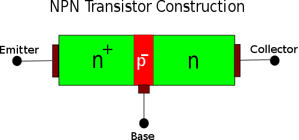
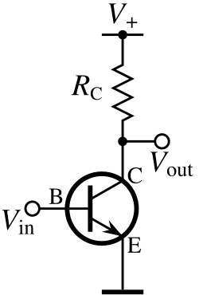
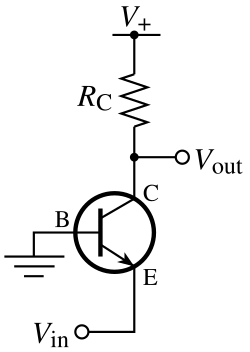
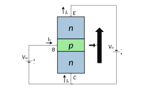
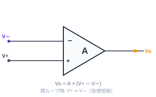
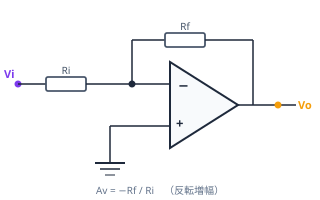
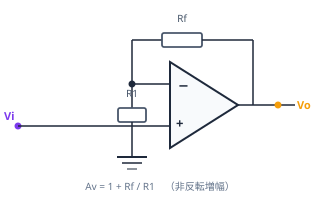
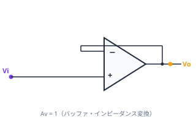
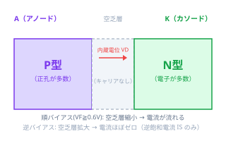
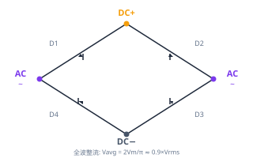

<!DOCTYPE html>
<html lang="ja" data-theme="light" data-accent="forest" data-difficulty="standard">
<head>
  <meta charset="UTF-8">
  <meta name="viewport" content="width=device-width, initial-scale=1.0">
  <title>電験3種 理論Wiki — 受験対策・要点まとめ</title>
  <link rel="preconnect" href="https://fonts.googleapis.com">
  <link rel="preconnect" href="https://fonts.gstatic.com" crossorigin>
  <link href="https://fonts.googleapis.com/css2?family=Noto+Sans+JP:wght@400;500;600;700&family=Noto+Serif+JP:wght@500;600;700&family=JetBrains+Mono:wght@400;600;700&display=swap" rel="stylesheet">
  <link rel="stylesheet" href="https://cdn.jsdelivr.net/npm/katex@0.16.9/dist/katex.min.css">
  <script defer src="https://cdn.jsdelivr.net/npm/katex@0.16.9/dist/katex.min.js"></script>
  <style>
/* ============================================================
   電験3種 理論Wiki — Stylesheet
   ============================================================ */

:root {
  --bg: oklch(0.985 0.005 85);
  --bg-elev: oklch(0.995 0.003 85);
  --bg-sunken: oklch(0.96 0.006 85);
  --ink: oklch(0.22 0.02 260);
  --ink-soft: oklch(0.42 0.018 260);
  --ink-mute: oklch(0.58 0.014 260);
  --rule: oklch(0.88 0.008 260);
  --rule-soft: oklch(0.93 0.006 260);
  --accent: oklch(0.45 0.12 260);
  --accent-soft: oklch(0.92 0.04 260);
  --accent-ink: oklch(0.32 0.13 260);
  --warn: oklch(0.55 0.14 50);
  --warn-soft: oklch(0.95 0.04 70);
  --ok: oklch(0.55 0.10 155);
  --ok-soft: oklch(0.94 0.04 155);
  --danger: oklch(0.55 0.16 25);
  --danger-soft: oklch(0.95 0.03 25);

  --font-serif: "Noto Serif JP", "Hiragino Mincho ProN", "Yu Mincho", serif;
  --font-sans: "Noto Sans JP", "Hiragino Sans", "Yu Gothic", system-ui, sans-serif;
  --font-mono: "JetBrains Mono", "SF Mono", "Menlo", monospace;

  --fs-base: 15px;
  --lh-base: 1.85;

  --sidebar-w: 280px;
  --toc-w: 220px;
  --content-max: 760px;
}

[data-theme="dark"] {
  --bg: oklch(0.18 0.012 260);
  --bg-elev: oklch(0.22 0.012 260);
  --bg-sunken: oklch(0.14 0.012 260);
  --ink: oklch(0.94 0.008 85);
  --ink-soft: oklch(0.78 0.012 260);
  --ink-mute: oklch(0.60 0.014 260);
  --rule: oklch(0.32 0.014 260);
  --rule-soft: oklch(0.26 0.012 260);
  --accent: oklch(0.72 0.12 260);
  --accent-soft: oklch(0.30 0.06 260);
  --accent-ink: oklch(0.85 0.10 260);
  --warn: oklch(0.78 0.14 70);
  --warn-soft: oklch(0.32 0.05 70);
  --ok: oklch(0.78 0.12 155);
  --ok-soft: oklch(0.28 0.05 155);
  --danger: oklch(0.78 0.14 25);
  --danger-soft: oklch(0.32 0.05 25);
}

[data-accent="forest"]  { --accent: oklch(0.45 0.12 260); --accent-soft: oklch(0.92 0.04 260); --accent-ink: oklch(0.32 0.13 260); }
[data-accent="forest"]  { --accent: oklch(0.45 0.10 155); --accent-soft: oklch(0.92 0.04 155); --accent-ink: oklch(0.32 0.11 155); }
[data-accent="rust"]    { --accent: oklch(0.50 0.13 35);  --accent-soft: oklch(0.93 0.04 50);  --accent-ink: oklch(0.38 0.14 35);  }
[data-accent="aubergine"] { --accent: oklch(0.40 0.10 320); --accent-soft: oklch(0.92 0.04 320); --accent-ink: oklch(0.30 0.11 320); }

[data-theme="dark"][data-accent="forest"]  { --accent: oklch(0.74 0.12 260); --accent-soft: oklch(0.30 0.06 260); --accent-ink: oklch(0.85 0.10 260); }
[data-theme="dark"][data-accent="forest"]  { --accent: oklch(0.78 0.12 155); --accent-soft: oklch(0.28 0.05 155); --accent-ink: oklch(0.86 0.10 155); }
[data-theme="dark"][data-accent="rust"]    { --accent: oklch(0.78 0.13 50);  --accent-soft: oklch(0.30 0.06 50);  --accent-ink: oklch(0.85 0.12 50);  }
[data-theme="dark"][data-accent="aubergine"] { --accent: oklch(0.74 0.10 320); --accent-soft: oklch(0.28 0.05 320); --accent-ink: oklch(0.85 0.10 320); }

* { box-sizing: border-box; }

html, body {
  margin: 0;
  padding: 0;
  background: var(--bg);
  color: var(--ink);
  font-family: var(--font-sans);
  font-size: var(--fs-base);
  line-height: var(--lh-base);
  -webkit-font-smoothing: antialiased;
  text-rendering: optimizeLegibility;
}

a { color: var(--accent-ink); text-decoration: none; }
a:hover { text-decoration: underline; text-underline-offset: 3px; }

/* ============================================================ Layout */

.app {
  display: grid;
  grid-template-columns: var(--sidebar-w) 1fr var(--toc-w);
  min-height: 100vh;
}

@media (max-width: 1100px) {
  .app { grid-template-columns: var(--sidebar-w) 1fr; }
  .toc { display: none; }
}

@media (max-width: 760px) {
  .app { grid-template-columns: 1fr; }
  .sidebar { display: none; }
}

/* ============================================================ Sidebar */

.sidebar {
  position: sticky;
  top: 0;
  height: 100vh;
  border-right: 1px solid var(--rule);
  background: var(--bg-sunken);
  overflow-y: auto;
  padding: 22px 18px 60px;
}

.brand {
  display: flex;
  align-items: center;
  gap: 10px;
  padding: 4px 4px 18px;
  border-bottom: 1px solid var(--rule);
  margin-bottom: 16px;
}

.brand-mark {
  width: 36px;
  height: 36px;
  border-radius: 6px;
  background: var(--ink);
  color: var(--bg);
  display: grid;
  place-items: center;
  font-family: var(--font-serif);
  font-weight: 700;
  font-size: 18px;
  letter-spacing: -0.02em;
  flex-shrink: 0;
}

.brand-title {
  font-family: var(--font-serif);
  font-size: 16px;
  font-weight: 600;
  line-height: 1.3;
  letter-spacing: 0.01em;
}
.brand-sub {
  font-size: 11px;
  color: var(--ink-mute);
  letter-spacing: 0.05em;
  text-transform: uppercase;
}

.search {
  position: relative;
  margin-bottom: 18px;
}
.search input {
  width: 100%;
  padding: 8px 10px 8px 32px;
  border: 1px solid var(--rule);
  background: var(--bg-elev);
  border-radius: 5px;
  color: var(--ink);
  font-family: var(--font-sans);
  font-size: 13px;
}
.search input::placeholder { color: var(--ink-mute); }
.search input:focus { outline: 2px solid var(--accent); outline-offset: -1px; border-color: transparent; }
.search-icon {
  position: absolute;
  left: 10px;
  top: 50%;
  transform: translateY(-50%);
  color: var(--ink-mute);
  pointer-events: none;
}

.search-kbd {
  position: absolute;
  right: 8px;
  top: 50%;
  transform: translateY(-50%);
  font-family: var(--font-mono);
  font-size: 10px;
  color: var(--ink-mute);
  border: 1px solid var(--rule);
  padding: 1px 5px;
  border-radius: 3px;
  background: var(--bg);
}

.search-results {
  position: absolute;
  top: calc(100% + 4px);
  left: 0;
  right: 0;
  background: var(--bg-elev);
  border: 1px solid var(--rule);
  border-radius: 6px;
  max-height: 360px;
  overflow-y: auto;
  z-index: 30;
  box-shadow: 0 12px 32px -12px oklch(0.2 0.02 260 / 0.25);
}
.search-result {
  padding: 9px 12px;
  border-bottom: 1px solid var(--rule-soft);
  cursor: pointer;
  font-size: 13px;
}
.search-result:last-child { border-bottom: 0; }
.search-result:hover, .search-result.active { background: var(--accent-soft); }
.search-result-title { font-weight: 600; color: var(--ink); }
.search-result-meta { font-size: 11px; color: var(--ink-mute); margin-top: 2px; }
.search-result mark { background: var(--accent-soft); color: var(--accent-ink); padding: 0 2px; border-radius: 2px; }

.search-filters {
  display: flex;
  flex-wrap: wrap;
  gap: 4px;
  margin: 6px 0 0;
}
.search-chip {
  font-family: var(--font-mono);
  font-size: 11px;
  font-weight: 600;
  padding: 2px 9px;
  border-radius: 99px;
  border: 1px solid var(--rule);
  background: var(--bg-elev);
  color: var(--ink-mute);
  cursor: pointer;
  letter-spacing: 0.03em;
  transition: all 0.1s;
}
.search-chip:hover { border-color: var(--accent); color: var(--accent-ink); }
.search-chip.active { background: var(--accent); border-color: var(--accent); color: #fff; }

.nav-group {
  margin-bottom: 4px;
}

.nav-chapter {
  display: flex;
  align-items: center;
  gap: 6px;
  width: 100%;
  background: transparent;
  border: 0;
  padding: 6px 4px;
  text-align: left;
  cursor: pointer;
  font-family: var(--font-sans);
  font-size: 11px;
  font-weight: 700;
  letter-spacing: 0.08em;
  text-transform: uppercase;
  color: var(--ink-mute);
}
.nav-chapter:hover { color: var(--ink); }
.nav-chapter-caret {
  width: 10px;
  height: 10px;
  transition: transform 0.15s;
}
.nav-chapter[data-open="false"] .nav-chapter-caret { transform: rotate(-90deg); }
.nav-chapter-num {
  font-family: var(--font-mono);
  font-size: 10px;
  color: var(--ink-mute);
  margin-left: auto;
}

.nav-items {
  list-style: none;
  padding: 0;
  margin: 0 0 6px;
  border-left: 1px solid var(--rule);
  margin-left: 8px;
}
.nav-items[data-open="false"] { display: none; }

.nav-item {
  display: flex;
  align-items: baseline;
  gap: 8px;
  padding: 4px 10px 4px 14px;
  margin-left: -1px;
  border-left: 2px solid transparent;
  font-size: 13px;
  color: var(--ink-soft);
  cursor: pointer;
  transition: all 0.12s;
  line-height: 1.4;
}
.nav-item:hover { color: var(--ink); background: var(--rule-soft); }
.nav-item.active {
  color: var(--accent-ink);
  border-left-color: var(--accent);
  background: var(--accent-soft);
  font-weight: 600;
}
.nav-item-num {
  font-family: var(--font-mono);
  font-size: 10px;
  color: var(--ink-mute);
  flex-shrink: 0;
  font-weight: 400;
}
.nav-item.active .nav-item-num { color: var(--accent); }

.nav-badge {
  margin-left: auto;
  font-family: var(--font-mono);
  font-size: 9px;
  font-weight: 700;
  letter-spacing: 0.05em;
  padding: 1px 5px;
  border-radius: 3px;
  background: var(--warn-soft);
  color: var(--warn);
}

.sidebar-footer {
  margin-top: 20px;
  padding-top: 16px;
  border-top: 1px solid var(--rule);
  font-size: 11px;
  color: var(--ink-mute);
  line-height: 1.6;
}

/* ============================================================ Main Content */

.main {
  padding: 36px 48px 120px;
  min-width: 0;
}

@media (max-width: 760px) { .main { padding: 24px 18px 80px; } }

.crumbs {
  font-size: 12px;
  color: var(--ink-mute);
  margin-bottom: 22px;
  display: flex;
  align-items: center;
  gap: 6px;
  flex-wrap: wrap;
}
.crumbs a { color: var(--ink-mute); }
.crumbs a:hover { color: var(--ink); }
.crumbs .sep { color: var(--rule); }

.page-header {
  border-bottom: 2px solid var(--rule);
  padding-bottom: 18px;
  margin-bottom: 32px;
}
.page-eyebrow {
  font-family: var(--font-mono);
  font-size: 11px;
  letter-spacing: 0.12em;
  text-transform: uppercase;
  color: var(--accent-ink);
  margin-bottom: 8px;
}
.page-title {
  font-family: var(--font-serif);
  font-size: 36px;
  font-weight: 700;
  line-height: 1.25;
  letter-spacing: -0.01em;
  margin: 0 0 10px;
  color: var(--ink);
}
.page-deck {
  font-size: 15px;
  color: var(--ink-soft);
  line-height: 1.75;
  max-width: 640px;
}

.page-meta {
  display: flex;
  flex-wrap: wrap;
  gap: 18px;
  margin-top: 16px;
  font-size: 12px;
  color: var(--ink-mute);
}
.page-meta-item { display: flex; align-items: center; gap: 6px; }
.page-meta-item strong { color: var(--ink-soft); font-weight: 600; }
.page-updated { font-size: 11px; color: var(--ink-muted); margin-top: 10px; letter-spacing: 0.04em; }

.content {
  max-width: var(--content-max);
  overflow-wrap: anywhere;
  word-break: auto-phrase;
  line-break: strict;
}

.content h2 {
  font-family: var(--font-serif);
  font-size: 24px;
  font-weight: 700;
  letter-spacing: -0.005em;
  line-height: 1.35;
  margin: 48px 0 16px;
  padding-bottom: 8px;
  border-bottom: 1px solid var(--rule);
  scroll-margin-top: 24px;
}
.content h2 .h-num {
  font-family: var(--font-mono);
  font-size: 13px;
  color: var(--accent);
  font-weight: 600;
  margin-right: 10px;
  letter-spacing: 0.05em;
}
.content h3 {
  font-family: var(--font-serif);
  font-size: 18px;
  font-weight: 600;
  margin: 32px 0 10px;
  scroll-margin-top: 24px;
}
.content h4 {
  font-size: 14px;
  font-weight: 700;
  letter-spacing: 0.02em;
  margin: 22px 0 8px;
  color: var(--ink);
}
.content p,
.content li,
.content td { text-wrap: pretty; }
.content p { margin: 0 0 14px; }
.content p strong { color: var(--ink); font-weight: 700; }

/* 論述で問われるポイント — 黄色マーカー */
.marker {
  background: linear-gradient(transparent 55%, oklch(0.92 0.18 95) 55%);
  padding: 0 2px;
  font-weight: 600;
  color: var(--ink);
}
[data-theme="dark"] .marker {
  background: linear-gradient(transparent 55%, oklch(0.55 0.16 95 / 0.55) 55%);
  color: var(--ink);
}
.content ul, .content ol { padding-left: 22px; margin: 6px 0 16px; }
.content li { margin-bottom: 6px; line-height: 1.75; }
.content code {
  font-family: var(--font-mono);
  font-size: 0.88em;
  background: var(--bg-sunken);
  padding: 1px 5px;
  border-radius: 3px;
  border: 1px solid var(--rule-soft);
}

/* ============================================================ Callouts / boxes */

.box {
  border: 1px solid var(--rule);
  border-radius: 6px;
  padding: 16px 18px;
  margin: 18px 0;
  background: var(--bg-elev);
}
.box-label {
  font-family: var(--font-mono);
  font-size: 10px;
  letter-spacing: 0.12em;
  text-transform: uppercase;
  font-weight: 700;
  margin-bottom: 8px;
  display: flex;
  align-items: center;
  gap: 8px;
}
.box-label::before {
  content: "";
  width: 14px;
  height: 1px;
  background: currentColor;
}

.box-formula  { background: var(--bg-elev); border-color: var(--rule); }
.box-formula .box-label { color: var(--accent-ink); }
.box-warn     { background: var(--bg-elev); border-color: var(--rule); }
.box-warn .box-label { color: var(--warn); }
.box-tip      { background: var(--bg-elev); border-color: var(--rule); }
.box-tip .box-label { color: var(--ok); }
.box-mistake  { background: var(--bg-elev); border-color: var(--rule); }
.box-mistake .box-label { color: var(--danger); }
.box-example  { background: var(--bg-sunken); }
.box-example .box-label { color: var(--ink-soft); }

.box .katex { font-size: 1.05em; }
.box p:last-child { margin-bottom: 0; }

/* ============================================================ Formula card */

.formula-card {
  display: grid;
  grid-template-columns: 80px 1fr;
  gap: 18px;
  align-items: center;
  border: 1px solid var(--rule);
  border-left: 3px solid var(--accent);
  background: var(--bg-elev);
  padding: 16px 20px;
  margin: 16px 0;
  border-radius: 0 5px 5px 0;
}
.formula-card .num {
  font-family: var(--font-mono);
  font-size: 11px;
  letter-spacing: 0.1em;
  color: var(--ink-mute);
}
.formula-card .body { font-size: 14px; color: var(--ink-soft); line-height: 1.6; }
.formula-card .body strong { color: var(--ink); display: block; font-size: 13px; margin-bottom: 4px; font-family: var(--font-sans); }
.formula-card .eq { font-size: 1.15em; margin: 6px 0; }

/* ============================================================ Tables */

.table-wrap { overflow-x: auto; margin: 16px 0; }
table.data {
  width: 100%;
  border-collapse: collapse;
  font-size: 13px;
}
table.data th, table.data td {
  border: 1px solid var(--rule);
  padding: 8px 12px;
  text-align: left;
  vertical-align: top;
}
table.data th {
  background: var(--bg-sunken);
  font-weight: 700;
  font-size: 12px;
  letter-spacing: 0.02em;
}
table.data td.num, table.data th.num { font-family: var(--font-mono); text-align: right; }
table.data tr:nth-child(even) td { background: color-mix(in oklab, var(--bg-sunken) 50%, transparent); }
table.data caption {
  caption-side: top;
  text-align: left;
  font-size: 12px;
  font-weight: 600;
  margin-bottom: 6px;
  color: var(--ink-soft);
}
/* data-table は data の別名（JSX側で className="data-table" を統一使用） */
table.data-table {
  width: 100%;
  border-collapse: collapse;
  font-size: 13px;
}
table.data-table th, table.data-table td {
  border: 1px solid var(--rule);
  padding: 8px 12px;
  text-align: left;
  vertical-align: top;
}
table.data-table th {
  background: var(--bg-sunken);
  font-weight: 700;
  font-size: 12px;
  letter-spacing: 0.02em;
}
table.data-table td.num, table.data-table th.num { font-family: var(--font-mono); text-align: right; }
table.data-table tr:nth-child(even) td { background: color-mix(in oklab, var(--bg-sunken) 50%, transparent); }
table.data td,
table.data-table td {
  overflow-wrap: anywhere;
  word-break: auto-phrase;
  line-break: strict;
}

/* ============================================================ TOC (right rail) */

.toc {
  position: sticky;
  top: 0;
  height: 100vh;
  padding: 36px 22px 36px 8px;
  border-left: 1px solid var(--rule);
  font-size: 12px;
  overflow-y: auto;
}
.toc-label {
  font-family: var(--font-mono);
  font-size: 10px;
  letter-spacing: 0.12em;
  text-transform: uppercase;
  color: var(--ink-mute);
  margin-bottom: 10px;
  font-weight: 700;
}
.toc ul { list-style: none; padding: 0; margin: 0; }
.toc li { margin: 0; }
.toc a {
  display: block;
  padding: 4px 10px;
  border-left: 2px solid var(--rule-soft);
  color: var(--ink-mute);
  font-size: 12px;
  line-height: 1.5;
  transition: all 0.12s;
}
.toc a:hover { color: var(--ink); border-color: var(--ink-mute); text-decoration: none; }
.toc a.active { color: var(--accent-ink); border-color: var(--accent); font-weight: 600; }
.toc li.h3 a { padding-left: 22px; font-size: 11px; }

/* ============================================================ Difficulty badges & filter */

.diff-badge {
  display: inline-block;
  font-family: var(--font-mono);
  font-size: 10px;
  letter-spacing: 0.05em;
  padding: 1px 6px;
  border-radius: 3px;
  font-weight: 700;
  vertical-align: middle;
  margin-left: 6px;
}
.diff-basic    { background: var(--ok-soft);     color: var(--ok); }
.diff-standard { background: var(--accent-soft); color: var(--accent-ink); }
.diff-advanced { background: var(--warn-soft);   color: var(--warn); }

[data-difficulty="basic"]    .diff-only-standard,
[data-difficulty="basic"]    .diff-only-advanced,
[data-difficulty="standard"] .diff-only-advanced {
  display: none !important;
}

/* ============================================================ Cards on home */

.card-grid {
  display: grid;
  grid-template-columns: repeat(auto-fill, minmax(220px, 1fr));
  gap: 14px;
  margin: 22px 0 32px;
}

.card {
  background: var(--bg-elev);
  border: 1px solid var(--rule);
  border-radius: 6px;
  padding: 16px 18px;
  cursor: pointer;
  transition: all 0.15s;
  display: flex;
  flex-direction: column;
  min-height: 120px;
}
.card:hover {
  border-color: var(--accent);
  transform: translateY(-1px);
  box-shadow: 0 6px 18px -10px color-mix(in oklab, var(--accent) 60%, transparent);
}
.card-num {
  font-family: var(--font-mono);
  font-size: 10px;
  letter-spacing: 0.12em;
  color: var(--ink-mute);
  margin-bottom: 4px;
}
.card-title {
  font-family: var(--font-serif);
  font-size: 17px;
  font-weight: 600;
  color: var(--ink);
  margin-bottom: 6px;
  line-height: 1.3;
}
.card-deck { font-size: 12px; color: var(--ink-soft); line-height: 1.55; flex-grow: 1; }
.card-foot {
  margin-top: 10px;
  padding-top: 8px;
  border-top: 1px solid var(--rule-soft);
  display: flex;
  align-items: center;
  justify-content: space-between;
  font-family: var(--font-mono);
  font-size: 10px;
  color: var(--ink-mute);
  letter-spacing: 0.05em;
}
.card-freq { color: var(--accent); font-weight: 700; }

/* ============================================================ Stat strip (home) */

.stat-strip {
  display: grid;
  grid-template-columns: repeat(4, 1fr);
  gap: 0;
  border: 1px solid var(--rule);
  border-radius: 6px;
  background: var(--bg-elev);
  margin: 18px 0 28px;
  overflow: hidden;
}
@media (max-width: 720px) { .stat-strip { grid-template-columns: repeat(2, 1fr); } }
.stat {
  padding: 14px 18px;
  border-right: 1px solid var(--rule);
}
.stat:last-child { border-right: 0; }
.stat-label {
  font-family: var(--font-mono);
  font-size: 10px;
  letter-spacing: 0.1em;
  text-transform: uppercase;
  color: var(--ink-mute);
  margin-bottom: 4px;
}
.stat-value {
  font-family: var(--font-serif);
  font-size: 22px;
  font-weight: 700;
  line-height: 1;
  color: var(--ink);
}
.stat-sub { font-size: 11px; color: var(--ink-mute); margin-top: 4px; }

/* ============================================================ Frequency chart */

.freq-chart {
  display: grid;
  grid-template-columns: 100px 1fr 60px;
  gap: 10px;
  align-items: center;
  font-size: 12px;
  margin: 4px 0;
}
.freq-chart .label { color: var(--ink-soft); font-weight: 500; }
.freq-chart .bar { background: var(--bg-sunken); height: 18px; border-radius: 2px; overflow: hidden; }
.freq-chart .bar-fill {
  height: 100%;
  background: var(--accent);
  display: flex;
  align-items: center;
  padding: 0 6px;
  color: var(--bg);
  font-family: var(--font-mono);
  font-size: 10px;
  font-weight: 700;
}
.freq-chart .pct { font-family: var(--font-mono); color: var(--ink-mute); font-size: 11px; text-align: right; }

/* ============================================================ Diagrams */

.diagram {
  background: var(--bg-elev);
  border: 1px solid var(--rule);
  border-radius: 6px;
  padding: 18px;
  margin: 18px 0;
  text-align: center;
}
.diagram svg { max-width: 100%; height: auto; }
.diagram-caption {
  font-family: var(--font-mono);
  font-size: 11px;
  color: var(--ink-mute);
  margin-top: 10px;
  letter-spacing: 0.04em;
}

.diagram-stroke    { stroke: var(--ink); }
.diagram-fill      { fill: var(--ink); }
.diagram-stroke-soft { stroke: var(--ink-mute); }
.diagram-fill-soft { fill: var(--ink-mute); }
.diagram-fill-bg   { fill: var(--bg-elev); }
.diagram-accent    { stroke: var(--accent); fill: var(--accent); }
.diagram-warn      { stroke: var(--warn); fill: var(--warn); }
.diagram-text      { fill: var(--ink); font-family: var(--font-sans); font-size: 11px; }
.diagram-text-mono { fill: var(--ink-soft); font-family: var(--font-mono); font-size: 10px; letter-spacing: 0.04em; }

/* ============================================================ Past-question rows */

.past-q-row {
  display: grid;
  grid-template-columns: 70px 1fr 90px;
  gap: 14px;
  padding: 10px 12px;
  border-bottom: 1px solid var(--rule-soft);
  font-size: 13px;
  align-items: baseline;
}
.past-q-row:last-child { border-bottom: 0; }
.past-q-row:hover { background: var(--bg-sunken); }
.past-q-year {
  font-family: var(--font-mono);
  font-size: 11px;
  color: var(--ink-mute);
  letter-spacing: 0.04em;
}
.past-q-topic { color: var(--ink); }
.past-q-tag {
  font-family: var(--font-mono);
  font-size: 10px;
  color: var(--ink-soft);
  text-align: right;
  letter-spacing: 0.04em;
}

/* ============================================================ Pagination footer */

.page-nav {
  display: grid;
  grid-template-columns: 1fr auto 1fr;
  gap: 12px;
  margin-top: 64px;
  padding-top: 24px;
  border-top: 1px solid var(--rule);
}
.page-nav-link.portal { text-align: center; }
.page-nav-link {
  display: block;
  padding: 14px 18px;
  border: 1px solid var(--rule);
  border-radius: 5px;
  background: var(--bg-elev);
  cursor: pointer;
  transition: all 0.15s;
  text-decoration: none !important;
}
.page-nav-link:hover { border-color: var(--accent); }
.page-nav-link.next { text-align: right; }
.page-nav-dir {
  font-family: var(--font-mono);
  font-size: 10px;
  letter-spacing: 0.12em;
  text-transform: uppercase;
  color: var(--ink-mute);
  margin-bottom: 4px;
}
.page-nav-title {
  font-family: var(--font-serif);
  font-size: 15px;
  font-weight: 600;
  color: var(--ink);
}

/* ============================================================ Glossary */

.glossary-toolbar {
  display: flex;
  flex-wrap: wrap;
  gap: 8px;
  margin: 18px 0;
}
.glossary-toolbar button {
  font-family: var(--font-mono);
  font-size: 11px;
  padding: 4px 10px;
  border: 1px solid var(--rule);
  background: var(--bg-elev);
  color: var(--ink-soft);
  border-radius: 3px;
  cursor: pointer;
  letter-spacing: 0.05em;
}
.glossary-toolbar button:hover { color: var(--ink); border-color: var(--ink-mute); }
.glossary-toolbar button.active { background: var(--accent); color: var(--bg); border-color: var(--accent); }

.glossary-section { margin-bottom: 24px; }
.glossary-section h3 {
  font-family: var(--font-mono);
  font-size: 14px;
  letter-spacing: 0.1em;
  color: var(--accent);
  border-bottom: 1px solid var(--rule);
  padding-bottom: 4px;
  margin: 16px 0 10px;
}
.glossary-entry {
  display: grid;
  grid-template-columns: 200px 1fr;
  gap: 16px;
  padding: 8px 4px;
  border-bottom: 1px solid var(--rule-soft);
  font-size: 13px;
  line-height: 1.6;
}
.glossary-term { font-weight: 600; color: var(--ink); }
.glossary-reading { font-size: 11px; color: var(--ink-mute); font-family: var(--font-mono); margin-top: 2px; }
.glossary-def { color: var(--ink-soft); }
@media (max-width: 720px) {
  .glossary-entry { grid-template-columns: 1fr; gap: 4px; }
}

/* ============================================================ KaTeX overrides */

.katex { font-size: 1em; }
.katex-display { margin: 8px 0; overflow-x: auto; overflow-y: hidden; }

/* ============================================================ Mobile toggle */

.mobile-menu-btn {
  display: none;
  position: fixed;
  bottom: 20px;
  right: 20px;
  width: 48px;
  height: 48px;
  border-radius: 50%;
  background: var(--ink);
  color: var(--bg);
  border: 0;
  z-index: 50;
  cursor: pointer;
  box-shadow: 0 4px 14px -2px oklch(0.2 0.02 260 / 0.4);
}
@media (max-width: 760px) {
  .mobile-menu-btn { display: grid; place-items: center; }
  .sidebar.mobile-open {
    display: block;
    position: fixed;
    inset: 0;
    z-index: 100;
    width: 100%;
    height: 100%;
  }
}

/* Scrollbar */
::-webkit-scrollbar { width: 10px; height: 10px; }
::-webkit-scrollbar-track { background: transparent; }
::-webkit-scrollbar-thumb { background: var(--rule); border-radius: 5px; border: 2px solid var(--bg); }
::-webkit-scrollbar-thumb:hover { background: var(--ink-mute); }
  </style>
</head>
<body>
  <div id="root"></div>
  <script src="https://unpkg.com/react@18.3.1/umd/react.development.js" integrity="sha384-hD6/rw4ppMLGNu3tX5cjIb+uRZ7UkRJ6BPkLpg4hAu/6onKUg4lLsHAs9EBPT82L" crossorigin="anonymous"></script>
  <script src="https://unpkg.com/react-dom@18.3.1/umd/react-dom.development.js" integrity="sha384-u6aeetuaXnQ38mYT8rp6sbXaQe3NL9t+IBXmnYxwkUI2Hw4bsp2Wvmx4yRQF1uAm" crossorigin="anonymous"></script>
  <script src="https://unpkg.com/@babel/standalone@7.29.0/babel.min.js" integrity="sha384-m08KidiNqLdpJqLq95G/LEi8Qvjl/xUYll3QILypMoQ65QorJ9Lvtp2RXYGBFj1y" crossorigin="anonymous"></script>
<script>
/* data.js */
/* ============================================================
   電験3種 理論Wiki — Content data
   ============================================================ */

/* riron-data.js — 電験3種 理論Wiki WIKI_DATA */
window.WIKI_DATA = {
  chapters: [
    {
      id: "ch1",
      num: "01",
      title: "電磁気",
      pages: [
        { id: "coulomb-field",         num: "1.1", title: "静電気・クーロンの法則", freq: "high" },
        { id: "capacitor",             num: "1.2", title: "コンデンサ",             freq: "max", featured: true },
        { id: "electromagnetic-force", num: "1.3", title: "電磁力",                 freq: "high" },
        { id: "magnetic-circuit",      num: "1.4", title: "磁気回路",               freq: "mid" },
      ],
    },
    {
      id: "ch2",
      num: "02",
      title: "電気回路",
      pages: [
        { id: "dc-circuit",    num: "2.1", title: "直流回路",      freq: "max", featured: true },
        { id: "ac-basics",     num: "2.2", title: "交流の基礎",    freq: "max", featured: true },
        { id: "ac-power",      num: "2.3", title: "交流電力",      freq: "high" },
        { id: "rlc-resonance", num: "2.4", title: "RLC回路・共振", freq: "high", featured: true },
        { id: "bridge-circuit",num: "2.5", title: "ブリッジ回路",  freq: "mid" },
      ],
    },
    {
      id: "ch3",
      num: "03",
      title: "電磁誘導・過渡",
      pages: [
        { id: "inductance", num: "3.1", title: "インダクタンス・電磁誘導", freq: "high" },
        { id: "transient",  num: "3.2", title: "過渡現象",                 freq: "high" },
      ],
    },
    {
      id: "ch4",
      num: "04",
      title: "三相交流",
      pages: [
        { id: "three-phase", num: "4.1", title: "三相交流", freq: "max", featured: true },
      ],
    },
    {
      id: "ch5",
      num: "05",
      title: "電子理論",
      pages: [
        { id: "semiconductor", num: "5.1", title: "半導体・ダイオード",  freq: "mid" },
        { id: "transistor",    num: "5.2", title: "トランジスタ",         freq: "high", featured: true },
        { id: "op-amp",        num: "5.3", title: "演算増幅器",           freq: "high", featured: true },
      ],
    },
    {
      id: "ch6",
      num: "06",
      title: "計測",
      pages: [
        { id: "measurement", num: "6.1", title: "電気・電子計測", freq: "mid" },
      ],
    },
    {
      id: "ch7",
      num: "07",
      title: "攻略",
      pages: [
        { id: "trap-patterns",   num: "7.1", title: "引っかけパターン集（37個）", freq: null, featured: true },
        { id: "last-3days",      num: "7.2", title: "直前3日戦略",                freq: null },
        { id: "retake-strategy", num: "7.3", title: "再受験分析と戦略",           freq: null },
      ],
    },
    {
      id: "ch8",
      num: "08",
      title: "効率的な勉強の仕方",
      pages: [
        { id: "study-purpose",         num: "8.1",  title: "勉強の目的",           freq: null },
        { id: "study-cycle",           num: "8.2",  title: "基本の勉強サイクル",   freq: null },
        { id: "concentration",         num: "8.3",  title: "集中力管理",           freq: null },
        { id: "90min-session",         num: "8.4",  title: "90分勉強セット",      freq: null },
        { id: "error-classification",  num: "8.5",  title: "間違い分類",           freq: null },
        { id: "review-timing",         num: "8.6",  title: "復習タイミング",       freq: null },
        { id: "anti-patterns",         num: "8.7",  title: "効率の悪い勉強法",     freq: null },
        { id: "denken3-methods",       num: "8.8",  title: "電験3種向けの勉強法", freq: null },
        { id: "break-strategy",        num: "8.9",  title: "休憩の取り方",         freq: null },
        { id: "no-motivation",         num: "8.10", title: "やる気がない日の勉強法", freq: null },
        { id: "study-summary",         num: "8.11", title: "まとめ",               freq: null },
      ],
    },
    {
      id: "ref",
      num: "—",
      title: "リファレンス",
      pages: [
        { id: "trends",          num: "A", title: "出題傾向データ", freq: null },
        { id: "glossary",        num: "B", title: "用語集・索引",   freq: null },
        { id: "guide",           num: "C", title: "学習ガイド",     freq: null },
        { id: "formulas",        num: "D", title: "公式集",         freq: null },
        { id: "circuit-patterns",num: "E", title: "回路パターン集", freq: null },
      ],
    },
  ],

  // 出題傾向（過去10年の出題分布、概算値）
  freqData: [
    { topic: "交流回路（インピーダンス・電力）", pct: 17, count: 30 },
    { topic: "三相交流",                       pct: 11, count: 20 },
    { topic: "コンデンサ・静電気",              pct: 11, count: 20 },
    { topic: "電磁誘導・インダクタンス",        pct: 10, count: 18 },
    { topic: "直流回路",                       pct: 10, count: 18 },
    { topic: "RLC共振",                        pct:  8, count: 14 },
    { topic: "電子（BJT/FET/Op-Amp）",         pct: 14, count: 25 },
    { topic: "過渡現象",                       pct:  6, count: 11 },
    { topic: "計測",                           pct:  8, count: 14 },
    { topic: "電磁力・磁気回路",                pct:  5, count: 10 },
  ],

  // 用語集（五十音順）
  glossary: [
    // ア行
    { term: "アドミタンス", reading: "ADMITTANCE", letter: "あ",
      def: "インピーダンスの逆数。Y = 1/Z [S（ジーメンス）]。並列回路では足し算できる。コンダクタンス G とサセプタンス B に分解できる（Y = G + jB）。" },
    { term: "インダクタンス", reading: "INDUCTANCE", letter: "あ",
      def: "コイルが電流変化に対して逆起電力を発生させる係数。v = L·di/dt [H（ヘンリー）]。コイルの形状・巻数・透磁率で決まる。" },
    { term: "インピーダンス", reading: "IMPEDANCE", letter: "あ",
      def: "交流回路における電流の流れにくさ。直流の抵抗に相当するが位相情報も持つ複素量。Z = R + jX [Ω]。" },
    { term: "位相", reading: "PHASE", letter: "あ",
      def: "波の時間的なズレを角度（ラジアンまたは度）で表したもの。電圧と電流の位相差が力率を決める。" },
    { term: "渦電流", reading: "EDDY CURRENT", letter: "あ",
      def: "変化する磁束によって導体内部に誘導される循環電流。鉄心損失の一因であり、薄い鉄板を積層することで低減できる。" },
    { term: "ELIのICEman", reading: "ELI THE ICEMAN", letter: "あ",
      def: "コイル/コンデンサの位相関係を覚える語呂。L（コイル）はE→I（電流が遅れる）、C（コンデンサ）はI→E（電流が進む）。" },
    { term: "IGBT", reading: "IGBT", letter: "あ",
      def: "絶縁ゲートバイポーラトランジスタ。電圧駆動（FET型ゲート）と低オン電圧（バイポーラ型主回路）を両立。中容量インバータの主役。" },
    { term: "アンペアの法則", reading: "AMPERE LAW", letter: "あ",
      def: "閉曲線に沿った磁界の線積分は、その閉曲線で囲まれた電流の総和に等しい。∮H·dl = NI。磁気回路の起磁力計算の基礎。" },

    // カ行
    { term: "角周波数", reading: "ANGULAR FREQUENCY", letter: "か",
      def: "1秒間に何ラジアン進むかを表す量。ω = 2πf [rad/s]。リアクタンス XL = ωL、XC = 1/(ωC)の基本定数。50Hzではω≈314 rad/s。" },
    { term: "共役複素数", reading: "COMPLEX CONJUGATE", letter: "か",
      def: "複素数 Z = a + jb に対して Z* = a − jb。複素電力 S = V·I* で実部が有効電力 P、虚部が無効電力 Q を与える。" },
    { term: "起磁力", reading: "MAGNETOMOTIVE FORCE", letter: "か",
      def: "磁束を発生させる原動力。F = NI [A]。電気回路の起電力に対応する磁気回路の概念。" },
    { term: "虚数単位", reading: "IMAGINARY UNIT", letter: "か",
      def: "j = √(−1)。電気では電流iと区別するためjを使う。フェーザーや複素インピーダンス Z = R + jX を表現する基本。微分d/dtは周波数領域でjωに対応。" },
    { term: "Q値", reading: "QUALITY FACTOR", letter: "か",
      def: "直列RLC共振では Q = ωL/R = 1/(ωCR) の無次元数。Qが大きいほど共振ピークが細く高い。共振時LCの電圧は入力電圧のQ倍に達する。" },
    { term: "共振", reading: "RESONANCE", letter: "か",
      def: "XL = XC となる状態。直列共振では電流最大・インピーダンス最小、並列共振では電流最小・インピーダンス最大。" },
    { term: "クーロン", reading: "COULOMB", letter: "か",
      def: "電荷のSI単位。1 C は約 6.24×10¹⁸ 個の電子が持つ電荷量に相当する。" },
    { term: "クーロンの法則", reading: "COULOMB LAW", letter: "か",
      def: "2つの点電荷間に働く静電気力 F = kQ₁Q₂/r²。r²に反比例する逆二乗則。比例定数 k = 1/(4πε)。" },
    { term: "結合係数", reading: "COUPLING COEFFICIENT", letter: "か",
      def: "相互インダクタンスの大きさを表す無次元数。k = M/√(L₁L₂)、0 ≤ k ≤ 1。k=1が完全結合。" },
    { term: "コンダクタンス", reading: "CONDUCTANCE", letter: "か",
      def: "抵抗の逆数。G = 1/R [S（ジーメンス）]。並列接続時に足し算できる。" },
    { term: "コンデンサ", reading: "CAPACITOR", letter: "か",
      def: "電荷を蓄える素子。Q = CV、エネルギー W = CV²/2。直流定常では開放、t=0⁺の初期電荷ゼロでは短絡として扱う。" },

    // サ行
    { term: "実効値", reading: "RMS", letter: "さ",
      def: "交流の電力効果が等しい直流値。正弦波では Vrms = Vmax/√2。測定器の電圧・電流は通常この値。" },
    { term: "磁界", reading: "MAGNETIC FIELD", letter: "さ",
      def: "単位長さあたりの起磁力。H = NI/l [A/m]。アンペアの法則 ∮H·dl = NI で計算できる。" },
    { term: "静電容量", reading: "CAPACITANCE", letter: "さ",
      def: "コンデンサに電荷を蓄える能力。Q = CV [F（ファラッド）]。電極の面積・間隔・誘電率で決まる。" },
    { term: "磁束", reading: "MAGNETIC FLUX", letter: "さ",
      def: "磁界の強さと面積の積で表す磁気量。φ = B·A [Wb（ウェーバー）]。電磁誘導の基本量。" },
    { term: "磁束密度", reading: "MAGNETIC FLUX DENSITY", letter: "さ",
      def: "単位面積あたりの磁束。B = φ/A = μH [T（テスラ）]。材料の飽和特性に関係する。" },
    { term: "磁気抵抗", reading: "RELUCTANCE", letter: "さ",
      def: "磁束の流れにくさ。Rm = l/(μA) [A/Wb]。電気回路の抵抗に対応する磁気回路の概念。" },
    { term: "サイリスタ", reading: "THYRISTOR", letter: "さ",
      def: "ゲート信号でターンオンする三端子半導体スイッチ。一旦オンすると電流ゼロまでオフできない。位相制御整流に使用。" },
    { term: "サセプタンス", reading: "SUSCEPTANCE", letter: "さ",
      def: "アドミタンスの虚部。Y = G + jB の B [S]。コンデンサの方向（正）・コイルの方向（負）でサインが変わる。" },
    { term: "重ね合わせの理", reading: "SUPERPOSITION", letter: "さ",
      def: "線形回路で複数電源があるとき、各電源単独で計算した値の代数和が全体の応答になる。電源以外を「短絡（電圧源）」「開放（電流源）」にして計算。" },
    { term: "整流回路", reading: "RECTIFIER CIRCUIT", letter: "さ",
      def: "交流を直流に変換する回路。半波・全波・ブリッジ・三相全波があり、平均値・実効値・脈動率がそれぞれ異なる。" },

    // タ行
    { term: "時定数", reading: "TIME CONSTANT", letter: "た",
      def: "過渡現象の変化速度を決める定数。RC回路では τ = RC、RL回路では τ = L/R [s]。τ秒後に変化量の約63.2%、5τ後に約99%（≈定常）。" },
    { term: "単位法", reading: "PER-UNIT SYSTEM", letter: "た",
      def: "基準値（ベース値）で各量を正規化する表現方法。電力系統の解析でよく使われる。" },
    { term: "テブナンの定理", reading: "THEVENIN", letter: "た",
      def: "任意の線形2端子網は、開放端電圧Vthを持つ電圧源と等価内部抵抗Rthの直列回路に置換できる。Rth計算時は電圧源短絡・電流源開放。" },
    { term: "電界", reading: "ELECTRIC FIELD", letter: "た",
      def: "単位正電荷に働く力の場。E = F/q = V/d [V/m]。静電気の問題の基本量。電位の空間的勾配 E = −dV/dx として定義される。" },
    { term: "電気力線", reading: "ELECTRIC FIELD LINE", letter: "た",
      def: "電界の向きと強さを可視化する仮想の線。正電荷から出て負電荷に入る。電気力線の密度が電界の強さを表す。" },
    { term: "電磁誘導", reading: "ELECTROMAGNETIC INDUCTION", letter: "た",
      def: "磁束の変化によって起電力が生じる現象（ファラデーの法則）。e = −N·dφ/dt。レンツの法則で符号（マイナス）が決まる。" },
    { term: "電位", reading: "ELECTRIC POTENTIAL", letter: "た",
      def: "基準点に対する電気的な位置エネルギー [V]。電圧は2点間の電位差を指す。" },
    { term: "電束密度", reading: "ELECTRIC FLUX DENSITY", letter: "た",
      def: "単位面積あたりの電気変位。D = εE [C/m²]。ガウスの法則で使う量。" },
    { term: "デューティ比", reading: "DUTY RATIO", letter: "た",
      def: "チョッパ等のスイッチング素子で、1周期中にオン状態である時間の比率。降圧チョッパでは Vo = D·Vi。" },
    { term: "伝達関数", reading: "TRANSFER FUNCTION", letter: "た",
      def: "線形システムの入力と出力をラプラス変換し、その比 G(s) = Y(s)/X(s) で表したもの。" },
    { term: "透磁率", reading: "PERMEABILITY", letter: "た",
      def: "磁束の通りやすさを表す材料定数。μ = μ₀μr [H/m]。真空 μ₀ = 4π×10⁻⁷ H/m。鉄心ではμrが数百〜数千。" },
    { term: "ダイオード", reading: "DIODE", letter: "た",
      def: "P型・N型半導体を接合した一方向素子。順バイアスで導通、逆バイアスで遮断（微小な逆飽和電流のみ）。整流・検波に使用。" },

    // ナ行
    { term: "内部抵抗", reading: "INTERNAL RESISTANCE", letter: "な",
      def: "電源や計器が持つ理想的でない抵抗成分。電流が流れると内部抵抗で電圧降下が生じ、端子電圧が起電力より低下する。" },
    { term: "ノートンの定理", reading: "NORTON", letter: "な",
      def: "任意の線形2端子網を、短絡電流Isc・並列内部抵抗Rnの電流源に置換できる。テブナンと相互変換可能：In = Vth/Rth。" },

    // ハ行
    { term: "BH曲線", reading: "BH CURVE", letter: "は",
      def: "磁界強度 H に対する磁束密度 B の関係曲線。磁気飽和とヒステリシスを表す。鉄心設計・トランス効率の基礎。" },
    { term: "ベクトル合成", reading: "PHASOR DIAGRAM", letter: "は",
      def: "フェーザーを2次元平面に描き、振幅と位相の関係を視覚化する図。直角三角形や余弦定理で合成インピーダンスを求める。" },
    { term: "皮相電力", reading: "APPARENT POWER", letter: "は",
      def: "電圧と電流の積。S = VI [VA]。有効電力と無効電力のベクトル和：S = √(P² + Q²)。" },
    { term: "誘電率", reading: "PERMITTIVITY", letter: "は",
      def: "電界の通りやすさを表す材料定数。ε = ε₀εr [F/m]。真空 ε₀ = 8.85×10⁻¹² F/m。" },
    { term: "フェーザー", reading: "PHASOR", letter: "は",
      def: "正弦波交流を複素数で表現したもの。大きさ（実効値または最大値）と位相角を持つ。回路方程式を代数的に解ける。" },
    { term: "複素インピーダンス", reading: "COMPLEX IMPEDANCE", letter: "は",
      def: "Z = R + jX（Rは抵抗成分、Xはリアクタンス成分）。|Z| = √(R² + X²)、偏角が位相差を与える。" },
    { term: "ヒステリシス損", reading: "HYSTERESIS LOSS", letter: "は",
      def: "磁性材料が交流磁界を受けるとき、磁化の向きが反転するたびに発生する熱損失。鉄心損失の一つ。" },
    { term: "PWM制御", reading: "PWM", letter: "は",
      def: "パルス幅変調。スイッチング素子のオン時間を変化させ、平均電圧や正弦波等価出力を作る方式。インバータの基本制御方式。" },
    { term: "百分率インピーダンス", reading: "PERCENT IMPEDANCE", letter: "は",
      def: "定格電流が流れたときの内部インピーダンス電圧降下を定格電圧で割った百分率。短絡電流計算に用いる。" },
    { term: "フレミング左手の法則", reading: "FLEMING LEFT HAND", letter: "は",
      def: "電流が磁界中で受ける力の向きを示す。親指=力F、人差し指=磁界B、中指=電流I。電動機（モーター）に使用。" },
    { term: "フレミング右手の法則", reading: "FLEMING RIGHT HAND", letter: "は",
      def: "導体が磁界中を運動するとき発生する起電力の向きを示す。親指=運動v、人差し指=磁界B、中指=起電力e。発電機に使用。" },
    { term: "ファラデーの法則", reading: "FARADAY LAW", letter: "は",
      def: "コイルを貫く磁束変化が起電力を生む。e = −N·dφ/dt。マイナス符号はレンツの法則（変化を妨げる向き）の表れ。" },
    { term: "半導体", reading: "SEMICONDUCTOR", letter: "は",
      def: "導体と絶縁体の中間の電気伝導性を持つ物質。ケイ素・ゲルマニウムが代表例。不純物添加でN型・P型に分かれる。" },
    { term: "BJT", reading: "BJT", letter: "は",
      def: "バイポーラ接合トランジスタ。NPN/PNP構造でベース電流によりコレクタ電流を制御。電流制御素子。電流増幅率hFE。" },
    { term: "FET", reading: "FET", letter: "は",
      def: "電界効果トランジスタ。ゲート電圧でドレイン電流を制御。電圧制御素子で入力インピーダンスが極めて高い。MOSFET/JFETがある。" },

    // マ行
    { term: "無効電力", reading: "REACTIVE POWER", letter: "ま",
      def: "エネルギーを蓄放するだけで仕事をしない電力。Q = VI·sinφ [var]。コイルは正、コンデンサは負の無効電力を持つ。" },
    { term: "ミルマンの定理", reading: "MILLMAN", letter: "ま",
      def: "並列接続された複数電圧源の合成電圧を求める定理。V = ΣVk/Rk ÷ Σ(1/Rk)。不平衡三相回路の中性点電位計算で使用。" },

    // ヤ行
    { term: "有効電力", reading: "ACTIVE POWER", letter: "や",
      def: "実際に仕事をする電力。P = VI·cosφ = I²R [W]。抵抗で消費される。" },

    // ラ行
    { term: "ローレンツ力", reading: "LORENTZ FORCE", letter: "ら",
      def: "電荷を持つ粒子が電磁界から受ける力。導体では F = BIL·sinθ [N]。電動機の回転力・ホール効果のキャリア偏向の機構。" },
    { term: "リアクタンス", reading: "REACTANCE", letter: "ら",
      def: "交流回路のコイル・コンデンサによる抵抗成分。XL = ωL、XC = 1/(ωC) [Ω]。周波数に依存する。" },
    { term: "力率", reading: "POWER FACTOR", letter: "ら",
      def: "有効電力と皮相電力の比。cosφ = P/S。1に近いほど効率が良い。遅れ（コイル）・進み（コンデンサ）で符号が変わる。" },
    { term: "理想電圧源", reading: "IDEAL VOLTAGE SOURCE", letter: "ら",
      def: "内部抵抗ゼロで、負荷に関わらず一定電圧を供給する電源モデル。テブナン等価変換の出力側に現れる。" },
    { term: "理想電流源", reading: "IDEAL CURRENT SOURCE", letter: "ら",
      def: "内部抵抗無限大で、負荷に関わらず一定電流を供給する電源モデル。ノートン等価変換の出力側に現れる。" },
    { term: "レンツの法則", reading: "LENZ LAW", letter: "ら",
      def: "電磁誘導で発生する誘導電流は、磁束の変化を妨げる向きに流れる。ファラデーの法則の符号（マイナス）の物理的意味。" },
    { term: "RLC回路", reading: "RLC CIRCUIT", letter: "ら",
      def: "抵抗R、コイルL、コンデンサCで構成される交流回路。直列共振では電流最大、並列共振では電流最小。Z = √(R² + (XL−XC)²)。" },
    { term: "RC回路", reading: "RC CIRCUIT", letter: "ら",
      def: "抵抗Rとコンデンサで構成される回路。時定数 τ = RC。充放電過程は指数関数で表される。" },
    { term: "RL回路", reading: "RL CIRCUIT", letter: "ら",
      def: "抵抗RとコイルLで構成される回路。時定数 τ = L/R。電流が指数関数的に立ち上がる/減衰する。" },

    // ワ行・その他
    { term: "ホイートストンブリッジ", reading: "WHEATSTONE BRIDGE", letter: "は",
      def: "4つの抵抗を菱形に配置したブリッジ回路。平衡条件は対辺の積：R₁·R₄ = R₂·R₃。検流計に電流が流れない状態で未知抵抗を測定。" },
    { term: "キルヒホッフの法則", reading: "KIRCHHOFF", letter: "か",
      def: "KCL：節点に流入する電流の代数和は零。KVL：閉路に沿った起電力と電圧降下の代数和は零。回路解析の最も基本的な原理。" },
    { term: "オームの法則", reading: "OHM LAW", letter: "あ",
      def: "電圧V・電流I・抵抗Rの関係 V = IR。直流回路の最も基本的な関係式で、交流ではVもIも複素量・Rもインピーダンス Z に拡張される。" },
    { term: "Y結線", reading: "Y CONNECTION / STAR", letter: "や",
      def: "三相回路の結線方式の一つ。3相の一端を中性点に接続。線電流=相電流、線電圧=√3×相電圧。中性線を引き出せる。" },
    { term: "Δ結線", reading: "DELTA CONNECTION", letter: "た",
      def: "三相回路の結線方式の一つ。3相を環状に接続。線電圧=相電圧、線電流=√3×相電流。中性線がない。" },
    { term: "二電力計法", reading: "TWO WATTMETER METHOD", letter: "な",
      def: "三相3線式の電力測定法。2台の電力計の和 P = W₁ + W₂ で全電力を測定。力率角>60°では一方がマイナスを示すが必ず代数和をとる。" },
    { term: "可動コイル型計器", reading: "MOVING COIL", letter: "か",
      def: "永久磁石の磁界中に置かれたコイルに電流を流して指針を動かす計器。直流専用（交流では指針が振れない）。" },
    { term: "可動鉄片型計器", reading: "MOVING IRON", letter: "か",
      def: "電磁コイルが鉄片を吸引することで動作する計器。電流の向きに依存しないため交流・直流両用で使える。" },
    { term: "倍率器", reading: "MULTIPLIER", letter: "は",
      def: "電圧計の測定範囲を拡大する直列抵抗。電圧計と直列接続して超過電圧を分担する。" },
    { term: "分流器", reading: "SHUNT", letter: "は",
      def: "電流計の測定範囲を拡大する並列抵抗。電流計に並列接続して超過電流を迂回させる。" },
    { term: "オペアンプ", reading: "OP-AMP", letter: "あ",
      def: "高利得差動増幅器。負帰還をかけて使うのが一般的。仮想短絡（V+ = V−）を用いれば反転/非反転増幅などのゲインが容易に導ける。" },
    { term: "仮想接地", reading: "VIRTUAL GROUND", letter: "か",
      def: "オペアンプ反転増幅で、−入力端子が0Vに保たれる現象。仮想短絡の特殊ケース。負帰還のかかったオペアンプ回路でのみ成立。" },
    { term: "空乏層", reading: "DEPLETION LAYER", letter: "か",
      def: "PN接合付近でキャリアが拡散して消滅し、自由電荷がほぼゼロになる領域。順バイアスで縮小、逆バイアスで拡大。" },
    { term: "ツェナーダイオード", reading: "ZENER DIODE", letter: "た",
      def: "逆バイアスで一定電圧（ツェナー電圧）に達すると急激に大電流が流れる特性を利用したダイオード。定電圧源として使用。" },
    { term: "差動増幅", reading: "DIFFERENTIAL AMP", letter: "さ",
      def: "2入力の差を増幅する回路。同相成分（ノイズ等）を除去する能力を持ち、CMRR（同相除去比）で性能評価する。" },
    { term: "ガウスの法則", reading: "GAUSS LAW", letter: "か",
      def: "閉曲面を貫く電束の総和は、その内部の総電荷に等しい。∮D·dS = Q。対称性のある電界計算で威力を発揮。" },
    { term: "ビオ・サバールの法則", reading: "BIOT-SAVART", letter: "は",
      def: "電流素片dlが点Pに作る磁界 dH = (I·dl×r̂)/(4πr²)。直線電流・円形電流の磁界計算の基礎。" },
    { term: "相互インダクタンス", reading: "MUTUAL INDUCTANCE", letter: "さ",
      def: "2つのコイル間の磁気結合の強さ。M = k√(L₁L₂)。和動接続では合成 L₁+L₂+2M、差動接続では L₁+L₂−2M。" },
    { term: "三相電力", reading: "THREE-PHASE POWER", letter: "さ",
      def: "三相回路の総電力。P = √3·VL·IL·cosφ = 3·VP·IP·cosφ。Y/Δで電圧・電流の取り方は異なるが式は等価。" },
  ],

  // 過去問サマリ（交流電力）
  circuitPastQ: [
    { year: "R5", topic: "RL直列回路の有効電力・無効電力分解",         tag: "計算" },
    { year: "R4", topic: "力率改善コンデンサ容量の計算",                  tag: "計算" },
    { year: "R3", topic: "皮相電力・有効電力・無効電力の関係（電力三角形）",tag: "理論+計算" },
    { year: "R2", topic: "複素電力 S = V·I* による有効/無効電力導出",     tag: "計算" },
    { year: "R1", topic: "並列負荷の合成力率と全消費電力",                  tag: "計算" },
    { year: "H30",topic: "RC並列回路の力率・電力計算",                       tag: "計算" },
    { year: "H29",topic: "瞬時電力 p(t) の平均値（=有効電力）",              tag: "理論+計算" },
    { year: "H28",topic: "進相コンデンサ投入時の無効電力変化",                tag: "計算" },
    { year: "H27",topic: "電圧・電流の位相差から力率を求める",                tag: "計算" },
    { year: "H26",topic: "RLC直列回路の電力分解（共振付近）",                tag: "計算" },
  ],

  // 過去問サマリ（演算増幅器）
  opampPastQ: [
    { year: "R5", topic: "反転増幅器の電圧利得 −Rf/Ri",                    tag: "計算" },
    { year: "R4", topic: "非反転増幅器の電圧利得 1+Rf/Ri",                  tag: "計算" },
    { year: "R3", topic: "加算増幅器の出力電圧",                              tag: "計算" },
    { year: "R2", topic: "差動増幅器のCMRR",                                tag: "理論" },
    { year: "R1", topic: "理想オペアンプの特性（無限大入力Z・無限大利得）",   tag: "理論" },
    { year: "H30",topic: "積分回路の出力波形（矩形波→三角波）",               tag: "理論+計算" },
    { year: "H29",topic: "微分回路の動作と出力波形",                          tag: "理論" },
    { year: "H28",topic: "反転増幅器の利得計算（マイナス符号必須）",         tag: "計算" },
    { year: "H27",topic: "コンパレータ動作と出力レベル",                      tag: "理論" },
    { year: "H26",topic: "仮想短絡を用いた回路解析",                          tag: "理論+計算" },
  ],

  // 引っかけパターン全37個
  trapPatterns: [
    {
      num: 1, category: "電磁気",
      trap: "❌ 電子はプラスに引かれるから、電界は−極から+極へ向かう。",
      correct: "✅ 電界の向きは「+電荷が受ける力の向き」=+極（高電位）から−極（低電位）へ。電子は電界の逆向きに動くが、電界の定義は正電荷基準。",
      cite: "（H23問2・H28問1 類出）",
    },
    {
      num: 2, category: "電磁気",
      trap: "❌ コンデンサ2個直列なら合成容量は C/2 になる（抵抗と同じ）。",
      correct: "✅ コンデンサは抵抗と逆転する。直列→逆数の和（小さくなる 1/C = 1/C₁ + 1/C₂）、並列→足し算（C = C₁ + C₂）。直列は極板間が広がる→容量低下と物理で覚える。",
      cite: "（R04上問1・R06下問2 類出）",
    },
    {
      num: 3, category: "電磁気",
      trap: "❌ 電荷Q、電圧Vのコンデンサのエネルギーは W = QV。",
      correct: "✅ 充電中の平均電圧は V/2（0からVへ線形上昇）。W = Q×V/2 = CV²/2。係数1/2を付け忘れる罠。",
      cite: "（H20問3・R05上問1 類出）",
    },
    {
      num: 4, category: "電磁気",
      trap: "❌ 発電機はフレミング左手の法則を使う。",
      correct: "✅ 「何が欲しいか」で手を選ぶ。力Fが欲しい→左手（モーター）、起電力eが欲しい→右手（発電機）。試験中は電動機か発電機かを先に確認。",
      cite: "（H25問4・R05下問3 類出）",
    },
    {
      num: 5, category: "電磁気",
      trap: "❌ 鉄心の磁気抵抗 Rm = l/(μ₀·A)。",
      correct: "✅ 鉄心の透磁率は μ = μ₀·μr。μr は数百〜数千。空隙のみμr=1（空気）。鉄心区間と空隙区間で材料を区別することが必須。",
      cite: "（H29問4・R06上問3 類出）",
    },
    {
      num: 6, category: "電磁気",
      trap: "❌ 2コイルの合成インダクタンスは常に L₁ + L₂ + 2M。",
      correct: "✅ 巻き方（同名端子の向き）で符号が決まる。和動接続→L₁+L₂+2M、差動接続→L₁+L₂−2M。同名端子マーク（•）の向きを確認。",
      cite: "（H24問3・R07上問4 類出）",
    },
    {
      num: 7, category: "直流",
      trap: "❌ 1/Rp = 1/4 + 1/4 = 1/2 だから Rp = 1/2 Ω。",
      correct: "✅ 1/Rp = 1/2 を逆数に戻して Rp = 2 Ω。最後ステップで必ずひっくり返す。2素子なら「積÷和」公式で検算。",
      cite: "（H18問5・R04下問5 類出）",
    },
    {
      num: 8, category: "直流",
      trap: "❌ 等価内部抵抗を求めるとき、電流源を短絡する。",
      correct: "✅ 電圧源→短絡（内部抵抗ゼロ）、電流源→開放（内部インピーダンス無限大）。逆操作をすると等価回路が完全に変わる。",
      cite: "（H27問6・R05上問6 類出）",
    },
    {
      num: 9, category: "直流",
      trap: "❌ RL = Rth のとき電力効率が最大になる。",
      correct: "✅ RL = Rth のときは負荷電力が最大になる条件。電源の半分が内部抵抗で消費されるため効率は50%にすぎない。「電力最大≠効率最大」。",
      cite: "（H22問7・R06下問5 類出）",
    },
    {
      num: 10, category: "交流",
      trap: "❌ 直列RLC回路で Z = R + XL + XC。",
      correct: "✅ RとリアクタンスはベクトルでZを合成。Z = √(R² + (XL−XC)²)。直角三角形の斜辺がZ。スカラー加算は実部同士・虚部同士にしか使えない。",
      cite: "（H19問9・R04上問8 類出）",
    },
    {
      num: 11, category: "交流",
      trap: "❌ コイルは電流が電圧より進む。",
      correct: "✅ ELI the ICEman で整理。L（コイル）はE→I（電流遅れ）、C（コンデンサ）はI→E（電流進み）。「コイルに電圧をかけると電流が追いかける遅れ」と理解。",
      cite: "（H21問8・R05下問9 類出）",
    },
    {
      num: 12, category: "交流",
      trap: "❌ コンセント100Vが最大値だ。",
      correct: "✅ 100Vは実効値。最大値は 100√2 ≈ 141V。絶縁設計は最大値を使う。実効値は「等しい仕事量をする直流値」（正弦波で Vmax/√2）。",
      cite: "（H18問8・R06上問8 類出）",
    },
    {
      num: 13, category: "三相",
      trap: "❌ Y結線でも線電流 = √3 × 相電流になる。",
      correct: "✅ Y結線は線電流=相電流（√3なし）、線電圧=√3×相電圧。Δ結線は線電圧=相電圧（√3なし）、線電流=√3×相電流。「Y→電圧に√3、Δ→電流に√3」と整理。",
      cite: "（H20問12・R05上問13 類出）",
    },
    {
      num: 14, category: "三相",
      trap: "❌ 三相電力は単相電力 P₁ = VP·IP·cosφ の3倍だから P = 3VL·IL·cosφ。",
      correct: "✅ Y結線では VP = VL/√3 なので代入すると P = 3×(VL/√3)×IL·cosφ = √3·VL·IL·cosφ。3/√3 = √3 になる。3VL·IL·cosφ は誤り。",
      cite: "（H23問13・R07上問11 類出）",
    },
    {
      num: 15, category: "電子",
      trap: "❌ N型はNegativeの略だから、物質全体が負電荷を持っている。",
      correct: "✅ N型のNは「多数キャリアが電子（Negative）」を意味するだけ。リン原子は+5価の核と4個の共有結合で安定し余剰電子1個放出後は正イオン化する。物質全体は中性。",
      cite: "（H24問14・R06上問13 類出）",
    },
    {
      num: 16, category: "電子",
      trap: "❌ ダイオードに逆バイアスをかけると電流はゼロになる。",
      correct: "✅ 逆バイアスでも微小な逆飽和電流 Is が流れる。温度依存性が高く、温度上昇で急増する。ツェナー降伏電圧で急激に大電流（ツェナーダイオードはこれを利用）。",
      cite: "（H26問14・R05下問13 類出）",
    },
    {
      num: 17, category: "電子",
      trap: "❌ 反転増幅回路のゲインは Av = Rf/Ri。",
      correct: "✅ 反転増幅は出力が入力と逆位相になるため Av = −Rf/Ri。ゲイン絶対値を問うなら |Av| = Rf/Ri でよいが、出力電圧を求めるならマイナス符号が必須。",
      cite: "（H28問18・R06下問17 類出）",
    },
    {
      num: 18, category: "過渡",
      trap: "❌ コンデンサは電荷を蓄えるから、スイッチ直後は電流が流れない→開放として扱う。",
      correct: "✅ 初期電荷ゼロのコンデンサは t=0⁺ で短絡（電圧=0を維持しようとするため電流が最大値で流れ始める）。定常状態では充電完了し電流ゼロ→開放。直後と定常後で扱いが逆転する。",
      cite: "（H25問10・R04上問10 類出）",
    },
    {
      num: 19, category: "過渡",
      trap: "❌ 時定数τ後に回路は定常状態になる。",
      correct: "✅ τ後には定常値の約63%（1−1/e ≈ 63.2%）に達するだけ。5τ後にようやく99%（≈定常値）。「τ=100%」は誤り。i(τ) = I∞(1 − e⁻¹)で計算する。",
      cite: "（H22問10・R05上問10 類出）",
    },
    {
      num: 20, category: "計測",
      trap: "❌ 可動コイル型は電流の大きさに反応するから、交流でも使える。",
      correct: "✅ 可動コイル型は直流専用。永久磁石の磁界と電流の向きで力が発生する仕組み。交流では電流の向きが毎サイクル反転し、力も反転→指針が振れずゼロ。交流測定は可動鉄片型・整流型を使う。",
      cite: "（H19問15・R06下問14 類出）",
    },
    {
      num: 21, category: "電磁気",
      trap: "❌ 磁束密度B=1.2[T]、透磁率μ₀=4π×10⁻⁷[H/m]のとき、磁界H=1.2[A/m]である。",
      correct: "✅ BとHは別の物理量で B=μH（μ=μ₀μr）で結びつく。Bは「磁束の密度」、Hは「磁界の強さ」。真空・空気中ならμr=1でB=μ₀H、磁性体ではμrが数百〜数千になりBとHの比が変わる。比透磁率の記載があれば必ずμ=μ₀μrを使う。",
      cite: "（H21問3・R01上問4 類出）",
    },
    {
      num: 22, category: "電磁気",
      trap: "❌ 電荷Q[C]を持つ平行板コンデンサで、極板間の電界がE[V/m]なら、一方の極板に働く力はF=QE[N]である。",
      correct: "✅ F=QEは「外部電界E中の点電荷Qに働く力」の式で、コンデンサ極板には直接適用できない。一方の極板が感じるのは「相手極板が作る電界」だけ。面電荷密度σ=Q/Sとすると一枚の極板が作る電界はσ/(2ε₀)で、力は F = Q×σ/(2ε₀) = σ²S/(2ε₀)。全電界Eに対しては F=QE/2（係数1/2）が本質。",
      cite: "（H25問5・R03上問2 類出）",
    },
    {
      num: 23, category: "電磁気",
      trap: "❌ 電位V[V]が大きい点ほど電界E[V/m]も強い。",
      correct: "✅ 電界は電位の「空間的な変化率（勾配）」で E = −dV/dx。電位の絶対値ではなく「どれだけ急激に変化しているか」が電界の強さを決める。等電位面上では電位変化ゼロなのでその方向に電界はない（電界は等電位面に常に垂直）。",
      cite: "（H19問2・R05上問1 類出）",
    },
    {
      num: 24, category: "直流",
      trap: "❌ 節点Aに流れ込む電流をI₁と設定したらI₁=−2 A。負の値が出たので設定が間違いと判断しやり直した。",
      correct: "✅ KCLで電流方向の仮定は計算上の便宜であり、解が負になることは「仮定と逆向きに実際は流れている」ことを意味するだけで誤りではない。I₁=−2 Aは「A点から流れ出す方向に2 A」の正しい物理的意味。そのまま他の方程式に代入して連立を解けばよい。やり直すと別の符号ミスを誘発する。",
      cite: "（H22問2・R03上問2 類出）",
    },
    {
      num: 25, category: "直流",
      trap: "❌ 起電力E=12 Vの電池に外部抵抗R=4 Ωを接続。外部抵抗の電圧は12 Vだから電流はI=12/4=3 Aである。",
      correct: "✅ 実際の電池には内部抵抗rが直列に存在する。電流が流れると内部抵抗で電圧降下I·rが生じ、端子電圧は V = E − I·r。「起電力=端子電圧」が成立するのは電流ゼロの開放状態のみ。問題文に内部抵抗が与えられていれば必ず回路に組み込む。",
      cite: "（H19問3・R01問3 類出）",
    },
    {
      num: 26, category: "直流",
      trap: "❌ ホイートストンブリッジで上辺左R₁・上辺右R₂、下辺左R₃・下辺右R₄の場合、平衡条件はR₁·R₂=R₃·R₄である。",
      correct: "✅ ブリッジ平衡条件は「向かい合う対辺の積が等しい」で、正しくは R₁·R₄ = R₂·R₃（上左×下右 = 上右×下左）。検流計に電流が流れない条件 R₁/R₂ = R₃/R₄ から導出される。隣接辺ではなく対角辺の積であることを回路図で確認。",
      cite: "（H25問4・R05上問4 類出）",
    },
    {
      num: 27, category: "交流",
      trap: "❌ RLC直列回路の共振周波数ではコイルとコンデンサのリアクタンスが打ち消し合うのだから、回路全体のインピーダンスが最大になる。",
      correct: "✅ 直列共振では ωL = 1/(ωC) のとき誘導性と容量性リアクタンスが完全に相殺。Z = √(R²+(ωL−1/ωC)²) の虚部がゼロになり Z = R（純抵抗のみ）。これがインピーダンス最小値で最大電流が流れる。「共振=打ち消し=最小Z=最大I」という因果。並列共振では逆（最大Z）になるため混同注意。",
      cite: "（H24問9・R02下問9 類出）",
    },
    {
      num: 28, category: "交流",
      trap: "❌ RLC並列回路の共振周波数では、直列共振と同じくインピーダンスが最小になり電源から最大電流が流れる。",
      correct: "✅ 並列回路ではアドミタンス Y = G + j(ωC − 1/(ωL)) で考える。共振時は虚部ゼロで Y = G（最小アドミタンス）→ Z = 1/Y で最大インピーダンス、電源からの電流は最小。ただしL・C間では大きな循環電流が流れる（並列共振の本質）。",
      cite: "（H26問10・R04上問10 類出）",
    },
    {
      num: 29, category: "交流",
      trap: "❌ 皮相電力S、有効電力P、無効電力Qの関係はS=P+Qであり、Qは常に正の値をとる。",
      correct: "✅ 三者の関係はスカラー加算でなく S² = P² + Q²（電力の三角形）。またQの符号は負荷で変わる。誘導性負荷（電流遅れ）でQ>0、容量性負荷（電流進み）でQ<0。力率cosφ = P/S。Qの符号を誤ると力率改善の補償方向が逆になる致命ミス。",
      cite: "（H21問11・R03下問11 類出）",
    },
    {
      num: 30, category: "三相",
      trap: "❌ 二電力計法でW₁=800 W、W₂=−200 Wだった。三相電力はW₁−W₂=1000 Wだ。",
      correct: "✅ 二電力計法の三相全電力は P = W₁ + W₂（常に代数和）。W₂がマイナスは力率角>60°で物理的に起こりうる現象で、符号ごと足す。引き算に変えてはならない。P = 800 + (−200) = 600 W が正答。",
      cite: "（H24問9・R02上問9 類出）",
    },
    {
      num: 31, category: "三相",
      trap: "❌ 三相3線式の不平衡回路でも、各相の相電圧は線間電圧を√3で割れば求まる。",
      correct: "✅ 相電圧=線間電圧÷√3 が成立するのは中性点が固定されている場合（中性線あり4線式、または平衡負荷）のみ。中性線なしの3線式不平衡回路は各相電流が等しくなく中性点電位がシフトする。ミルマンの定理で中性点電位 V_N を求め、各相電圧=線間電圧−V_N で計算する。",
      cite: "（H27問8・R04上問9 類出）",
    },
    {
      num: 32, category: "電子",
      trap: "❌ MOSFETはゲートに電圧をかけて動作するのだから、ゲート電流が流れて入力インピーダンスはバイポーラトランジスタと同程度だ。",
      correct: "✅ MOSFETのゲートは金属酸化膜（SiO₂）で基板と絶縁されており、定常状態ではゲート電流はほぼゼロ（漏れ電流のみ数pA〜nA）。これが入力インピーダンス10⁸Ω以上の理由。バイポーラのベース電流（hFEで規定される実電流）とは物理機構が根本的に異なる「電圧制御素子」が高インピーダンスの原因。",
      cite: "（H22問14・R03上問14 類出）",
    },
    {
      num: 33, category: "電子",
      trap: "❌ 順バイアスをかけると電流が流れやすくなるので空乏層が広がり、逆バイアスでは電流が止まるので空乏層が狭まる。",
      correct: "✅ 順バイアスでは外部電圧がpn接合の内蔵電位（ビルトインポテンシャル）を打ち消す方向に働き、空乏層は縮小する。逆バイアスでは内蔵電位を強める方向に働き、空乏層は拡大する。電流の流れやすさと空乏層の広さは逆の関係。逆バイアスで広がった空乏層がコンデンサとして機能するのがバラクタダイオード。",
      cite: "（H25問15・R01問15 類出）",
    },
    {
      num: 34, category: "過渡",
      trap: "❌ RL直列回路でスイッチを閉じた直後（t=0⁺）、インダクタは抵抗がないので電流はすぐに流れ始める。",
      correct: "✅ インダクタは電流の変化を妨げる素子（v = L·di/dt）。t=0⁺では電流をゼロのまま維持しようとするため開放として扱う。コンデンサ（t=0⁺は短絡）と逆の性質で混同が頻出。定常状態（t→∞）では電流一定で v=0 →短絡。直後と定常後の扱いがコンデンサと完全に逆になる。",
      cite: "（H22問3・R03上問3 類出）",
    },
    {
      num: 35, category: "過渡",
      trap: "❌ RL直列回路の時定数はτ=CR、RC直列回路の時定数はτ=L/Rである。",
      correct: "✅ 時定数の次元は「秒[s]」でなければならない。τ=L/Rは[H]/[Ω]=[s]、τ=CRは[F]·[Ω]=[s]とどちらも次元が合うことを確認。RL回路の微分方程式 L·di/dt + R·i = 0 を解くと指数係数R/L→時定数 L/R。RC回路ではCR·dv/dt + v = 0 を解くと係数1/CR→時定数 CR。単位チェックの習慣が混同を防ぐ。",
      cite: "（H25問4・R01問3 類出）",
    },
    {
      num: 36, category: "計測",
      trap: "❌ 精度の高い電流計は内部抵抗が大きい。",
      correct: "✅ 電流計は測定対象に直列に挿入する。内部抵抗が大きいほど回路全体の抵抗が変化し、本来の電流値が変わってしまう（誤差増大）。理想電流計の内部抵抗は0Ω。電圧計は並列接続のため内部抵抗が大きいほど誤差が小さくなる（理想電圧計は∞Ω）。「直列→低抵抗」「並列→高抵抗」と接続目的から導ける。",
      cite: "（H19問7・R04上問8 類出）",
    },
    {
      num: 37, category: "計測",
      trap: "❌ 測定レンジを広げるため、電圧計に分流器（並列抵抗）を付ける。",
      correct: "✅ 電圧計のフルスケール超過電圧を測るには超過分を別の抵抗で「分担」させる必要があり、電圧は直列素子で分圧されるので直列に抵抗（倍率器）を追加する。電流計の場合は超過電流を「迂回」させる必要があり並列に抵抗（分流器）を追加する。目的（電圧を分担／電流を迂回）から接続形式が決まる。",
      cite: "（H23問8・R02問8 類出）",
    },
  ],
};
</script>
<script type="text/babel">
/* tweaks-panel.jsx */

// tweaks-panel.jsx
// Reusable Tweaks shell + form-control helpers.
//
// Owns the host protocol (listens for __activate_edit_mode / __deactivate_edit_mode,
// posts __edit_mode_available / __edit_mode_set_keys / __edit_mode_dismissed) so
// individual prototypes don't re-roll it. Ships a consistent set of controls so you
// don't hand-draw <input type="range">, segmented radios, steppers, etc.
//
// Usage (in an HTML file that loads React + Babel):
//
//   const TWEAK_DEFAULTS = /*EDITMODE-BEGIN*/{
//     "primaryColor": "#D97757",
//     "fontSize": 16,
//     "density": "regular",
//     "dark": false
//   }/*EDITMODE-END*/;
//
//   function App() {
//     const [t, setTweak] = useTweaks(TWEAK_DEFAULTS);
//     return (
//       <div style={{ fontSize: t.fontSize, color: t.primaryColor }}>
//         Hello
//         <TweaksPanel>
//           <TweakSection label="Typography" />
//           <TweakSlider label="Font size" value={t.fontSize} min={10} max={32} unit="px"
//                        onChange={(v) => setTweak('fontSize', v)} />
//           <TweakRadio  label="Density" value={t.density}
//                        options={['compact', 'regular', 'comfy']}
//                        onChange={(v) => setTweak('density', v)} />
//           <TweakSection label="Theme" />
//           <TweakColor  label="Primary" value={t.primaryColor}
//                        onChange={(v) => setTweak('primaryColor', v)} />
//           <TweakToggle label="Dark mode" value={t.dark}
//                        onChange={(v) => setTweak('dark', v)} />
//         </TweaksPanel>
//       </div>
//     );
//   }
//
// ─────────────────────────────────────────────────────────────────────────────

const __TWEAKS_STYLE = `
  .twk-panel{position:fixed;right:16px;bottom:16px;z-index:2147483646;width:280px;
    max-height:calc(100vh - 32px);display:flex;flex-direction:column;
    background:rgba(250,249,247,.78);color:#29261b;
    -webkit-backdrop-filter:blur(24px) saturate(160%);backdrop-filter:blur(24px) saturate(160%);
    border:.5px solid rgba(255,255,255,.6);border-radius:14px;
    box-shadow:0 1px 0 rgba(255,255,255,.5) inset,0 12px 40px rgba(0,0,0,.18);
    font:11.5px/1.4 ui-sans-serif,system-ui,-apple-system,sans-serif;overflow:hidden}
  .twk-hd{display:flex;align-items:center;justify-content:space-between;
    padding:10px 8px 10px 14px;cursor:move;user-select:none}
  .twk-hd b{font-size:12px;font-weight:600;letter-spacing:.01em}
  .twk-x{appearance:none;border:0;background:transparent;color:rgba(41,38,27,.55);
    width:22px;height:22px;border-radius:6px;cursor:default;font-size:13px;line-height:1}
  .twk-x:hover{background:rgba(0,0,0,.06);color:#29261b}
  .twk-body{padding:2px 14px 14px;display:flex;flex-direction:column;gap:10px;
    overflow-y:auto;overflow-x:hidden;min-height:0;
    scrollbar-width:thin;scrollbar-color:rgba(0,0,0,.15) transparent}
  .twk-body::-webkit-scrollbar{width:8px}
  .twk-body::-webkit-scrollbar-track{background:transparent;margin:2px}
  .twk-body::-webkit-scrollbar-thumb{background:rgba(0,0,0,.15);border-radius:4px;
    border:2px solid transparent;background-clip:content-box}
  .twk-body::-webkit-scrollbar-thumb:hover{background:rgba(0,0,0,.25);
    border:2px solid transparent;background-clip:content-box}
  .twk-row{display:flex;flex-direction:column;gap:5px}
  .twk-row-h{flex-direction:row;align-items:center;justify-content:space-between;gap:10px}
  .twk-lbl{display:flex;justify-content:space-between;align-items:baseline;
    color:rgba(41,38,27,.72)}
  .twk-lbl>span:first-child{font-weight:500}
  .twk-val{color:rgba(41,38,27,.5);font-variant-numeric:tabular-nums}

  .twk-sect{font-size:10px;font-weight:600;letter-spacing:.06em;text-transform:uppercase;
    color:rgba(41,38,27,.45);padding:10px 0 0}
  .twk-sect:first-child{padding-top:0}

  .twk-field{appearance:none;width:100%;height:26px;padding:0 8px;
    border:.5px solid rgba(0,0,0,.1);border-radius:7px;
    background:rgba(255,255,255,.6);color:inherit;font:inherit;outline:none}
  .twk-field:focus{border-color:rgba(0,0,0,.25);background:rgba(255,255,255,.85)}
  select.twk-field{padding-right:22px;
    background-image:url("data:image/svg+xml;utf8,<svg xmlns='http://www.w3.org/2000/svg' width='10' height='6' viewBox='0 0 10 6'><path fill='rgba(0,0,0,.5)' d='M0 0h10L5 6z'/></svg>");
    background-repeat:no-repeat;background-position:right 8px center}

  .twk-slider{appearance:none;-webkit-appearance:none;width:100%;height:4px;margin:6px 0;
    border-radius:999px;background:rgba(0,0,0,.12);outline:none}
  .twk-slider::-webkit-slider-thumb{-webkit-appearance:none;appearance:none;
    width:14px;height:14px;border-radius:50%;background:#fff;
    border:.5px solid rgba(0,0,0,.12);box-shadow:0 1px 3px rgba(0,0,0,.2);cursor:default}
  .twk-slider::-moz-range-thumb{width:14px;height:14px;border-radius:50%;
    background:#fff;border:.5px solid rgba(0,0,0,.12);box-shadow:0 1px 3px rgba(0,0,0,.2);cursor:default}

  .twk-seg{position:relative;display:flex;padding:2px;border-radius:8px;
    background:rgba(0,0,0,.06);user-select:none}
  .twk-seg-thumb{position:absolute;top:2px;bottom:2px;border-radius:6px;
    background:rgba(255,255,255,.9);box-shadow:0 1px 2px rgba(0,0,0,.12);
    transition:left .15s cubic-bezier(.3,.7,.4,1),width .15s}
  .twk-seg.dragging .twk-seg-thumb{transition:none}
  .twk-seg button{appearance:none;position:relative;z-index:1;flex:1;border:0;
    background:transparent;color:inherit;font:inherit;font-weight:500;min-height:22px;
    border-radius:6px;cursor:default;padding:4px 6px;line-height:1.2;
    overflow-wrap:anywhere}

  .twk-toggle{position:relative;width:32px;height:18px;border:0;border-radius:999px;
    background:rgba(0,0,0,.15);transition:background .15s;cursor:default;padding:0}
  .twk-toggle[data-on="1"]{background:#34c759}
  .twk-toggle i{position:absolute;top:2px;left:2px;width:14px;height:14px;border-radius:50%;
    background:#fff;box-shadow:0 1px 2px rgba(0,0,0,.25);transition:transform .15s}
  .twk-toggle[data-on="1"] i{transform:translateX(14px)}

  .twk-num{display:flex;align-items:center;height:26px;padding:0 0 0 8px;
    border:.5px solid rgba(0,0,0,.1);border-radius:7px;background:rgba(255,255,255,.6)}
  .twk-num-lbl{font-weight:500;color:rgba(41,38,27,.6);cursor:ew-resize;
    user-select:none;padding-right:8px}
  .twk-num input{flex:1;min-width:0;height:100%;border:0;background:transparent;
    font:inherit;font-variant-numeric:tabular-nums;text-align:right;padding:0 8px 0 0;
    outline:none;color:inherit;-moz-appearance:textfield}
  .twk-num input::-webkit-inner-spin-button,.twk-num input::-webkit-outer-spin-button{
    -webkit-appearance:none;margin:0}
  .twk-num-unit{padding-right:8px;color:rgba(41,38,27,.45)}

  .twk-btn{appearance:none;height:26px;padding:0 12px;border:0;border-radius:7px;
    background:rgba(0,0,0,.78);color:#fff;font:inherit;font-weight:500;cursor:default}
  .twk-btn:hover{background:rgba(0,0,0,.88)}
  .twk-btn.secondary{background:rgba(0,0,0,.06);color:inherit}
  .twk-btn.secondary:hover{background:rgba(0,0,0,.1)}

  .twk-swatch{appearance:none;-webkit-appearance:none;width:56px;height:22px;
    border:.5px solid rgba(0,0,0,.1);border-radius:6px;padding:0;cursor:default;
    background:transparent;flex-shrink:0}
  .twk-swatch::-webkit-color-swatch-wrapper{padding:0}
  .twk-swatch::-webkit-color-swatch{border:0;border-radius:5.5px}
  .twk-swatch::-moz-color-swatch{border:0;border-radius:5.5px}
`;

// ── useTweaks ───────────────────────────────────────────────────────────────
// Single source of truth for tweak values. setTweak persists via the host
// (__edit_mode_set_keys → host rewrites the EDITMODE block on disk).
function useTweaks(defaults) {
  const [values, setValues] = React.useState(defaults);
  // Accepts either setTweak('key', value) or setTweak({ key: value, ... }) so a
  // useState-style call doesn't write a "[object Object]" key into the persisted
  // JSON block.
  const setTweak = React.useCallback((keyOrEdits, val) => {
    const edits = typeof keyOrEdits === 'object' && keyOrEdits !== null
      ? keyOrEdits : { [keyOrEdits]: val };
    setValues((prev) => ({ ...prev, ...edits }));
    window.parent.postMessage({ type: '__edit_mode_set_keys', edits }, '*');
  }, []);
  return [values, setTweak];
}

// ── TweaksPanel ─────────────────────────────────────────────────────────────
// Floating shell. Registers the protocol listener BEFORE announcing
// availability — if the announce ran first, the host's activate could land
// before our handler exists and the toolbar toggle would silently no-op.
// The close button posts __edit_mode_dismissed so the host's toolbar toggle
// flips off in lockstep; the host echoes __deactivate_edit_mode back which
// is what actually hides the panel.
function TweaksPanel({ title = 'Tweaks', children }) {
  const [open, setOpen] = React.useState(false);
  const dragRef = React.useRef(null);
  const offsetRef = React.useRef({ x: 16, y: 16 });
  const PAD = 16;

  const clampToViewport = React.useCallback(() => {
    const panel = dragRef.current;
    if (!panel) return;
    const w = panel.offsetWidth, h = panel.offsetHeight;
    const maxRight = Math.max(PAD, window.innerWidth - w - PAD);
    const maxBottom = Math.max(PAD, window.innerHeight - h - PAD);
    offsetRef.current = {
      x: Math.min(maxRight, Math.max(PAD, offsetRef.current.x)),
      y: Math.min(maxBottom, Math.max(PAD, offsetRef.current.y)),
    };
    panel.style.right = offsetRef.current.x + 'px';
    panel.style.bottom = offsetRef.current.y + 'px';
  }, []);

  React.useEffect(() => {
    if (!open) return;
    clampToViewport();
    if (typeof ResizeObserver === 'undefined') {
      window.addEventListener('resize', clampToViewport);
      return () => window.removeEventListener('resize', clampToViewport);
    }
    const ro = new ResizeObserver(clampToViewport);
    ro.observe(document.documentElement);
    return () => ro.disconnect();
  }, [open, clampToViewport]);

  React.useEffect(() => {
    const onMsg = (e) => {
      const t = e?.data?.type;
      if (t === '__activate_edit_mode') setOpen(true);
      else if (t === '__deactivate_edit_mode') setOpen(false);
    };
    window.addEventListener('message', onMsg);
    window.parent.postMessage({ type: '__edit_mode_available' }, '*');
    return () => window.removeEventListener('message', onMsg);
  }, []);

  const dismiss = () => {
    setOpen(false);
    window.parent.postMessage({ type: '__edit_mode_dismissed' }, '*');
  };

  const onDragStart = (e) => {
    const panel = dragRef.current;
    if (!panel) return;
    const r = panel.getBoundingClientRect();
    const sx = e.clientX, sy = e.clientY;
    const startRight = window.innerWidth - r.right;
    const startBottom = window.innerHeight - r.bottom;
    const move = (ev) => {
      offsetRef.current = {
        x: startRight - (ev.clientX - sx),
        y: startBottom - (ev.clientY - sy),
      };
      clampToViewport();
    };
    const up = () => {
      window.removeEventListener('mousemove', move);
      window.removeEventListener('mouseup', up);
    };
    window.addEventListener('mousemove', move);
    window.addEventListener('mouseup', up);
  };

  if (!open) return null;
  return (
    <>
      <style>{__TWEAKS_STYLE}</style>
      <div ref={dragRef} className="twk-panel"
           style={{ right: offsetRef.current.x, bottom: offsetRef.current.y }}>
        <div className="twk-hd" onMouseDown={onDragStart}>
          <b>{title}</b>
          <button className="twk-x" aria-label="Close tweaks"
                  onMouseDown={(e) => e.stopPropagation()}
                  onClick={dismiss}>✕</button>
        </div>
        <div className="twk-body">{children}</div>
      </div>
    </>
  );
}

// ── Layout helpers ──────────────────────────────────────────────────────────

function TweakSection({ label, children }) {
  return (
    <>
      <div className="twk-sect">{label}</div>
      {children}
    </>
  );
}

function TweakRow({ label, value, children, inline = false }) {
  return (
    <div className={inline ? 'twk-row twk-row-h' : 'twk-row'}>
      <div className="twk-lbl">
        <span>{label}</span>
        {value != null && <span className="twk-val">{value}</span>}
      </div>
      {children}
    </div>
  );
}

// ── Controls ────────────────────────────────────────────────────────────────

function TweakSlider({ label, value, min = 0, max = 100, step = 1, unit = '', onChange }) {
  return (
    <TweakRow label={label} value={`${value}${unit}`}>
      <input type="range" className="twk-slider" min={min} max={max} step={step}
             value={value} onChange={(e) => onChange(Number(e.target.value))} />
    </TweakRow>
  );
}

function TweakToggle({ label, value, onChange }) {
  return (
    <div className="twk-row twk-row-h">
      <div className="twk-lbl"><span>{label}</span></div>
      <button type="button" className="twk-toggle" data-on={value ? '1' : '0'}
              role="switch" aria-checked={!!value}
              onClick={() => onChange(!value)}><i /></button>
    </div>
  );
}

function TweakRadio({ label, value, options, onChange }) {
  const trackRef = React.useRef(null);
  const [dragging, setDragging] = React.useState(false);
  const opts = options.map((o) => (typeof o === 'object' ? o : { value: o, label: o }));
  const idx = Math.max(0, opts.findIndex((o) => o.value === value));
  const n = opts.length;

  // The active value is read by pointer-move handlers attached for the lifetime
  // of a drag — ref it so a stale closure doesn't fire onChange for every move.
  const valueRef = React.useRef(value);
  valueRef.current = value;

  const segAt = (clientX) => {
    const r = trackRef.current.getBoundingClientRect();
    const inner = r.width - 4;
    const i = Math.floor(((clientX - r.left - 2) / inner) * n);
    return opts[Math.max(0, Math.min(n - 1, i))].value;
  };

  const onPointerDown = (e) => {
    setDragging(true);
    const v0 = segAt(e.clientX);
    if (v0 !== valueRef.current) onChange(v0);
    const move = (ev) => {
      if (!trackRef.current) return;
      const v = segAt(ev.clientX);
      if (v !== valueRef.current) onChange(v);
    };
    const up = () => {
      setDragging(false);
      window.removeEventListener('pointermove', move);
      window.removeEventListener('pointerup', up);
    };
    window.addEventListener('pointermove', move);
    window.addEventListener('pointerup', up);
  };

  return (
    <TweakRow label={label}>
      <div ref={trackRef} role="radiogroup" onPointerDown={onPointerDown}
           className={dragging ? 'twk-seg dragging' : 'twk-seg'}>
        <div className="twk-seg-thumb"
             style={{ left: `calc(2px + ${idx} * (100% - 4px) / ${n})`,
                      width: `calc((100% - 4px) / ${n})` }} />
        {opts.map((o) => (
          <button key={o.value} type="button" role="radio" aria-checked={o.value === value}>
            {o.label}
          </button>
        ))}
      </div>
    </TweakRow>
  );
}

function TweakSelect({ label, value, options, onChange }) {
  return (
    <TweakRow label={label}>
      <select className="twk-field" value={value} onChange={(e) => onChange(e.target.value)}>
        {options.map((o) => {
          const v = typeof o === 'object' ? o.value : o;
          const l = typeof o === 'object' ? o.label : o;
          return <option key={v} value={v}>{l}</option>;
        })}
      </select>
    </TweakRow>
  );
}

function TweakText({ label, value, placeholder, onChange }) {
  return (
    <TweakRow label={label}>
      <input className="twk-field" type="text" value={value} placeholder={placeholder}
             onChange={(e) => onChange(e.target.value)} />
    </TweakRow>
  );
}

function TweakNumber({ label, value, min, max, step = 1, unit = '', onChange }) {
  const clamp = (n) => {
    if (min != null && n < min) return min;
    if (max != null && n > max) return max;
    return n;
  };
  const startRef = React.useRef({ x: 0, val: 0 });
  const onScrubStart = (e) => {
    e.preventDefault();
    startRef.current = { x: e.clientX, val: value };
    const decimals = (String(step).split('.')[1] || '').length;
    const move = (ev) => {
      const dx = ev.clientX - startRef.current.x;
      const raw = startRef.current.val + dx * step;
      const snapped = Math.round(raw / step) * step;
      onChange(clamp(Number(snapped.toFixed(decimals))));
    };
    const up = () => {
      window.removeEventListener('pointermove', move);
      window.removeEventListener('pointerup', up);
    };
    window.addEventListener('pointermove', move);
    window.addEventListener('pointerup', up);
  };
  return (
    <div className="twk-num">
      <span className="twk-num-lbl" onPointerDown={onScrubStart}>{label}</span>
      <input type="number" value={value} min={min} max={max} step={step}
             onChange={(e) => onChange(clamp(Number(e.target.value)))} />
      {unit && <span className="twk-num-unit">{unit}</span>}
    </div>
  );
}

function TweakColor({ label, value, onChange }) {
  return (
    <div className="twk-row twk-row-h">
      <div className="twk-lbl"><span>{label}</span></div>
      <input type="color" className="twk-swatch" value={value}
             onChange={(e) => onChange(e.target.value)} />
    </div>
  );
}

function TweakButton({ label, onClick, secondary = false }) {
  return (
    <button type="button" className={secondary ? 'twk-btn secondary' : 'twk-btn'}
            onClick={onClick}>{label}</button>
  );
}

Object.assign(window, {
  useTweaks, TweaksPanel, TweakSection, TweakRow,
  TweakSlider, TweakToggle, TweakRadio, TweakSelect,
  TweakText, TweakNumber, TweakColor, TweakButton,
});

</script>
<script type="text/babel">
/* pages-core.jsx */
/* ============================================================
   Page components — Home, units, glossary, etc.
   ============================================================ */

const { useState, useEffect, useMemo, useRef } = React;

/* ============================================================ KaTeX wrapper */

const Eq = ({ tex, display }) => {
  const ref = useRef(null);
  useEffect(() => {
    if (!ref.current || !window.katex) return;
    try {
      window.katex.render(tex, ref.current, { displayMode: !!display, throwOnError: false });
    } catch (e) {
      ref.current.textContent = tex;
    }
  }, [tex, display]);
  return display
    ? <div className="katex-display-wrap" ref={ref} />
    : <span ref={ref} />;
};

/* ============================================================ Page chrome */

const PageHeader = ({ eyebrow, title, deck, meta, updatedAt }) => (
  <header className="page-header">
    {eyebrow && <div className="page-eyebrow">{eyebrow}</div>}
    <h1 className="page-title">{title}</h1>
    {deck && <p className="page-deck">{deck}</p>}
    {meta && <div className="page-meta">{meta.map((m, i) =>
      <div key={i} className="page-meta-item"><strong>{m.label}:</strong> {m.value}</div>
    )}</div>}
    {updatedAt && <div className="page-updated"><time dateTime={updatedAt}>最終更新: {updatedAt}</time></div>}
  </header>
);

const Crumbs = ({ items, onNav }) => (
  <nav className="crumbs">
    {items.map((c, i) => (
      <React.Fragment key={i}>
        {i > 0 && <span className="sep">›</span>}
        {c.id ? <a href="#" onClick={(e) => { e.preventDefault(); onNav(c.id); }}>{c.label}</a> : <span>{c.label}</span>}
      </React.Fragment>
    ))}
  </nav>
);

const Box = ({ kind, label, children }) => (
  <aside className={`box box-${kind}`}>
    {label && <div className="box-label">{label}</div>}
    {children}
  </aside>
);

const FormulaCard = ({ num, name, eq, note }) => (
  <div className="formula-card">
    <div className="num">{num}</div>
    <div className="body">
      <strong>{name}</strong>
      <div className="eq"><Eq tex={eq} display /></div>
      {note && <div>{note}</div>}
    </div>
  </div>
);

const PageNav = ({ prev, next, onNav }) => (
  <div className="page-nav">
    {prev ? (
      <a href="#" className="page-nav-link prev" onClick={(e) => { e.preventDefault(); onNav(prev.id); }}>
        <div className="page-nav-dir">← 前</div>
        <div className="page-nav-title">{prev.title}</div>
      </a>
    ) : <div />}
    <a href="portal-v2.html" className="page-nav-link portal">
      <div className="page-nav-dir">ホーム</div>
      <div className="page-nav-title">ポータル</div>
    </a>
    {next ? (
      <a href="#" className="page-nav-link next" onClick={(e) => { e.preventDefault(); onNav(next.id); }}>
        <div className="page-nav-dir">次 →</div>
        <div className="page-nav-title">{next.title}</div>
      </a>
    ) : <div />}
  </div>
);

const DiffBadge = ({ level }) => {
  const labels = { basic: "基礎", standard: "標準", advanced: "応用" };
  return <span className={`diff-badge diff-${level}`}>{labels[level]}</span>;
};

/* ============================================================ HOME */

const HomePage = ({ data, onNav }) => {
  const featured = data.chapters.flatMap(c => c.pages).filter(p => p.freq === "max" || p.freq === "high");
  return (
    <>
      <Crumbs items={[{ label: "ホーム" }]} onNav={onNav} />
      <PageHeader
        eyebrow="ELECTRICAL ENGINEER 3RD CLASS — MACHINERY"
        title="電験3種 機械Wiki"
        deck="第三種電気主任技術者試験「機械」科目に特化した、復習中心の学習Wiki。出題頻度の高い単元を中心に、要点・公式・誤答ポイント・過去問傾向を網羅する。"
        meta={[
          { label: "対象試験", value: "電験3種 機械科目" },
          { label: "最終更新", value: "2026.04" },
          { label: "登録単元", value: "13" },
        ]}
      />
      <div className="content">

        <div className="stat-strip">
          <div className="stat">
            <div className="stat-label">合格率（過去5年平均）</div>
            <div className="stat-value">約 22%</div>
            <div className="stat-sub">最難関科目の一つ</div>
          </div>
          <div className="stat">
            <div className="stat-label">出題数 / 配点</div>
            <div className="stat-value">A問題 14 + B問題 3</div>
            <div className="stat-sub">100点満点・合格 60点</div>
          </div>
          <div className="stat">
            <div className="stat-label">頻出 TOP 3</div>
            <div className="stat-value">誘導機・変圧器・直流機</div>
            <div className="stat-sub">合計で出題の 約 46%</div>
          </div>
          <div className="stat">
            <div className="stat-label">推奨学習時間</div>
            <div className="stat-value">120 〜 200 時間</div>
            <div className="stat-sub">復習中心で効率化</div>
          </div>
        </div>

        <h2><span className="h-num">1</span>はじめに</h2>
        <p>本Wikiは「電気系出身者の復習」を主眼に置く。中学物理〜電気回路の基礎は前提とし、各単元では <strong>要点を最短経路で押さえる</strong> ことを優先する。説明は教科書調（である調）に統一し、図解・回路図・ベクトル図を充実させた。</p>

        <p>各単元ページには次の要素を備える:</p>
        <ul>
          <li><strong>公式・要点</strong> — 暗記すべき式と、その物理的意味</li>
          <li><strong>図解</strong> — 構造図・等価回路・特性曲線・ベクトル図</li>
          <li><strong>誤答ポイント</strong> — 受験生が落としやすい引っ掛けと注意点</li>
          <li><strong>例題</strong> — 計算ステップを省略しない解答</li>
          <li><strong>過去問データ</strong> — 年度別の出題傾向（直近10年）</li>
        </ul>
        <p style={{marginTop: 14}}>本文中の <span className="marker">黄色マーカー</span> 部分は、論述・記述で問われやすい重要キーワード・原則を示す。試験直前期はマーカー箇所を中心に総ざらいするのが効率的である。</p>

        <h2><span className="h-num">2</span>単元一覧</h2>
        <p>章をクリックして該当ページへ移動する。<span className="diff-badge diff-advanced">応用</span> マークが付いた章は計算問題で頻出。</p>

        {data.chapters.filter(c => c.id !== "ref").map(ch => (
          <div key={ch.id}>
            <h3>{ch.num}. {ch.title}</h3>
            <div className="card-grid">
              {ch.pages.map(p => (
                <div key={p.id} className="card" onClick={() => onNav(p.id)}>
                  <div className="card-num">{p.num}</div>
                  <div className="card-title">{p.title}</div>
                  <div className="card-deck">
                    {pageDeckSummary(p.id)}
                  </div>
                  <div className="card-foot">
                    <span>{freqLabel(p.freq)}</span>
                    {p.featured && <span className="card-freq">★ 重点</span>}
                  </div>
                </div>
              ))}
            </div>
          </div>
        ))}

        <h2><span className="h-num">3</span>出題傾向（直近10年）</h2>
        <p>過去10年間の機械科目における大きな単元別の出題比率。試験対策の優先順位の参考とする。</p>
        <div className="box">
          {data.freqData.map((f, i) => (
            <div key={i} className="freq-chart">
              <span className="label">{f.topic}</span>
              <div className="bar"><div className="bar-fill" style={{ width: `${f.pct * 4}%` }}>{f.count}問</div></div>
              <span className="pct">{f.pct}%</span>
            </div>
          ))}
        </div>

        <h2><span className="h-num">4</span>学習戦略</h2>
        <Box kind="tip" label="推奨アプローチ">
          <ol>
            <li><strong>誘導機 → 変圧器 → 直流機</strong> の順で骨格を固める。三大単元で 6 割を確保する。</li>
            <li>同期機・パワエレを並列で進め、計算問題への対応力を上げる。</li>
            <li>自動制御は伝達関数とブロック線図を反復、頻出パターンに絞る。</li>
            <li>照明・電熱は公式数が少なく短期決戦が可能。直前期に取り組む。</li>
          </ol>
        </Box>

        <Box kind="warn" label="陥りやすい罠">
          <ul>
            <li>同期機と誘導機の数式の混同（同期速度は同じ、滑りの定義は誘導機のみ）</li>
            <li>変圧器の <Eq tex="\%Z" /> と短絡電流の計算でパーセント値の取り扱いを誤る</li>
            <li>パワエレで「平均値」と「実効値」を区別せずに公式を当てはめる</li>
          </ul>
        </Box>
      </div>
      <PageNav next={{ id: "induction-machine", title: "1.2 三相誘導電動機" }} onNav={onNav} />
    </>
  );
};

function pageDeckSummary(id) {
  const m = {
    "dc-machine":        "界磁・電機子・整流子の構造、誘導起電力 E = K φ N、電圧降下と速度特性。",
    "induction-machine": "回転磁界・滑り・等価回路・トルク特性。最頻出単元。",
    "synchronous":       "同期発電機の電圧調整、Vカーブ、安定度、並列運転条件。",
    "single-phase-im":   "分相始動・コンデンサ始動・くま取りコイル形の特徴。",
    "transformer":       "巻数比・電圧変動率・%Z・並列運転・損失と効率。",
    "power-elec":        "整流回路・チョッパ・インバータ・PWM 制御の基礎。",
    "auto-control":      "伝達関数・ブロック線図・周波数応答・安定判別。",
    "info-elec":         "論理回路・基本演算・記憶素子・A/D 変換の概要。",
    "lighting":          "光束・光度・照度・輝度の単位と逆二乗則。",
    "heat":              "発熱量計算・熱伝導・温度上昇・電気加熱方式。",
    "chemistry":         "電気分解・電池・ファラデー定数の応用。",
    "drive-mech":        "電動機の選定・所要動力・はずみ車・速度制御方式。",
  };
  return m[id] || "";
}

function freqLabel(freq) {
  return { max: "出題頻度: 最頻出", high: "出題頻度: 高", mid: "出題頻度: 中", low: "出題頻度: 低" }[freq] || "—";
}

Object.assign(window, { Eq, PageHeader, Crumbs, Box, FormulaCard, PageNav, DiffBadge, HomePage, pageDeckSummary, freqLabel });

</script>
<script type="text/babel">
/* riron-components.jsx */
/* riron-components.jsx — 電験3種 理論Wiki 共通コンポーネント拡張 */
/* このファイルの内容は denken3-riron-wiki.html の
   既存コンポーネント定義ブロックの直後に挿入する */

const { useState, useEffect, useRef, useMemo } = React;

/* ============================================================
   1. Callout
   MkDocs Material の !!! warn/tip/info/note を置き換えるボックス
   ============================================================ */

const Callout = ({ variant = "info", title, children }) => {
  const config = {
    warn: {
      bg: "var(--bg-elev)",
      border: "var(--danger)",
      icon: "⚠",
      labelColor: "var(--danger)",
    },
    tip: {
      bg: "var(--bg-elev)",
      border: "var(--ok)",
      icon: "💡",
      labelColor: "var(--ok)",
    },
    info: {
      bg: "var(--bg-elev)",
      border: "var(--accent)",
      icon: "📍",
      labelColor: "var(--accent-ink)",
    },
    note: {
      bg: "var(--bg-elev)",
      border: "var(--rule)",
      icon: "📝",
      labelColor: "var(--ink-mute)",
    },
  };

  const c = config[variant] || config.info;

  return (
    <aside
      style={{
        background: c.bg,
        borderLeft: `4px solid ${c.border}`,
        borderRadius: "6px",
        padding: "14px 16px",
        margin: "16px 0",
      }}
    >
      {title && (
        <div
          style={{
            fontWeight: 700,
            fontSize: "13px",
            color: c.labelColor,
            marginBottom: children ? "8px" : 0,
            display: "flex",
            alignItems: "center",
            gap: "6px",
          }}
        >
          <span>{c.icon}</span>
          <span>{title}</span>
        </div>
      )}
      {!title && (
        <span
          style={{
            fontSize: "15px",
            marginRight: "6px",
          }}
        >
          {c.icon}
        </span>
      )}
      <div style={{ color: "var(--ink)", lineHeight: "1.75", overflowWrap: "anywhere" }}>{children}</div>
    </aside>
  );
};

/* ============================================================
   2. FormulaTable
   レイヤーA/B 公式表コンポーネント
   rows: [{ formula, meaning, when, notWhen }]
   ============================================================ */

const FormulaTable = ({ layer = "A", rows = [] }) => {
  const layerLabel = layer === "A" ? "レイヤーA — 基本公式" : "レイヤーB — 応用公式";
  const layerColor = layer === "A" ? "var(--accent-ink)" : "var(--warn)";
  const layerBg = "var(--bg-sunken)";

  return (
    <div style={{ margin: "18px 0" }}>
      <div
        style={{
          display: "inline-block",
          background: layerBg,
          color: layerColor,
          fontSize: "11px",
          fontWeight: 700,
          fontFamily: "var(--font-mono)",
          letterSpacing: "0.08em",
          padding: "3px 10px",
          borderRadius: "4px 4px 0 0",
          marginBottom: "-1px",
        }}
      >
        {layerLabel}
      </div>
      <div className="table-wrap" style={{ margin: 0 }}>
        <table className="data">
          <thead>
            <tr>
              <th style={{ width: "24%" }}>公式</th>
              <th style={{ width: "32%" }}>意味</th>
              <th style={{ width: "22%" }}>使える条件</th>
              <th style={{ width: "22%" }}>使えない条件</th>
            </tr>
          </thead>
          <tbody>
            {rows.map((row, i) => (
              <tr key={i}>
                <td style={{ fontFamily: "var(--font-mono)" }}>
                  {row.formula ? <Eq tex={row.formula} /> : "—"}
                </td>
                <td>{row.meaning || "—"}</td>
                <td style={{ color: "var(--ok)", fontSize: "13px" }}>{row.when || "—"}</td>
                <td style={{ color: "var(--danger)", fontSize: "13px" }}>
                  {row.notWhen || "—"}
                </td>
              </tr>
            ))}
          </tbody>
        </table>
      </div>
    </div>
  );
};

/* ============================================================
   3. Analogy
   物理的直感のアナロジーボックス
   ============================================================ */

const Analogy = ({ type = "generic", icon, children }) => {
  const defaultIcons = {
    "water-tank": "💧",
    bridge: "🌉",
    flow: "🌊",
    spring: "🔄",
    generic: "🔑",
  };

  const resolvedIcon = icon || defaultIcons[type] || "🔑";

  return (
    <aside
      style={{
        background: "var(--bg-elev)",
        border: "1px solid var(--rule)",
        borderRadius: "6px",
        padding: "14px 16px",
        margin: "16px 0",
      }}
    >
      <div
        style={{
          fontFamily: "var(--font-mono)",
          fontSize: "11px",
          fontWeight: 700,
          letterSpacing: "0.1em",
          color: "var(--ok)",
          marginBottom: "8px",
          display: "flex",
          alignItems: "center",
          gap: "6px",
        }}
      >
        <span>🔑</span>
        <span>直感アナロジー</span>
      </div>
      <div style={{ display: "flex", gap: "10px", alignItems: "flex-start" }}>
        <span style={{ fontSize: "22px", lineHeight: "1.4", flexShrink: 0 }}>
          {resolvedIcon}
        </span>
        <div style={{ color: "var(--ink)", lineHeight: "1.75" }}>{children}</div>
      </div>
    </aside>
  );
};

/* ============================================================
   4. TrapCard
   引っかけパターン1個を表示するカード
   ============================================================ */

const TrapCard = ({ num, category, trap, correct, cite }) => (
  <div
    style={{
      border: "1px solid var(--rule)",
      borderRadius: "8px",
      padding: "16px",
      margin: "14px 0",
      background: "var(--bg-elev)",
    }}
  >
    {/* ヘッダーバー */}
    <div
      style={{
        display: "flex",
        alignItems: "center",
        gap: "8px",
        marginBottom: "12px",
      }}
    >
      {num !== undefined && (
        <span
          style={{
            fontFamily: "var(--font-mono)",
            fontSize: "11px",
            fontWeight: 700,
            background: "var(--bg-sunken)",
            border: "1px solid var(--rule)",
            borderRadius: "4px",
            padding: "2px 7px",
            color: "var(--ink-mute)",
          }}
        >
          #{num}
        </span>
      )}
      {category && (
        <span
          style={{
            fontSize: "12px",
            fontWeight: 700,
            color: "var(--accent-ink)",
            background: "var(--accent-soft)",
            borderRadius: "4px",
            padding: "2px 8px",
          }}
        >
          {category}
        </span>
      )}
    </div>

    {/* 罠の文章 */}
    {trap && (
      <div
        style={{
          background: "var(--danger-soft)",
          borderLeft: "4px solid var(--danger)",
          borderRadius: "0 6px 6px 0",
          padding: "10px 14px",
          marginBottom: "10px",
          fontStyle: "italic",
          color: "var(--ink)",
          fontSize: "14px",
        }}
      >
        <span style={{ fontWeight: 700, fontStyle: "normal", color: "var(--danger)" }}>
          ❌ 罠:{" "}
        </span>
        {trap}
      </div>
    )}

    {/* 正解の考え方 */}
    {correct && (
      <div
        style={{
          background: "var(--ok-soft)",
          borderLeft: "4px solid var(--ok)",
          borderRadius: "0 6px 6px 0",
          padding: "10px 14px",
          marginBottom: cite ? "10px" : 0,
          color: "var(--ink)",
          fontSize: "14px",
        }}
      >
        <span style={{ fontWeight: 700, color: "var(--ok)" }}>✅ 正解の考え方: </span>
        {correct}
      </div>
    )}

    {/* 出典 */}
    {cite && (
      <div
        style={{
          fontSize: "12px",
          color: "var(--ink-mute)",
          marginTop: "8px",
          paddingLeft: "2px",
        }}
      >
        出典: {cite}
      </div>
    )}
  </div>
);

/* ============================================================
   4b. TrapBlock
   引っかけポイント4層構造コンポーネント（RULE-05準拠）
   正解 → 誤解 → 判別ステップ → 正答者の頭の中 → 出典
   ============================================================ */

const TrapBlock = ({ correct, trap, cite, steps = [], wisdom }) => {
  const hasTrap = !!trap;
  const hasSteps = steps.length > 0;
  const hasWisdom = !!wisdom;
  const hasCite = !!cite;

  return (
    <div style={{
      border: "1px solid var(--rule)",
      borderRadius: "8px",
      margin: "16px 0",
      overflow: "hidden",
    }}>
      {/* 正解（最上段・最初に目に入る） */}
      <div style={{
        background: "var(--bg-elev)",
        borderBottom: (hasTrap || hasSteps || hasWisdom || hasCite) ? "1px solid var(--rule)" : "none",
        padding: "12px 16px",
      }}>
        <div style={{
          fontWeight: 700,
          fontSize: "12px",
          color: "var(--ok)",
          marginBottom: "4px",
          display: "flex",
          alignItems: "center",
          gap: "5px",
        }}>
          <span>✅</span>
          <span>正解の原則</span>
        </div>
        <div style={{ color: "var(--ink)", lineHeight: "1.7", fontSize: "14px" }}>
          {correct}
        </div>
      </div>

      {/* 誤解パターン（補足扱い） */}
      {hasTrap && (
        <div style={{
          background: "var(--bg-elev)",
          borderBottom: (hasSteps || hasWisdom || hasCite) ? "1px solid var(--rule)" : "none",
          padding: "10px 16px",
        }}>
          <div style={{
            fontWeight: 700,
            fontSize: "12px",
            color: "var(--warn)",
            marginBottom: "4px",
            display: "flex",
            alignItems: "center",
            gap: "5px",
          }}>
            <span>⚠</span>
            <span>よくある誤解</span>
          </div>
          <div style={{ color: "var(--ink)", lineHeight: "1.6", fontSize: "13px", fontStyle: "italic" }}>
            {trap}
          </div>
        </div>
      )}

      {/* 判別ステップ */}
      {hasSteps && (
        <div style={{
          padding: "10px 16px",
          background: "var(--bg-elev)",
          borderBottom: (hasWisdom || hasCite) ? "1px solid var(--rule)" : "none",
        }}>
          <div style={{
            fontWeight: 700,
            fontSize: "12px",
            color: "var(--accent-ink)",
            marginBottom: "8px",
            display: "flex",
            alignItems: "center",
            gap: "5px",
          }}>
            <span>🔍</span>
            <span>判別ステップ</span>
          </div>
          <ol style={{ margin: 0, paddingLeft: "1.4em", lineHeight: "1.7", fontSize: "13px" }}>
            {steps.map((s, i) => (
              <li key={i} style={{ marginBottom: i < steps.length - 1 ? "4px" : 0 }}>{s}</li>
            ))}
          </ol>
        </div>
      )}

      {/* 正答者の頭の中（メタ認知パターン・自己診断用） */}
      {hasWisdom && (
        <div style={{
          padding: "10px 16px",
          background: "var(--bg-elev)",
          borderBottom: hasCite ? "1px solid var(--rule)" : "none",
        }}>
          <div style={{
            fontWeight: 700,
            fontSize: "12px",
            color: "var(--ok)",
            marginBottom: "4px",
            display: "flex",
            alignItems: "center",
            gap: "5px",
          }}>
            <span>🎓</span>
            <span>正答者の頭の中</span>
          </div>
          <div style={{ color: "var(--ink)", lineHeight: "1.7", fontSize: "13px" }}>
            {wisdom}
          </div>
        </div>
      )}

      {/* 出典 */}
      {hasCite && (
        <div style={{
          fontSize: "11px",
          color: "var(--ink-mute)",
          padding: "6px 16px",
          background: "var(--bg-sunken)",
        }}>
          出典: {cite}
        </div>
      )}
    </div>
  );
};

/* ============================================================
   5. MetaStrip
   各テーマページのヘッダー直下に表示するメタ情報バー
   ============================================================ */

const MetaStrip = ({ difficulty, importance, frequency }) => {
  const importanceBg =
    importance === "S" || importance === "A"
      ? "var(--accent)"
      : "var(--bg-sunken)";
  const importanceColor =
    importance === "S" || importance === "A"
      ? "var(--bg)"
      : "var(--ink-soft)";

  const frequencyBg =
    frequency === "高" || frequency === "最高"
      ? "var(--warn-soft)"
      : "var(--bg-sunken)";
  const frequencyColor =
    frequency === "高" || frequency === "最高"
      ? "var(--warn)"
      : "var(--ink-soft)";
  const frequencyBorder =
    frequency === "高" || frequency === "最高"
      ? "1px solid color-mix(in oklab, var(--warn) 35%, transparent)"
      : "1px solid var(--rule)";

  const pillBase = {
    display: "inline-flex",
    alignItems: "center",
    gap: "4px",
    borderRadius: "999px",
    padding: "3px 10px",
    fontSize: "12px",
    fontWeight: 700,
    fontFamily: "var(--font-mono)",
    lineHeight: "1.4",
  };

  return (
    <div
      style={{
        display: "flex",
        flexWrap: "wrap",
        gap: "8px",
        marginBottom: "1.2rem",
        alignItems: "center",
      }}
    >
      {difficulty && (
        <span
          style={{
            ...pillBase,
            background: "var(--bg-sunken)",
            color: "var(--ink-soft)",
            border: "1px solid var(--rule)",
          }}
        >
          <span style={{ fontSize: "10px", letterSpacing: "0.06em" }}>難易度</span>
          <span>{difficulty}</span>
        </span>
      )}
      {importance && (
        <span
          style={{
            ...pillBase,
            background: importanceBg,
            color: importanceColor,
            border:
              importance === "S" || importance === "A"
                ? "none"
                : "1px solid var(--rule)",
          }}
        >
          <span style={{ fontSize: "10px", letterSpacing: "0.06em" }}>重要度</span>
          <span>{importance}</span>
        </span>
      )}
      {frequency && (
        <span
          style={{
            ...pillBase,
            background: frequencyBg,
            color: frequencyColor,
            border: frequencyBorder,
          }}
        >
          <span style={{ fontSize: "10px", letterSpacing: "0.06em" }}>出題頻度</span>
          <span>{frequency}</span>
        </span>
      )}
    </div>
  );
};

/* ============================================================
   6. LearningMap
   学習動線バー（前提 → 現在地 → 次）
   ============================================================ */

const LearningMap = ({ prereqs = [], current, nexts = [], onNav }) => {
  if (!prereqs.length && !nexts.length && !current) return null;

  const linkStyle = {
    color: "var(--accent-ink)",
    textDecoration: "none",
    cursor: "pointer",
    fontWeight: 600,
  };

  const arrowStyle = {
    color: "var(--ink-mute)",
    margin: "0 6px",
    fontWeight: 400,
  };

  const currentStyle = {
    color: "var(--accent)",
    fontWeight: 700,
    background: "var(--accent-soft)",
    borderRadius: "4px",
    padding: "1px 7px",
  };

  return (
    <nav
      style={{
        background: "var(--bg-sunken)",
        padding: "10px 14px",
        borderRadius: "6px",
        fontSize: "13px",
        display: "flex",
        flexWrap: "wrap",
        alignItems: "center",
        gap: "2px",
        margin: "0 0 1.2rem",
        lineHeight: "1.6",
      }}
    >
      {prereqs.length > 0 && (
        <>
          <span style={{ color: "var(--ink-mute)", fontSize: "11px", marginRight: "4px" }}>
            前提:
          </span>
          {prereqs.map((p, i) => (
            <React.Fragment key={p.id}>
              {i > 0 && <span style={arrowStyle}>・</span>}
              <a
                href="#"
                style={linkStyle}
                onClick={(e) => {
                  e.preventDefault();
                  onNav && onNav(p.id);
                }}
              >
                {p.title}
              </a>
            </React.Fragment>
          ))}
          <span style={arrowStyle}>→</span>
        </>
      )}

      {current && <span style={currentStyle}>{current}</span>}

      {nexts.length > 0 && (
        <>
          <span style={arrowStyle}>→</span>
          <span style={{ color: "var(--ink-mute)", fontSize: "11px", marginRight: "4px" }}>
            次:
          </span>
          {nexts.map((n, i) => (
            <React.Fragment key={n.id}>
              {i > 0 && <span style={arrowStyle}>・</span>}
              <a
                href="#"
                style={linkStyle}
                onClick={(e) => {
                  e.preventDefault();
                  onNav && onNav(n.id);
                }}
              >
                {n.title}
              </a>
            </React.Fragment>
          ))}
        </>
      )}
    </nav>
  );
};

/* ============================================================
   6.4 PrereqTable — 前提知識テーブル
   rows: [{ knowledge, risk, backId, backTitle }]
   ============================================================ */

const PrereqTable = ({ rows = [], onNav }) => {
  if (!rows.length) return null;
  return (
    <div style={{ margin: "0 0 24px" }}>
      <div style={{ fontSize: "13px", fontWeight: 700, color: "var(--ink-soft)", marginBottom: "8px" }}>
        前提知識
      </div>
      <div className="table-wrap" style={{ margin: 0 }}>
        <table className="data-table" style={{ fontSize: "13px" }}>
          <thead>
            <tr>
              <th style={{ width: "20%" }}>必要知識</th>
              <th style={{ width: "50%" }}>ここが曖昧だと起きるミス</th>
              <th style={{ width: "30%" }}>戻る場所</th>
            </tr>
          </thead>
          <tbody>
            {rows.map((r, i) => (
              <tr key={i}>
                <td style={{ fontWeight: 600 }}>{r.knowledge}</td>
                <td style={{ color: "var(--ink-soft)" }}>{r.risk}</td>
                <td>
                  {r.backId ? (
                    <a href="#" style={{ color: "var(--accent-ink)", fontWeight: 600, textDecoration: "none" }}
                      onClick={(e) => { e.preventDefault(); onNav && onNav(r.backId); }}>
                      {r.backTitle}
                    </a>
                  ) : (
                    <span style={{ color: "var(--ink-mute)" }}>{r.backTitle || "—"}</span>
                  )}
                </td>
              </tr>
            ))}
          </tbody>
        </table>
      </div>
    </div>
  );
};

/* ============================================================
   6.4 TreeNode — FieldOverview用の再帰ツリーノード
   node: { name, testWeight, note?, children?: [] }
   ============================================================ */

const TreeNode = ({ node, depth = 0, isLast = false, weightStyle }) => {
  const w = weightStyle[node.testWeight] || weightStyle.mid;
  const indent = depth * 20;

  return (
    <div style={{ marginLeft: depth === 0 ? 0 : indent }}>
      <div
        style={{
          display: "flex",
          alignItems: "center",
          gap: "6px",
          padding: "3px 0",
          flexWrap: "wrap",
        }}
      >
        {depth > 0 && (
          <span
            style={{
              color: "var(--ink-mute)",
              fontFamily: "var(--font-mono)",
              fontSize: "13px",
              userSelect: "none",
              flexShrink: 0,
            }}
          >
            {isLast ? "└─" : "├─"}
          </span>
        )}
        <span
          style={{
            background: w.background,
            border: w.border,
            borderRadius: "4px",
            padding: "2px 8px",
            fontSize: "13px",
            fontWeight: 700,
            color: "var(--ink)",
            display: "inline-flex",
            alignItems: "center",
            gap: "4px",
          }}
        >
          <span style={{ fontSize: "11px", color: w.labelColor }}>{w.mark}</span>
          {node.name}
        </span>
        {node.note && (
          <span
            style={{
              fontSize: "12px",
              color: "var(--ink-soft)",
              lineHeight: "1.4",
            }}
          >
            {node.note}
          </span>
        )}
      </div>
      {node.children &&
        node.children.map((child, i) => (
          <TreeNode
            key={i}
            node={child}
            depth={depth + 1}
            isLast={i === node.children.length - 1}
            weightStyle={weightStyle}
          />
        ))}
    </div>
  );
};

/* ============================================================
   6.5 FieldOverview
   0 分野全体像（鳥瞰図）— 4〜5ブロック構成
   props: { fieldName, whatIs, components[], examScope, prevNext, tree? }
   - components: [{ name, role, testWeight: "high"|"mid"|"low" }]
   - testWeight: high=オレンジ枠（頻出）/ mid=薄色枠 / low=グレー枠（範囲外）
   - prevNext: { prev:{id,title,reason}, next:{id,title,reason} }
   - tree (optional): [{ name, testWeight, note?, children? }] — 階層ツリー
   ============================================================ */

const FieldOverview = ({ fieldName, whatIs, components = [], examScope, prevNext, tree, onNav }) => {
  const weightStyle = {
    high: {
      background: "var(--warn-soft)",
      border: "2px solid var(--warn)",
      labelColor: "var(--warn)",
      mark: "★",
      markLabel: "頻出",
    },
    mid: {
      background: "var(--accent-soft)",
      border: "1px solid var(--accent)",
      labelColor: "var(--accent-ink)",
      mark: "◎",
      markLabel: "中",
    },
    low: {
      background: "var(--bg-sunken)",
      border: "1px dashed var(--ink-mute)",
      labelColor: "var(--ink-mute)",
      mark: "△",
      markLabel: "範囲外/参考",
    },
  };

  const blockBase = {
    background: "var(--bg)",
    border: "1px solid var(--rule)",
    borderRadius: "8px",
    padding: "14px 16px",
    margin: "0 0 12px",
  };

  const blockLabel = {
    fontFamily: "var(--font-mono)",
    fontSize: "11px",
    fontWeight: 700,
    letterSpacing: "0.08em",
    color: "var(--ink-mute)",
    marginBottom: "6px",
    display: "flex",
    alignItems: "center",
    gap: "6px",
  };

  return (
    <section
      id="overview"
      style={{
        background: "linear-gradient(180deg, var(--accent-soft) 0%, var(--bg) 60%)",
        border: "1px solid color-mix(in oklab, var(--accent) 25%, transparent)",
        borderRadius: "10px",
        padding: "18px 18px 14px",
        margin: "0 0 1.6rem",
      }}
    >
      <h2 id="overview" style={{ marginTop: 0, marginBottom: "12px" }}>
        <span className="h-num">0.</span> 全体像
      </h2>

      {/* ① この分野とは */}
      <div style={blockBase}>
        <div style={blockLabel}>
          <span>🗺️</span>
          <span>① この分野とは</span>
        </div>
        <div style={{ color: "var(--ink)", lineHeight: "1.75" }}>{whatIs}</div>
      </div>

      {/* ② 構成要素マップ */}
      <div style={blockBase}>
        <div style={blockLabel}>
          <span>🧩</span>
          <span>② 構成要素マップ（電験3種で問われる範囲をハイライト）</span>
        </div>
        <div
          style={{
            display: "grid",
            gridTemplateColumns: "repeat(auto-fit, minmax(160px, 1fr))",
            gap: "8px",
            marginTop: "8px",
          }}
        >
          {components.map((c, i) => {
            const w = weightStyle[c.testWeight] || weightStyle.mid;
            return (
              <div
                key={i}
                title={c.role}
                style={{
                  background: w.background,
                  border: w.border,
                  borderRadius: "6px",
                  padding: "8px 10px",
                  cursor: "help",
                }}
              >
                <div
                  style={{
                    fontSize: "11px",
                    fontWeight: 700,
                    color: w.labelColor,
                    marginBottom: "3px",
                    display: "flex",
                    alignItems: "center",
                    gap: "4px",
                  }}
                >
                  <span>{w.mark}</span>
                  <span>{w.markLabel}</span>
                </div>
                <div style={{ fontSize: "13px", fontWeight: 700, color: "var(--ink)", lineHeight: "1.4" }}>
                  {c.name}
                </div>
                <div style={{ fontSize: "11px", color: "var(--ink-soft)", lineHeight: "1.5", marginTop: "3px" }}>
                  {c.role}
                </div>
              </div>
            );
          })}
        </div>
        <div
          style={{
            marginTop: "8px",
            fontSize: "11px",
            color: "var(--ink-mute)",
            display: "flex",
            flexWrap: "wrap",
            gap: "10px",
          }}
        >
          <span>★=試験頻出（オレンジ枠）</span>
          <span>◎=中（青枠）</span>
          <span>△=範囲外/参考（点線枠）</span>
        </div>
      </div>

      {/* ③ 電験3種で問われる範囲 */}
      <div style={blockBase}>
        <div style={blockLabel}>
          <span>📋</span>
          <span>③ 電験3種で問われる範囲</span>
        </div>
        <div style={{ color: "var(--ink)", lineHeight: "1.75" }}>{examScope}</div>
      </div>

      {/* ④ 前後の流れ */}
      {prevNext && (prevNext.prev || prevNext.next) && (
        <div style={{ ...blockBase, marginBottom: 0 }}>
          <div style={blockLabel}>
            <span>🔗</span>
            <span>④ 前後の流れ（学習の文脈）</span>
          </div>
          <div
            style={{
              display: "grid",
              gridTemplateColumns: "1fr 1fr",
              gap: "12px",
              marginTop: "6px",
            }}
          >
            {prevNext.prev && (
              <div style={{ borderLeft: "3px solid var(--ink-mute)", paddingLeft: "10px" }}>
                <div style={{ fontSize: "11px", color: "var(--ink-mute)", fontWeight: 700, marginBottom: "3px" }}>
                  ← 前
                </div>
                <a
                  href="#"
                  style={{ color: "var(--accent-ink)", fontWeight: 700, textDecoration: "none" }}
                  onClick={(e) => {
                    e.preventDefault();
                    onNav && onNav(prevNext.prev.id);
                  }}
                >
                  {prevNext.prev.title}
                </a>
                {prevNext.prev.reason && (
                  <div style={{ fontSize: "12px", color: "var(--ink-soft)", lineHeight: "1.5", marginTop: "3px" }}>
                    {prevNext.prev.reason}
                  </div>
                )}
              </div>
            )}
            {prevNext.next && (
              <div style={{ borderLeft: "3px solid var(--accent)", paddingLeft: "10px" }}>
                <div style={{ fontSize: "11px", color: "var(--accent-ink)", fontWeight: 700, marginBottom: "3px" }}>
                  次 →
                </div>
                <a
                  href="#"
                  style={{ color: "var(--accent-ink)", fontWeight: 700, textDecoration: "none" }}
                  onClick={(e) => {
                    e.preventDefault();
                    onNav && onNav(prevNext.next.id);
                  }}
                >
                  {prevNext.next.title}
                </a>
                {prevNext.next.reason && (
                  <div style={{ fontSize: "12px", color: "var(--ink-soft)", lineHeight: "1.5", marginTop: "3px" }}>
                    {prevNext.next.reason}
                  </div>
                )}
              </div>
            )}
          </div>
        </div>
      )}

      {/* ⑤ 素子分類ツリー（tree prop がある分野のみ） */}
      {tree && tree.length > 0 && (
        <div style={{ ...blockBase, marginBottom: 0, marginTop: "12px" }}>
          <div style={blockLabel}>
            <span>🌲</span>
            <span>⑤ 素子分類ツリー（階層構造と試験範囲）</span>
          </div>
          <div style={{ marginTop: "8px", lineHeight: "1.8" }}>
            {tree.map((root, i) => (
              <TreeNode key={i} node={root} depth={0} isLast={i === tree.length - 1} weightStyle={weightStyle} />
            ))}
          </div>
          <div
            style={{
              marginTop: "10px",
              fontSize: "11px",
              color: "var(--ink-mute)",
              display: "flex",
              flexWrap: "wrap",
              gap: "10px",
            }}
          >
            <span>★=試験頻出</span>
            <span>◎=中程度</span>
            <span>△=範囲外/参考</span>
          </div>
        </div>
      )}
    </section>
  );
};

/* ============================================================
   6.6 MinimumSet
   「最小暗記セット」— 試験直前に見直す圧縮カード（なし）
   props: { formulas[], rules[], patterns[] }
   - formulas: 公式テキスト[]
   - rules:    判断軸テキスト[]
   - patterns: 出題パターンテキスト[]
   ============================================================ */

const MinimumSet = ({ formulas = [], rules = [], patterns = [] }) => {
  const colStyle = {
    flex: "1 1 220px",
  };

  const colHeader = (icon, label) => (
    <div
      style={{
        fontFamily: "var(--font-mono)",
        fontSize: "11px",
        fontWeight: 700,
        letterSpacing: "0.08em",
        color: "var(--accent-ink)",
        marginBottom: "8px",
        display: "flex",
        alignItems: "center",
        gap: "5px",
      }}
    >
      <span>{icon}</span>
      <span>{label}</span>
    </div>
  );

  const itemStyle = {
    fontSize: "13px",
    lineHeight: "1.7",
    color: "var(--ink)",
    padding: "4px 0",
    borderBottom: "1px solid var(--rule)",
    display: "flex",
    alignItems: "flex-start",
    gap: "6px",
  };

  const dot = <span style={{ color: "var(--accent)", fontWeight: 700, flexShrink: 0 }}>›</span>;

  return (
    <aside
      id="minimum-set"
      style={{
        background: "var(--bg-sunken)",
        border: "2px solid var(--accent)",
        borderRadius: "10px",
        padding: "18px 20px",
        margin: "2rem 0 1rem",
      }}
    >
      <div
        style={{
          display: "flex",
          alignItems: "baseline",
          gap: "10px",
          marginBottom: "14px",
          flexWrap: "wrap",
        }}
      >
        <h2
          id="minimum-set-heading"
          style={{
            margin: 0,
            fontSize: "1.15rem",
            fontWeight: 800,
            color: "var(--accent-ink)",
          }}
        >
          最小暗記セット
        </h2>
        <span style={{ fontSize: "12px", color: "var(--ink-mute)" }}>
          試験直前3分でここだけ確認
        </span>
      </div>

      <div style={{ display: "flex", flexWrap: "wrap", gap: "20px" }}>
        {formulas.length > 0 && (
          <div style={colStyle}>
            {colHeader("📐", "公式")}
            {formulas.map((f, i) => (
              <div key={i} style={itemStyle}>
                {dot}
                <span style={{ fontFamily: "var(--font-mono)", fontSize: "13px" }}>{f}</span>
              </div>
            ))}
          </div>
        )}

        {rules.length > 0 && (
          <div style={colStyle}>
            {colHeader("🎯", "判断軸")}
            {rules.map((r, i) => (
              <div key={i} style={itemStyle}>
                {dot}
                <span>{r}</span>
              </div>
            ))}
          </div>
        )}

        {patterns.length > 0 && (
          <div style={colStyle}>
            {colHeader("⚡", "出題パターン")}
            {patterns.map((p, i) => (
              <div key={i} style={itemStyle}>
                {dot}
                <span>{p}</span>
              </div>
            ))}
          </div>
        )}
      </div>
    </aside>
  );
};

/* ============================================================
   7. TrapPatternsPage
   引っかけパターン集ページ本体（37パターン、分野フィルタ付き）
   ============================================================ */

const TrapPatternsPage = ({ onNav }) => {
  const [filter, setFilter] = useState("全部");
  const categories = ["全部", "電磁気", "直流", "交流", "三相", "電子", "計測"];

  const allPatterns =
    window.WIKI_DATA && window.WIKI_DATA.trapPatterns
      ? window.WIKI_DATA.trapPatterns
      : [];

  const filtered = useMemo(() => {
    if (filter === "全部") return allPatterns;
    return allPatterns.filter((p) => p.category === filter);
  }, [filter, allPatterns]);

  const chipBase = {
    display: "inline-block",
    padding: "5px 14px",
    borderRadius: "999px",
    fontSize: "13px",
    fontWeight: 600,
    cursor: "pointer",
    border: "1px solid var(--rule)",
    background: "var(--bg-sunken)",
    color: "var(--ink-soft)",
    transition: "background 0.15s, color 0.15s",
    userSelect: "none",
  };

  const chipActive = {
    ...chipBase,
    background: "var(--accent)",
    color: "var(--bg)",
    border: "1px solid var(--accent)",
  };

  return (
    <>
      <PageHeader
        eyebrow="ELECTRICAL ENGINEER 3RD CLASS — THEORY"
        title="引っかけパターン集"
        deck="電験3種 理論科目で頻出の引っかけパターンを網羅。試験直前の総点検に活用する。"
      />

      <div className="content">
        <LearningMap
          current="引っかけパターン集"
          prereqs={[{ id: "measurement", title: "6.1 電気・電子計測" }]}
          nexts={[{ id: "last-3days", title: "7.2 直前3日戦略" }]}
          onNav={onNav}
        />

        {/* フィルタチップ */}
        <div
          style={{
            display: "flex",
            flexWrap: "wrap",
            gap: "8px",
            marginBottom: "20px",
          }}
        >
          {categories.map((cat) => (
            <button
              key={cat}
              style={filter === cat ? chipActive : chipBase}
              onClick={() => setFilter(cat)}
            >
              {cat}
              {cat !== "全部" && (
                <span
                  style={{
                    marginLeft: "5px",
                    fontSize: "11px",
                    opacity: 0.7,
                  }}
                >
                  (
                  {allPatterns.filter((p) => p.category === cat).length}
                  )
                </span>
              )}
            </button>
          ))}
        </div>

        {/* 件数表示 */}
        <p
          style={{
            fontSize: "13px",
            color: "var(--ink-mute)",
            marginBottom: "12px",
          }}
        >
          {filter === "全部" ? "全" : `「${filter}」`}
          {filtered.length}件
        </p>

        {/* TrapCard 一覧 */}
        {filtered.length === 0 ? (
          <div
            style={{
              padding: "40px 20px",
              textAlign: "center",
              color: "var(--ink-mute)",
              fontSize: "14px",
            }}
          >
            データが見つかりません。
            <br />
            <span style={{ fontSize: "12px" }}>
              window.WIKI_DATA.trapPatterns にデータを登録してください。
            </span>
          </div>
        ) : (
          filtered.map((p, i) => (
            <TrapCard
              key={p.id || i}
              num={p.num || i + 1}
              category={p.category}
              trap={p.trap}
              correct={p.correct}
              cite={p.cite}
            />
          ))
        )}
      </div>

      <PageNav
        prev={{ id: "measurement", title: "6.1 電気・電子計測" }}
        next={{ id: "last-3days", title: "7.2 直前3日戦略" }}
        onNav={onNav}
      />
    </>
  );
};

/* ============================================================
   Export to window
   ============================================================ */

Object.assign(window, {
  Callout,
  FormulaTable,
  Analogy,
  TrapCard,
  TrapBlock,
  MetaStrip,
  LearningMap,
  TrapPatternsPage,
});
</script>
<script type="text/babel">
/* riron-pages-strategy.jsx */
/* riron-pages-strategy.jsx — HomePage / 攻略章 / 学習ガイド */

/* ============================================================
   1. HomePage
   ============================================================ */
const HomePage = ({ onNav }) => {
  const d = window.WIKI_DATA;
  return (
    <>
      <Crumbs items={[{ label: "ホーム" }]} onNav={onNav} />
      <PageHeader
        eyebrow="ELECTRICAL ENGINEER 3RD CLASS — THEORY"
        title="電験3種 理論Wiki"
        deck="第三種電気主任技術者試験「理論」科目に特化した、原理理解中心の学習Wiki。公式の物理的意味を押さえることで、暗記負荷を下げて応用力を高める。"
        meta={[
          { label: "対象試験", value: "電験3種 理論科目" },
          { label: "最終更新", value: "2026.04" },
          { label: "登録単元", value: "16" },
        ]}
      />
      <div className="content">

        <div className="stat-strip">
          <div className="stat">
            <div className="stat-label">合格率（過去5年平均）</div>
            <div className="stat-value">約 16%</div>
            <div className="stat-sub">他3科目の土台となる最重要科目</div>
          </div>
          <div className="stat">
            <div className="stat-label">出題数 / 配点</div>
            <div className="stat-value">A問題 14 + B問題 4</div>
            <div className="stat-sub">100点満点・合格 60点</div>
          </div>
          <div className="stat">
            <div className="stat-label">頻出 TOP 3</div>
            <div className="stat-value">交流回路・コンデンサ・三相</div>
            <div className="stat-sub">合計で出題の 約 39%</div>
          </div>
          <div className="stat">
            <div className="stat-label">推奨学習時間</div>
            <div className="stat-value">150 〜 250 時間</div>
            <div className="stat-sub">原理理解で時間短縮可能</div>
          </div>
        </div>

        <h2><span className="h-num">1</span>はじめに</h2>
        <p>本Wikiは <strong>「理論は他3科目の土台」</strong> という前提に立つ。電力・機械・法規のいずれも、理論で扱う電気回路・電磁気・電子の基礎なくしては解けない。理論を「なんとなく」で済ませると、他3科目の学習効率が大幅に低下する。</p>

        <p>本Wikiの方針は明確である：</p>
        <ul>
          <li><strong>公式の物理的意味を理解する</strong> — 「なぜその式になるか」を口に出して説明できる状態を目指す</li>
          <li><strong>暗記負荷を下げる</strong> — 原理を押さえれば、派生公式は導出できる</li>
          <li><strong>引っかけパターンを事前に潰す</strong> — 受験生が落としやすい論点を37パターンで網羅</li>
          <li><strong>過去問の論点を解法として身につける</strong> — 数値・選択肢が変わっても解法は再利用される</li>
        </ul>
        <p style={{marginTop: 14}}>本文中の <span className="marker">黄色マーカー</span> 部分は、原理理解で必ず押さえるべき要点・物理的意味を示す。直前期はマーカー箇所を中心に総ざらいするのが効率的である。</p>

        <h2>今の状況から始める</h2>
        <div className="card-grid">
          <div className="card" onClick={() => onNav("guide")}>
            <div className="card-num">📖</div>
            <div className="card-title">ゼロから始める</div>
            <div className="card-deck">前提知識チェックリストから16STEPを順番に。学習ロードマップで全体像を掴む。</div>
            <div className="card-foot"><span>C 学習ガイドへ →</span></div>
          </div>
          <div className="card" onClick={() => onNav("trends")}>
            <div className="card-num">🎯</div>
            <div className="card-title">苦手を潰す</div>
            <div className="card-deck">出題傾向データで弱点単元を特定。過去問逆引き表でケアレスミスの根を断つ。</div>
            <div className="card-foot"><span>出題傾向データへ →</span></div>
          </div>
          <div className="card" onClick={() => onNav("last-3days")}>
            <div className="card-num">⏱</div>
            <div className="card-title">直前3日で仕上げる</div>
            <div className="card-deck">重要度S・Aの公式と引っかけを5秒要約で総ざらい。Day別チェックリスト付き。</div>
            <div className="card-foot"><span>直前3日戦略へ →</span></div>
          </div>
        </div>

        <h2><span className="h-num">2</span>単元一覧</h2>
        <p>章をクリックして該当ページへ移動する。<span className="diff-badge diff-advanced">応用</span> マークが付いた章は計算問題で頻出。理論は「電気回路 → 電磁気 → 電子 → 計測」の順で学ぶと前提知識のギャップが少ない。</p>

        {d.chapters.filter(c => c.id !== "ref" && c.id !== "ch7").map(ch => (
          <div key={ch.id}>
            <h3>{ch.num}. {ch.title}</h3>
            <div className="card-grid">
              {ch.pages.map(p => (
                <div key={p.id} className="card" onClick={() => onNav(p.id)}>
                  <div className="card-num">{p.num}</div>
                  <div className="card-title">{p.title}</div>
                  <div className="card-deck">
                    {pageDeckSummary(p.id)}
                  </div>
                  <div className="card-foot">
                    <span>{freqLabel(p.freq)}</span>
                    {p.featured && <span className="card-freq">★ 重点</span>}
                  </div>
                </div>
              ))}
            </div>
          </div>
        ))}

        <h2><span className="h-num">3</span>出題傾向（直近10年）</h2>
        <p>過去10年間の理論科目における大きな単元別の出題比率。<strong>計算問題7〜9問・選択問題10問・記述問題ゼロ</strong>が定型構成。試験対策の優先順位の参考とする。</p>
        <div className="box">
          {d.freqData.map((f, i) => (
            <div key={i} className="freq-chart">
              <span className="label">{f.topic}</span>
              <div className="bar"><div className="bar-fill" style={{ width: `${f.pct * 4}%` }}>{f.count}問</div></div>
              <span className="pct">{f.pct}%</span>
            </div>
          ))}
        </div>

        <h2><span className="h-num">4</span>学習戦略</h2>
        <Callout variant="tip" title="推奨アプローチ：電気回路 → 電磁気 → 電子 → 計測">
          電気回路（直流→交流→三相→RLC）で土台固め。ここで50点以上確保。電磁気で積み増し、電子理論は頻出4回路に絞る。計測は短期決戦で最後にまとめて。
        </Callout>

        <Callout variant="warn" title="3大引っかけ：事前に潰せ">
          ①電界Eと磁束密度Bの単位混同、②RC・RLの過渡で急変しない量の判断ミス、③FETの飽和領域をBJTの飽和と混同。引っかけパターン集（7.1）で事前に潰すこと。
        </Callout>

        <h2><span className="h-num">5</span>攻略リンク</h2>
        <p>得点に直結する3つの攻略ページ。学習の各フェーズで参照する。</p>
        <div className="card-grid">
          <div className="card" onClick={() => onNav("trap-patterns")}>
            <div className="card-num">7.1</div>
            <div className="card-title">引っかけパターン集（37個）</div>
            <div className="card-deck">受験生が落としやすい論点を網羅。学習開始時から直前期まで継続参照する基本書。</div>
            <div className="card-foot">
              <span>★★★ 最優先</span>
              <span className="card-freq">★ 重点</span>
            </div>
          </div>
          <div className="card" onClick={() => onNav("last-3days")}>
            <div className="card-num">7.2</div>
            <div className="card-title">直前3日戦略</div>
            <div className="card-deck">Day3〜当日朝のチェックリスト。「知っているか」ではなく「説明できるか」を基準に確認。</div>
            <div className="card-foot">
              <span>直前期</span>
              <span className="card-freq">★ 重点</span>
            </div>
          </div>
          <div className="card" onClick={() => onNav("retake-strategy")}>
            <div className="card-num">7.3</div>
            <div className="card-title">再受験分析と戦略</div>
            <div className="card-deck">公式の出題方針・再出題傾向の実データから、最適な学習範囲（何年分・何周）を逆算。</div>
            <div className="card-foot">
              <span>計画策定時</span>
              <span className="card-freq">★ 重点</span>
            </div>
          </div>
        </div>
      </div>
      <PageNav next={{ id: "coulomb-field", title: "1.1 静電気・クーロンの法則" }} onNav={onNav} />
    </>
  );
};


/* ============================================================
   2. Last3DaysPage  (last-3days.md 完全移植)
   ============================================================ */
const Last3DaysPage = ({ onNav }) => (
  <>
    <PageHeader
      eyebrow="第7章 — STRATEGY"
      title="7.2 直前3日戦略"
      deck="理論科目で直前3日間に確認すべき最重要公式・計算パターンをDay別に整理する。「知っているかどうか」ではなく「なぜその式になるか」を口に出して説明できるかを基準とする。"
      meta={[
        { label: "対象期間", value: "試験3日前 〜 当日朝" },
        { label: "想定読了時間", value: "Day1あたり 60〜90分" },
        { label: "更新", value: "2026.04" },
      ]}
    />
    <Crumbs
      items={[
        { id: "home", label: "ホーム" },
        { id: "trap-patterns", label: "7. 攻略" },
        { id: "last-3days", label: "7.2 直前3日戦略" },
      ]}
      onNav={onNav}
    />
    <div className="content">

      <h2 id="day3"><span className="h-num">1</span>Day 3（試験3日前）— 電磁気・直流回路の公式確認</h2>

      <h3>静電気・コンデンサ</h3>
      <Callout variant="info" title="クーロンの法則 F = kQ₁Q₂/r² の係数kの根拠">
        <p><Eq tex="k = 1/(4\pi\varepsilon_0)" />。<Eq tex="\varepsilon_0 \approx 8.85 \times 10^{-12}" /> [F/m] は真空の誘電率。「kを丸暗記する」のではなく、<Eq tex="\varepsilon_0" /> から導出できると点が取れる。</p>
        <p>比誘電率 <Eq tex="\varepsilon_r" /> がある媒質では <Eq tex="k = 1/(4\pi\varepsilon_0\varepsilon_r)" /> と分母が増える（斥力・引力が弱まる）。</p>
      </Callout>

      <p><strong>確認事項：</strong></p>
      <ul>
        <li>クーロンの法則の距離依存（<Eq tex="r^2" /> に反比例）を説明できるか</li>
        <li>電界 <Eq tex="E = F/Q" /> と電位 <Eq tex="V = kQ/r" /> の違いを即答できるか</li>
        <li>コンデンサの直列合成（逆数の和）と並列合成（足し算）を抵抗と混同しないか → パターン2</li>
      </ul>

      <Callout variant="info" title="コンデンサのエネルギー W = CV²/2 の2分の1の根拠">
        <p>充電中の平均電圧は <Eq tex="V/2" />（0からVまで線形に上昇）。<Eq tex="W = Q \times V_{avg} = CV \times V/2 = CV^2/2" />。「なぜ1/2か」= 充電開始から完了まで電圧が0→Vと変化するから、平均をとると半分になる。</p>
      </Callout>

      <p><strong>確認事項：</strong></p>
      <ul>
        <li><Eq tex="W = Q^2/(2C) = CV^2/2 = QV/2" /> の3形式を切り替えられるか → パターン3</li>
        <li>直列接続で各コンデンサの電荷が等しい理由を説明できるか</li>
      </ul>

      <h3>磁気・電磁力</h3>
      <Callout variant="info" title="フレミング左手（モーター）と右手（発電機）の選び方">
        <p>「何が欲しいか」で手を選ぶ。<strong>力Fが欲しい→左手（モーター）</strong>、<strong>起電力eが欲しい→右手（発電機）</strong>。</p>
        <p>左手：中指=電流 I、人差し指=磁束密度 B、親指=力 F（IBF の順）。<br/>右手：中指=誘起起電力 e、人差し指=磁束密度 B、親指=速度 v（eBv の順）。</p>
      </Callout>

      <p><strong>確認事項：</strong></p>
      <ul>
        <li><Eq tex="F = BIL\sin\theta" /> の <Eq tex="\theta" /> が「電流と磁界の角」であることを確認できるか → パターン4</li>
        <li>誘導起電力 <Eq tex="e = BLv\sin\theta" /> の <Eq tex="\theta" /> が「速度と磁界の角」であることを確認できるか</li>
        <li>磁気回路の起磁力 <Eq tex="NI = Hl = \phi R_m" /> と電気回路のオームの法則の対応を説明できるか</li>
      </ul>

      <Callout variant="info" title="磁気抵抗 Rₘ = l/(μA) の意味">
        <p>電気抵抗 <Eq tex="R = \rho l/A" /> と対応。<Eq tex="\mu = \mu_0\mu_r" />（鉄心では <Eq tex="\mu_r" /> は数百〜数千）。空隙では <Eq tex="\mu_r = 1" /> なので磁気抵抗が急増する。鉄心区間と空隙区間で材料を必ず確認する。</p>
      </Callout>

      <p><strong>確認事項：</strong></p>
      <ul>
        <li>空隙の磁気抵抗 &gt; 鉄心の磁気抵抗（<Eq tex="\mu_r" />倍の差）を即答できるか → パターン5</li>
        <li>環状鉄心の起磁力計算（空隙あり・なし）を手順通り解けるか</li>
      </ul>

      <h3>直流回路</h3>
      <Callout variant="info" title="テブナンの定理の手順">
        <ol>
          <li>求めたい端子を開放し、開放電圧 <Eq tex="V_{oc}" /> を計算</li>
          <li>電源を短絡（電圧源→短絡、電流源→開放）して等価抵抗 <Eq tex="R_{th}" /> を計算</li>
          <li><Eq tex="I = V_{oc}/(R_{th} + R_L)" /> で負荷電流を求める</li>
        </ol>
      </Callout>

      <p><strong>確認事項：</strong></p>
      <ul>
        <li>キルヒホッフの電圧則（KVL）・電流則（KCL）の符号を正しく扱えるか</li>
        <li>最大電力伝達条件 <Eq tex="R_L = R_{th}" /> のときの最大電力 <Eq tex="P_{max} = V_{oc}^2/(4R_{th})" /> を導けるか → パターン9</li>
        <li>並列抵抗の合成で「逆数を戻す」ステップを忘れないか → パターン7</li>
      </ul>

      <hr/>

      <h2 id="day2"><span className="h-num">2</span>Day 2（試験2日前）— B問題の計算パターン確認</h2>

      <h3>三相交流</h3>
      <Callout variant="info" title="Y結線とΔ結線の√3の出る場所">
        <ul>
          <li><strong>Y結線</strong>: 線電圧 = <Eq tex="\sqrt{3}" /> × 相電圧 / 線電流 = 相電流（√3なし）</li>
          <li><strong>Δ結線</strong>: 線電圧 = 相電圧（√3なし） / 線電流 = <Eq tex="\sqrt{3}" /> × 相電流</li>
        </ul>
        <p><strong>「Y→電圧に√3、Δ→電流に√3」</strong> と整理する。混乱したら相回路を描いて、1相分の電圧・電流を基準に考え直す。</p>
      </Callout>

      <p><strong>確認事項：</strong></p>
      <ul>
        <li>Y-Δ変換時の相電圧・線電圧の関係を図なしで説明できるか → パターン13</li>
        <li>三相電力 <Eq tex="P = \sqrt{3}V_LI_L\cos\phi = 3V_PI_P\cos\phi" /> の2形式を使い分けられるか → パターン14</li>
        <li>三相不平衡時に中性点電流が発生する理由を説明できるか</li>
      </ul>

      <h3>RLC直列回路・共振</h3>
      <Callout variant="info" title="インピーダンス合成はベクトルで行う">
        <p><Eq tex="Z = \sqrt{R^2 + (X_L - X_C)^2}" />。直角三角形のベクトル合成。スカラー加算 <Eq tex="Z = R + X_L + X_C" /> は絶対に誤り。</p>
        <p>共振条件 <Eq tex="X_L = X_C \Rightarrow \omega L = 1/(\omega C) \Rightarrow \omega_0 = 1/\sqrt{LC}" />。</p>
      </Callout>

      <p><strong>確認事項：</strong></p>
      <ul>
        <li>直列共振時の電流最大・インピーダンス最小（<Eq tex="Z = R" />）を説明できるか</li>
        <li>Q値（尖鋭度）<Eq tex="Q = \omega_0 L / R" /> の大小が帯域幅に与える影響を説明できるか</li>
        <li>位相角 <Eq tex="\theta = \arctan\{(X_L - X_C)/R\}" /> の符号（誘導性か容量性か）を判定できるか</li>
      </ul>

      <h3>過渡現象</h3>
      <Callout variant="info" title="スイッチ投入直後のコンデンサ・インダクタの扱い">
        <ul>
          <li><strong>コンデンサ（初期電荷ゼロ）</strong>: <Eq tex="t=0^+" /> では<strong>短絡</strong>（電圧維持が不可→電流最大）</li>
          <li><strong>インダクタ（初期電流ゼロ）</strong>: <Eq tex="t=0^+" /> では<strong>開放</strong>（電流維持が不可→電流ゼロ）</li>
          <li>定常状態では逆転：コンデンサ→開放（充電完了）、インダクタ→短絡（電流一定）</li>
        </ul>
      </Callout>

      <p><strong>確認事項：</strong></p>
      <ul>
        <li>時定数 <Eq tex="\tau = RC" />（CR回路）/ <Eq tex="\tau = L/R" />（LR回路）を即答できるか</li>
        <li><Eq tex="\tau" /> 後に「約63%」定常値に達する（≒100%ではない）ことを説明できるか → パターン19</li>
        <li>過渡応答の式 <Eq tex="i(t) = I_\infty + (I_0 - I_\infty)e^{-t/\tau}" /> を任意の初期値・定常値で使えるか</li>
      </ul>

      <hr/>

      <h2 id="day1"><span className="h-num">3</span>Day 1（試験前日）— R08予測テーマの重点確認</h2>

      <h3>磁気回路（最優先：R06上〜R07上 3回連続空白）</h3>
      <Callout variant="warn" title="R08（2026年8月）最高確率テーマ">
        波分析より、磁気回路は直近3回連続で出題なし。環状鉄心の磁束密度・起磁力計算、またはヒステリシス特性の論述が出題候補。
      </Callout>

      <p><strong>確認事項：</strong></p>
      <ul>
        <li>環状鉄心（空隙あり）の計算手順：<Eq tex="NI = H_{\text{iron}}l_{\text{iron}} + H_{\text{gap}}l_{\text{gap}}" /> を適用できるか</li>
        <li>ヒステリシス損 <Eq tex="P_h \propto f B_m^{1.6}" />、渦電流損 <Eq tex="P_e \propto f^2 B_m^2" /> の周波数依存性を説明できるか</li>
        <li>残留磁気・保磁力の意味と用途（ハードとソフト磁性材料の使い分け）を説明できるか</li>
      </ul>

      <h3>オペアンプ（高確率：R07上空白）</h3>
      <Callout variant="info" title="仮想短絡（仮想接地）の適用条件">
        <p>負帰還がかかっているとき、差動入力電圧は限りなくゼロ。</p>
        <ul>
          <li>反転増幅: <Eq tex="V_{out} = -\frac{R_f}{R_i}V_{in}" />（マイナス符号を忘れない）</li>
          <li>非反転増幅: <Eq tex="V_{out} = \left(1 + \frac{R_f}{R_i}\right)V_{in}" /></li>
          <li>積分回路: 入力を時間積分した出力。<Eq tex="V_{out} = -\frac{1}{RC}\int V_{in}\,dt" /></li>
        </ul>
      </Callout>

      <p><strong>確認事項：</strong></p>
      <ul>
        <li>反転・非反転増幅のゲイン式を抵抗値から直接導けるか（仮想接地を使った導出で）→ パターン17</li>
        <li>開ループゲインが有限の場合に「仮想接地が成立しない」条件を説明できるか</li>
      </ul>

      <h3>ブリッジ回路（中高確率：R07上空白）</h3>
      <Callout variant="info" title="ホイートストンブリッジの平衡条件の導出">
        <p>菱形回路で検流計電流ゼロ → 向かい合う辺の積が等しい：<Eq tex="R_1 R_4 = R_2 R_3" />。「覚える」より「キルヒホッフで計算すると平衡条件が出てくる」流れを追えること。平衡時は電源を含む経路で電流が流れ、検流計のみ電流ゼロ（全体がゼロではない）。</p>
      </Callout>

      <p><strong>確認事項：</strong></p>
      <ul>
        <li>平衡条件の「向かい合う辺の積」が指す辺を、菱形を描いて確認できるか</li>
        <li>「平衡=全電流ゼロ」の誤解を修正できるか（電流は流れる、検流計のみゼロ）</li>
        <li>未知抵抗を求める計算（<Eq tex="R_x = R_2 R_3/R_1" />）を平衡条件から導けるか</li>
      </ul>

      <hr/>

      <h2 id="morning"><span className="h-num">4</span>当日朝 — 最重要確認表（5分で黙読）</h2>

      <table className="data-table">
        <thead>
          <tr><th>項目</th><th>式・値</th></tr>
        </thead>
        <tbody>
          <tr><td>クーロンの法則</td><td><Eq tex="F = kQ_1Q_2/r^2,\ k = 1/(4\pi\varepsilon_0)" /></td></tr>
          <tr><td>コンデンサエネルギー</td><td><Eq tex="W = CV^2/2 = Q^2/(2C)" /></td></tr>
          <tr><td>磁気抵抗</td><td><Eq tex="R_m = l/(\mu_0\mu_r A)" />（空隙は <Eq tex="\mu_r = 1" />）</td></tr>
          <tr><td>誘導起電力</td><td><Eq tex="e = BLv\sin\theta" />（速度と磁界の角）</td></tr>
          <tr><td>インピーダンス合成</td><td><Eq tex="Z = \sqrt{R^2 + (X_L - X_C)^2}" />（ベクトル）</td></tr>
          <tr><td>共振条件</td><td><Eq tex="X_L = X_C \Rightarrow f_0 = 1/(2\pi\sqrt{LC})" /></td></tr>
          <tr><td>三相電力</td><td><Eq tex="P = \sqrt{3}V_LI_L\cos\phi" /></td></tr>
          <tr><td>Y結線の√3</td><td>線電圧 = <Eq tex="\sqrt{3}" /> × 相電圧</td></tr>
          <tr><td>Δ結線の√3</td><td>線電流 = <Eq tex="\sqrt{3}" /> × 相電流</td></tr>
          <tr><td>過渡時定数</td><td><Eq tex="\tau = RC" /> または <Eq tex="L/R" /></td></tr>
          <tr><td>t=0直後コンデンサ</td><td>短絡（初期電荷ゼロの場合）</td></tr>
          <tr><td>t=0直後インダクタ</td><td>開放（初期電流ゼロの場合）</td></tr>
          <tr><td>反転増幅ゲイン</td><td><Eq tex="A_v = -R_f/R_i" />（マイナス符号あり）</td></tr>
        </tbody>
      </table>

      <Callout variant="tip" title="当日朝の使い方">
        試験会場入場前、この表を5分で黙読するだけでよい。新しい知識を詰め込もうとしない。確認のみ。
      </Callout>

    </div>
    <PageNav
      prev={{ id: "trap-patterns", title: "7.1 引っかけパターン集" }}
      next={{ id: "retake-strategy", title: "7.3 再受験分析と戦略" }}
      onNav={onNav}
    />
  </>
);


/* ============================================================
   3. RetakeStrategyPage  (retake-analysis-and-strategy.md 移植)
   ============================================================ */
const RetakeStrategyPage = ({ onNav }) => (
  <>
    <PageHeader
      eyebrow="第7章 — STRATEGY"
      title="7.3 再受験分析と戦略"
      deck="電験3種「理論」の最適な学習範囲（何年分・何周）を、公式の出題方針と再出題傾向の実データから逆算する。学習計画策定時（試験3〜6ヶ月前）に読むドキュメント。"
      meta={[
        { label: "対象", value: "学習計画策定時（試験3〜6ヶ月前）" },
        { label: "想定読了時間", value: "30〜40分" },
        { label: "更新", value: "2026.04" },
      ]}
    />
    <Crumbs
      items={[
        { id: "home", label: "ホーム" },
        { id: "trap-patterns", label: "7. 攻略" },
        { id: "retake-strategy", label: "7.3 再受験分析と戦略" },
      ]}
      onNav={onNav}
    />
    <div className="content">

      <Callout variant="info" title="読むタイミング">
        学習計画策定時（試験3〜6ヶ月前）に読むドキュメント。直前対策は「7.2 直前3日チェックリスト」を使う。
      </Callout>

      <h2 id="policy"><span className="h-num">1</span>公式の出題方針</h2>
      <p>ECEE（電気技術者試験センター）の公式方針は、年度ごとに「問題作成方針」として公表されている。R7（2025年度）の問題作成方針より、以下の3点が明示されている：</p>
      <ol>
        <li>新作問題を中心としつつ、<strong>過去問題から必要に応じて構成する</strong></li>
        <li>技術革新・法令改正の動向を反映して<strong>修正を加える</strong></li>
        <li>出題範囲・難易度は学習指導要領に準拠</li>
      </ol>

      <p><strong>参考URL：</strong></p>
      <ul>
        <li>ECEE 過去問・出題方針: <a href="https://www.shiken.or.jp/chief/third/qa/" target="_blank" rel="noopener noreferrer">https://www.shiken.or.jp/chief/third/qa/</a></li>
        <li>R07問題作成方針 PDF: <a href="https://www.shiken.or.jp/ecee-overview/news/upload/R07denkenpolicy_az.pdf" target="_blank" rel="noopener noreferrer">https://www.shiken.or.jp/ecee-overview/news/upload/R07denkenpolicy_az.pdf</a></li>
      </ul>

      <Callout variant="info" title="公式方針からわかる前提">
        「過去問丸暗記で受かる試験」ではなく「<span className="marker">過去問の論点を理解した者が受かる試験</span>」。数値・選択肢が変わっても <strong>論点（解法パターン）</strong> は再利用される構造になっている。
      </Callout>

      <hr/>

      <h2 id="reuse"><span className="h-num">2</span>再出題傾向：完全一致率の推移</h2>
      <p>近年の試験で「過去問と完全に同じ問題（数値・選択肢含めて一致）」がどれだけ出たかの実測値。</p>

      <table className="data-table">
        <thead>
          <tr><th>年度</th><th>科目</th><th>完全一致率</th><th>類題含む一致率</th><th>備考</th></tr>
        </thead>
        <tbody>
          <tr><td>R5下期</td><td>全科目</td><td>ほぼ100%</td><td>ほぼ100%</td><td>機械の1問を除き選択肢順まで同一</td></tr>
          <tr><td>R7上期</td><td>理論</td><td>16.7%</td><td>94.4%（類題含む）</td><td>選択肢変更含めると 55.6%</td></tr>
          <tr><td>R7下期</td><td>理論</td><td>0%</td><td>83.3%（類題含む）</td><td>新傾向多数</td></tr>
          <tr><td>R7上期</td><td>法規</td><td>84.6%</td><td>—</td><td>安定</td></tr>
          <tr><td>R7下期</td><td>法規</td><td>—</td><td>30.8%（類題含む）</td><td>激減・年度ブレ大</td></tr>
        </tbody>
      </table>

      <p style={{fontSize: "0.9em", color: "#666"}}>出典: ブリュ「電験3種の出題傾向分析」<a href="https://brionac-yu-yake.jp/denken3-trend-analysis/" target="_blank" rel="noopener noreferrer">https://brionac-yu-yake.jp/denken3-trend-analysis/</a>（2026-04-26確認済み）</p>

      <Callout variant="warn" title="数値の解釈に注意">
        「完全一致率 = 数値・選択肢まで一致」と「類題含む = 同じ論点・解法」は別物。完全一致は年度により0〜100%と振れ幅が大きいため、<strong>狙うのは類題含む80%超のゾーン</strong>。つまり「同じ問題」を覚えるのではなく「同じ論点」を解けるようにすることが本質。
      </Callout>

      <hr/>

      <h2 id="characteristics"><span className="h-num">3</span>理論の特性：解法パターン科目</h2>
      <p>理論は <strong>答えを覚える科目ではなく、解法を覚える科目</strong>。法規（条文・数値）や電力（設備諸元）と異なり、物理法則の組み合わせで解く構造。</p>
      <p>→ 同じ論点・同じ解法パターンが、数値や回路構成を変えて繰り返し出題される。</p>

      <h3>分野別優先度マトリクス</h3>
      <table className="data-table">
        <thead>
          <tr><th>分野</th><th>優先度</th><th>再出題傾向</th><th>理由</th></tr>
        </thead>
        <tbody>
          <tr><td>直流・交流回路</td><td>★★★ 最優先</td><td>毎回の安定得点源</td><td>問5〜9で固定3〜4問。キルヒホッフ・テブナン・RLC共振は論点固定</td></tr>
          <tr><td>三相交流</td><td>★★★ 最優先</td><td>類題化しやすい</td><td>Y-Δ変換・線間↔相の変換で数値だけ差し替えて再利用</td></tr>
          <tr><td>電磁気</td><td>★★★ 高</td><td>毎年形を変えて出る</td><td>静電気・コンデンサ・電磁力が問1〜4でローテーション</td></tr>
          <tr><td>過渡現象</td><td>★★ 高</td><td>類題化されやすい</td><td>問10で全期固定。RC/RL の時定数論点が中心</td></tr>
          <tr><td>電子回路</td><td>★ 中</td><td>捨てると60点が不安定</td><td>半導体・オペアンプは出題周期あり。ゼロ戦略は危険</td></tr>
          <tr><td>計測</td><td>★ 中</td><td>出題は少なめ</td><td>ブリッジ・指示計の原理。深追い不要</td></tr>
        </tbody>
      </table>

      <Callout variant="warn" title="重点箇所">
        <strong>三相交流の相量→線量変換</strong>（相電圧 × √3 = 線間電圧、Y結線時）は失点パターンが多い。優先分野（★★★）の中でも最初に強化すること。
      </Callout>

      <hr/>

      <h2 id="range"><span className="h-num">4</span>効率的な学習範囲</h2>

      <h3>まずやる：最新10回（2026-04-25時点）</h3>
      <p>R3上期〜R7下期の <strong>直近10回分</strong> を最優先で解く。</p>

      <table className="data-table">
        <thead>
          <tr><th>周回優先度</th><th>年度・期</th><th>理由</th></tr>
        </thead>
        <tbody>
          <tr><td>1（最優先）</td><td>R7上期・下期</td><td>直近の出題傾向を最も反映</td></tr>
          <tr><td>2</td><td>R6上期・下期</td><td>完全一致候補が含まれる可能性</td></tr>
          <tr><td>3</td><td>R5上期・下期</td><td>R5下期は再出題率ほぼ100%の参考期</td></tr>
          <tr><td>4</td><td>R4上期・下期</td><td>類題ベースとして十分</td></tr>
          <tr><td>5</td><td>R3上期・下期</td><td>周期論点の確認用</td></tr>
        </tbody>
      </table>

      <p>→ 次回更新タイミング: <strong>R8上期試験後（2026年9月予定）</strong></p>

      <h3>余裕があれば：苦手分野だけ古い年度へ</h3>
      <p>最新10回を3周しても得点率が安定しない分野だけ、<strong>古い年度にピンポイント</strong>で戻る。</p>

      <table className="data-table">
        <thead>
          <tr><th>古い年度に戻る価値</th><th>分野</th><th>理由</th></tr>
        </thead>
        <tbody>
          <tr><td>◎ 高い</td><td>三相交流・電磁気・過渡現象</td><td>物理法則ベースで論点が古びない。平成年代の良問が解法習得に有効</td></tr>
          <tr><td>○ 中</td><td>直流・交流回路</td><td>最新10回でカバー十分。ただし弱点なら戻る価値あり</td></tr>
          <tr><td>△ 低い</td><td>電子回路</td><td>半導体・オペアンプは古すぎると素子が現代と異なる場合あり</td></tr>
          <tr><td>× 不要</td><td>計測</td><td>直近10回で十分。深追いは費用対効果が低い</td></tr>
        </tbody>
      </table>

      <Callout variant="tip" title="法規との違い">
        法規は古い過去問が法令改正で<strong>不正解になるリスク</strong>がある（電気事業法・電技解釈の改正）。一方、<strong>理論は物理法則なので古い年度も有効</strong>。→ 苦手分野だけ平成年代まで戻る価値がある。
      </Callout>

      <hr/>

      <h2 id="rounds"><span className="h-num">5</span>周回数の目安</h2>

      <table className="data-table">
        <thead>
          <tr><th>フェーズ</th><th>範囲</th><th>周回数</th><th>期間目安</th></tr>
        </thead>
        <tbody>
          <tr><td>基礎固め</td><td>最新10回</td><td>1周（解説熟読）</td><td>2ヶ月</td></tr>
          <tr><td>解法定着</td><td>最新10回</td><td>2周目（解き直し）</td><td>1.5ヶ月</td></tr>
          <tr><td>仕上げ</td><td>最新10回</td><td>3周目（時間制限あり）</td><td>1ヶ月</td></tr>
          <tr><td>弱点補強</td><td>苦手分野のみ15〜20年分</td><td>1〜2周</td><td>1ヶ月</td></tr>
          <tr><td>直前対策</td><td>「7.2 直前3日チェックリスト」</td><td>—</td><td>試験3日前〜当日</td></tr>
        </tbody>
      </table>

      <p>合計: 最新10回×3周 + 苦手分野の古い年度1〜2周 = <strong>約5.5ヶ月</strong></p>

      <Callout variant="info" title="周回ごとの目的の違い">
        <ul>
          <li>1周目: 「なぜこの解法か」を理解する。解説熟読が中心。</li>
          <li>2周目: 解法を再現できるか確認。手が動くかどうかをチェック。</li>
          <li>3周目: 試験時間（90分）を意識して解く。時間配分の練習。</li>
        </ul>
      </Callout>

      <hr/>

      <h2 id="references"><span className="h-num">6</span>参考情報</h2>

      <h3>公式</h3>
      <ul>
        <li>ECEE 過去問・出題方針: <a href="https://www.shiken.or.jp/chief/third/qa/" target="_blank" rel="noopener noreferrer">https://www.shiken.or.jp/chief/third/qa/</a></li>
        <li>R07問題作成方針 PDF: <a href="https://www.shiken.or.jp/ecee-overview/news/upload/R07denkenpolicy_az.pdf" target="_blank" rel="noopener noreferrer">https://www.shiken.or.jp/ecee-overview/news/upload/R07denkenpolicy_az.pdf</a></li>
      </ul>

      <h3>再出題分析</h3>
      <ul>
        <li>ブリュ「電験3種の出題傾向分析」: <a href="https://brionac-yu-yake.jp/denken3-trend-analysis/" target="_blank" rel="noopener noreferrer">https://brionac-yu-yake.jp/denken3-trend-analysis/</a></li>
        <li>電気の部屋「過去問の使い回し分析」: <a href="https://denginoheya.com/denken/denken3/past_issues/" target="_blank" rel="noopener noreferrer">https://denginoheya.com/denken/denken3/past_issues/</a></li>
      </ul>

      <h3>学習範囲の議論</h3>
      <ul>
        <li>せでぃあ「過去問15年分推奨」: <a href="https://cediablog.com/denken3-kakomon-15years/" target="_blank" rel="noopener noreferrer">https://cediablog.com/denken3-kakomon-15years/</a></li>
        <li>電験review「過去問10年分で十分」: <a href="https://denken-review.com/archives/10730" target="_blank" rel="noopener noreferrer">https://denken-review.com/archives/10730</a></li>
      </ul>

      <p style={{fontSize: "0.9em", color: "#666", marginTop: 24}}>最終更新: 2026-04-25 / 次回更新: R08試験後（2026年9月予定）</p>

    </div>
    <PageNav
      prev={{ id: "last-3days", title: "7.2 直前3日戦略" }}
      next={{ id: "trends", title: "A 出題傾向データ" }}
      onNav={onNav}
    />
  </>
);


/* ============================================================
   4. GuidePage  (beginner.md + by-weakness.md + last-minute.md 統合)
   ============================================================ */
const GuidePage = ({ onNav }) => (
  <>
    <PageHeader
      eyebrow="リファレンス — REFERENCE"
      title="C 学習ガイド"
      deck="ゼロから理論を制覇する初学者ロードマップ・弱点別の過去問逆引き・直前圧縮版確認・得点戦略を統合した総合ガイド。学習フェーズに応じて該当節を参照する。"
      meta={[
        { label: "全STEP数", value: "16" },
        { label: "推奨期間", value: "週10〜15時間で3〜4ヶ月" },
        { label: "更新", value: "2026.04" },
      ]}
    />
    <Crumbs
      items={[
        { id: "home", label: "ホーム" },
        { id: "glossary", label: "リファレンス" },
        { id: "guide", label: "C 学習ガイド" },
      ]}
      onNav={onNav}
    />
    <div className="content">

      <h2 id="roadmap"><span className="h-num">1</span>学習ロードマップ（12週モデル）</h2>
      <p>理論をゼロから始める方向けの学習順序。16テーマをフェーズ順に積み上げることで、「前提知識が足りなくて詰まる」を防ぐ。全体の目安は週10〜15時間で3〜4ヶ月。</p>

      <h3>前提知識チェックリスト</h3>
      <p>以下が「なんとなく分かる」レベルにあれば、スタートできる。</p>
      <ul>
        <li>オームの法則（V = IR）を式として書ける</li>
        <li>電流・電圧・抵抗の関係を言葉で説明できる</li>
        <li>サインカーブ（sin、cos）が何を表すか分かる</li>
        <li>中学レベルの分数・比の計算ができる</li>
      </ul>

      <Callout variant="info" title="三角関数が不安な場合">
        sin・cosが苦手でもSTEP 4までは進める。STEP 4（交流回路基礎）に入る前に数学ツール（複素数・フェーザー・三角関数セクション）を確認すること。
      </Callout>

      <h3>推奨学習順序（STEP 1〜16）</h3>

      <h4>STEP 1 — 直流回路（目安: 2〜3日）</h4>
      <p>電気回路の根幹。キルヒホッフの法則・テブナンの定理まで確実に押さえる。ここが曖昧だと全テーマに影響する。<br/>
      項目: オームの法則 / 直列・並列合成抵抗 / KCL・KVL / テブナンの定理・重ね合わせの理</p>

      <h4>STEP 2 — 静電気（目安: 1〜2日）</h4>
      <p>電荷・電界・電位の概念。クーロンの法則から電位まで一本道。直流回路の「電圧」概念と対応させると理解しやすい。</p>

      <h4>STEP 3 — コンデンサ（目安: 1〜2日）</h4>
      <p>静電気の応用。静電容量・誘電体・エネルギー蓄積の仕組み。直列・並列の合成は抵抗と逆になる点に注意。</p>

      <h4>STEP 4 — 交流回路基礎（目安: 3〜4日） — 最初の壁</h4>
      <Callout variant="warn" title="複素数とフェーザーが登場する">
        ここで詰まる人が最も多い。焦らず「なぜ複素数を使うか」から理解すること。
      </Callout>
      <p>項目: 正弦波交流の表現（振幅・角周波数・位相） / 実効値（V = Vm / √2） / フェーザー表現 / ELIのICE</p>

      <h4>STEP 5 — RLC回路（目安: 2〜3日）</h4>
      <p>交流回路基礎の延長。インピーダンスの概念を導入。共振条件（XL = XC）と共振周波数・Q値まで押さえる。</p>

      <h4>STEP 6 — 交流電力（目安: 1〜2日）</h4>
      <p>有効電力・無効電力・皮相電力の三角関係。力率改善の考え方まで。計算パターンが決まっているので得点しやすいテーマ。</p>

      <h4>STEP 7 — 三相交流（目安: 3〜4日） — 2番目の壁</h4>
      <Callout variant="warn" title="Y結線とΔ結線の変換で混乱しやすい">
        「線間電圧と相電圧」「線電流と相電流」の関係を図で整理すること。
      </Callout>
      <p><strong>突破のコツ：</strong></p>
      <ol>
        <li>まずY結線だけで計算の流れを完全に習得する</li>
        <li>Δ結線は「Y→Δ等価変換」で統一して解くと混乱しない</li>
        <li>√3 の出どころを毎回確認する（Y: 線間 = √3 × 相電圧 / Δ: 線電流 = √3 × 相電流）</li>
      </ol>

      <h4>STEP 8 — 電磁力（目安: 1〜2日）</h4>
      <p>フレミングの左手・右手の使い分け。電磁誘導・ファラデーの法則。「左手 = 力、右手 = 起電力」で覚える。</p>

      <h4>STEP 9 — 磁気回路（目安: 1〜2日）</h4>
      <p>電気回路との対応関係で理解する（起磁力 ↔ 電圧、磁束 ↔ 電流、磁気抵抗 ↔ 抵抗）。この対応を頭に入れると、電気回路の計算テクニックをそのまま転用できる。</p>

      <h4>STEP 10 — インダクタンス（目安: 1〜2日）</h4>
      <p>自己インダクタンスと相互インダクタンス。コイルのエネルギー蓄積式（W = LI²/2）まで。RLC回路での XL = ωL と接続して理解する。</p>

      <h4>STEP 11 — 過渡現象（目安: 2〜3日）</h4>
      <p>RC回路とRL回路の充放電。時定数 τ = RC または τ = L/R。「時定数の時間で63%まで変化する」だけ覚えれば計算パターンは決まっている。</p>

      <h4>STEP 12 — 半導体（目安: 1日）</h4>
      <p>N型・P型の違い、PN接合・ダイオードの整流作用。概念整理が中心。計算よりも用語の定義問題が多い。</p>

      <h4>STEP 13 — トランジスタ（目安: 2日）</h4>
      <p>バイポーラトランジスタの動作原理と電流増幅率（hFE）。IC = hFE × IB、IE = IB + IC の2式が基本。</p>

      <h4>STEP 14 — オペアンプ（目安: 1日）</h4>
      <p>反転増幅・非反転増幅の利得計算。仮想短絡（イマジナリショート）の概念を理解すれば計算は公式に当てはめるだけ。</p>

      <h4>STEP 15 — 計器の原理（目安: 1日）</h4>
      <p>可動コイル・可動鉄片・整流型の特徴と適用範囲。「可動コイル = 直流専用、可動鉄片 = 交直両用」が頻出。</p>

      <h4>STEP 16 — ブリッジ回路（目安: 1日）</h4>
      <p>ホイートストンブリッジの平衡条件（R1R4 = R2R3）。平衡・不平衡の両方の計算パターンを押さえる。</p>

      <h3>学習の目安ペース</h3>
      <table className="data-table">
        <thead>
          <tr><th>週あたりの学習時間</th><th>全STEPを一周する期間</th></tr>
        </thead>
        <tbody>
          <tr><td>週 5〜7時間</td><td>約4〜5ヶ月</td></tr>
          <tr><td>週10〜12時間</td><td>約3〜4ヶ月</td></tr>
          <tr><td>週15〜20時間</td><td>約2〜3ヶ月</td></tr>
        </tbody>
      </table>

      <Callout variant="tip" title="一周した後は">
        全STEP完了後は2「弱点別・過去問逆引き」に切り替えて弱点を特定する。「知識チェック」で理解度スコアが低いテーマから復習する。
      </Callout>

      <Callout variant="info" title="2周目以降の学習サイクル">
        1周目は「知識の全体地図を作る」フェーズ。2周目からは①正答率60%未満のテーマを特定→②該当STEPを再学習→③もう1問解いて確認、を繰り返す。重要度S・Aテーマの正答率を80%以上に引き上げることが目標。
      </Callout>

      <hr/>

      <h2 id="weakness"><span className="h-num">2</span>弱点別・過去問逆引き</h2>
      <p>過去問を解いて間違えた問題を、対応テーマに紐付けて集中学習するためのパス。「どこを直せばいいか」を素早く特定し、無駄なく弱点を潰す。</p>

      <h3>「位相差の±符号でいつも迷う」人向け</h3>
      <p><strong>原因</strong>: ELIのICEを丸暗記しているが、フェーザー図との対応で「進む＝角度が大きい＝正」なのか混乱している。</p>
      <p><strong>対策</strong>: 交流回路基礎の「フェーザー図の読み方」で「反時計回りが正の位相（進み）」を確認 → ELIのICEを図で確認（暗記ではなく原理から追う）。</p>
      <Callout variant="tip" title="判定基準">
        フェーザー図で「基準ベクトルより反時計回り＝進み位相＝正の位相角」。「進む」「遅れる」は常に電圧を基準に表現される点に注意。
      </Callout>

      <h3>「インピーダンスでスカラー加算してしまう」人向け</h3>
      <p><strong>原因</strong>: 抵抗・コイル・コンデンサのインピーダンスをベクトル量ではなくスカラー量として扱っている。RとXL、XCは90°位相がずれているため、単純加算は不可。</p>
      <Callout variant="warn" title="絶対に誤りの式">
        Z = R + XL + XC はスカラー加算であり、<strong>常に誤り</strong>。R と (XL − XC) は互いに直交するベクトルなので、合成はピタゴラスで行う。
      </Callout>

      <h3>「過渡現象の初期値・最終値の設定が苦手」人向け</h3>
      <table className="data-table">
        <thead>
          <tr><th>素子</th><th>t=0⁺（初期電荷/電流ゼロの場合）</th><th>t=∞（定常状態）</th></tr>
        </thead>
        <tbody>
          <tr><td>コンデンサ</td><td>短絡（電流が流れる）</td><td>開放（充電完了）</td></tr>
          <tr><td>インダクタ</td><td>開放（電流が流れない）</td><td>短絡（電流一定）</td></tr>
        </tbody>
      </table>
      <Callout variant="tip" title="覚え方ではなく理解">
        コンデンサは「電圧を急変できない」→ t=0⁺では電圧ゼロ＝短絡と等価。インダクタは「電流を急変できない」→ t=0⁺では電流ゼロ＝開放と等価。
      </Callout>

      <h3>「三相交流の√3がわからない」人向け</h3>
      <table className="data-table">
        <thead>
          <tr><th>結線</th><th>電圧の関係</th><th>電流の関係</th></tr>
        </thead>
        <tbody>
          <tr><td>Y結線</td><td>線電圧 = <strong>√3</strong> × 相電圧</td><td>線電流 = 相電流</td></tr>
          <tr><td>Δ結線</td><td>線電圧 = 相電圧</td><td>線電流 = <strong>√3</strong> × 相電流</td></tr>
        </tbody>
      </table>
      <Callout variant="tip" title="確認の仕方">
        「√3はどこか？」→ Y結線なら「電圧側」、Δ結線なら「電流側」と即答できるまで反復。
      </Callout>

      <h3>「コンデンサと直流の関係が混乱する」人向け</h3>
      <table className="data-table">
        <thead>
          <tr><th>状況</th><th>コンデンサの扱い</th></tr>
        </thead>
        <tbody>
          <tr><td>定常状態（直流が十分流れた後）</td><td><strong>開放</strong>（充電完了で電流ゼロ）</td></tr>
          <tr><td>スイッチ投入直後（初期電荷ゼロ）</td><td><strong>短絡</strong>（電圧がゼロ、電流最大）</td></tr>
          <tr><td>交流回路</td><td>インピーダンス XC = 1/(2πfC) をもつ素子</td></tr>
        </tbody>
      </table>

      <h3>「磁気回路の出発点がわからない」人向け</h3>
      <table className="data-table">
        <thead>
          <tr><th>電気回路</th><th>磁気回路</th><th>対応</th></tr>
        </thead>
        <tbody>
          <tr><td>電流 I [A]</td><td>磁束 φ [Wb]</td><td>流れるもの</td></tr>
          <tr><td>起電力 V [V]</td><td>起磁力 NI [A]</td><td>駆動力</td></tr>
          <tr><td>抵抗 R [Ω]</td><td>磁気抵抗 Rm [A/Wb]</td><td>流れにくさ</td></tr>
          <tr><td>オームの法則 V = IR</td><td>NI = φ × Rm</td><td>同じ構造</td></tr>
        </tbody>
      </table>
      <Callout variant="tip" title="解き方の手順">
        磁気回路の問題は「電気回路の問題に置き換えて解く」だけ。Rm = l/(μA) で磁気抵抗を求めたら、あとは電気回路と同じ手順で計算できる。
      </Callout>

      <h3>「Q値の式を直列・並列で間違える」人向け</h3>
      <table className="data-table">
        <thead>
          <tr><th>回路</th><th>Q値の式</th><th>物理的意味</th></tr>
        </thead>
        <tbody>
          <tr><td>直列RLC</td><td>Q = ωL/R = 1/(ωCR)</td><td>電流が最大のとき電圧拡大率</td></tr>
          <tr><td>並列RLC</td><td>Q = R/(ωL) = ωCR</td><td>電圧が最大のとき電流拡大率</td></tr>
        </tbody>
      </table>
      <Callout variant="tip" title="混同しない方法">
        「直列のQ」は「Rが分母（Rが大きいと損失が多くQが下がる）」。「並列のQ」は「Rが分子（Rが大きいと電流が分散しにくくQが上がる）」。直並列での「Rの役割の逆転」を理解すると間違えにくい。
      </Callout>

      <h3>「オペアンプの仮想接地をいつ使えばいいかわからない」人向け</h3>
      <p><strong>仮想接地の適用手順：</strong></p>
      <ol>
        <li>負帰還があるか確認（出力から入力の－端子への帰還経路があるか）</li>
        <li>ある場合：V+ = V−（差動入力電圧＝0）と置く</li>
        <li>ない場合：仮想接地は使えない（オープンループ動作）</li>
      </ol>
      <Callout variant="info" title="電験3種の試験では">
        出題されるオペアンプ回路はほぼすべて負帰還あり。仮想接地を使ってKCLを立てれば、ゲイン式は必ず導出できる。
      </Callout>

      <h3>「力率改善でtanφとsinφを使い分けられない」人向け</h3>
      <p><strong>力率改善の計算ルート：</strong></p>
      <pre style={{background: "#f5f5f5", padding: "12px", borderRadius: "4px", fontSize: "0.9em"}}>
{`改善前: tanφ1 = Q1/P, sinφ1 = Q1/S1
改善後: tanφ2 = Q2/P
補償無効電力: ΔQ = Q1 − Q2 = P(tanφ1 − tanφ2)
コンデンサ容量: C = ΔQ/(ωV²) または ΔQ = V²ωC`}
      </pre>
      <Callout variant="tip" title="tanφとsinφのどちらを使うか">
        有効電力Pが既知のとき → <strong>tanφを使う</strong>（Q = P tanφ）。皮相電力Sが既知のとき → <strong>sinφを使う</strong>（Q = S sinφ）。力率改善の問題では有効電力Pが与えられることが多いのでtanφが主役。
      </Callout>

      <h3>問題タイプ → テーマ対応表</h3>
      <table className="data-table">
        <thead>
          <tr><th>問題のキーワード / 内容</th><th>参照すべきテーマ</th></tr>
        </thead>
        <tbody>
          <tr><td>オームの法則、キルヒホッフ、テブナン、重ね合わせ</td><td>直流回路</td></tr>
          <tr><td>ブリッジ回路、平衡条件、ホイートストン</td><td>ブリッジ回路</td></tr>
          <tr><td>実効値、フェーザー、位相、角周波数</td><td>交流回路基礎</td></tr>
          <tr><td>インピーダンス、共振、Q値、半値幅</td><td>RLC回路</td></tr>
          <tr><td>有効電力、無効電力、力率、皮相電力</td><td>交流電力</td></tr>
          <tr><td>Y結線、Δ結線、三相電力、線間電圧</td><td>三相交流</td></tr>
          <tr><td>時定数、RC回路、RL回路、充放電</td><td>過渡現象</td></tr>
          <tr><td>クーロン力、電界、電位、電束密度</td><td>静電気</td></tr>
          <tr><td>静電容量、誘電体、コンデンサエネルギー</td><td>コンデンサ</td></tr>
          <tr><td>フレミング、電磁誘導、ファラデー、ローレンツ力</td><td>電磁力</td></tr>
          <tr><td>磁気回路、透磁率、起磁力、磁気抵抗</td><td>磁気回路</td></tr>
          <tr><td>自己インダクタンス、相互インダクタンス、結合係数</td><td>インダクタンス</td></tr>
          <tr><td>PN接合、ダイオード、整流作用</td><td>半導体</td></tr>
          <tr><td>トランジスタ、hFE、増幅回路、バイアス</td><td>トランジスタ</td></tr>
          <tr><td>オペアンプ、反転増幅、非反転増幅、イマジナリショート</td><td>オペアンプ</td></tr>
          <tr><td>可動コイル、可動鉄片、倍率器、分流器、計器記号</td><td>計器の原理</td></tr>
          <tr><td>負帰還、非反転入力、差動増幅、コモンモード除去</td><td>オペアンプ</td></tr>
          <tr><td>時定数、エネルギー蓄積、充放電曲線、63%</td><td>過渡現象</td></tr>
          <tr><td>最大値・実効値・平均値、波形率、波高率</td><td>交流回路基礎</td></tr>
          <tr><td>結合係数、和動接続、差動接続、相互インダクタンス</td><td>インダクタンス</td></tr>
          <tr><td>整流回路、順バイアス、逆バイアス、降伏電圧</td><td>半導体</td></tr>
          <tr><td>合成抵抗、分圧回路、分流回路、スター・デルタ変換</td><td>直流回路</td></tr>
          <tr><td>電界の強さ、電束密度、ガウスの法則、等電位面</td><td>静電気</td></tr>
          <tr><td>平均電力、瞬時電力、力率角、cosφ、進み遅れ判定</td><td>交流電力</td></tr>
          <tr><td>飽和領域、遮断領域、活性領域、バイアス点、動作点</td><td>トランジスタ</td></tr>
          <tr><td>FET、MOSFET、ゲート、ドレイン、ソース、ピンチオフ</td><td>トランジスタ</td></tr>
          <tr><td>半波整流、全波整流、リプル電圧、平滑コンデンサ</td><td>半導体</td></tr>
          <tr><td>初期条件、スイッチ投入、過渡電流、過渡電圧</td><td>過渡現象</td></tr>
          <tr><td>ひずみ波、高調波・第n次、実効値計算</td><td>交流回路基礎</td></tr>
          <tr><td>電力計、二電力計法、三電力計法、無効電力測定</td><td>計器の原理</td></tr>
          <tr><td>自己容量、相互容量、静電誘導、電気遮蔽</td><td>コンデンサ</td></tr>
        </tbody>
      </table>

      <hr/>

      <h2 id="last-minute"><span className="h-num">3</span>直前対策（圧縮版）</h2>
      <p>試験前日〜当日朝に「5秒で思い出す」だけ確認するためのページ。新しいことを学ぶ場所ではない。知っていることを「頭から取り出しやすい状態」にするために使う。</p>

      <Callout variant="warn" title="このページの使い方">
        前日に全部読んでも逆効果。自分が不安なテーマだけピンポイントで確認すること。「あ、そうだった」と思えればOK。「全然わからない」なら今更やっても間に合わない。
      </Callout>

      <h3>直前3日間スケジュール</h3>
      <table className="data-table">
        <thead>
          <tr><th>日程</th><th>やること</th><th>やらないこと</th></tr>
        </thead>
        <tbody>
          <tr>
            <td><strong>3日前</strong></td>
            <td>「知識チェック」で正答率60%未満のテーマを洗い出す（2時間）→ 各テーマの「5秒で思い出す」を1つずつ確認 → 計算ミスが多い問題を1問再挑戦（プロセス確認）</td>
            <td>新テーマの初学習・新しい問題集に手を出す</td>
          </tr>
          <tr>
            <td><strong>2日前</strong></td>
            <td>重要度S・Aテーマの「5秒で思い出す」を朝・夜2回確認（各15分）→ 三相交流・RLC・過渡現象を既出問題で1問ずつ解く</td>
            <td>夜21時以降の新しい計算・暗記詰め込み</td>
          </tr>
          <tr>
            <td><strong>前日</strong></td>
            <td>不安なテーマの「5秒で思い出す」のみ確認（30分以内）→ 早めに就寝</td>
            <td>新規学習・未解の過去問・夜遅くまでの学習</td>
          </tr>
        </tbody>
      </table>

      <h3>電気回路（5秒で思い出す）</h3>
      <Callout variant="tip" title="直流回路">
        <strong>V = IR、KCL（電流の和=0）、KVL（電圧の和=0）、テブナン（1つの電源+1つの抵抗に等価変換）</strong>
      </Callout>
      <Callout variant="tip" title="交流回路基礎">
        <strong>V = Vm/√2（実効値）、ELIのICE（コイルは電圧が進む、コンデンサは電流が進む）</strong>
      </Callout>
      <Callout variant="tip" title="RLC回路">
        <strong>Z = √(R² + (XL - XC)²)、共振条件 = XL = XC（そのとき Z = R が最小）</strong>
      </Callout>
      <Callout variant="tip" title="交流電力">
        <strong>P = VIcosφ（有効電力）、Q = VIsinφ（無効電力）、S² = P² + Q²（皮相電力）</strong>
      </Callout>
      <Callout variant="tip" title="三相交流">
        <strong>Y結線: 線間電圧 = √3 × 相電圧、線電流 = 相電流</strong><br/>
        <strong>Δ結線: 線間電圧 = 相電圧、線電流 = √3 × 相電流</strong>
      </Callout>
      <Callout variant="tip" title="過渡現象">
        <strong>τ = RC または τ = L/R（時定数）、時定数の時間で63%まで変化する</strong>
      </Callout>
      <Callout variant="tip" title="ブリッジ回路">
        <strong>平衡条件: R1R4 = R2R3（対角の積が等しい）、平衡時は中間抵抗に電流が流れない</strong>
      </Callout>

      <h3>電磁気（5秒で思い出す）</h3>
      <Callout variant="tip" title="静電気">
        <strong>F = Q1Q2/(4πε₀r²)（クーロンの法則）、平行平板: E = V/d、C = ε₀εrS/d</strong>
      </Callout>
      <Callout variant="tip" title="コンデンサ">
        <strong>C = ε₀εrS/d、直列は逆数の和の逆数（抵抗の並列と同じ計算）、並列は足し算</strong><br/>
        <strong>エネルギー W = CV²/2 = Q²/(2C)</strong>
      </Callout>
      <Callout variant="tip" title="電磁力">
        <strong>F = BIL（電磁力）、e = BLv（誘導起電力）、左手 = 力（モータ）、右手 = 起電力（発電）</strong>
      </Callout>
      <Callout variant="tip" title="磁気回路">
        <strong>φ = NI/Rm（磁束 = 起磁力/磁気抵抗）、電気回路との対応（φ↔I、NI↔V、Rm↔R）</strong>
      </Callout>
      <Callout variant="tip" title="インダクタンス">
        <strong>e = -L × dI/dt（自己誘導起電力）、W = LI²/2（コイルのエネルギー）</strong><br/>
        <strong>相互インダクタンス M = k√(L1L2)（k: 結合係数）</strong>
      </Callout>

      <h3>電子理論・電気計測（5秒で思い出す）</h3>
      <Callout variant="tip" title="半導体">
        <strong>N型 = 電子が多数キャリア（ドナー添加）、P型 = 正孔が多数キャリア（アクセプタ添加）</strong><br/>
        <strong>PN接合の順方向 = 電流が流れる、逆方向 = 電流がほぼ流れない</strong>
      </Callout>
      <Callout variant="tip" title="トランジスタ">
        <strong>IC = hFE × IB（コレクタ電流 = 電流増幅率 × ベース電流）、IE = IB + IC</strong>
      </Callout>
      <Callout variant="tip" title="オペアンプ">
        <strong>反転増幅: Av = -Rf/Ri（マイナスは位相反転）</strong><br/>
        <strong>非反転増幅: Av = 1 + Rf/Ri（常に1以上）</strong>
      </Callout>
      <Callout variant="tip" title="計器の原理">
        <strong>可動コイル形 = 直流専用（永久磁石で動く）</strong><br/>
        <strong>可動鉄片形 = 交直両用（実効値を指示）</strong><br/>
        <strong>倍率器 = 電圧計の直列抵抗、分流器 = 電流計の並列抵抗</strong>
      </Callout>

      <h3>試験当日のタイムライン</h3>
      <table className="data-table">
        <thead>
          <tr><th>タイミング</th><th>やること</th></tr>
        </thead>
        <tbody>
          <tr><td>試験前日の夜</td><td>「5秒で思い出す」を不安なテーマだけ確認。新しいことは一切やらない</td></tr>
          <tr><td>当日の朝（家）</td><td>「7.2 直前3日戦略」の「当日朝 — 最重要確認表」を5分で黙読</td></tr>
          <tr><td>試験会場（開始前）</td><td>三相交流の √3 の使い分けだけ頭の中で確認</td></tr>
          <tr><td>試験中（問題を読んだ直後）</td><td>キーワードを見て「どのテーマか」を2の対応表と照合</td></tr>
          <tr><td>試験中（計算後）</td><td>答えを出したら「答えの妥当性を確認」で異常値チェック</td></tr>
        </tbody>
      </table>

      <Callout variant="info" title="当日の心構え">
        理論は計算量が多い。時間配分を意識して「解けない問題に粘りすぎない」こと。得点しやすいテーマを先に片付けてから、難しい問題に戻る。
      </Callout>

      <hr/>

      <h2 id="score-strategy"><span className="h-num">4</span>得点戦略</h2>
      <p>分野別の出題数と目標得点を逆算する。理論は100点満点・合格60点。安定して合格圏に乗せるには「電気回路で50点・電磁気で18点・電子で13点・計測で5点」を目安にする。</p>

      <h3>分野別 配点・目標得点マトリクス</h3>
      <table className="data-table">
        <thead>
          <tr><th>分野</th><th>出題数（目安）</th><th>配点</th><th>目標正答率</th><th>目標得点</th></tr>
        </thead>
        <tbody>
          <tr><td>電気回路（直流・交流・三相・RLC・電力）</td><td>9〜10問</td><td>約55点</td><td>90%</td><td><strong>50点</strong></td></tr>
          <tr><td>電磁気（静電気・コンデンサ・電磁力・磁気回路）</td><td>3〜4問</td><td>約20点</td><td>90%</td><td><strong>18点</strong></td></tr>
          <tr><td>電子（半導体・トランジスタ・オペアンプ）</td><td>2〜3問</td><td>約15点</td><td>87%</td><td><strong>13点</strong></td></tr>
          <tr><td>計測（指示計・ブリッジ）</td><td>1問</td><td>約5点</td><td>100%</td><td><strong>5点</strong></td></tr>
          <tr><td><strong>合計</strong></td><td>15〜18問</td><td>100点</td><td>—</td><td><strong>86点</strong></td></tr>
        </tbody>
      </table>

      <Callout variant="tip" title="目標86点の意味">
        合格ラインは60点なので、各分野で目標通り取れれば余裕で合格。実戦では計算ミス・読み違いで20点程度は失点する想定でも、なお合格圏内に収まる設計。
      </Callout>

      <h3>得点を確実にするための優先順位</h3>
      <ol>
        <li><strong>電気回路で50点を確実に取る</strong> — 直流・交流・三相・RLC・電力の5本柱。問5〜9で固定3〜4問は安定得点源。ここを落とすと合格は厳しい。</li>
        <li><strong>電磁気で積み増し</strong> — 静電気・コンデンサ・電磁力が問1〜4でローテーション。原理を押さえれば派生問題も解ける。</li>
        <li><strong>電子は頻出4回路に絞る</strong> — 反転増幅・非反転増幅・BJT基本回路・FET基本回路。深追いせず、頻出パターンだけ確実に。</li>
        <li><strong>計測は短期決戦</strong> — 公式数が少なく、直前期に取り組むのが効率的。可動コイル・可動鉄片の使い分けと、倍率器・分流器が定番。</li>
      </ol>

      <Callout variant="warn" title="捨て科目の判断基準">
        残り期間が1ヶ月以内で、正答率が低く出題頻度も低いテーマは「捨てる」判断もあり得る。ただし、捨てるのは「確実に得点できるテーマが6割以上カバーできている」場合に限る。理論は他3科目の土台なので、原則として捨てない方針が安全。
      </Callout>

      <h3>試験まで1ヶ月の場合の絞り込み戦略</h3>
      <p>時間が限られている場合は、出題頻度×自分の正答率で優先順位をつける。</p>

      <table className="data-table">
        <thead>
          <tr><th></th><th>正答率が高い（60%以上）</th><th>正答率が低い（60%未満）</th></tr>
        </thead>
        <tbody>
          <tr><td><strong>出題頻度が高い</strong></td><td>維持（軽くおさらい）</td><td><strong>最優先で強化</strong></td></tr>
          <tr><td><strong>出題頻度が低い</strong></td><td>放置でOK</td><td>捨て科目候補</td></tr>
        </tbody>
      </table>

      <h3>最優先テーマ（試験1ヶ月前に確保すべき5テーマ）</h3>
      <ol>
        <li><strong>三相交流</strong> — 毎年出る・配点高い</li>
        <li><strong>RLC回路</strong> — 共振問題は計算パターンが固定</li>
        <li><strong>直流回路</strong> — 基礎固め直し</li>
        <li><strong>交流電力</strong> — 力率改善は公式適用で得点できる</li>
        <li><strong>過渡現象</strong> — 時定数さえ覚えれば計算は速い</li>
      </ol>

      <h3>よくある「間違えのパターン」別チェックリスト</h3>

      <h4>計算は合っているのに答えが違う</h4>
      <ul>
        <li>単位換算を間違えていないか（kΩ → Ω, μF → F）</li>
        <li>実効値と最大値を取り違えていないか</li>
        <li>√3 を掛け忘れ・割り忘れていないか（三相）</li>
        <li>逆数に戻し忘れていないか（並列合成・直列コンデンサ）</li>
      </ul>

      <h4>公式は知っているのに適用できない</h4>
      <ul>
        <li>問題の回路図を正しく読めているか（Y/Δの区別）</li>
        <li>どの値が「相量」でどの値が「線量」か確認したか</li>
        <li>フェーザー図を描いて位相関係を確認したか</li>
      </ul>

      <h4>そもそも解き方が分からない</h4>
      <p>→ 2「弱点別・過去問逆引き」の対応表で参照テーマを特定する。原理から再学習する。</p>

      <Callout variant="tip" title="演習後の3ステップ">
        ①間違えた問題のキーワードを2の「問題タイプ→テーマ対応表」で検索 → ②対応テーマの「原理」セクションを1回読む → ③同じテーマの別問題を1問解いて確認。「答えを見て終わり」にしない。
      </Callout>

    </div>
    <PageNav
      prev={{ id: "glossary", title: "B 用語集・索引" }}
      next={{ id: "formulas", title: "D 公式集" }}
      onNav={onNav}
    />
  </>
);


/* ============================================================
   Export to window
   ============================================================ */
Object.assign(window, { HomePage, Last3DaysPage, RetakeStrategyPage, GuidePage });
</script>
<script type="text/babel">
/* riron-pages-batch1.jsx */
/* riron-pages-batch1.jsx — 理論基幹4ページ: capacitor / ac-power / three-phase / transistor */

// CapacitorPage (1.1 コンデンサ)
const CapacitorPage = ({ onNav }) => (
  // last-updated: 2026-04-28 | v0.9 | M3(5秒で思い出す)・M14(TrapBlock)・M10(実務)完備
  <>
    <MetaStrip difficulty="★★★" importance="S" frequency="高" />
    <LearningMap
      prereqs={[{id:"seidenki", title:"静電気"}]}
      current="コンデンサ"
      nexts={[{id:"denjiryoku", title:"電磁力"}]}
      onNav={onNav}
    />
    <PageHeader
      eyebrow="1.2 — CAPACITOR"
      title="コンデンサ"
      deck="電荷を蓄える受動素子。直流は通さず交流は通す。静電容量・エネルギー・直並列合成が頻出。"
      meta={[
        { label: "重要度", value: "S" },
        { label: "出題頻度", value: "高" },
        { label: "難易度", value: "★★★" },
      ]}
      updatedAt="2026.04.28"
    />
    <Crumbs items={[{id:"home",label:"ホーム"},{label:"1. 静電気・電子"}]} onNav={onNav} />

    <h2 id="principle"><span className="h-num">1</span>原理（なぜ起きるか）</h2>
    <Analogy type="water-tank" icon="💧">
      コンデンサは電荷を溜める水槽。容量 C [F] が水槽のサイズ、電圧 V [V] が水位、電荷 Q [C] が溜まった水の量。
      エネルギーは電界に蓄えられる（電池は化学エネルギー、コンデンサは電界エネルギー）。直流は定常状態で電流ゼロ。
    </Analogy>
    <Callout variant="tip" title="5秒で思い出す">
      Q = CV（電荷＝容量×電圧）。<span className="marker">直列 → 1/C = 1/C₁ + 1/C₂（合成容量は小さくなる）</span>、<span className="marker">並列 → C = C₁ + C₂</span>。エネルギー <span className="marker">W = ½CV²</span>。
    </Callout>
    <p>コンデンサは電荷を蓄える受動素子。直流状態では電流が流れず、交流では周波数が高いほど容易に電流を通す。静電容量・蓄積エネルギー・直並列合成が頻出論点。</p>

    <h2 id="formulas"><span className="h-num">2</span>公式</h2>
    <FormulaTable layer="A" rows={[
      { formula: "C = \\frac{Q}{V}", meaning: "静電容量の定義。1Vかけたとき溜まるクーロン数", when: "常に成立", notWhen: "—" },
      { formula: "C = \\varepsilon_0 \\varepsilon_r \\frac{S}{d}", meaning: "平行平板コンデンサの容量", when: "平行平板均一電界", notWhen: "不均一電界・球形など" },
      { formula: "W = \\frac{1}{2}CV^2", meaning: "蓄積エネルギー（V基準）", when: "常に成立", notWhen: "—" },
      { formula: "W = \\frac{Q^2}{2C}", meaning: "蓄積エネルギー（Q基準）", when: "常に成立", notWhen: "—" },
    ]} />

    <h3>直列・並列合成</h3>
    <FormulaTable layer="B" rows={[
      { formula: "\\frac{1}{C} = \\frac{1}{C_1} + \\frac{1}{C_2}", meaning: "直列合成（抵抗の並列計算と同じ式形）", when: "直列接続", notWhen: "—" },
      { formula: "C = C_1 + C_2", meaning: "並列合成（抵抗の直列計算と同じ式形）", when: "並列接続", notWhen: "—" },
    ]} />

    <h2 id="comparison"><span className="h-num">3</span>比較・まとめ表</h2>
    <table className="data-table">
      <thead>
        <tr>
          <th>項目</th>
          <th>直列接続</th>
          <th>並列接続</th>
        </tr>
      </thead>
      <tbody>
        <tr>
          <td>合成容量</td>
          <td>小さくなる（逆数の和の逆数）</td>
          <td>大きくなる（足し算）</td>
        </tr>
        <tr>
          <td>各素子の電荷 Q</td>
          <td><span className="marker"><strong>等しい</strong>（電荷保存）</span></td>
          <td>異なる（<Eq tex="Q_i = C_i V" />）</td>
        </tr>
        <tr>
          <td>各素子の電圧 V</td>
          <td>異なる（<Eq tex="V_i = Q/C_i" />）</td>
          <td><strong>等しい</strong>（並列は同電圧）</td>
        </tr>
        <tr>
          <td><strong>支配因子</strong></td>
          <td colSpan={2}>
            静電容量 C（= ε₀εr×S/d）が結果を最も左右する。S を2倍で C が2倍、d を半分でも C が2倍（比例関係）。次いで誘電率 εr が支配。
            <br /><em>→ εr が2倍になると C も2倍（比例）</em>
          </td>
        </tr>
      </tbody>
    </table>

    <h3>誘電体挿入時の変化</h3>
    <Callout variant="warn" title="定電圧 vs 定電荷の引っかけ">
      <p><span className="marker"><strong>定電圧（電源接続中）</strong>：<Eq tex="C' = \\varepsilon_r C_0" />、<Eq tex="Q' = \\varepsilon_r Q_0" />、<Eq tex="W' = \\varepsilon_r W_0" />（エネルギー増加）</span></p>
      <p><span className="marker"><strong>定電荷（電源切り離し後）</strong>：<Eq tex="C' = \\varepsilon_r C_0" />、<Eq tex="V' = V_0 / \\varepsilon_r" />、<Eq tex="W' = W_0 / \\varepsilon_r" />（エネルギー減少）</span></p>
    </Callout>

    <h2 id="examples"><span className="h-num">4</span>例題</h2>
    <Callout variant="note" title="例題1：コンデンサ直列合成容量">
      4μFと12μFのコンデンサを直列接続したときの合成静電容量を求めよ。
    </Callout>
    <details>
      <summary>解答・解説</summary>
      <p>直列合成：<Eq tex="\\frac{1}{C} = \\frac{1}{4} + \\frac{1}{12} = \\frac{3+1}{12} = \\frac{4}{12}" /></p>
      <p>したがって <Eq tex="C = 3 \\mu\\text{F}" /></p>
      <p><strong>ポイント：</strong>コンデンサの直列は抵抗の並列と同じ計算。合成容量は単独の容量より小さくなる。</p>
    </details>
    <Callout variant="tip" title="この例題のツボ">
      直列合成は逆数の和の逆数（1/C = 1/C₁ + 1/C₂）。答えは単独最小値（4μF）より必ず小さくなる——この直感でチェックできる。
    </Callout>

    <h2 id="traps"><span className="h-num">5</span>引っかけポイント</h2>
    <TrapBlock
      correct="コンデンサの直列合成は 1/C = 1/C₁ + 1/C₂（逆数の和）、並列合成は C = C₁ + C₂（加算）で、抵抗の直列/並列とは逆の関係になる。"
      trap="抵抗の直列（加算）/並列（逆数の和）をそのままコンデンサに適用してしまう。"
      steps={[
        "直列か並列かを回路図で確認する",
        "コンデンサ直列 → 1/C = 1/C₁ + 1/C₂（合成容量は単独より小さくなる）",
        "コンデンサ並列 → C = C₁ + C₂（そのまま加算）",
      ]}
    />
    <TrapBlock
      correct="直列接続の各コンデンサの電荷 Q はすべて等しい（電荷保存則）。電圧分担は Vᵢ = Q/Cᵢ で求める。"
      trap="容量が異なるコンデンサが直列に並ぶと電荷も違うと思い込む。"
      steps={[
        "直列回路は1本の電流路 → 電荷の移動量は全素子で同一",
        "Q = C合成 × V全体 で合成電荷を先に求める",
        "各コンデンサの電圧 Vᵢ = Q/Cᵢ で分配を確認する",
      ]}
    />
    <TrapBlock
      correct="W = ½CV² = Q²/(2C) = QV/2 はすべて同じ値。問題で与えられている量（V か Q か）で使い分けるだけ。"
      trap="3つのエネルギー公式を別物と思い込み、場面に合わない式を無理に使ってミスする。"
      steps={[
        "問題で電圧 V が与えられている → W = ½CV²",
        "電荷 Q が与えられている → W = Q²/(2C)",
        "両方わかる場合はどちらでも同じ値になることで検算できる",
      ]}
    />

    <h2 id="practical"><span className="h-num">実務</span>実務でどう活きる</h2>
    <Callout variant="tip" title="プラント電気・計装での使われどころ">
      進相コンデンサは力率改善の主役。容量不足は基本料金割増、容量過剰は進み力率で母線電圧上昇を招く。両方向のリスクを「Q = P(tanφ₁−tanφ₂)」で定量評価してから選定する。
    </Callout>
    <table className="data-table">
      <thead>
        <tr><th>現場シーン</th><th>効いている物理</th><th>技術者の判断</th></tr>
      </thead>
      <tbody>
        <tr><td>進相コンデンサの容量選定</td><td>Q = P(tanφ₁−tanφ₂) で必要 kvar を算出</td><td>改善後の目標力率（例：0.95）から逆算。過剰は進み力率で電圧上昇リスク</td></tr>
        <tr><td>電解コンデンサの劣化判断</td><td>容量低下・誘電正接 tanδ の増加</td><td>定期絶縁診断で tanδ ≥ 0.01 を目安に交換検討</td></tr>
        <tr><td>インバータ出力のノイズフィルタ</td><td>高周波での低インピーダンス特性（Xc = 1/ωC）</td><td>スイッチング周波数の高調波を吸収するため電源ライン直近に配置</td></tr>
      </tbody>
    </table>

    <h2 id="correct-vs-wrong"><span className="h-num">6.</span>正答者 vs 誤答者</h2>
    <table className="data-table">
      <thead>
        <tr><th>観点</th><th>❌ 誤答者</th><th>✅ 正答者</th></tr>
      </thead>
      <tbody>
        <tr>
          <td>直列・並列の合成容量</td>
          <td>抵抗と混同して直列で加算・並列で逆数の和と逆に適用する</td>
          <td>直列：1/C = 1/C₁ + 1/C₂（小さくなる）、並列：C = C₁ + C₂（大きくなる）。抵抗とは逆の法則</td>
        </tr>
        <tr>
          <td>直列接続の電荷</td>
          <td>各コンデンサに容量比で電荷が分配されると思い、容量の大きい方に多く蓄わると計算する</td>
          <td><span className="marker">直列では全コンデンサに同じ電荷 Q が蓄わる</span>（Q₁ = Q₂ = Q）。電圧だけが容量の逆比で分かれる</td>
        </tr>
        <tr>
          <td>エネルギー公式の選択</td>
          <td>W = QV（係数½なし）で計算し、答えが2倍になる</td>
          <td>W = ½CV² = ½QV = Q²/(2C)。充電時は電源が QV 仕事をするが、½ がコンデンサに蓄わり残り½は熱になる</td>
        </tr>
        <tr>
          <td>誘電体挿入の効果</td>
          <td>誘電体を挿入するとどんな条件でも Q が増えると思う</td>
          <td><span className="marker">定電圧接続（電池あり）→ Q 増</span>。<span className="marker">定電荷（電池なし）→ V 減</span>。前提の違いで答えが逆になる</td>
        </tr>
        <tr>
          <td>合成容量の大小直感</td>
          <td>直列合成容量が単体容量より小さいことに気づかず計算結果を疑わない</td>
          <td>直列合成容量は必ず最小の単体容量より小さい。この直感で計算結果を即チェックできる</td>
        </tr>
      </tbody>
    </table>

    <h2 id="exam-history"><span className="h-num">7.</span>出題実績</h2>
    <table className="data-table">
      <thead>
        <tr><th>年度</th><th>問</th><th>形式</th><th>何が問われたか</th></tr>
      </thead>
      <tbody>
        <tr><td>R07上</td><td>問2</td><td>計算</td><td>直列・並列合成容量、エネルギー</td></tr>
        <tr><td>R06下</td><td>問2</td><td>計算</td><td>誘電体挿入時の容量変化</td></tr>
        <tr><td>R05下</td><td>問1</td><td>計算</td><td>平行平板コンデンサのエネルギー</td></tr>
        <tr><td>R05上</td><td>問2</td><td>計算</td><td>合成容量と電圧分担</td></tr>
        <tr><td>R04上</td><td>問2</td><td>計算</td><td>誘電体二層構造の電界・電束密度</td></tr>
        <tr><td>R03</td><td>問2</td><td>計算</td><td>合成容量・蓄積エネルギー</td></tr>
        <tr><td>R01</td><td>問1</td><td>計算</td><td>コンデンサの直並列接続</td></tr>
        <tr><td>H30</td><td>問2</td><td>計算</td><td>静電容量と電荷分布</td></tr>
        <tr><td>H28</td><td>問2</td><td>計算</td><td>誘電体挿入と電界</td></tr>
        <tr><td>H27</td><td>問1</td><td>計算</td><td>合成容量とエネルギー</td></tr>
        <tr><td>H26</td><td>問1</td><td>計算</td><td>平行平板の容量計算</td></tr>
        <tr><td>H25</td><td>問2</td><td>計算</td><td>静電容量・電圧</td></tr>
        <tr><td>H24</td><td>問1</td><td>計算</td><td>合成容量と電荷</td></tr>
        <tr><td>H23</td><td>問1</td><td>計算</td><td>誘電体と静電エネルギー</td></tr>
        <tr><td>H22</td><td>問2</td><td>計算</td><td>合成容量計算</td></tr>
        <tr><td>H21</td><td>問1</td><td>計算</td><td>平行平板コンデンサ</td></tr>
        <tr><td>H19</td><td>問1</td><td>計算</td><td>静電容量基礎</td></tr>
        <tr><td>H18</td><td>問1</td><td>計算</td><td>合成容量</td></tr>
      </tbody>
    </table>
    <p>→ 出題頻度: ★★★（毎年必出。問2を中心に計算問題で出題、合成容量・誘電体挿入・エネルギーが定番）</p>

    <h2 id="related"><span className="h-num">6</span>関連項目</h2>
    <ul>
      <li>静電気 — クーロン力・電界・電位の基礎</li>
      <li>直流回路 — コンデンサの充放電（過渡現象）</li>
      <li>交流回路 — リアクタンス・力率改善用コンデンサ</li>
    </ul>

    <PageNav prev={{id:"coulomb-field", title:"1.1 静電気・クーロンの法則"}} next={{id:"electromagnetic-force", title:"1.3 電磁力"}} onNav={onNav} />
  </>
);

// AcPowerPage (2.3 交流電力)
const AcPowerPage = ({ onNav }) => (
  // last-updated: 2026-04-28 | v0.9 | M3(5秒で思い出す)・M14(TrapBlock)・M10(実務)完備
  <>
    <MetaStrip difficulty="★★★★" importance="A" frequency="高" />
    <LearningMap
      prereqs={[{id:"ac-basics", title:"交流回路基礎"}]}
      current="交流電力"
      nexts={[{id:"rlc-resonance", title:"RLC共振"}]}
      onNav={onNav}
    />
    <PageHeader
      eyebrow="2.3 — AC POWER"
      title="交流電力"
      deck="交流電力の3成分（有効・無効・皮相）と力率の理解。設備容量の設計・力率改善の根拠となる実務直結知識。"
      meta={[
        { label: "重要度", value: "A" },
        { label: "出題頻度", value: "高" },
        { label: "難易度", value: "★★★★" },
      ]}
      updatedAt="2026.04.28"
    />
    <Crumbs items={[{id:"home",label:"ホーム"},{label:"2. 交流回路"}]} onNav={onNav} />

    <h2 id="principle"><span className="h-num">1</span>原理（なぜ起きるか）</h2>
    <Analogy type="work-energy" icon="⚙️">
      交流電力は「実際に仕事をする部分（有効電力）」と「エネルギーを往復させるだけの部分（無効電力）」に分かれる。
      力率 cosφ は皮相電力のうち有効電力が占める割合。工場の電気代は力率が低いと割増料金が発生する。
    </Analogy>
    <Callout variant="tip" title="5秒で思い出す">
      <span className="marker">P = VIcosφ [W]</span>、<span className="marker">Q = VIsinφ [var]</span>、<span className="marker">S = VI [VA]</span>。<span className="marker">S² = P² + Q²</span>。<span className="marker">力率 cosφ = P/S</span>。コサインが有効、サインが無効。
    </Callout>
    <p>交流電力は3つの成分に分解される：有効電力（仕事に変わる）、無効電力（往復するだけ）、皮相電力（設備容量）。力率改善はコンデンサ並列接続で無効電力を打ち消す実務技術。</p>

    <h2 id="formulas"><span className="h-num">2</span>公式</h2>
    <FormulaTable layer="A" rows={[
      { formula: "P = VI\\cos\\varphi", meaning: "有効電力。実際に消費されるエネルギー", when: "正弦波単相交流", notWhen: "非正弦波（高調波含む）" },
      { formula: "Q = VI\\sin\\varphi", meaning: "無効電力。L・Cとの間でエネルギー往復", when: "正弦波単相交流", notWhen: "—" },
      { formula: "S = VI", meaning: "皮相電力。電気設備の容量設計基準", when: "常時使用可", notWhen: "—" },
    ]} />

    <h3>応用・変換</h3>
    <FormulaTable layer="B" rows={[
      { formula: "S^2 = P^2 + Q^2", meaning: "電力三角形。P・Q・Sは直角三角形を形成", when: "正弦波定常", notWhen: "—" },
      { formula: "P = I^2 R", meaning: "抵抗成分のみの有効電力", when: "純抵抗", notWhen: "L・C混在回路" },
    ]} />

    <h2 id="comparison"><span className="h-num">3</span>比較・まとめ表</h2>
    <table className="data-table">
      <thead>
        <tr>
          <th>種類</th>
          <th>有効電力 P</th>
          <th>無効電力 Q</th>
          <th>皮相電力 S</th>
        </tr>
      </thead>
      <tbody>
        <tr>
          <td>単位</td>
          <td><span className="marker">W（ワット）</span></td>
          <td><span className="marker">var（バール）</span></td>
          <td><span className="marker">VA（ボルトアンペア）</span></td>
        </tr>
        <tr>
          <td>意味</td>
          <td>消費される仕事</td>
          <td>往復するエネルギー</td>
          <td>設備の容量</td>
        </tr>
        <tr>
          <td>公式</td>
          <td><Eq tex="VI\\cos\\varphi" /></td>
          <td><Eq tex="VI\\sin\\varphi" /></td>
          <td><Eq tex="VI" /></td>
        </tr>
        <tr>
          <td><strong>支配因子</strong></td>
          <td colSpan={3}>
            力率 cosφ（P = S×cosφ）が最も結果を左右する。cosφ を 0.8→1.0 にするだけで同じ電流で P が 25% 増加。次いで電流 I が支配（P は I に比例）。
            <br /><em>→ cosφ が2倍（0.5→1.0）になると P も2倍（比例）</em>
          </td>
        </tr>
      </tbody>
    </table>

    <h2 id="power-improvement"><span className="h-num">4</span>力率改善（コンデンサ補償）</h2>
    <Callout variant="tip" title="力率改善の計算手順">
      <p>1. 現状の無効電力：<Eq tex="Q_1 = P\\tan\\varphi_1" /></p>
      <p>2. 目標の無効電力：<Eq tex="Q_2 = P\\tan\\varphi_2" /></p>
      <p>3. 必要な補償容量：<Eq tex="Q_C = Q_1 - Q_2" /></p>
      <p>4. コンデンサ容量：<Eq tex="C = \\frac{Q_C}{\\omega V^2}" /></p>
    </Callout>

    <h2 id="practical"><span className="h-num">実務</span>実務でどう活きる</h2>
    <Callout variant="tip" title="プラント電気・計装での使われどころ">
      有効電力・無効電力・皮相電力の3成分は、受変電容量設計・力率管理・電気料金計算の根幹。プラントの基本料金は力率で上下する。
    </Callout>
    <table className="data-table">
      <thead>
        <tr><th>現場シーン</th><th>効いている物理</th><th>技術者の判断</th></tr>
      </thead>
      <tbody>
        <tr><td>受変電設備の容量設計</td><td>皮相電力 S=P/cosφ</td><td>設備容量はkVAで決まる。kWだけ見ると過小設計</td></tr>
        <tr><td>高圧受電の電気料金（基本料金）</td><td>力率 cosφ</td><td>力率85%基準で割引／割増。進相コンデンサで改善</td></tr>
        <tr><td>進相コンデンサ容量の計算</td><td>Q=P(tanφ₁−tanφ₂)</td><td>改善前後の力率角から必要kvar容量を逆算して選定</td></tr>
      </tbody>
    </table>

    <h2 id="examples"><span className="h-num">5</span>例題</h2>
    <Callout variant="note" title="例題1：P・Q・Sの三成分計算">
      100V・5Aの交流回路で力率が0.8（遅れ）のとき、有効電力・無効電力・皮相電力を求めよ。
    </Callout>
    <details>
      <summary>解答・解説</summary>
      <p><Eq tex="P = 100 \\times 5 \\times 0.8 = 400\\text{ W}" /></p>
      <p><Eq tex="\\sin\\varphi = \\sqrt{1 - 0.64} = 0.6" /> より <Eq tex="Q = 100 \\times 5 \\times 0.6 = 300\\text{ var}" /></p>
      <p><Eq tex="S = 100 \\times 5 = 500\\text{ VA}" /></p>
      <p><strong>ポイント：</strong>sinφを求めるには <Eq tex="\\sin^2\\varphi + \\cos^2\\varphi = 1" /> を使う。</p>
    </details>
    <Callout variant="tip" title="この例題のツボ">
      sinφは「1から求める」——cos²φ + sin²φ = 1 を使って sinφ = 0.6。単位の使い分け（W / var / VA）が採点ポイントになる。
    </Callout>

    <h2 id="traps"><span className="h-num">6</span>引っかけポイント</h2>
    <TrapBlock
      correct="無効電力の単位は [var]（バール）。有効電力 [W]・無効電力 [var]・皮相電力 [VA] は単位が異なる別物。"
      trap="電力＝W と思い込み、無効電力や皮相電力にも [W] を使ってしまう。"
      steps={[
        "問いが何を求めているか（有効・無効・皮相）を確認する",
        "有効電力 → [W]、無効電力 → [var]、皮相電力 → [VA] と単位を決める",
        "解答の最後に単位を添えて記入する",
      ]}
    />
    <TrapBlock
      correct="有効電力 P = VIcosφ、無効電力 Q = VIsinφ。コサインが有効（実軸成分）、サインが無効（虚軸成分）。"
      trap="cosφ と sinφ を逆にあてはめ、有効と無効を取り違える。"
      steps={[
        "電力ベクトル図を描く（P 横・Q 縦・S 斜辺の直角三角形）",
        "P は電圧と同相の実成分 → cos が対応",
        "Q は電圧と直交の虚成分 → sin が対応",
      ]}
    />
    <TrapBlock
      correct="S² = P² + Q²（直角三角形の斜辺の関係）。S = P + Q の単純和ではない。"
      trap="皮相電力を有効と無効の算術和として計算してしまう（P + Q = S）。"
      steps={[
        "電力の三角形を描く（P 横・Q 縦・S 斜辺）",
        "S = √(P² + Q²) で計算する",
        "力率 cosφ = P/S で検算する（0 ≤ cosφ ≤ 1 であることを確認）",
      ]}
    />

    <h2 id="correct-vs-wrong"><span className="h-num">6.</span>正答者 vs 誤答者</h2>
    <table className="data-table">
      <thead>
        <tr><th>観点</th><th>❌ 誤答者</th><th>✅ 正答者</th></tr>
      </thead>
      <tbody>
        <tr>
          <td>電力の単位区別</td>
          <td>有効・無効・皮相電力をすべて W（ワット）で表記する</td>
          <td>有効電力 P [W]、無効電力 Q [var]、皮相電力 S [VA]。単位が問いの要求を示すヒントになる</td>
        </tr>
        <tr>
          <td>P と Q の cos・sin</td>
          <td>P = VIsinφ、Q = VIcosφ と cos と sin を逆に使う</td>
          <td>P = VIcosφ（電圧と同相の実成分 → cos）、Q = VIsinφ（直交の虚成分 → sin）。電力三角形の横が P</td>
        </tr>
        <tr>
          <td>皮相電力の合成</td>
          <td>S = P + Q と算術和で計算する</td>
          <td>S² = P² + Q²（電力三角形の斜辺）。S = √(P² + Q²)。足し算では求まらない</td>
        </tr>
        <tr>
          <td>力率改善の目的</td>
          <td>力率を上げると消費電力 P が増えると誤解する</td>
          <td><span className="marker">力率改善により線路電流が減り、送電損失が低減する</span>。P は変わらず S だけ減る（I = S/V）</td>
        </tr>
        <tr>
          <td>力率から皮相電力を計算</td>
          <td>S = P × cosφ と掛け算してしまう</td>
          <td>S = P / cosφ（割り算）。cosφ = P/S の定義から逆算すると S = P/cosφ。S {'>'} P になるのが正しい</td>
        </tr>
      </tbody>
    </table>

    <h2 id="exam-history"><span className="h-num">7.</span>出題実績</h2>
    <table className="data-table">
      <thead>
        <tr><th>年度</th><th>問</th><th>形式</th><th>何が問われたか</th></tr>
      </thead>
      <tbody>
        <tr><td>R07上</td><td>問7</td><td>計算</td><td>有効・無効・皮相電力、力率</td></tr>
        <tr><td>R06下</td><td>問7</td><td>計算</td><td>RL直列回路の電力</td></tr>
        <tr><td>R05下</td><td>問6</td><td>計算</td><td>力率改善とコンデンサ容量</td></tr>
        <tr><td>R05上</td><td>問7</td><td>計算</td><td>皮相電力と力率</td></tr>
        <tr><td>R04下</td><td>問7</td><td>計算</td><td>RC回路の有効電力</td></tr>
        <tr><td>R04上</td><td>問7</td><td>計算</td><td>力率改善・無効電力</td></tr>
        <tr><td>R03</td><td>問7</td><td>計算</td><td>RLC回路の電力</td></tr>
        <tr><td>R02</td><td>問7</td><td>計算</td><td>有効電力と力率</td></tr>
        <tr><td>R01</td><td>問7</td><td>計算</td><td>力率改善コンデンサ</td></tr>
        <tr><td>H30</td><td>問7</td><td>計算</td><td>RL回路の電力</td></tr>
        <tr><td>H29</td><td>問6</td><td>計算</td><td>有効・無効電力</td></tr>
        <tr><td>H28</td><td>問7</td><td>計算</td><td>皮相電力と力率角</td></tr>
        <tr><td>H27</td><td>問7</td><td>計算</td><td>力率改善</td></tr>
        <tr><td>H26</td><td>問7</td><td>計算</td><td>RLC回路電力</td></tr>
        <tr><td>H25</td><td>問7</td><td>計算</td><td>有効電力</td></tr>
        <tr><td>H24</td><td>問7</td><td>計算</td><td>無効電力と力率</td></tr>
        <tr><td>H23</td><td>問7</td><td>計算</td><td>力率改善コンデンサ</td></tr>
        <tr><td>H22</td><td>問7</td><td>計算</td><td>RL回路の電力</td></tr>
        <tr><td>H21</td><td>問7</td><td>計算</td><td>皮相電力</td></tr>
        <tr><td>H20</td><td>問7</td><td>計算</td><td>有効・無効電力</td></tr>
        <tr><td>H19</td><td>問7</td><td>計算</td><td>力率改善</td></tr>
      </tbody>
    </table>
    <p>→ 出題頻度: ★★★（毎年必出。問7定番。力率改善とコンデンサ容量計算が頻出パターン）</p>

    <h2 id="related"><span className="h-num">7</span>関連項目</h2>
    <ul>
      <li>交流回路基礎 — インピーダンス・力率の定義</li>
      <li>RLC共振 — 共振周波数での力率最大</li>
      <li>三相交流 — 三相電力の計算（√3が登場）</li>
    </ul>

    <PageNav prev={{id:"ac-basics", title:"2.2 交流回路基礎"}} next={{id:"rlc-resonance", title:"2.4 RLC共振"}} onNav={onNav} />
  </>
);

// ThreePhasePage (4.1 三相交流)
const ThreePhasePage = ({ onNav }) => (
  // last-updated: 2026-04-28 | v0.9 | M3(5秒で思い出す)・M14(TrapBlock)・M10(実務)完備
  <>
    <MetaStrip difficulty="★★★★★" importance="S" frequency="高" />
    <LearningMap
      prereqs={[{id:"ac-basics", title:"交流回路基礎"}, {id:"ac-power", title:"交流電力"}]}
      current="三相交流"
      nexts={[{id:"transient", title:"過渡現象"}]}
      onNav={onNav}
    />
    <PageHeader
      eyebrow="4.1 — THREE-PHASE AC"
      title="三相交流"
      deck="120°ずつ位相をずらした3つの交流。3本の電線で単相の√3倍の電力を伝送できる効率的なシステム。"
      meta={[
        { label: "重要度", value: "S" },
        { label: "出題頻度", value: "高（B問題で10点）" },
        { label: "難易度", value: "★★★★★" },
      ]}
      updatedAt="2026.04.28"
    />
    <Crumbs items={[{id:"home",label:"ホーム"},{label:"4. 電力系統"}]} onNav={onNav} />

    <h2 id="principle"><span className="h-num">1</span>原理（なぜ起きるか）</h2>
    <Analogy type="three-phase" icon="⚡⚡⚡">
      3つの水車が120°ずつ位相をずらして川に落ちるイメージ。1つが低いときは別の2つが補う→常に安定した合成力が得られる。
      Y結線は「星形」で中性点あり。Δ結線は「三角形」でループを形成。
    </Analogy>
    <Callout variant="tip" title="5秒で思い出す">
      <span className="marker">Y結線：VL = √3·VP</span>（電流はそのまま IL = IP）。<span className="marker">Δ結線：IL = √3·IP</span>（電圧はそのまま）。三相電力 <span className="marker">P = √3·VL·IL·cosφ</span>。
    </Callout>
    <p>線間電圧と相電圧の√3倍の関係がY/Δで逆になる点が試験の最頻出ポイント。Y結線は電圧に√3、Δ結線は電流に√3。</p>

    <h2 id="formulas"><span className="h-num">2</span>公式</h2>
    <FormulaTable layer="A" rows={[
      { formula: "V_L = \\sqrt{3} V_P", meaning: "Y結線：線間電圧は相電圧の√3倍", when: "対称三相・Y結線", notWhen: "Δ結線（VL=VP）" },
      { formula: "I_L = I_P", meaning: "Y結線：線電流と相電流は等しい", when: "Y結線", notWhen: "Δ結線" },
      { formula: "I_L = \\sqrt{3} I_P", meaning: "Δ結線：線電流は相電流の√3倍", when: "対称三相・Δ結線", notWhen: "Y結線" },
      { formula: "P = \\sqrt{3} V_L I_L \\cos\\varphi", meaning: "三相有効電力（線間電圧・線電流で表す）", when: "対称三相（Y・Δ共通）", notWhen: "不平衡負荷" },
    ]} />

    <h3>応用・変換</h3>
    <FormulaTable layer="B" rows={[
      { formula: "Z_Y = Z_\\Delta / 3", meaning: "Y-Δ等価変換（Y側のインピーダンス）", when: "平衡三相のみ", notWhen: "不平衡負荷" },
      { formula: "\\tan\\varphi = \\frac{\\sqrt{3}(W_1 - W_2)}{W_1 + W_2}", meaning: "2電力計法で力率角を算出", when: "対称三相3線式", notWhen: "4線式" },
    ]} />

    <h2 id="comparison"><span className="h-num">3</span>比較・まとめ表</h2>
    <table className="data-table">
      <thead>
        <tr>
          <th>項目</th>
          <th>Y結線（星形）</th>
          <th>Δ結線（三角形）</th>
        </tr>
      </thead>
      <tbody>
        <tr>
          <td>線間電圧 vs 相電圧</td>
          <td><span className="marker"><Eq tex="V_L = \\sqrt{3} V_P" /></span></td>
          <td><Eq tex="V_L = V_P" /></td>
        </tr>
        <tr>
          <td>線電流 vs 相電流</td>
          <td><Eq tex="I_L = I_P" /></td>
          <td><span className="marker"><Eq tex="I_L = \\sqrt{3} I_P" /></span></td>
        </tr>
        <tr>
          <td>中性点</td>
          <td>あり</td>
          <td>なし</td>
        </tr>
        <tr>
          <td><strong>支配因子</strong></td>
          <td>線間電圧 VL（VL = √3·VP）。√3 倍の係数が試験の主役。VL が2倍になると三相電力も2倍（比例）</td>
          <td>線電流 IL（IL = √3·IP）。√3 倍の係数がΔ結線の主役。IL が2倍になると三相電力も2倍（比例）</td>
        </tr>
      </tbody>
    </table>

    <h2 id="practical"><span className="h-num">実務</span>実務でどう活きる</h2>
    <Callout variant="tip" title="プラント電気・計装での使われどころ">
      三相交流は工場の受変電・電動機・変圧器すべての基盤。√3の扱いと星形/三角形の電圧・電流関係を誤ると機器選定ミスに直結する。
    </Callout>
    <table className="data-table">
      <thead>
        <tr><th>現場シーン</th><th>効いている物理</th><th>技術者の判断</th></tr>
      </thead>
      <tbody>
        <tr><td>三相受電盤の主回路設計</td><td>線間電圧＝√3×相電圧</td><td>6.6kV配電・400V/200V低圧の関係を即算</td></tr>
        <tr><td>三相電動機の消費電力測定</td><td>P=√3・V_l・I_l・cosφ</td><td>線間電圧・線電流から消費電力（kW）算出</td></tr>
        <tr><td>地絡保護方式の選定</td><td>Y結線中性点の接地</td><td>中性点接地方式で地絡電流の大きさと検出回路が決まる</td></tr>
      </tbody>
    </table>

    <h2 id="examples"><span className="h-num">4</span>例題</h2>
    <Callout variant="note" title="例題1：Y結線の線間電圧">
      Y結線の三相電源で相電圧が200Vのとき、線間電圧を求めよ。
    </Callout>
    <details>
      <summary>解答・解説</summary>
      <p><Eq tex="V_L = \\sqrt{3} \\times 200 \\approx 346\\text{ V}" /></p>
      <p><strong>考え方：</strong>Y結線では線間電圧は「2つの相電圧ベクトルの差」。120°ずれた等しいベクトルの差は元の√3倍になる（余弦定理）。</p>
    </details>
    <Callout variant="tip" title="この例題のツボ">
      Y結線は「電圧に√3」——VL = √3·VP。Δ結線は「電流に√3」と逆になる。どちらの結線かを確認してから√3を掛ける場所を決める。
    </Callout>

    <h2 id="traps"><span className="h-num">5</span>引っかけポイント</h2>
    <TrapBlock
      correct="Y結線は IL = IP（線電流＝相電流）。√3 が出るのは Y結線の電圧比（VL = √3·VP）と Δ結線の電流比（IL = √3·IP）のみ。"
      trap="Δ結線の電流関係（IL = √3·IP）を Y結線に転用してしまう。"
      steps={[
        "結線が Y か Δ か回路図で確認する",
        "Y結線 → 電圧に √3（VL = √3·VP）、電流は等しい（IL = IP）",
        "Δ結線 → 電流に √3（IL = √3·IP）、電圧は等しい（VL = VP）",
      ]}
    />
    <TrapBlock
      correct="線間電圧・線電流を用いた三相有効電力は P = √3·VL·IL·cosφ。√3 は必須。"
      trap="「1相分×3」で計算しようとして線間電圧をそのまま代入し、√3 を抜かす。"
      steps={[
        "使う電圧が相電圧 VP か線間電圧 VL かを確認する",
        "相電圧を使う場合 → P = 3·VP·IP·cosφ（√3 不要）",
        "線間電圧を使う場合 → P = √3·VL·IL·cosφ（√3 必要）",
      ]}
    />
    <TrapBlock
      correct="「1相分×3」が使えるのは平衡三相のみ。不平衡負荷は各相を個別計算してベクトル合成する。"
      trap="不平衡回路でも平衡を仮定して単純に3倍してしまう。"
      steps={[
        "問題文に「不平衡」「各相の負荷が異なる」などの記述がないか確認する",
        "不平衡 → 各相の電流・電力を独立に計算する",
        "合計はベクトル和（単純算術和ではない）",
      ]}
    />

    <h2 id="correct-vs-wrong"><span className="h-num">6.</span>正答者 vs 誤答者</h2>
    <table className="data-table">
      <thead>
        <tr><th>観点</th><th>❌ 誤答者</th><th>✅ 正答者</th></tr>
      </thead>
      <tbody>
        <tr>
          <td>Y/Δ結線の √3 の位置</td>
          <td>どちらの結線でも線間電圧と相電圧に √3 がつくと思う</td>
          <td>Y：VL = √3·VP（電圧側に √3）、Δ：IL = √3·IP（電流側に √3）。√3 の位置が結線で入れ替わる</td>
        </tr>
        <tr>
          <td>三相電力の公式</td>
          <td>P = 3·VL·IL·cosφ（√3 なし）と計算する</td>
          <td>線間電圧・線電流使用時は P = √3·VL·IL·cosφ。相電圧・相電流なら P = 3·VP·IP·cosφ（√3 不要）</td>
        </tr>
        <tr>
          <td>Δ結線の線電流と相電流</td>
          <td>Δ結線で外部に流れる線電流が抵抗を流れる相電流と同じと思う</td>
          <td>Δ結線：IL = √3·IP。線電流は相電流の √3 倍。外から測る電流と素子を流れる電流は異なる</td>
        </tr>
        <tr>
          <td>不平衡回路の扱い</td>
          <td>各相の負荷が違っても「平衡と仮定」して 1相分×3 で計算する</td>
          <td>不平衡 → 各相を独立に計算してベクトル合成。中性点電位がシフトするため平衡仮定は使えない</td>
        </tr>
        <tr>
          <td>二電力計法の力率角</td>
          <td>W₁ + W₂ が有効電力と知っているが tanφ の計算式を間違える</td>
          <td><span className="marker">二電力計法：P = W₁ + W₂</span>、<span className="marker">tanφ = √3·(W₁−W₂)/(W₁+W₂)</span>。力率 0.5 未満では W₂ がマイナスになることもある</td>
        </tr>
      </tbody>
    </table>

    <h2 id="exam-history"><span className="h-num">7.</span>出題実績</h2>
    <table className="data-table">
      <thead>
        <tr><th>年度</th><th>問</th><th>形式</th><th>何が問われたか</th></tr>
      </thead>
      <tbody>
        <tr><td>R07上</td><td>問9</td><td>計算</td><td>三相電力、Y/Δ変換</td></tr>
        <tr><td>R06下</td><td>問9</td><td>計算</td><td>Y結線の線間電圧と電流</td></tr>
        <tr><td>R05下</td><td>問9</td><td>計算</td><td>Δ結線の三相電力</td></tr>
        <tr><td>R05上</td><td>問9</td><td>計算</td><td>Y/Δ変換と等価インピーダンス</td></tr>
        <tr><td>R04下</td><td>問9</td><td>計算</td><td>三相負荷の有効電力</td></tr>
        <tr><td>R04上</td><td>問9</td><td>計算</td><td>不平衡三相回路</td></tr>
        <tr><td>R03</td><td>問9</td><td>計算</td><td>三相電力と力率</td></tr>
        <tr><td>R02</td><td>問9</td><td>計算</td><td>Y結線の相電圧・線電流</td></tr>
        <tr><td>R01</td><td>問9</td><td>計算</td><td>Δ結線の三相電力</td></tr>
        <tr><td>H30</td><td>問9</td><td>計算</td><td>Y/Δ変換</td></tr>
        <tr><td>H29</td><td>問9</td><td>計算</td><td>三相平衡負荷の電力</td></tr>
        <tr><td>H28</td><td>問9</td><td>計算</td><td>線間電圧と相電圧</td></tr>
        <tr><td>H27</td><td>問9</td><td>計算</td><td>三相電力計算</td></tr>
        <tr><td>H26</td><td>問9</td><td>計算</td><td>Y結線の電流</td></tr>
        <tr><td>H25</td><td>問9</td><td>計算</td><td>Δ結線の電力</td></tr>
        <tr><td>H24</td><td>問9</td><td>計算</td><td>三相負荷</td></tr>
        <tr><td>H23</td><td>問9</td><td>計算</td><td>Y/Δ変換</td></tr>
        <tr><td>H22</td><td>問9</td><td>計算</td><td>三相電力と力率</td></tr>
        <tr><td>H21</td><td>問9</td><td>計算</td><td>線電流計算</td></tr>
        <tr><td>H20</td><td>問9</td><td>計算</td><td>三相平衡回路</td></tr>
        <tr><td>H19</td><td>問9</td><td>計算</td><td>Y結線電圧</td></tr>
        <tr><td>H18</td><td>問9</td><td>計算</td><td>三相電力</td></tr>
      </tbody>
    </table>
    <p>→ 出題頻度: ★★★（毎年必出。問9定番。Y/Δ変換と三相電力 P=√3VLILcosφ がほぼ毎回出題）</p>

    <h2 id="related"><span className="h-num">6</span>関連項目</h2>
    <ul>
      <li>交流電力 — 単相と三相での力率の違い</li>
      <li>交流回路基礎 — インピーダンス・ベクトル図</li>
      <li>同期機 — 三相発電の原理</li>
    </ul>

    <PageNav prev={{id:"transient", title:"3.2 過渡現象"}} next={{id:"semiconductor", title:"5.1 半導体・ダイオード"}} onNav={onNav} />
  </>
);

// ホバーで説明が出る用語ツールチップ
const Tooltip = ({ label, children }) => {
  const [v, setV] = React.useState(false);
  return (
    <span style={{position:"relative",display:"inline"}}
      onMouseEnter={()=>setV(true)} onMouseLeave={()=>setV(false)}>
      <span style={{borderBottom:"1px dashed var(--accent)",cursor:"help",color:"inherit"}}>{children}</span>
      {v && (
        <span style={{position:"absolute",bottom:"135%",left:"50%",transform:"translateX(-50%)",
          background:"#0f172a",color:"#f1f5f9",padding:"7px 12px",borderRadius:"8px",
          fontSize:"0.78rem",width:"240px",zIndex:300,boxShadow:"0 4px 16px rgba(0,0,0,.4)",
          lineHeight:1.55,pointerEvents:"none",whiteSpace:"normal",display:"block"}}>
          {label}
          <span style={{position:"absolute",top:"100%",left:"50%",transform:"translateX(-50%)",
            border:"5px solid transparent",borderTopColor:"#0f172a"}} />
        </span>
      )}
    </span>
  );
};

// TransistorPage (5.2 トランジスタ・FET)
const TransistorPage = ({ onNav }) => (
  // last-updated: 2026-04-28 | v1.8 | P3: TL;DR・Av符号統一・3定数対比表・覚え方・実務橋渡し・用語集拡充
  <>
    <PageHeader
      eyebrow="5.2 — バイポーラ接合型（BJT）・電界効果型（FET）"
      title="トランジスタ"
      deck="小さい信号で大きな電流を制御するスイッチ兼増幅器。直流動作点・バイアス回路計算が毎年出題。"
      meta={[
        { label: "重要度", value: "A" },
        { label: "出題頻度", value: "高（毎年1〜2問、問13・問18）" },
        { label: "難易度", value: "★★★★" },
      ]}
      updatedAt="2026.04.28"
    />
    <MetaStrip difficulty="★★★★" importance="A" frequency="高" />
    <Callout variant="tip" title="ひとことで言うと">
      <strong>トランジスタ</strong>＝半導体3端子素子で「小信号→大電流」を作る増幅・スイッチ素子。<strong>BJT</strong>（電流制御：IC = hFE × IB）と<strong>FET</strong>（電圧制御：ゲート電流≈0）の2種。直流動作点（Q点）・バイアス回路・3接地方式が試験の核心。
    </Callout>
    <LearningMap
      prereqs={[{id:"semiconductor", title:"半導体"}]}
      current="トランジスタ"
      nexts={[{id:"op-amp", title:"オペアンプ"}]}
      onNav={onNav}
    />
    <PrereqTable onNav={onNav} rows={[
      { knowledge: "pn接合", risk: "NPN/PNP、順方向バイアス、VBEの意味が分からない", backId: "semiconductor", backTitle: "半導体・ダイオード" },
      { knowledge: "直流回路", risk: "ベース抵抗・コレクタ抵抗の電圧降下を計算できない", backId: "dc-circuit", backTitle: "直流回路" },
      { knowledge: "交流の小信号", risk: "直流バイアスと交流信号を混同する", backId: "ac-basics", backTitle: "交流基礎" },
    ]} />

    <Crumbs items={[{id:"home",label:"ホーム"},{label:"5. 電子理論"}]} onNav={onNav} />

    <FieldOverview
      fieldName="トランジスタ・FET"
      whatIs="半導体3端子素子で『小信号で大電流を制御』する増幅・スイッチング素子。電気・電子機器の心臓部であり、信号増幅（オーディオ・センサ）からデジタル論理回路、電源制御（インバータ・スイッチング電源）まで現代エレクトロニクスの基盤を担う。"
      components={[
        { name: "BJT（バイポーラ）", role: "電流で電流を制御。hFE倍に増幅", testWeight: "high" },
        { name: "FET（電界効果型）", role: "電圧で電流を制御。入力電流ほぼゼロ", testWeight: "high" },
        { name: "バイアス回路", role: "Q点（直流動作点）の設定・安定化", testWeight: "high" },
        { name: "接地方式（3種類）", role: "エミッタ/ベース/コレクタ接地の特性比較", testWeight: "mid" },
        { name: "高周波・スイッチング応用", role: "デジタル・電源用途・SPICE解析", testWeight: "low" },
      ]}
      examScope="電験3種・理論「問13・問18」で毎年1〜2問。直流動作点（Q点）計算・電流増幅率 hFE・電圧利得 Av の計算・3接地方式の特性比較が中心。高周波特性・SPICE等価回路・温度補償設計は範囲外。"
      prevNext={{
        prev: { id: "semiconductor", title: "半導体", reason: "PN接合・キャリア（電子・正孔）の動きが前提知識" },
        next: { id: "op-amp", title: "オペアンプ", reason: "差動増幅段の内部にBJT/FETを使用。理想素子化された次段階" },
      }}
      tree={[
        {
          name: "BJT（バイポーラトランジスタ）",
          testWeight: "high",
          note: "電流で電流を制御 — IC = hFE × IB",
          children: [
            { name: "NPN型", testWeight: "high", note: "電験主役。IB流入→IC流出" },
            { name: "PNP型", testWeight: "mid", note: "極性が逆。頻出度は低い" },
          ],
        },
        {
          name: "FET（電界効果型）",
          testWeight: "high",
          note: "電圧で電流を制御 — ゲート電流≈0",
          children: [
            {
              name: "接合形FET（JFET）",
              testWeight: "mid",
              note: "デプレッション型のみ",
              children: [
                { name: "Nチャネル JFET", testWeight: "mid" },
                { name: "Pチャネル JFET", testWeight: "low" },
              ],
            },
            {
              name: "MOSFET（絶縁ゲート型）",
              testWeight: "high",
              note: "電験で最頻出のFET",
              children: [
                { name: "エンハンスメント型", testWeight: "high", note: "電験問題の主役" },
                { name: "デプレッション型", testWeight: "mid" },
              ],
            },
          ],
        },
      ]}
      onNav={onNav}
    />

    <hr style={{border:'none',borderTop:'2px solid var(--rule)',margin:'40px 0 0'}} />
    <h2 id="principle"><span className="h-num">§1</span>原理（なぜ起きるか）</h2>
    <Analogy type="faucet" icon="🚰">
      <Tooltip label="バイポーラ接合型トランジスタ（BJT）。NPN/PNP構造。ベース電流IBでコレクタ電流ICを制御する電流制御素子">バイポーラトランジスタ</Tooltip>は「電流で電流を制御」する。ベース電流 IB が小さくても、hFE 倍に増幅されたコレクタ電流 IC が流れる。蛇口のバルブのように、少ない力で大流量を制御する。
      <Tooltip label="電界効果型トランジスタ（Field Effect Transistor）。ゲート電圧でドレイン電流を制御する電圧制御素子。入力インピーダンスが極めて高い">FET</Tooltip>は「電圧で電流を制御」する。ゲートに電圧を加えるだけで電流路を制御でき、入力電流がほぼゼロ。
    </Analogy>
    <Analogy type="dam" icon="🚧">
      FETは「ダムの水門」で理解できる。水門（ゲート）の<strong>位置（電圧）</strong>を変えるだけで水量（電流）を制御する―水門を動かすのに水の力（電流）は要らない。それがゲート電流≈0の直感。<Tooltip label="Metal Oxide Semiconductor FET。ゲートとチャネルの間に酸化膜（絶縁体）がある。ゲート電流≈0の物理的理由">MOSFET</Tooltip>では酸化膜が直流電流を物理的に遮断し、電界（電圧）のみでチャネルを制御する。
    </Analogy>
    <Callout variant="note" title="なぜ電流が増幅されるか（物理メカニズム）">
      
      <strong>BJT</strong>は <Tooltip label="P型半導体とN型半導体の接合面。整流作用・順方向降下電圧の起源">PN接合</Tooltip>×2 の3層構造（NPN: n-p-n）。中央の<strong>ベース層は数μmと極端に薄い</strong>ため、エミッタから注入された少数キャリアのうち<strong>ベースに残るのは 1/(hFE+1)≈1%</strong>だけで、残り 99% がベースを通過してコレクタに到達する。これが <span className="marker">IC = hFE × IB</span> の物理（少数の IB で大量の IC を制御）。<br/>
      <strong>VBE ≈ 0.6V</strong> は<Tooltip label="P型→N型方向に電流を流すバイアス。シリコンPN接合で約0.6〜0.7Vの降下電圧が発生">ベース-エミッタ間PN接合の順方向降下電圧</Tooltip>（→ 5.1半導体で学習）。シリコンの物性で決まる定数なので、バイアス計算では VBE = 0.6V を定数として扱ってよい。
    </Callout>
    <Callout variant="tip" title="5秒で思い出す">
      <Tooltip label="バイポーラ接合型トランジスタ（BJT）。ベース電流で電流を増幅する電流制御素子">BJT</Tooltip> は電流制御（<span className="marker">IC = <Tooltip label="直流電流増幅率。IC/IBの比。100なら0.01mAのIBで1mAのICが流れる">hFE</Tooltip> × IB</span>、<span className="marker">IE = IB + IC</span>）。<Tooltip label="金属酸化膜半導体電界効果型トランジスタ。ゲート電圧で電流を制御。絶縁ゲート構造のためゲート電流≈0">MOSFET</Tooltip> は電圧制御（<span className="marker">ゲート電流はほぼゼロ</span>）。電圧利得 Av ≈ −hFE·RC/<Tooltip label="h-パラメータ入力インピーダンス。エミッタ接地時のベース-エミッタ間交流抵抗（数百Ω〜数kΩ）">hie</Tooltip>（エミッタ接地は反転）。
    </Callout>
    <p>トランジスタは増幅デバイス。直流動作点（<Tooltip label="動作点（Quiescent Point）。VCEとICの交点。バイアス回路で能動領域中央付近に設定する">Q点</Tooltip>）の設定、電流増幅率 <Tooltip label="直流電流増幅率（hFE）。IC/IBの比。一般的に50〜500程度">hFE</Tooltip>、エミッタ接地・ベース接地・コレクタ接地の3接地方式が基本。<Tooltip label="電界効果型トランジスタ（FET）。ゲート電圧で電流を制御する電圧制御素子">FET</Tooltip>は電圧制御で<Tooltip label="バイポーラ接合型トランジスタ（BJT）。ベース電流で電流を制御する電流制御素子">BJT</Tooltip>と原理が異なる。</p>

    <Callout variant="tip" title="Q点のイメージ（シーソーの支点）">
      Q点＝増幅回路の「シーソーの支点」。交流信号はシーソーが上下に振れる運動。支点（Q点）が端に寄ると<span className="marker">片側でクリッピング（波形歪み）</span>が起きる。能動領域の中央に設定すると正負両方向に最大振幅を確保できる（歪みのない増幅の基本条件）。
    </Callout>

    <h2 id="formulas"><span className="h-num">§2</span>公式</h2>
    <Callout variant="note" title="h-パラメータ記号の読み方">
      <strong>hFE</strong>（フォワード電流利得）= IC/IB の比。<strong>hie</strong>（入力インピーダンス）= エミッタ接地時のベース-エミッタ間交流抵抗（数百Ω〜数kΩ）。電圧利得 Av ≈ hFE·RC/hie はこの2つを組み合わせた式。
    </Callout>

    {/* BJT 電流フロー回路図 */}
    <figure style={{margin:"0 0 16px",display:"flex",gap:"32px",alignItems:"flex-start",flexWrap:"wrap"}}>
      <div style={{textAlign:"center"}}>
        <svg viewBox="0 0 200 220" style={{width:"180px",display:"block",margin:"0 auto",fontSize:"11px",fontFamily:"var(--font-mono)"}}>
          {/* コレクタ端子（上） */}
          <line x1="100" y1="0" x2="100" y2="70" stroke="var(--ink)" strokeWidth="2"/>
          <text x="112" y="20" fill="var(--ok)" fontSize="12" fontWeight="700">C (コレクタ)</text>
          {/* IC矢印（下向き：NPN） */}
          <polygon points="96,45 104,45 100,60" fill="var(--ok)"/>
          <text x="106" y="55" fill="var(--ok)" fontSize="11">IC</text>
          {/* BJT本体 円 */}
          <circle cx="100" cy="110" r="40" fill="none" stroke="var(--ink-mute)" strokeWidth="2" strokeDasharray="4,2"/>
          {/* ベース線（左） */}
          <line x1="20" y1="110" x2="60" y2="110" stroke="var(--ink)" strokeWidth="2"/>
          <text x="2" y="107" fill="var(--accent-ink)" fontSize="12" fontWeight="700">B</text>
          {/* IB矢印（右向き） */}
          <polygon points="50,106 50,114 64,110" fill="var(--accent-ink)"/>
          <text x="22" y="100" fill="var(--accent-ink)" fontSize="11">IB</text>
          {/* NPNシンボル: エミッタ斜め線 */}
          <line x1="60" y1="95" x2="100" y2="110" stroke="var(--ink)" strokeWidth="2.5"/>
          <line x1="60" y1="125" x2="100" y2="110" stroke="var(--ink)" strokeWidth="2.5"/>
          {/* エミッタ矢印（右下斜め・NPN） */}
          <polygon points="94,156 100,150 108,156" fill="var(--danger)" transform="rotate(40,100,152)"/>
          {/* エミッタ端子（下） */}
          <line x1="100" y1="150" x2="100" y2="220" stroke="var(--ink)" strokeWidth="2"/>
          <text x="112" y="200" fill="var(--danger)" fontSize="12" fontWeight="700">E (エミッタ)</text>
          <text x="106" y="175" fill="var(--danger)" fontSize="11">IE</text>
          {/* ベース縦線 */}
          <line x1="60" y1="90" x2="60" y2="130" stroke="var(--ink)" strokeWidth="3"/>
          {/* KCL式 */}
          <text x="100" y="108" fill="var(--ink-mute)" fontSize="9" textAnchor="middle">NPN BJT</text>
        </svg>
        <figcaption style={{fontSize:"11px",color:"var(--ink-mute)",marginTop:"6px"}}>NPN BJT 電流の向き</figcaption>
      </div>
      <div style={{flex:1,minWidth:"200px"}}>
        <table style={{fontSize:"13px",borderCollapse:"collapse",width:"100%"}}>
          <tbody>
            <tr style={{borderBottom:"1px solid var(--rule-soft)"}}>
              <td style={{padding:"8px 12px 8px 0",fontWeight:700,color:"var(--ok)"}}>IC</td>
              <td style={{padding:"8px 0"}}>コレクタ電流（制御されて流れる大電流）</td>
            </tr>
            <tr style={{borderBottom:"1px solid var(--rule-soft)"}}>
              <td style={{padding:"8px 12px 8px 0",fontWeight:700,color:"var(--accent-ink)"}}>IB</td>
              <td style={{padding:"8px 0"}}>ベース電流（制御する小電流）<br/><span style={{fontSize:"11px",color:"var(--ink-mute)"}}>IC = hFE × IB → ベースで電流を「蛇口調整」</span></td>
            </tr>
            <tr>
              <td style={{padding:"8px 12px 8px 0",fontWeight:700,color:"var(--danger)"}}>IE</td>
              <td style={{padding:"8px 0"}}>エミッタ電流（IC + IB の合流）<br/><span style={{fontSize:"11px",color:"var(--ink-mute)"}}>IE = IB + IC（キルヒホッフ電流則）</span></td>
            </tr>
          </tbody>
        </table>
      </div>
    </figure>

    <FormulaTable layer="A" rows={[
      { formula: "h_{FE} = \\frac{I_C}{I_B}", meaning: "電流増幅率：ベース電流の何倍のコレクタ電流が流れるか", when: "アクティブ領域（増幅動作）", notWhen: "飽和・遮断領域" },
      { formula: "I_E = I_B + I_C", meaning: "キルヒホッフの電流則：3端子の電流収支", when: "常に成立（全動作領域）", notWhen: "—" },
      { formula: "P_C = V_{CE} \\times I_C", meaning: "コレクタ損失：トランジスタの発熱量", when: "定常動作時", notWhen: "—" },
    ]} />
    <p style={{fontSize:"0.9rem",color:"var(--ink-muted)",margin:"0.6rem 0"}}>↑ ここまでは「デバイス単体の振る舞い」。次は「回路に組み込んだときのバイアス計算」に進む。</p>

    <h3>直流動作点計算（電流帰還バイアス）</h3>
    <FormulaTable layer="B" rows={[
      { formula: "V_B = V_{CC} \\cdot \\frac{R_2}{R_1 + R_2}", meaning: "ベース電圧（分圧）", when: "hFE が十分大きい", notWhen: "hFE が小さい場合は精密計算必要" },
      { formula: "V_E = V_B - V_{BE}", meaning: "エミッタ電圧（VBE ≈ 0.6V）", when: "常に成立", notWhen: "—" },
      { formula: "I_C \\approx I_E = \\frac{V_E}{R_E}", meaning: "コレクタ電流（エミッタ電流）", when: "常に成立", notWhen: "—" },
    ]} />
    <p style={{fontSize:"0.9rem",color:"var(--ink-muted)",margin:"0.6rem 0"}}>↑ ここまでBJT（電流制御）。次のFETは電圧制御で式の構造が変わる。</p>
    <p style={{fontSize:"0.9rem",fontWeight:600,margin:"0.6rem 0 0.3rem"}}>3つの定数を混同しない：</p>
    <table className="data-table" style={{fontSize:"0.9rem",margin:"0.2rem 0 0.8rem"}}>
      <thead><tr><th>定数</th><th>値</th><th>役割</th><th>使う場面</th></tr></thead>
      <tbody>
        <tr><td><strong>VBE</strong></td><td><span className="marker">0.6V</span></td><td>PN接合の順方向降下電圧（Si物性定数）</td><td>VE = VB − 0.6 で常時使用</td></tr>
        <tr><td><strong>VCE(sat)</strong></td><td><span className="marker">0.2V</span></td><td>飽和領域への境界電圧（試験用目安）</td><td>能動か飽和かの判定（検算のみ）</td></tr>
        <tr><td><strong>Vth</strong></td><td><span className="marker">素子依存</span></td><td>MOSFETのチャネル形成閾値電圧</td><td>ID = k(VGS−Vth)² / VGS {'>'} Vth の確認</td></tr>
      </tbody>
    </table>

    <h3>FET公式（電圧制御型）</h3>
    <FormulaTable layer="B" rows={[
      { formula: "I_D = k(V_{GS} - V_{th})^2", meaning: "ドレイン電流（エンハンスメント型MOSFETの飽和領域）", when: "VGS > Vth（飽和領域）", notWhen: "VGS ≤ Vth（遮断領域）" },
      { formula: "g_m = \\frac{\\Delta I_D}{\\Delta V_{GS}}", meaning: "相互コンダクタンス：VGSをわずかに変化させたときのIDの変化率＝傾き（A/V）", when: "飽和領域", notWhen: "—" },
      { formula: "A_v \\approx -g_m R_D", meaning: "FET増幅回路の電圧利得（反転、マイナス符号）。BJTの hFE·RC/hie に対応", when: "飽和領域の増幅動作", notWhen: "他の接地方式" },
    ]} />
    <Callout variant="note" title="閾値電圧 Vth とは（FET公式の前提）">
      <strong>Vth（閾値電圧）</strong>は MOSFET のゲート電圧 VGS がこの値を超えると<Tooltip label="ゲート電圧で誘起される電子（または正孔）の通り道。ドレイン-ソース間に電流が流れる経路">チャネル</Tooltip>が形成されてドレイン電流が流れ始める境界値。<br/>
      ・<strong>エンハンスメント型</strong>：Vth {'>'} 0（VGS=0でOFF。電圧をかけて初めてON）— 電験で最頻出<br/>
      ・<strong>デプレッション型</strong>：Vth {'<'} 0（VGS=0でON。負電圧をかけてOFF）<br/>
      電験ではエンハンスメント型のNチャネルMOSFETが主役。
    </Callout>

    <figure style={{margin:"0.8rem 0 0.4rem",textAlign:"center"}}>
      <svg viewBox="0 0 290 175" style={{width:"100%",maxWidth:"360px",display:"block",margin:"0 auto",fontSize:"10px"}}>
        <rect x="40" y="20" width="40" height="135" fill="rgba(148,163,184,0.13)"/>
        <rect x="80" y="20" width="195" height="135" fill="rgba(34,197,94,0.09)"/>
        <path d="M 80 155 C 100 155 130 148 160 121 C 190 90 215 50 240 19" fill="none" stroke="#8b5cf6" strokeWidth="2"/>
        <line x1="80" y1="20" x2="80" y2="160" stroke="#94a3b8" strokeWidth="1" strokeDasharray="4,3"/>
        <text x="80" y="172" fill="#94a3b8" textAnchor="middle">Vth</text>
        <line x1="40" y1="155" x2="265" y2="155" stroke="#64748b" strokeWidth="1.5"/>
        <line x1="40" y1="155" x2="40" y2="12" stroke="#64748b" strokeWidth="1.5"/>
        <polygon points="263,152 269,155 263,158" fill="#64748b"/>
        <polygon points="37,12 40,7 43,12" fill="#64748b"/>
        <text x="272" y="159" fill="#64748b">VGS</text>
        <text x="10" y="12" fill="#64748b">ID</text>
        <circle cx="160" cy="121" r="4" fill="#f59e0b" stroke="white" strokeWidth="2"/>
        <line x1="120" y1="155" x2="200" y2="87" stroke="#f59e0b" strokeWidth="1.5" strokeDasharray="4,3"/>
        <text x="204" y="85" fill="#d97706">gm=dID/dVGS</text>
        <text x="58" y="95" fill="#94a3b8" textAnchor="middle">OFF</text>
        <text x="178" y="150" fill="#16a34a">ON（飽和領域）</text>
        <text x="148" y="12" fill="#6366f1" textAnchor="middle">ID = k(VGS-Vth)²</text>
      </svg>
      <figcaption style={{fontSize:"0.8rem",color:"var(--ink-muted)",marginTop:"0.3rem"}}>図: MOSFET ID-VGS特性・gm（傾き = 相互コンダクタンス）</figcaption>
    </figure>

    <h2 id="comparison"><span className="h-num">§3</span>比較・まとめ表</h2>
    <table className="data-table">
      <thead>
        <tr>
          <th>項目</th>
          <th>BJT（バイポーラ）</th>
          <th>FET（電界効果型）</th>
        </tr>
      </thead>
      <tbody>
        <tr>
          <td>制御方式</td>
          <td><span className="marker">BJT：ベース電流で制御</span></td>
          <td><span className="marker">MOSFET：ゲート電圧で制御</span></td>
        </tr>
        <tr>
          <td>入力インピーダンス</td>
          <td>低い（数百Ω〜数kΩ）</td>
          <td>非常に高い（MOSFETは≈∞）</td>
        </tr>
        <tr>
          <td>入力電流</td>
          <td>有り（IB）</td>
          <td>ほぼゼロ</td>
        </tr>
        <tr>
          <td>用途</td>
          <td>高速スイッチング・線形増幅</td>
          <td>低消費電力・VLSI</td>
        </tr>
        <tr>
          <td><strong>支配因子</strong></td>
          <td>電流増幅率 hFE（IC = hFE × IB）。hFE が2倍になれば出力電流も2倍（線形比例）</td>
          <td>ゲート電圧 VGS（ゲート電流≈0なので入力電力≈0）。VGS が閾値を超えると急激にドレイン電流が増加</td>
        </tr>
      </tbody>
    </table>

    <h3>接地方式の比較</h3>
    <p style={{fontSize:"0.95rem",margin:"0.6rem 0"}}>3端子（B/C/E）のうち<strong>どれを信号入出力の共通端子（接地）にするか</strong>で3種類の接地方式に分かれる。エミッタ接地が電験で最頻出。</p>
    <div style={{display:"flex",gap:"0.6rem",margin:"0.8rem 0 0.4rem",alignItems:"flex-start"}}>
      <figure style={{flex:1,margin:0,textAlign:"center"}}>
        <div style={{height:"180px",display:"flex",alignItems:"center",justifyContent:"center",background:"white",borderRadius:"6px",overflow:"hidden"}}>
          
        </div>
        <figcaption style={{fontSize:"0.75rem",color:"var(--ink-muted)",marginTop:"0.3rem"}}>エミッタ接地<br/>（最頻出）</figcaption>
      </figure>
      <figure style={{flex:1,margin:0,textAlign:"center"}}>
        <div style={{height:"180px",display:"flex",alignItems:"center",justifyContent:"center",background:"white",borderRadius:"6px",overflow:"hidden"}}>
          
        </div>
        <figcaption style={{fontSize:"0.75rem",color:"var(--ink-muted)",marginTop:"0.3rem"}}>ベース接地</figcaption>
      </figure>
      <figure style={{flex:1,margin:0,textAlign:"center"}}>
        <div style={{height:"180px",display:"flex",alignItems:"center",justifyContent:"center",background:"white",borderRadius:"6px",overflow:"hidden"}}>
          
        </div>
        <figcaption style={{fontSize:"0.75rem",color:"var(--ink-muted)",marginTop:"0.3rem"}}>コレクタ接地<br/>（エミッタフォロワ）</figcaption>
      </figure>
    </div>
    <table className="data-table">
      <thead>
        <tr>
          <th>項目</th>
          <th>エミッタ接地</th>
          <th>ベース接地</th>
          <th>コレクタ接地（エミッタフォロワ）</th>
        </tr>
      </thead>
      <tbody>
        <tr style={{background:"var(--bg-sunken)"}}>
          <td><strong>入力端子</strong></td>
          <td>ベース</td>
          <td>エミッタ</td>
          <td>ベース</td>
        </tr>
        <tr style={{background:"var(--bg-sunken)"}}>
          <td><strong>出力端子</strong></td>
          <td>コレクタ</td>
          <td>コレクタ</td>
          <td>エミッタ</td>
        </tr>
        <tr style={{background:"var(--bg-sunken)"}}>
          <td><strong>共通端子（接地）</strong></td>
          <td>エミッタ</td>
          <td>ベース</td>
          <td>コレクタ</td>
        </tr>
        <tr>
          <td>電圧利得</td>
          <td>大（反転）</td>
          <td>大（非反転）</td>
          <td>≈1（非反転）</td>
        </tr>
        <tr>
          <td>電流利得</td>
          <td>大（hFE倍）</td>
          <td>≈1</td>
          <td>大</td>
        </tr>
        <tr>
          <td>入力インピーダンス</td>
          <td>中程度</td>
          <td>低い</td>
          <td>高い</td>
        </tr>
        <tr>
          <td>主な用途</td>
          <td>汎用増幅</td>
          <td>高周波増幅</td>
          <td>インピーダンス変換</td>
        </tr>
        <tr>
          <td><strong>支配因子</strong></td>
          <td>負荷抵抗 RC と hFE の積（Av ≈ −hFE·RC/hie、マイナス＝位相反転）。RC が2倍になると電圧利得の絶対値も2倍（比例）</td>
          <td>低入力インピーダンスが支配。高周波での入力マッチングが性能を決める</td>
          <td>電流利得 hFE が支配。入力インピーダンス変換比≈hFE 倍（hFE が2倍で変換比も2倍）</td>
        </tr>
      </tbody>
    </table>

    <details style={{margin:"0.8rem 0",border:"1px solid var(--border)",borderRadius:"8px",padding:"0.6rem 1rem",background:"var(--bg-sunken)"}}>
      <summary style={{cursor:"pointer",fontWeight:700,fontSize:"0.9rem",color:"var(--accent)"}}>⚡ ミニチェック：接地方式3種（タップして確認）</summary>
      <ol style={{margin:"0.8rem 0 0",paddingLeft:"1.2rem",fontSize:"0.9rem",lineHeight:1.8}}>
        <li>エミッタ接地で入力と出力の位相は同じ？逆？ → <span className="marker">逆（反転・位相180°ずれ）</span></li>
        <li>インピーダンス変換（高入力→低出力）に使う接地方式は？ → <span className="marker">コレクタ接地（エミッタフォロワ）</span></li>
        <li>電流利得が約1になる接地方式は？ → <span className="marker">ベース接地</span></li>
      </ol>
    </details>
    <p style={{fontSize:"0.9rem",color:"var(--ink-muted)",margin:"0.4rem 0 0.8rem"}}>💡 <strong>覚え方</strong>：入力端子と出力端子を決めれば、残りの端子が自動的に共通端子（接地）になる。</p>

    <figure style={{margin:"0.8rem 0",textAlign:"center"}}>      <svg viewBox="0 0 320 210" style={{width:"100%",maxWidth:"400px",display:"block",margin:"0 auto",fontSize:"10px"}}>        <rect x="40" y="25" width="11" height="155" fill="rgba(239,68,68,0.15)"/>        <rect x="51" y="25" width="215" height="155" fill="rgba(34,197,94,0.09)"/>        <path d="M 40 179 C 42 47 46 45 51 45 L 265 41" fill="none" stroke="#3b82f6" strokeWidth="1.5"/>        <path d="M 40 179 C 42 92 46 90 51 90 L 265 86" fill="none" stroke="#3b82f6" strokeWidth="1.5"/>        <path d="M 40 179 C 42 137 46 135 51 135 L 265 131" fill="none" stroke="#3b82f6" strokeWidth="1.5"/>        <path d="M 40 180 L 265 179" fill="none" stroke="#94a3b8" strokeWidth="1" strokeDasharray="3,3"/>        <line x1="240" y1="180" x2="40" y2="30" stroke="#f59e0b" strokeWidth="1.5" strokeDasharray="5,3"/>        <circle cx="120" cy="90" r="5" fill="#f59e0b" stroke="white" strokeWidth="2"/>        <text x="128" y="87" fill="#d97706" fontWeight="bold">Q点</text>        <line x1="51" y1="25" x2="51" y2="185" stroke="#ef4444" strokeWidth="1" strokeDasharray="4,3"/>        <text x="51" y="200" fill="#ef4444" textAnchor="middle">0.2V</text>        <line x1="40" y1="180" x2="290" y2="180" stroke="#64748b" strokeWidth="1.5"/>        <line x1="40" y1="180" x2="40" y2="15" stroke="#64748b" strokeWidth="1.5"/>        <polygon points="288,177 294,180 288,183" fill="#64748b"/>        <polygon points="37,15 40,10 43,15" fill="#64748b"/>        <text x="297" y="184" fill="#64748b">VCE</text>        <text x="10" y="14" fill="#64748b">IC</text>        <text x="267" y="44" fill="#3b82f6">IB3</text>        <text x="267" y="89" fill="#3b82f6">IB2</text>        <text x="267" y="134" fill="#3b82f6">IB1</text>        <text x="267" y="179" fill="#94a3b8">IB=0</text>        <line x1="240" y1="178" x2="240" y2="182" stroke="#64748b" strokeWidth="1"/>        <text x="240" y="196" fill="#64748b" textAnchor="middle">VCC</text>        <line x1="38" y1="30" x2="42" y2="30" stroke="#64748b" strokeWidth="1"/>        <text x="36" y="33" fill="#f59e0b" textAnchor="end">VCC/RC</text>        <text x="45" y="103" fill="#ef4444" transform="rotate(-90,45,103)">飽和</text>        <text x="152" y="175" fill="#16a34a" textAnchor="middle">能動（増幅）領域</text>        <text x="252" y="175" fill="#94a3b8">遮断</text>      </svg>      <figcaption style={{fontSize:"0.8rem",color:"var(--ink-muted)",marginTop:"0.3rem"}}>図: BJT IC-VCE特性・ロードライン・Q点（概略図）</figcaption>    </figure>
    <h3>BJTの動作領域（IC-VCE特性）</h3>
    <table className="data-table">
      <thead>
        <tr><th>領域</th><th>条件</th><th>ICの挙動</th><th>用途</th><th>VCEの目安</th></tr>
      </thead>
      <tbody>
        <tr>
          <td><strong>遮断領域</strong></td>
          <td>IB = 0（ベース電流なし）</td>
          <td>IC ≈ 0（電流ほぼ流れない）</td>
          <td>スイッチOFF</td>
          <td>VCE ≈ VCC</td>
        </tr>
        <tr>
          <td><span className="marker"><strong>能動（増幅）領域</strong></span></td>
          <td>VCE {'>'} VCE(sat)（≈0.2V）</td>
          <td>IC = hFE × IB（線形増幅）</td>
          <td>増幅回路・Q点設定</td>
          <td>VCC/2 付近</td>
        </tr>
        <tr>
          <td><strong>飽和領域</strong></td>
          <td>VCE {'<'} VCE(sat)（≈0.2V）</td>
          <td>ICは増えず一定（IC ≠ hFE×IB）</td>
          <td>スイッチON</td>
          <td>VCE ≈ 0.2V</td>
        </tr>
      </tbody>
    </table>
    <Callout variant="tip" title="動作領域の見分け方">
      VCE(sat) ≈ 0.2V が境界。計算した VCE が 0.2V 以下なら飽和領域＝IC = hFE×IB の式は使えない（飽和電流に張り付く）。能動領域でのみ IC = hFE × IB が成立する。<br/>
      <strong>物理的な本質</strong>：VCE が VBE（≈0.6V）を下回ると、コレクタ-ベース接合が順バイアスに反転し始める＝飽和の<strong>開始</strong>。<br/>
      <strong>VCE(sat)≈0.2V の意味</strong>：飽和が深く進行した<strong>最終状態</strong>の最低電圧（B-C接合がフル順バイアスに達した状態）。試験では「飽和領域に入ったかどうか」の判定に 0.2V を境界として使う（簡略化）。<br/>
      → つまり「0.2V」は試験用の境界値、「0.6V」が物理的な飽和開始点。両者を混同しない。
    </Callout>

    <h2 id="examples"><span className="h-num">§4</span>例題</h2>
    <Callout variant="warning" title="単位ミス予防（電験頻出落とし穴）">
      <strong>mA ↔ A</strong>（×10⁻³）、<strong>kΩ ↔ Ω</strong>（×10³）、<strong>μF ↔ F</strong>（×10⁻⁶）。電卓に入れる前に<strong>基本単位（A・Ω・V）に揃える</strong>こと。例えば 1.5mA × 1kΩ は 1.5×10⁻³ × 1×10³ = 1.5V（指数を相殺できる）。単位を混在させたまま計算すると桁を3つ間違えるのが定番ミス。
    </Callout>
    <Callout variant="note" title="例題1：BJT の IC・IE 計算">
      hFE=100のNPNトランジスタにベース電流 IB=0.02mA が流れているとき、コレクタ電流 IC とエミッタ電流 IE を求めよ。
    </Callout>
    <details>
      <summary>解答・解説</summary>
      <p><Eq tex="I_C = h_{FE} \\times I_B = 100 \\times 0.02 = 2\\text{ mA}" /></p>
      <p><Eq tex="I_E = I_B + I_C = 0.02 + 2 = 2.02\\text{ mA}" /></p>
      <p><strong>ポイント：</strong>IE = IB + IC（3端子の電流収支）。IC は IB の hFE 倍。</p>
    </details>
    <Callout variant="tip" title="この例題のツボ">
      IC = hFE × IB（ベース電流を増幅）、IE = IB + IC（KCL）の2式が核心。IE は IC よりわずかに大きく、hFE ≫ 1 なら IC ≈ IE と近似できる。
    </Callout>

    
    <Callout variant="note" title="例題2：直流動作点（Q点）計算">
      電源 VCC = 12V、R1 = 47kΩ、R2 = 10kΩ、RE = 1kΩ、RC = 3.9kΩ、VBE = 0.6V の電流帰還バイアス回路がある。直流動作点（IC, VCE）を求めよ。
    </Callout>
    <details>
      <summary>解答・解説（4ステップ）</summary>
      <p><strong>STEP1：ベース電圧 VB（分圧計算）</strong></p>
      <p>分母を先に計算：<Eq tex="R_1 + R_2 = 47 + 10 = 57\\text{ k}\\Omega" /></p>
      <p><Eq tex="V_B = V_{CC} \\cdot \\frac{R_2}{R_1 + R_2} = 12 \\times \\frac{10}{57} \\approx 2.1\\text{ V}" /></p>
      <p><strong>STEP2：エミッタ電圧 VE</strong></p>
      <p><Eq tex="V_E = V_B - V_{BE} = 2.1 - 0.6 = 1.5\\text{ V}" /></p>
      <p><strong>STEP3：エミッタ電流（≈コレクタ電流）</strong></p>
      <p>基本単位（V・Ω・A）で計算してから mA に戻す（4冒頭の単位ミス予防に従う）：</p>
      <p><Eq tex="I_C \\approx I_E = \\frac{V_E}{R_E} = \\frac{1.5\\text{ V}}{1000\\text{ }\\Omega} = 1.5 \\times 10^{-3}\\text{ A} = 1.5\\text{ mA}" /></p>
      <p><strong>STEP4：コレクタ-エミッタ間電圧 VCE</strong></p>
      <p>VCC からコレクタ抵抗RCとエミッタ抵抗REの電圧降下を引く（KVL：電源 = RC降下 + VCE + RE降下）：</p>
      <p><Eq tex="V_{CE} = V_{CC} - I_C(R_C + R_E) = 12 - 1.5 \\times 10^{-3} \\times (3900 + 1000) \\approx 4.65\\text{ V}" /></p>
      <p><strong>確認：</strong>VCE = 4.65V {'>'} 0.2V → 能動領域 ✓（IC = hFE × IB の式が使える）</p>
    </details>
    <Callout variant="tip" title="例題2のツボ（黄金パターン）">
      「VB（分圧）→ VE（−0.6V）→ IE（÷RE）→ IC（≈IE）→ VCE（VCC−IC×(RC+RE)）」の4ステップが電験バイアス計算の黄金パターン。最後に VCE {'>'} 0.2V を確認して能動領域を保証する。
    </Callout>

    <Callout variant="note" title="例題3：FETドレイン電流計算（R05上・類題）">
      エンハンスメント型NチャネルMOSFETがある。k=2mA/V²、閾値電圧 Vth=1.0V、ゲート-ソース間電圧 VGS=3.0V のとき、飽和領域でのドレイン電流 ID を求めよ。
    </Callout>
    <details>
      <summary>解答・解説</summary>
      <p><strong>STEP1：動作領域の確認</strong></p>
      <p>VGS = 3.0V {'>'} Vth = 1.0V → 飽和領域に入っている ✓</p>
      <p><strong>STEP2：ドレイン電流の計算</strong></p>
      <p>k = 2mA/V² = 2×10⁻³ A/V² として基本単位（A・V）に揃える：</p>
      <p><Eq tex="I_D = k(V_{GS} - V_{th})^2 = 2 \\times 10^{-3} \\times (3.0 - 1.0)^2 = 2 \\times 10^{-3} \\times 4 = 8 \\times 10^{-3}\\text{ A} = 8\\text{ mA}" /></p>
      <p><strong>確認：</strong>(VGS−Vth)² = (3.0−1.0)² = 4 ✓ 2乗を計算し忘れないこと。</p>
    </details>
    <Callout variant="tip" title="例題3のツボ（FET黄金パターン）">
      「① VGS {'>'} Vth を確認（飽和領域か）→ ② ID = k(VGS−Vth)² を計算 → ③ 単位確認（k の単位が mA/V² なら答えは mA）」が FET 計算の3ステップ。BJT の hFE 計算と違い、<strong>2乗</strong>がある点に注意。gm 問題では gm = 2k(VGS−Vth) と微分して求める。
    </Callout>

    <h2 id="traps"><span className="h-num">§5</span>引っかけポイント</h2>
    <TrapBlock
      correct="⚡【電圧利得系】電圧利得は hFE だけでなく負荷抵抗 RC と内部インピーダンス hie の比にも依存する（Av ≈ hFE·RC/hie）。hFE と電圧利得は別物。"
      trap="hFE（電流増幅率）が大きいほど電圧も自動的に大きく増幅されると思い込む。"
      steps={[
        "電圧利得式 Av = hFE·RC/hie を確認する",
        "hFE が同じでも RC が小さければ利得は低い",
        "問われているのが「電流利得」か「電圧利得」かを問題文で確認する",
      ]}
      wisdom="hFE は電流比（IC/IB）、Av は hie・RC の比（−hFE·RC/hie）。「電流増幅」と「電圧増幅」を即時に切り分け、問題文の問いを再確認するクセが効く。"
    />
    <TrapBlock
      correct="🔀【電流収支系】エミッタ電流は必ずベースとコレクタの和（IE = IB + IC）。KCL はトランジスタの3端子でも成立する。"
      trap="コレクタとエミッタだけに注目し IB を無視して電流収支を誤る。"
      steps={[
        "BJT の3端子（B・C・E）すべての電流を書き出す",
        "KCL より IE = IB + IC を確認する",
        "IC = hFE·IB から各値を計算する",
      ]}
      wisdom="3端子デバイスでも KCL は成立。hFE ≫ 1 のとき IB ≪ IC ≈ IE の近似を即座に使えるかが分かれ目。IE が IC より小さくなる選択肢は即排除。"
    />
    <TrapBlock
      correct="📐【制御方式系】MOSFET のゲート入力インピーダンスは理想的に無限大で、ゲート電流はほぼゼロ。電圧制御デバイスなので BJT のベース電流バイアス設計は適用できない。"
      trap="BJT のベース電流バイアス設計をそのまま FET に転用してゲート電流を考えてしまう。"
      steps={[
        "FET か BJT かデバイス種類を確認する",
        "MOSFET → 電圧制御（ID = f(VGS)）、ゲート電流≈0",
        "BJT → 電流制御（IC = hFE·IB）、ベース電流あり",
      ]}
      wisdom="問題文を見た瞬間に「制御方式」を宣言する：BJT=電流制御（IB あり）、MOSFET=電圧制御（IG≈0）。バイアス計算式の選び方が変わるため、これを最初に決めると以降ブレない。"
    />
    <TrapBlock
      correct="🔁【動作領域系】飽和領域では VCE が VCE(sat)≈0.2V 以下になり IC は一定値で頭打ち。能動領域の式 IC = hFE·IB は使えない。"
      trap="VCE が大きくなるほど IC が増え続けると思い、能動領域の延長で計算してしまう。"
      steps={[
        "計算した VCE を VCE(sat)≈0.2V と比較する",
        "VCE > 0.2V → 能動領域（IC = hFE·IB が成立）",
        "VCE ≤ 0.2V → 飽和領域（IC は飽和電流に張り付く・hFE 式は不可）",
      ]}
      wisdom="動作領域の3区分（遮断/能動/飽和）は VCE で即判別。Q点設計と増幅は能動領域、スイッチング ON は飽和領域、と用途で使い分ける視点を持つ。"
    />
    <TrapBlock
      correct="📐【定義系】コレクタ電流はベース電流を増幅する：IC = hFE × IB。エミッタ電流は IE = (hFE+1)·IB なので IC ≠ hFE × IE。"
      trap="IC = hFE × IE と書いてしまう（IB と IE の混同）。"
      steps={[
        "増幅対象は IB（ベース電流）であることを宣言する",
        "IC = hFE·IB（コレクタはベースを増幅）",
        "IE = IB + IC = (hFE+1)·IB と展開（必要なら）",
      ]}
      wisdom="hFE は IC/IB の比であり、IC/IE ではない。「増幅されるのは IB だけ」と固定し、IE は KCL で後から導く順序を守る。"
    />

    <h2 id="practical"><span className="h-num">実務</span>実務でどう活きる</h2>
    <Callout variant="tip" title="プラント電気・計装での使われどころ">
      プラントのインバータ・サーボドライバ出力段にはIGBT（バイポーラとMOSFETの複合デバイス）が搭載されている。故障モード（短絡固着/開放固着）の違いを理解することが現地での緊急停止判断に直結する。
    </Callout>
    <p style={{fontSize:"0.9rem",color:"var(--ink-muted)",margin:"0.6rem 0"}}>現場では、トランジスタ知識は<span className="marker">故障モードの判別</span>・<span className="marker">波形の非対称検出</span>・<span className="marker">発熱計算</span>の3用途に集約される。試験で身につけた hFE・VCE・RDS(on) はそのままこの3つに対応する。</p>
    <table className="data-table">
      <thead>
        <tr><th>現場シーン</th><th>効いている物理</th><th>技術者の判断</th></tr>
      </thead>
      <tbody>
        <tr><td>インバータ出力段の故障診断</td><td>IGBTのON固着/OFF固着 → 電流・電圧波形の非対称</td><td>短絡固着は即停止。開放固着は欠相運転→モータ過熱。波形で見分ける</td></tr>
        <tr><td>計装センサアンプの出力オフセット</td><td>バイアス電流のドリフト（温度依存）</td><td>出力が基準値からズレたら定期校正。高温環境では低ドリフト品に変更</td></tr>
        <tr><td>サーマルリレー設定値の確認</td><td>FETの RDS(on) によるジュール熱 P = I²×RDS(on)</td><td>周囲温度上昇時はRDS(on)増大→発熱増→設定値を厳しくする</td></tr>
      </tbody>
    </table>

    <MinimumSet
      formulas={[
        "IC = hFE × IB",
        "IE = IB + IC",
        "VBE ≈ 0.6 V（Si）",
        "VB = VCC × R2 / (R1 + R2)",
        "Av ≈ −hFE · RC / hie（エミッタ接地：反転）",
      ]}
      rules={[
        "電流制御 → BJT（IB が流れる）",
        "電圧制御 → FET（ゲート電流≈0）",
        "エミッタ接地 → 電流・電圧両方増幅",
        "飽和か増幅か → VCE < VCE(sat) なら飽和",
      ]}
      patterns={[
        "① VB（分圧）→ ② VE = VB−0.6 → ③ IE = VE/RE → ④ IC ≈ IE",
        "FET問題 → 「ゲート電流≈0」を先に宣言",
        "hFE 問題 → IC/IB の比を確認 → VCE 計算",
      ]}
    />

    <div style={{background:"var(--bg-sunken)",border:"1px solid var(--border)",borderRadius:"10px",padding:"1rem 1.2rem",margin:"1.5rem 0"}}>
      <p style={{fontWeight:700,marginBottom:"0.4rem",color:"var(--accent)"}}>🎯 理解度セルフチェック 5問</p>
      <p style={{fontSize:"0.85rem",color:"var(--ink-muted)",marginBottom:"0.8rem"}}>各問を声に出して答えてから ▶ を開いてください。即答できない問は該当セクションを再読。</p>
      <details style={{marginBottom:"0.5rem",borderTop:"1px solid var(--border)",paddingTop:"0.4rem"}}>
        <summary style={{cursor:"pointer",fontWeight:600,fontSize:"0.9rem",listStyle:"none"}}>▶ Q1. IC = hFE × IB が使えない動作領域は？ <span style={{fontSize:"0.8rem",color:"var(--ink-muted)"}}>（§3で確認）</span></summary>
        <p style={{margin:"0.4rem 0 0 0.8rem",fontSize:"0.9rem"}}><span className="marker">飽和領域</span>（VCE ≤ 0.2V のとき）と<span className="marker">遮断領域</span>（IB = 0 のとき）。能動領域でのみ IC = hFE × IB が成立する。</p>
      </details>
      <details style={{marginBottom:"0.5rem",borderTop:"1px solid var(--border)",paddingTop:"0.4rem"}}>
        <summary style={{cursor:"pointer",fontWeight:600,fontSize:"0.9rem",listStyle:"none"}}>▶ Q2. FETのゲート電流がほぼゼロなのはなぜか？ <span style={{fontSize:"0.8rem",color:"var(--ink-muted)"}}>（§1で確認）</span></summary>
        <p style={{margin:"0.4rem 0 0 0.8rem",fontSize:"0.9rem"}}>ゲートとチャネルの間に<span className="marker">酸化膜（絶縁体）</span>があるため直流電流が流れない。電界（電圧）だけでチャネル内のキャリア密度を制御する。</p>
      </details>
      <details style={{marginBottom:"0.5rem",borderTop:"1px solid var(--border)",paddingTop:"0.4rem"}}>
        <summary style={{cursor:"pointer",fontWeight:600,fontSize:"0.9rem",listStyle:"none"}}>▶ Q3. エミッタ接地の電圧利得が反転（位相180°ずれ）するのはなぜか？ <span style={{fontSize:"0.8rem",color:"var(--ink-muted)"}}>（§3で確認）</span></summary>
        <p style={{margin:"0.4rem 0 0 0.8rem",fontSize:"0.9rem"}}>入力 VBE が上がる → IC 増加 → RC の電圧降下増加 → <span className="marker">VCE = VCC − IC·RC が低下</span>。入力が上がると出力が下がる（反転）。</p>
      </details>
      <details style={{marginBottom:"0.5rem",borderTop:"1px solid var(--border)",paddingTop:"0.4rem"}}>
        <summary style={{cursor:"pointer",fontWeight:600,fontSize:"0.9rem",listStyle:"none"}}>▶ Q4. VBE = 0.6V と VCE(sat) = 0.2V の役割の違いは？ <span style={{fontSize:"0.8rem",color:"var(--ink-muted)"}}>（§2で確認）</span></summary>
        <p style={{margin:"0.4rem 0 0 0.8rem",fontSize:"0.9rem"}}><span className="marker">VBE = 0.6V</span>：PN接合の順方向降下電圧。バイアス計算の定数（VE = VB − 0.6 で常時使用）。<br/><span className="marker">VCE(sat) = 0.2V</span>：飽和領域への境界電圧。能動領域か飽和かを判定する閾値（検算用）。</p>
      </details>
      <details style={{borderTop:"1px solid var(--border)",paddingTop:"0.4rem"}}>
        <summary style={{cursor:"pointer",fontWeight:600,fontSize:"0.9rem",listStyle:"none"}}>▶ Q5. Q点を能動領域の中央付近に設定する理由は？ <span style={{fontSize:"0.8rem",color:"var(--ink-muted)"}}>（§4で確認）</span></summary>
        <p style={{margin:"0.4rem 0 0 0.8rem",fontSize:"0.9rem"}}>増幅動作では信号がプラスとマイナス両方向に振れる。Q点が端に寄ると<span className="marker">片側でクリッピング（波形歪み）</span>が起きる。中央に置くと正負両方向の最大振幅を確保できる。</p>
      </details>
    </div>

    <Callout variant="info" title="出題マッピング（問13・問18 速見表）">
      <table style={{width:'100%',borderCollapse:'collapse',fontSize:'13px',margin:'4px 0 0'}}>
        <thead>
          <tr style={{background:'var(--bg-sunken)'}}>
            <th style={{padding:'6px 10px',textAlign:'left',borderBottom:'1px solid var(--rule)'}}>テーマ</th>
            <th style={{padding:'6px 10px',textAlign:'center',borderBottom:'1px solid var(--rule)'}}>主な問番号</th>
            <th style={{padding:'6px 10px',textAlign:'center',borderBottom:'1px solid var(--rule)'}}>頻出度</th>
          </tr>
        </thead>
        <tbody>
          <tr><td style={{padding:'5px 10px',borderBottom:'1px solid var(--rule)'}}>Q点・直流動作点（VCE, IC）</td><td style={{padding:'5px 10px',textAlign:'center',borderBottom:'1px solid var(--rule)'}}>問13</td><td style={{padding:'5px 10px',textAlign:'center',borderBottom:'1px solid var(--rule)'}}>★★★</td></tr>
          <tr style={{background:'var(--bg-sunken)'}}><td style={{padding:'5px 10px',borderBottom:'1px solid var(--rule)'}}>hFE・電流増幅率（IC = hFE × IB）</td><td style={{padding:'5px 10px',textAlign:'center',borderBottom:'1px solid var(--rule)'}}>問13, 問18</td><td style={{padding:'5px 10px',textAlign:'center',borderBottom:'1px solid var(--rule)'}}>★★★</td></tr>
          <tr><td style={{padding:'5px 10px',borderBottom:'1px solid var(--rule)'}}>バイアス回路（電圧分割・固定）</td><td style={{padding:'5px 10px',textAlign:'center',borderBottom:'1px solid var(--rule)'}}>問13</td><td style={{padding:'5px 10px',textAlign:'center',borderBottom:'1px solid var(--rule)'}}>★★</td></tr>
          <tr style={{background:'var(--bg-sunken)'}}><td style={{padding:'5px 10px',borderBottom:'1px solid var(--rule)'}}>接地方式（E/B/C接地の特性比較）</td><td style={{padding:'5px 10px',textAlign:'center',borderBottom:'1px solid var(--rule)'}}>問18</td><td style={{padding:'5px 10px',textAlign:'center',borderBottom:'1px solid var(--rule)'}}>★★</td></tr>
          <tr><td style={{padding:'5px 10px'}}>FET動作原理・Vth・相互コンダクタンス</td><td style={{padding:'5px 10px',textAlign:'center'}}>問18</td><td style={{padding:'5px 10px',textAlign:'center'}}>★★</td></tr>
        </tbody>
      </table>
    </Callout>

    <h2 id="exam-history"><span className="h-num">§6</span>出題実績</h2>
    <table className="data-table" style={{fontSize:"0.85rem"}}>
      <thead>
        <tr>
          <th>年度</th>
          <th>問</th>
          <th>形式</th>
          <th style={{whiteSpace:"nowrap"}}>分野</th>
          <th>何が問われたか</th>
        </tr>
      </thead>
      <tbody>
        <tr><td>R07上</td><td>問12</td><td>計算</td><td><span style={{background:"#e74c3c",color:"white",padding:"1px 6px",borderRadius:"4px",fontSize:"0.75rem"}}>BJT</span></td><td>固定バイアス回路のIB・IC計算（VCC・RB・hFEから求める）</td></tr>
        <tr><td>R06下</td><td>問11</td><td>穴埋</td><td><span style={{background:"#2980b9",color:"white",padding:"1px 6px",borderRadius:"4px",fontSize:"0.75rem"}}>FET</span></td><td>FETの動作領域（線形領域・飽和領域）とVGS-ID特性</td></tr>
        <tr><td>R06上</td><td>問11</td><td>穴埋</td><td><span style={{background:"#8e44ad",color:"white",padding:"1px 6px",borderRadius:"4px",fontSize:"0.75rem"}}>構造比較</span></td><td>BJT（電流制御）とFET（電圧制御）の構造・キャリア制御方式の違い</td></tr>
        <tr><td>R05下</td><td>問12</td><td>計算</td><td><span style={{background:"#27ae60",color:"white",padding:"1px 6px",borderRadius:"4px",fontSize:"0.75rem"}}>増幅回路</span></td><td>エミッタ接地増幅回路の電圧利得Av = hFE・RC/hie の計算</td></tr>
        <tr><td>R05上</td><td>問12</td><td>計算</td><td><span style={{background:"#2980b9",color:"white",padding:"1px 6px",borderRadius:"4px",fontSize:"0.75rem"}}>FET</span></td><td>FETのドレイン電流ID（VGS・Vth・IDSSから二乗特性で計算）</td></tr>
        <tr><td>R04下</td><td>問12</td><td>計算</td><td><span style={{background:"#e74c3c",color:"white",padding:"1px 6px",borderRadius:"4px",fontSize:"0.75rem"}}>BJT</span></td><td>BJT電流増幅率hFEを使ったIC・IE・IBの相互計算</td></tr>
        <tr><td>R04上</td><td>問12</td><td>計算</td><td><span style={{background:"#e74c3c",color:"white",padding:"1px 6px",borderRadius:"4px",fontSize:"0.75rem"}}>BJT</span></td><td>自己バイアス回路の設計（RE追加による動作点安定化とQ点計算）</td></tr>
        <tr><td>R03</td><td>問12</td><td>計算</td><td><span style={{background:"#27ae60",color:"white",padding:"1px 6px",borderRadius:"4px",fontSize:"0.75rem"}}>増幅回路</span></td><td>増幅回路の直流動作点Q（負荷線とIB曲線の交点からVCE・IC決定）</td></tr>
        <tr><td>R02</td><td>問12</td><td>計算</td><td><span style={{background:"#2980b9",color:"white",padding:"1px 6px",borderRadius:"4px",fontSize:"0.75rem"}}>FET</span></td><td>FETの相互コンダクタンスgm = ΔID/ΔVGS の計算と増幅率への適用</td></tr>
        <tr><td>R01</td><td>問12</td><td>計算</td><td><span style={{background:"#e74c3c",color:"white",padding:"1px 6px",borderRadius:"4px",fontSize:"0.75rem"}}>BJT</span></td><td>BJTエミッタ接地増幅回路のバイアス設計とIC・VCE計算</td></tr>
        <tr><td>H30</td><td>問12</td><td>計算</td><td><span style={{background:"#27ae60",color:"white",padding:"1px 6px",borderRadius:"4px",fontSize:"0.75rem"}}>増幅回路</span></td><td>エミッタ接地回路の入出力特性（電圧利得・位相反転の確認）</td></tr>
        <tr><td>H29</td><td>問12</td><td>穴埋</td><td><span style={{background:"#8e44ad",color:"white",padding:"1px 6px",borderRadius:"4px",fontSize:"0.75rem"}}>構造比較</span></td><td>トランジスタの動作原理（エミッタ注入・ベース通過・コレクタ収集）</td></tr>
        <tr><td>H28</td><td>問12</td><td>計算</td><td><span style={{background:"#e74c3c",color:"white",padding:"1px 6px",borderRadius:"4px",fontSize:"0.75rem"}}>BJT</span></td><td>固定バイアス回路のQ点計算（VCC・RB・RCからIC・VCE決定）</td></tr>
        <tr><td>H27</td><td>問12</td><td>計算</td><td><span style={{background:"#2980b9",color:"white",padding:"1px 6px",borderRadius:"4px",fontSize:"0.75rem"}}>FET</span></td><td>FETドレイン特性曲線からIDSS・Vthの読み取りとID計算</td></tr>
        <tr><td>H26</td><td>問12</td><td>計算</td><td><span style={{background:"#e74c3c",color:"white",padding:"1px 6px",borderRadius:"4px",fontSize:"0.75rem"}}>BJT</span></td><td>BJTバイアス回路のIB・IC計算（hFE・VBE=0.6V使用）</td></tr>
        <tr><td>H25</td><td>問12</td><td>計算</td><td><span style={{background:"#27ae60",color:"white",padding:"1px 6px",borderRadius:"4px",fontSize:"0.75rem"}}>増幅回路</span></td><td>増幅回路の電圧利得・電流利得・電力利得の関係計算</td></tr>
        <tr><td>H24</td><td>問12</td><td>計算</td><td><span style={{background:"#2980b9",color:"white",padding:"1px 6px",borderRadius:"4px",fontSize:"0.75rem"}}>FET</span></td><td>FET相互コンダクタンスgmの定義と特性曲線からの算出</td></tr>
        <tr><td>H23</td><td>問12</td><td>穴埋</td><td><span style={{background:"#8e44ad",color:"white",padding:"1px 6px",borderRadius:"4px",fontSize:"0.75rem"}}>構造比較</span></td><td>BJT（3層構造・電流制御）とFET（電界制御・高入力Z）の特性比較</td></tr>
        <tr><td>H22</td><td>問12</td><td>計算</td><td><span style={{background:"#27ae60",color:"white",padding:"1px 6px",borderRadius:"4px",fontSize:"0.75rem"}}>増幅回路</span></td><td>小信号等価回路を用いた増幅率Av・入出力インピーダンスの計算</td></tr>
      </tbody>
    </table>

    {/* 分野別出題分析 */}
    <h3 style={{marginTop:"24px"}}>分野別出題傾向（H22〜R07 全19問）</h3>
    <table className="data-table" style={{fontSize:"0.85rem",maxWidth:"600px"}}>
      <thead>
        <tr><th>分野</th><th>出題数</th><th>直近出題</th><th>出題周期</th></tr>
      </thead>
      <tbody>
        <tr><td><span style={{background:"#e74c3c",color:"white",padding:"1px 6px",borderRadius:"4px",fontSize:"0.75rem"}}>BJT</span></td><td><strong>6回</strong></td><td>R07上</td><td>ほぼ毎年（最頻出・全て計算）</td></tr>
        <tr><td><span style={{background:"#2980b9",color:"white",padding:"1px 6px",borderRadius:"4px",fontSize:"0.75rem"}}>FET</span></td><td><strong>5回</strong></td><td>R06下</td><td>1〜2年に1回</td></tr>
        <tr><td><span style={{background:"#27ae60",color:"white",padding:"1px 6px",borderRadius:"4px",fontSize:"0.75rem"}}>増幅回路</span></td><td><strong>5回</strong></td><td>R05下</td><td>1〜2年に1回</td></tr>
        <tr><td><span style={{background:"#8e44ad",color:"white",padding:"1px 6px",borderRadius:"4px",fontSize:"0.75rem"}}>構造比較</span></td><td>3回</td><td>R06上</td><td>3〜4年に1回（穴埋のみ）</td></tr>
      </tbody>
    </table>
    <Callout variant="tip" title="出題傾向の読み方">
      <strong>計算16回 vs 穴埋3回</strong>: 圧倒的に計算問題。BJTバイアス設計（hFE・VBE=0.6V）とFETドレイン電流（二乗特性）の2パターンを確実に解けることが最優先。<br/>
      <strong>BJTとFETの交互出題</strong>: R04以降はBJT計算→FET穴埋→構造比較→増幅回路→FET計算→BJT計算のローテーション傾向。次回はFETまたは増幅回路が有力。
    </Callout>

    <div style={{background:"var(--bg-sunken)",border:"1px solid var(--border)",borderRadius:"10px",padding:"1rem 1.2rem",margin:"0 0 1.5rem",fontSize:"0.9rem"}}>
      <p style={{fontWeight:700,marginBottom:"0.6rem",color:"var(--accent)"}}>📐 学習後の全体確認：5.1 → 5.2 → 5.3 の知識の流れ</p>
      <table className="data-table" style={{marginBottom:"0.7rem"}}>
        <thead>
          <tr><th></th><th>5.1 半導体</th><th style={{background:"var(--accent-soft)"}}>5.2 トランジスタ ← 今ここ</th><th>5.3 オペアンプ</th></tr>
        </thead>
        <tbody>
          <tr><td><strong>抽象レベル</strong></td><td>素材・物性</td><td>デバイス動作</td><td>理想化集積回路</td></tr>
          <tr><td><strong>核心概念</strong></td><td>PN接合・キャリア(e/h)・p型/n型</td><td>hFE・バイアス回路・Q点・3接地方式</td><td>仮想短絡・仮想接地・帰還</td></tr>
          <tr><td><strong>次段への引き継ぎ</strong></td><td>BJT = PN接合×2の構造、FET = 電界でキャリア制御</td><td>差動増幅段の内部素子としてBJT/FETを使用</td><td>—</td></tr>
        </tbody>
      </table>
      <Callout variant="tip" title="5.3での「知識の使われ方」">
        5.3オペアンプでは、内部のBJT/FET回路は<strong>理想化されて隠蔽</strong>される。試験問題でhFEやバイアス計算は使わず、「仮想短絡（V+ = V−）」と「帰還抵抗比 Av = −R2/R1」で解く。5.2の知識は<strong>なぜ仮想短絡が成り立つか</strong>の理解に効く（直流利得→∞なのでV差→0）。
      </Callout>
    </div>

    <h2 id="related"><span className="h-num">§7</span>関連項目</h2>
    <ul>
      <li><a href="#semiconductor" onClick={(e)=>{e.preventDefault();onNav&&onNav('semiconductor');}} style={{color:"var(--accent)",cursor:"pointer"}}>半導体</a> — PN接合・キャリア・電子</li>
      <li><a href="#op-amp" onClick={(e)=>{e.preventDefault();onNav&&onNav('op-amp');}} style={{color:"var(--accent)",cursor:"pointer"}}>オペアンプ</a> — トランジスタを使った集積回路</li>
      <li>パワーエレクトロニクス — MOSFETの応用（5.4以降の予定）</li>
    </ul>

    <h2 id="glossary">用語集</h2>
    <table className="data-table">
      <thead>
        <tr><th>略語・用語</th><th>正式名称</th><th>一言で言うと</th></tr>
      </thead>
      <tbody>
        <tr>
          <td><strong>BJT</strong></td>
          <td>バイポーラ接合型トランジスタ<br/><small>Bipolar Junction Transistor</small></td>
          <td>ベース電流 IB でコレクタ電流 IC を制御する電流制御素子。IC = hFE × IB</td>
        </tr>
        <tr>
          <td><strong>FET</strong></td>
          <td>電界効果型トランジスタ<br/><small>Field Effect Transistor</small></td>
          <td>ゲート電圧 VGS でドレイン電流 ID を制御する電圧制御素子。ゲート電流≈0</td>
        </tr>
        <tr>
          <td><strong>MOSFET</strong></td>
          <td>金属酸化膜半導体電界効果型トランジスタ<br/><small>Metal Oxide Semiconductor FET</small></td>
          <td>絶縁ゲート構造の FET。電験で最頻出。エンハンスメント型（VGS=0でOFF）が主役</td>
        </tr>
        <tr>
          <td><strong>IGBT</strong></td>
          <td>絶縁ゲートバイポーラトランジスタ<br/><small>Insulated Gate Bipolar Transistor</small></td>
          <td>MOSFET のゲート + バイポーラの大電流特性を組み合わせ。インバータ出力段に多用</td>
        </tr>
        <tr>
          <td><strong>hFE</strong></td>
          <td>直流電流増幅率<br/><small>h-parameter Forward current gain（Emitter接地）</small></td>
          <td>IC / IB の比。100 なら 0.01 mA のIBで 1 mA のICが流れる</td>
        </tr>
        <tr>
          <td><strong>hie</strong></td>
          <td>エミッタ接地入力インピーダンス<br/><small>h-parameter Input impedance（Emitter接地）</small></td>
          <td>ベース-エミッタ間の交流抵抗（数百Ω〜数kΩ）。電圧利得 Av = hFE·RC/hie に登場</td>
        </tr>
        <tr>
          <td><strong>gm</strong></td>
          <td>相互コンダクタンス<br/><small>transconductance</small></td>
          <td>ゲート電圧 1V あたりのドレイン電流変化（A/V）。FET 増幅の基本パラメータ</td>
        </tr>
        <tr>
          <td><strong>Q点</strong></td>
          <td>直流動作点<br/><small>Quiescent Point</small></td>
          <td>増幅回路の直流バイアス点。VCE と IC の交点。能動領域中央付近に設定する</td>
        </tr>
        <tr>
          <td><strong>VBE</strong></td>
          <td>ベース-エミッタ間電圧<br/><small>Base-Emitter Voltage</small></td>
          <td>シリコン BJT の順バイアス降下電圧。バイアス設計の定数として VBE ≈ 0.6V を使用</td>
        </tr>
        <tr>
          <td><strong>能動領域</strong></td>
          <td>能動（増幅）領域<br/><small>Active region</small></td>
          <td>VCE {'>'} VCE(sat)（≈0.2V）かつ IB {'>'} 0 のとき。IC = hFE × IB が成立する増幅動作の領域</td>
        </tr>
        <tr>
          <td><strong>飽和領域</strong></td>
          <td>飽和領域<br/><small>Saturation region</small></td>
          <td>VCE ≤ VCE(sat)（≈0.2V）のとき。IC = hFE×IB は不成立。スイッチON状態に対応</td>
        </tr>
        <tr>
          <td><strong>遮断領域</strong></td>
          <td>遮断領域<br/><small>Cutoff region</small></td>
          <td>IB ≈ 0 のとき。IC ≈ 0。スイッチOFF状態に対応</td>
        </tr>
      </tbody>
    </table>

    <div style={{textAlign:"right",margin:"8px 0 16px"}}>
      <a href="#" onClick={e=>{e.preventDefault();window.scrollTo({top:0,behavior:'smooth'});}} style={{fontSize:"13px",color:"var(--accent)",textDecoration:"none"}}>▲ ページ先頭へ戻る</a>
    </div>
    <PageNav prev={{id:"semiconductor", title:"5.1 半導体"}} next={{id:"op-amp", title:"5.3 オペアンプ"}} onNav={onNav} />
  </>
);

// エクスポート
Object.assign(window, { CapacitorPage, AcPowerPage, ThreePhasePage, TransistorPage });
</script>
<script type="text/babel">
/* riron-pages-batch2.jsx */
/* riron-pages-batch2.jsx — 9単元ページ
   Generated: 2026-04-26
   Pages: CoulombFieldPage, ElectromagneticForcePage, MagneticCircuitPage,
          DcCircuitPage, AcBasicsPage, RlcResonancePage, InductancePage,
          OpAmpPage, MeasurementPage
*/

/* ============================================================
   1.1 クーロン力と電界
   ============================================================ */
const CoulombFieldPage = ({ onNav }) => (
  // last-updated: 2026-04-28 | v0.8 | M3(5秒で思い出す)・M4(レイヤー分割)・M10(実務)・M14(TrapBlock)・M20(支配因子)完備
  <>
    <MetaStrip difficulty="★★★" importance="A" frequency="高" />
    <LearningMap
      prereqs={[{ id: "home", title: "ホーム" }]}
      current="1.1 クーロン力と電界"
      nexts={[{ id: "capacitor", title: "1.2 コンデンサ" }]}
      onNav={onNav}
    />
    <PageHeader
      eyebrow="第1章 — CHAPTER 1 電磁気"
      title="1.1 クーロン力と電界"
      deck="電荷が作る「力の場」と「位置エネルギー」の話。重力と同じ距離の逆二乗則が成り立つ。"
      meta={[
        { label: "重要度", value: "A" },
        { label: "出題頻度", value: "高" },
        { label: "難易度", value: "★★★" },
      ]}
      updatedAt="2026.04.28"
    />
    <Crumbs
      items={[
        { id: "home", label: "ホーム" },
        { id: "coulomb-field", label: "1.1 クーロン力と電界" },
      ]}
      onNav={onNav}
    />

    <h2 id="principle"><span className="h-num">1</span>原理（なぜ起きるか）</h2>
    <Analogy type="gravity" icon="🌍">
      重力と同じ「距離の逆二乗則」に従う。電界は「その場に置いた +1C の電荷が受ける力の向きと大きさの地図」。電位は「高さ」のアナロジー：高いところから低いところへ電荷は動く。電池の+極が「山の頂上」、−極が「谷底」のイメージ。
    </Analogy>
    <Callout variant="tip" title="5秒で思い出す">
      <span className="marker">F = Q₁Q₂ / (4πε₀r²)</span>（クーロンの法則）。点電荷の電界 E = Q/(4πεr²)、平行平板間は <span className="marker">E = V/d</span>。<span className="marker">電位 V は電界の積分</span>でスカラー量（代数和で合成）。<span className="marker">合成電界はベクトル和</span>。
    </Callout>
    <p>
      電界と電位の関係：急峻な「坂（電位差）」ほど電界が強い。<strong>平坦な場所（等電位面）では電界がゼロ</strong>。電位 V はスカラー量なので、複数の点電荷がある場合は符号だけ考慮して代数和で求められる。
    </p>

    <h2 id="formulas"><span className="h-num">2</span>公式</h2>
    <FormulaTable
      layer="A"
      rows={[
        {
          formula: "F = Q_1 Q_2 / (4\\pi\\varepsilon_0 r^2)",
          meaning: "クーロンの法則：2電荷間の静電力",
          when: "真空中・点電荷",
          notWhen: "誘電体中（ε₀→ε₀εr に置換）",
        },
        {
          formula: "E = Q / (4\\pi\\varepsilon_0 r^2)",
          meaning: "点電荷が作る電界の強さ",
          when: "真空中・点電荷から距離 r",
          notWhen: "分布電荷・複数電荷（重ね合わせが必要）",
        },
        {
          formula: "V = Q / (4\\pi\\varepsilon_0 r)",
          meaning: "点電荷が作る電位（無限遠基準）",
          when: "真空中・点電荷から距離 r",
          notWhen: "—",
        },
        {
          formula: "W = Q(V_A - V_B)",
          meaning: "電荷 Q を VB → VA へ移動させる仕事",
          when: "任意の電界中（経路によらない）",
          notWhen: "—",
        },
        {
          formula: "E = V/d",
          meaning: "平行平板間の一様電界",
          when: "均一な電場（平行平板コンデンサ）",
          notWhen: "点電荷・球対称など",
        },
        {
          formula: "C = 4\\pi\\varepsilon_0 r",
          meaning: "孤立した導体球（半径 r）の静電容量",
          when: "球形導体・無限遠基準",
          notWhen: "平行平板など他の形状",
        },
      ]}
    />

    <h3>レイヤーB：応用変換</h3>
    <FormulaTable
      layer="B"
      rows={[
        {
          formula: "\\varepsilon = \\varepsilon_0 \\varepsilon_r",
          meaning: "誘電体中の誘電率。真空誘電率 × 比誘電率",
          when: "誘電体挿入時",
          notWhen: "—",
        },
        {
          formula: "E = -\\frac{dV}{dr}",
          meaning: "電界は電位勾配のマイナス。電位が急変するほど電界が強い",
          when: "電位が連続変化する場合",
          notWhen: "—",
        },
        {
          formula: "W = \\frac{1}{2}QV = \\frac{Q^2}{2C}",
          meaning: "コンデンサ蓄積エネルギー（電荷基準）",
          when: "平衡状態",
          notWhen: "—",
        },
        {
          formula: "Q_{囲} = \\varepsilon_0 \\oint \\vec{E} \\cdot d\\vec{S}",
          meaning: "ガウスの法則：閉曲面を貫く電気力線の総量 = 内部電荷/ε₀",
          when: "対称形状（球・柱・平板）で電界計算を簡略化できる場合",
          notWhen: "非対称形状では積分が複雑",
        },
      ]}
    />

    <h2 id="comparison"><span className="h-num">3</span>比較・まとめ</h2>
    <table className="data-table">
      <thead>
        <tr><th>項目</th><th>クーロン力</th><th>重力</th></tr>
      </thead>
      <tbody>
        <tr><td>法則</td><td>F ∝ Q₁Q₂/r²</td><td>F ∝ m₁m₂/r²</td></tr>
        <tr><td>距離依存</td><td>逆二乗</td><td>逆二乗</td></tr>
        <tr><td>向き</td><td>異符号：引力、同符号：斥力</td><td>常に引力</td></tr>
        <tr><td>重ね合わせ</td><td>成立（線形）</td><td>成立</td></tr>
        <tr>
          <td><strong>支配因子</strong></td>
          <td colSpan={2}>
            距離 r（F∝1/r²）。r を半分にすると力が4倍。次いで電荷量の積 Q₁Q₂ が支配。
            <br /><em>→ r が2倍になると F は1/4（逆二乗則）</em>
          </td>
        </tr>
      </tbody>
    </table>
    <table className="data-table">
      <thead>
        <tr><th>項目</th><th>導体</th><th>絶縁体（誘電体）</th></tr>
      </thead>
      <tbody>
        <tr><td>静電平衡時の内部電界</td><td><span className="marker"><strong>ゼロ</strong></span></td><td>ゼロでない場合あり</td></tr>
        <tr><td>電荷の分布</td><td><span className="marker"><strong>表面のみ</strong></span></td><td>体積全体に分布可</td></tr>
        <tr><td>内部の電位</td><td><span className="marker"><strong>一定（等電位体）</strong></span></td><td>位置によって異なる</td></tr>
        <tr>
          <td><strong>支配因子</strong></td>
          <td colSpan={2}>
            自由電子の有無。導体は自由電子が表面に再分布し内部電界をゼロにする（静電遮蔽）。
            <br /><em>→ 導体か絶縁体かは材料の自由電子密度で一意に決まる</em>
          </td>
        </tr>
      </tbody>
    </table>

    <h2 id="examples"><span className="h-num">4</span>例題</h2>
    <Callout variant="note" title="例題1：クーロン力の計算">
      真空中で 2μC と 3μC の点電荷が 1m 離れている。クーロン力の大きさを求めよ。（k=9×10⁹ N·m²/C²）
    </Callout>
    <details>
      <summary>解答・解説</summary>
      <p>F = k×Q₁×Q₂/r² = 9×10⁹ × 2×10⁻⁶ × 3×10⁻⁶ / 1² = <strong>0.054 N</strong></p>
      <p>同符号なので斥力。クーロンの法則 F = kQ₁Q₂/r²。</p>
    </details>
    <Callout variant="tip" title="この例題のツボ">
      F = kQ₁Q₂/r²——単位変換（μC→C）を忘れず、同符号は斥力・異符号は引力で向きを確認する。
    </Callout>
    <Callout variant="note" title="例題2：電位ゼロの点">
      +Q₁ と −Q₂ の 2 点電荷がある。電位がゼロになる点は何箇所か。
    </Callout>
    <details>
      <summary>解答・解説</summary>
      <p>異符号の場合、V=0 となる点は<strong>2箇所</strong>（2電荷の内側に 1 点、外側に 1 点）。同符号では V=0 の点は存在しない。</p>
    </details>
    <Callout variant="tip" title="この例題のツボ">
      電位はスカラーなので代数和で合成する。異符号2点電荷なら V=0 の点が内側・外側に計2箇所——「符号の組み合わせ」で箇所数が決まる。
    </Callout>

    <h2 id="traps"><span className="h-num">5</span>引っかけポイント</h2>
    <TrapBlock
      correct="電界の向きは正電荷が受ける力の向き（高電位→低電位）。"
      trap="電子が移動する方向（-→+）と同じと混同する。"
      cite="[要確認]"
      steps={[
        "ステップ1：電界の定義（正電荷に働く力の向き）を確認する",
        "ステップ2：電子は負電荷なので電界と逆方向に移動すると判断",
        "ステップ3：∴電界の向きと電子の移動方向は逆と結論",
      ]}
    />
    <TrapBlock
      correct="誘電体中はクーロン定数 k を k/εr に置換して計算する。εr>1 なので力は弱くなる。"
      trap="真空中の式をそのまま誘電体に適用する。"
      cite="[要確認]"
      steps={[
        "ステップ1：問題文に「比誘電率」の記載有無を確認する",
        "ステップ2：誘電体ありならε₀をε₀εrに置換して計算する",
        "ステップ3：εr>1なので真空中より力が弱いことを確認して結論",
      ]}
    />
    <Callout variant="tip" title="仕事が問われたら「まず電位を求める」">
      電位はスカラーなので向きを気にせず足し算できる。W=QΔV が最短手順。電界の積分を直接計算しようとすると時間を消費する。
    </Callout>
    <TrapBlock
      correct="2点電荷間の釣り合い位置は電荷が小さい方（Q₁）に近い側にある。"
      trap="電荷が大きい方に近い位置と間違える。"
      cite="[要確認]"
      steps={[
        "ステップ1：釣り合い条件 F₁=F₂ を設定してxを未知数として式を立てる",
        "ステップ2：x/(d-x)=√Q₁/√Q₂ を解く",
        "ステップ3：Q₁<Q₂ならx<d/2なのでQ₁に近い側と結論",
      ]}
    />

    <h2 id="correct-vs-wrong"><span className="h-num">6.</span>正答者 vs 誤答者</h2>
    <table className="data-table">
      <thead>
        <tr><th>観点</th><th>❌ 誤答者</th><th>✅ 正答者</th></tr>
      </thead>
      <tbody>
        <tr><td>電界の向き</td><td>＋電荷が「移動する」向きと思う</td><td>＋電荷に「働く力」の向き（移動しない静止電荷で定義）</td></tr>
        <tr><td>誘電体中の力</td><td>クーロンの法則をそのまま適用する</td><td>ε₀を ε₀εr に置換（εr &gt; 1 なので力が弱くなる）</td></tr>
        <tr><td>釣り合い位置</td><td>大きい電荷側の近くにあると判断する</td><td>小さい電荷側の近く（電界勾配が緩やかな方）</td></tr>
        <tr><td>電位の重ね合わせ</td><td>電界のようにベクトル和として計算する</td><td>電位はスカラー。代数和で計算できる（W=QΔV で最短）</td></tr>
        <tr><td>導体の電荷分布</td><td>電荷が体積全体に分布すると思う</td><td>静電平衡時は表面のみ。内部電界はゼロ</td></tr>
      </tbody>
    </table>

    <h2 id="practical"><span className="h-num">実務</span>実務でどう活きる</h2>
    <Callout variant="tip" title="プラント電気・計装での使われどころ">
      接地設計と静電気防止の根拠は電界・電位理論。「等電位面には電界がない＝アースで電位差ゼロにする」は実務の鉄則で、感電防止・静電気災害防止・ノイズ対策に直結する。
    </Callout>
    <table className="data-table">
      <thead>
        <tr><th>現場シーン</th><th>効いている物理</th><th>技術者の判断</th></tr>
      </thead>
      <tbody>
        <tr><td>接地工事（A/B/C/D種）の設計</td><td>大地を等電位基準として電位差ゼロを確保</td><td>接地抵抗測定（落下電位法）で規定値以下を確認。A種は10Ω以下</td></tr>
        <tr><td>粉体・溶剤の静電気災害防止</td><td>帯電体の電位 V = Q/C で電圧上昇→放電</td><td>導電性床材+アースで電荷を逃がす。配管フランジはボンディング線で等電位化</td></tr>
        <tr><td>高圧ケーブルの絶縁設計</td><td>電界集中（不均一電界）で部分放電が発生</td><td>半導電層とシールドで電界を均一化。電界最大点はケーブル端部→終端処理が重要</td></tr>
      </tbody>
    </table>

    <h2 id="exam-history"><span className="h-num">7.</span>出題実績</h2>
    <table className="data-table">
      <thead>
        <tr><th>年度</th><th>問</th><th>形式</th><th>何が問われたか</th></tr>
      </thead>
      <tbody>
        <tr><td>R07上</td><td>問1</td><td>計算</td><td>点電荷による電界・電位</td></tr>
        <tr><td>R06下</td><td>問1</td><td>計算</td><td>クーロン力と電界</td></tr>
        <tr><td>R05上</td><td>問1</td><td>計算</td><td>ガウスの法則による電界</td></tr>
        <tr><td>R04下</td><td>問1</td><td>計算</td><td>点電荷の電位</td></tr>
        <tr><td>R03</td><td>問1</td><td>計算</td><td>電界中の電荷の力</td></tr>
        <tr><td>R02</td><td>問2</td><td>計算</td><td>クーロン力</td></tr>
        <tr><td>H30</td><td>問1</td><td>計算</td><td>電界・電位</td></tr>
        <tr><td>H29</td><td>問2</td><td>計算</td><td>ガウスの法則</td></tr>
        <tr><td>H28</td><td>問1</td><td>計算</td><td>電界の重ね合わせ</td></tr>
        <tr><td>H27</td><td>問2</td><td>計算</td><td>クーロン力</td></tr>
        <tr><td>H25</td><td>問1</td><td>計算</td><td>点電荷の電位差</td></tr>
        <tr><td>H24</td><td>問2</td><td>計算</td><td>電界中の電子運動</td></tr>
        <tr><td>H23</td><td>問2</td><td>計算</td><td>球の電界</td></tr>
        <tr><td>H22</td><td>問1</td><td>計算</td><td>電位と電界</td></tr>
        <tr><td>H21</td><td>問2</td><td>計算</td><td>クーロン力</td></tr>
        <tr><td>H20</td><td>問2</td><td>計算</td><td>電界の合成</td></tr>
        <tr><td>H19</td><td>問2</td><td>計算</td><td>点電荷の電界</td></tr>
        <tr><td>H18</td><td>問2</td><td>計算</td><td>電位</td></tr>
      </tbody>
    </table>
    <p>→ 出題頻度: ★★★（毎年必出。問1〜2の冒頭定番。点電荷の電界・電位、ガウスの法則が中心）</p>

    <h2 id="related"><span className="h-num">6</span>関連項目</h2>
    <ul>
      <li>コンデンサ（1.2）：平行平板コンデンサの電界 E=V/d はここの延長</li>
      <li>磁気回路（1.4）：電気回路との双対アナロジー</li>
      <li>直流回路（2.1）：電位計算は直流回路の電圧計算と同じ手順</li>
    </ul>

    <PageNav
      prev={{ id: "home", title: "ホーム" }}
      next={{ id: "capacitor", title: "1.2 コンデンサ" }}
      onNav={onNav}
    />
  </>
);

/* ============================================================
   1.3 電磁力
   ============================================================ */
const ElectromagneticForcePage = ({ onNav }) => (
  // last-updated: 2026-04-30 | v0.9 | ローレンツ力テーマ固有セクション追加・物理メカニズムCallout・全体像・用語集・correct-vs-wrong削除
  <>
    <MetaStrip difficulty="★★★" importance="A" frequency="高" />
    <LearningMap
      prereqs={[{ id: "capacitor", title: "1.2 コンデンサ" }]}
      current="1.3 電磁力"
      nexts={[{ id: "magnetic-circuit", title: "1.4 磁気回路" }]}
      onNav={onNav}
    />
    <PageHeader
      eyebrow="1.3 — 電磁力（ELECTROMAGNETIC FORCE）"
      title="電磁力"
      deck="電流が磁界から受ける力（モーター原理）と、磁界の変化で起電力が生まれる現象（発電機原理）の2本柱。根本はローレンツ力 F = qvB。"
      meta={[
        { label: "重要度", value: "A" },
        { label: "出題頻度", value: "高（毎年1問、問3）" },
        { label: "難易度", value: "★★★" },
      ]}
      updatedAt="2026.04.30"
    />
    <Crumbs
      items={[
        { id: "home", label: "ホーム" },
        { id: "electromagnetic-force", label: "1.3 電磁力" },
      ]}
      onNav={onNav}
    />

    <h2 id="overview"><span className="h-num">0.</span>全体像</h2>
    <p>
      このページでは「電流が磁界から力を受ける」現象と「導体が磁界内を動くと起電力が生まれる」現象を扱う。
      両方の根本にあるのが<span className="marker">ローレンツ力 F = qvB</span>（電荷を持つ粒子が磁界中を動くと力を受ける）。
    </p>
    <table className="data-table">
      <thead>
        <tr><th>現象</th><th>方向の判定</th><th>公式</th><th>応用</th></tr>
      </thead>
      <tbody>
        <tr>
          <td><span className="marker">電磁力</span>（電流→力）</td>
          <td><span className="marker">フレミング左手則</span></td>
          <td>F = BIL sinθ</td>
          <td>電動機・リニアモーター</td>
        </tr>
        <tr>
          <td><span className="marker">電磁誘導</span>（動き→起電力）</td>
          <td><span className="marker">フレミング右手則</span></td>
          <td>e = BLv sinθ</td>
          <td>発電機・センサー</td>
        </tr>
        <tr>
          <td>ローレンツ力（粒子レベル）</td>
          <td>右ねじ（v × B）</td>
          <td>F = qvB sinθ</td>
          <td>ホール効果・質量分析計</td>
        </tr>
      </tbody>
    </table>

    <h2 id="principle"><span className="h-num">1.</span>原理（なぜ起きるか）</h2>
    <Analogy type="right-hand" icon="✋">
      <strong>左手 = モーター（電動機）</strong>：電流（中指）が磁界（人差し指）の中に入ると力（親指）が生まれる。電気エネルギー → 運動エネルギー。<br />
      <strong>右手 = 発電機</strong>：導体（中指）を磁界（人差し指）の中で動かすと起電力（親指方向）が生まれる。運動エネルギー → 電気エネルギー。
    </Analogy>
    <Callout variant="note" title="なぜ電流が磁界から力を受けるか（ローレンツ力の物理）">
      <p>
        電流の正体は「電荷 q を持つ粒子が速度 v で移動している状態」。この粒子が磁束密度 B の磁界の中を動くと
        <Eq tex="F = qvB\sin\theta" /> の力（ローレンツ力）を受ける。
      </p>
      <p>
        導体に電流 I が流れる場合、単位長さ当たり n 個の電荷が速度 v で動いている（<Eq tex="I = nqvA" />）。
        長さ L の導体全体でまとめると <Eq tex="F = BIL\sin\theta" /> に変換できる。
        つまり電磁力は<span className="marker">ローレンツ力の集合的表れ</span>。
      </p>
      <p>
        重要な特性：ローレンツ力は常に速度に直交するため<span className="marker">仕事をゼロ</span>にする。
        粒子のエネルギーを変えず、<span className="marker">方向だけを変える</span>。
      </p>
    </Callout>
    <Callout variant="tip" title="5秒で思い出す">
      <span className="marker">左手 = 電動機（電気→力）</span>、<span className="marker">右手 = 発電機（力→電気）</span>。
      中指=電流（or 誘導電流）、人差し指=B（磁界）、親指=力（or 速度）。
      根本は <span className="marker">F = qvB</span>（ローレンツ力）。電磁力 <span className="marker">F = BIL sinθ</span>、誘導起電力 <span className="marker">e = BLv sinθ</span>。
    </Callout>

    {/* ===== ビジュアル①：フレミング左手 vs 右手 ===== */}
    <figure style={{margin:'1.2rem 0',textAlign:'center'}}>
      <div style={{display:'flex',gap:'16px',justifyContent:'center',flexWrap:'wrap'}}>
        <svg viewBox="0 0 190 175" style={{width:'100%',maxWidth:'188px',flex:'0 0 auto'}} aria-label="フレミング左手則">
          <defs>
            <marker id="emf13-flF" markerWidth="8" markerHeight="6" refX="8" refY="3" orient="auto" markerUnits="userSpaceOnUse"><polygon points="0,0 8,3 0,6" fill="#e53935" /></marker>
            <marker id="emf13-flB" markerWidth="8" markerHeight="6" refX="8" refY="3" orient="auto" markerUnits="userSpaceOnUse"><polygon points="0,0 8,3 0,6" fill="#1565c0" /></marker>
            <marker id="emf13-flI" markerWidth="8" markerHeight="6" refX="8" refY="3" orient="auto" markerUnits="userSpaceOnUse"><polygon points="0,0 8,3 0,6" fill="#2e7d32" /></marker>
          </defs>
          <rect width="190" height="175" rx="8" fill="#fffde7" stroke="#f9a825" strokeWidth="1.5" />
          <circle cx="95" cy="95" r="4" fill="#424242" />
          <line x1="95" y1="91" x2="95" y2="22" stroke="#e53935" strokeWidth="2.5" markerEnd="url(#emf13-flF)" />
          <text x="100" y="50" fontSize="12" fill="#e53935" fontWeight="bold">F（力）</text>
          <text x="100" y="63" fontSize="11" fill="#e53935">親指↑</text>
          <line x1="91" y1="99" x2="25" y2="143" stroke="#1565c0" strokeWidth="2.5" markerEnd="url(#emf13-flB)" />
          <text x="4" y="158" fontSize="11" fill="#1565c0" fontWeight="bold">B（磁界）</text>
          <text x="10" y="170" fontSize="10" fill="#1565c0">人差し指</text>
          <line x1="99" y1="99" x2="165" y2="143" stroke="#2e7d32" strokeWidth="2.5" markerEnd="url(#emf13-flI)" />
          <text x="130" y="158" fontSize="11" fill="#2e7d32" fontWeight="bold">I（電流）</text>
          <text x="140" y="170" fontSize="10" fill="#2e7d32">中指</text>
          <text x="95" y="14" textAnchor="middle" fontSize="13" fill="#5d4037" fontWeight="bold">左手 ＝ 電動機</text>
          <text x="95" y="90" textAnchor="middle" fontSize="10" fill="#78909c">電気 → 力</text>
        </svg>
        <svg viewBox="0 0 190 175" style={{width:'100%',maxWidth:'188px',flex:'0 0 auto'}} aria-label="フレミング右手則">
          <defs>
            <marker id="emf13-frV" markerWidth="8" markerHeight="6" refX="8" refY="3" orient="auto" markerUnits="userSpaceOnUse"><polygon points="0,0 8,3 0,6" fill="#2e7d32" /></marker>
            <marker id="emf13-frB" markerWidth="8" markerHeight="6" refX="8" refY="3" orient="auto" markerUnits="userSpaceOnUse"><polygon points="0,0 8,3 0,6" fill="#1565c0" /></marker>
            <marker id="emf13-frE" markerWidth="8" markerHeight="6" refX="8" refY="3" orient="auto" markerUnits="userSpaceOnUse"><polygon points="0,0 8,3 0,6" fill="#6a1b9a" /></marker>
          </defs>
          <rect width="190" height="175" rx="8" fill="#e8f5e9" stroke="#43a047" strokeWidth="1.5" />
          <circle cx="95" cy="95" r="4" fill="#424242" />
          <line x1="95" y1="91" x2="95" y2="22" stroke="#2e7d32" strokeWidth="2.5" markerEnd="url(#emf13-frV)" />
          <text x="100" y="50" fontSize="12" fill="#2e7d32" fontWeight="bold">v（速度）</text>
          <text x="100" y="63" fontSize="11" fill="#2e7d32">親指↑</text>
          <line x1="91" y1="99" x2="25" y2="143" stroke="#1565c0" strokeWidth="2.5" markerEnd="url(#emf13-frB)" />
          <text x="4" y="158" fontSize="11" fill="#1565c0" fontWeight="bold">B（磁界）</text>
          <text x="10" y="170" fontSize="10" fill="#1565c0">人差し指</text>
          <line x1="99" y1="99" x2="165" y2="143" stroke="#6a1b9a" strokeWidth="2.5" markerEnd="url(#emf13-frE)" />
          <text x="120" y="158" fontSize="11" fill="#6a1b9a" fontWeight="bold">e（起電力）</text>
          <text x="140" y="170" fontSize="10" fill="#6a1b9a">中指</text>
          <text x="95" y="14" textAnchor="middle" fontSize="13" fill="#1b5e20" fontWeight="bold">右手 ＝ 発電機</text>
          <text x="95" y="90" textAnchor="middle" fontSize="10" fill="#78909c">力 → 電気</text>
        </svg>
      </div>
      <figcaption style={{fontSize:'0.8em',color:'var(--ink-soft)',marginTop:'6px',textAlign:'center'}}>
        人差し指＝磁界B（両手共通）。エネルギー変換の向きで手を選ぶ：電動機は左手、発電機は右手。
      </figcaption>
    </figure>

    <p>
      レンツの法則は「変化を嫌う自然の反抗」。<strong>磁束が増えれば打ち消そうとする誘導電流が流れる</strong>。逆に磁束が減れば維持しようとする電流が流れる。「磁束の変化の向き」を最初に確認するのが解法の起点。
    </p>

    <h2 id="formulas"><span className="h-num">2.</span>公式</h2>
    <h3>レイヤーA：基本公式（試験直結）</h3>
    <FormulaTable
      layer="A"
      rows={[
        {
          formula: "F = BIL\\sin\\theta",
          meaning: "電流 I を持つ長さ L の導体が磁束密度 B の磁界から受ける力",
          when: "直線導体・均一磁界",
          notWhen: "θ=0（B と I が平行）のとき F=0",
        },
        {
          formula: "e = BLv\\sin\\theta",
          meaning: "速度 v で動く長さ L の導体に生じる誘導起電力",
          when: "直線導体・均一磁界",
          notWhen: "θ=0 のとき e=0",
        },
        {
          formula: "e = -N\\frac{d\\phi}{dt}",
          meaning: "ファラデーの法則。N巻きコイルで磁束が変化するときの誘導起電力",
          when: "常に成立",
          notWhen: "—",
        },
        {
          formula: "H = I / (2\\pi r)",
          meaning: "長直線電流による磁界（距離 r）",
          when: "無限長の直線電流",
          notWhen: "有限長の電線。アンペアの法則（∮H·dl = NI）は対称性がある形状のみ有効（直線・円形・トロイダル以外は積分が解けない）",
        },
        {
          formula: "H = NI / (2r)",
          meaning: "半径 r の円形コイル（N ターン）中心の磁界強度",
          when: "円形コイル・中心点のみ",
          notWhen: "中心以外の点",
        },
        {
          formula: "F/l = \\mu_0 I_1 I_2 / (2\\pi d)",
          meaning: "平行導体間に働く力（単位長さ当たり）",
          when: "無限長の平行導体",
          notWhen: "—",
        },
      ]}
    />

    {/* ===== ビジュアル②：磁界中の電流と力（F=BIL）===== */}
    <figure style={{margin:'1.2rem 0',textAlign:'center'}}>
      <svg viewBox="0 0 290 165" style={{width:'100%',maxWidth:'290px',display:'inline-block'}} aria-label="磁界中の電流と力 F=BIL">
        <defs>
          <marker id="emf13-fbF" markerWidth="8" markerHeight="6" refX="8" refY="3" orient="auto" markerUnits="userSpaceOnUse"><polygon points="0,0 8,3 0,6" fill="#e53935" /></marker>
          <marker id="emf13-fbI" markerWidth="8" markerHeight="6" refX="8" refY="3" orient="auto" markerUnits="userSpaceOnUse"><polygon points="0,0 8,3 0,6" fill="#2e7d32" /></marker>
        </defs>
        <rect width="290" height="165" rx="8" fill="#e3f2fd" stroke="#90caf9" strokeWidth="1.5" />
        <text x="48" y="45" fontSize="18" fill="#1565c0" textAnchor="middle" opacity="0.7">×</text>
        <text x="108" y="45" fontSize="18" fill="#1565c0" textAnchor="middle" opacity="0.7">×</text>
        <text x="178" y="45" fontSize="18" fill="#1565c0" textAnchor="middle" opacity="0.7">×</text>
        <text x="238" y="45" fontSize="18" fill="#1565c0" textAnchor="middle" opacity="0.7">×</text>
        <text x="48" y="95" fontSize="18" fill="#1565c0" textAnchor="middle" opacity="0.7">×</text>
        <text x="238" y="95" fontSize="18" fill="#1565c0" textAnchor="middle" opacity="0.7">×</text>
        <text x="48" y="140" fontSize="18" fill="#1565c0" textAnchor="middle" opacity="0.7">×</text>
        <text x="108" y="140" fontSize="18" fill="#1565c0" textAnchor="middle" opacity="0.7">×</text>
        <text x="178" y="140" fontSize="18" fill="#1565c0" textAnchor="middle" opacity="0.7">×</text>
        <text x="238" y="140" fontSize="18" fill="#1565c0" textAnchor="middle" opacity="0.7">×</text>
        <rect x="136" y="12" width="8" height="140" rx="3" fill="#9e9e9e" stroke="#616161" strokeWidth="1" />
        <line x1="140" y1="130" x2="140" y2="26" stroke="#2e7d32" strokeWidth="2.5" markerEnd="url(#emf13-fbI)" />
        <text x="148" y="76" fontSize="13" fill="#2e7d32" fontWeight="bold">I ↑</text>
        <text x="148" y="89" fontSize="10" fill="#2e7d32">電流</text>
        <line x1="136" y1="82" x2="30" y2="82" stroke="#e53935" strokeWidth="3" markerEnd="url(#emf13-fbF)" />
        <text x="34" y="73" fontSize="12" fill="#e53935" fontWeight="bold">F ←</text>
        <text x="33" y="98" fontSize="11" fill="#e53935">電磁力</text>
        <text x="148" y="157" fontSize="11" fill="#1565c0">× ＝ B（紙面奥）</text>
        <text x="195" y="22" fontSize="12" fill="#333" fontWeight="bold">F ＝ BILsinθ</text>
        <text x="195" y="35" fontSize="10" fill="#888">（θ＝90°→最大）</text>
      </svg>
      <figcaption style={{fontSize:'0.8em',color:'var(--ink-soft)',marginTop:'4px',textAlign:'center'}}>
        B が紙面奥（×）、I が上向き → F は左向き（θ＝90°なので sinθ＝1）。<br />
        親指←（力）・人差し指奥（B）・中指↑（I）でフレミング左手則を確認。
      </figcaption>
    </figure>

    <h3>レイヤーB：応用変換</h3>
    <FormulaTable
      layer="B"
      rows={[
        {
          formula: "F = qvB\\sin\\theta",
          meaning: "ローレンツ力：電荷 q が速度 v で磁界 B 中を動くとき受ける力",
          when: "荷電粒子・移動電荷",
          notWhen: "静止した電荷（v=0）は力を受けない",
        },
        {
          formula: "B = \\mu_0 \\mu_r H",
          meaning: "磁束密度と磁界強度の関係。透磁率が媒質を決める",
          when: "均一・等方性材料",
          notWhen: "磁気飽和領域",
        },
        {
          formula: "H = NI / (2\\pi r)",
          meaning: "環状ソレノイドの内部磁界（磁路半径 r）",
          when: "均一断面の環状コア",
          notWhen: "直線ソレノイドには H=NI/l を使う",
        },
        {
          formula: "e_{avg} = N \\Delta\\phi / \\Delta t",
          meaning: "平均誘導起電力。Δt の間に磁束が Δφ 変化したとき",
          when: "大きな磁束変化の平均値を求めたい場合",
          notWhen: "瞬時値は e = -N dφ/dt",
        },
      ]}
    />

    <h2 id="traps"><span className="h-num">3.</span>引っかけポイント</h2>
    <TrapBlock
      correct="左手=電動機（電気→力）、右手=発電機（力→電気）。最初にエネルギー変換の方向を宣言してから手を選ぶ。"
      trap="試験中に焦って右手か左手かを取り違える。"
      steps={[
        "ステップ1：電気入力か力入力かを確認する（電動機か発電機か）",
        "ステップ2：電動機（力を得る）なら左手、発電機（起電力を得る）なら右手を選ぶ",
        "ステップ3：指の対応 ─ 親指＝力F・人差し指＝磁界B・中指＝電流I（左手は電動機のみ有効）",
      ]}
      wisdom="指の役割はどちらの手でも同じ（親指F・人差し指B・中指I）。左手か右手かを決める唯一の基準は『電気→力（左手）か 力→電気（右手）か』のエネルギー変換方向。この1点で迷わなくなる。"
    />
    <TrapBlock
      correct="レンツの法則は磁束の『変化を打ち消す向き』に誘導電流が流れる。磁束が増加中か減少中かを最初に確認する。"
      trap="現在の磁束の向きと逆方向に電流が流れると誤解する。"
      steps={[
        "ステップ1：磁束が増加しているか減少しているかを確認する",
        "ステップ2：増加なら打ち消す（逆向き磁界）、減少なら維持する（同向き磁界）と判断",
        "ステップ3：右ねじ則から誘導電流の向きを結論する",
      ]}
      wisdom="『変化を嫌う』が本質。磁束の向きそのものではなく『変化の向き』に着目しているかどうかが正答者と誤答者の分かれ目。"
    />
    <TrapBlock
      correct="平行導体で同方向電流は吸引力（引き合う）、逆方向電流は反発力。"
      trap="同方向電流は反発する（磁石の同極反発の感覚）と誤答する。"
      steps={[
        "ステップ1：右ねじ法則で各導体まわりの磁界方向を求める",
        "ステップ2：もう一方の導体でフレミング左手則を適用し力の方向を確認する",
        "ステップ3：同方向電流=吸引力、逆方向電流=反発力と結論する",
      ]}
      wisdom="磁石の同極反発のイメージが干渉する。電流間の力は『磁界を経由した相互作用』なので別物と意識的に切り離すのが正答者の習慣。"
    />
    <TrapBlock
      correct="円形コイル中心の磁界 H = NI/(2r) には π がない。直線電流 H = I/(2πr) の π を持ち込まない。"
      trap="直線の公式の π をそのまま円形コイルにも付けてしまう。"
      steps={[
        "ステップ1：形状（直線 or 円形 or 環状）を先に確認する",
        "ステップ2：円形コイルは H = NI/(2r)（π なし）を適用する",
        "ステップ3：直線電流は H = I/(2πr)（分母に π）を適用する",
      ]}
      wisdom="直線は『2πr（円周）で割る』、円形は『半径 2r で割る』と構造から把握すると混同しにくい。形状の物理から導ければ暗記不要。"
    />

    <TrapBlock
      correct="F = BIL sinθ の L は『磁界Bに垂直な方向の有効長さ』。B⊥I（θ=90°）のとき sinθ=1 で最大、B∥I（θ=0°）のとき F=0。"
      trap="導体の全長Lをそのまま代入して計算する（斜め配置・角度ありの問題で頻出）。"
      steps={[
        "ステップ1：問題文でBとIのなす角θを確認する（「直角」なら θ=90°→sinθ=1）",
        "ステップ2：θが明示されていない場合は図から読み取る（B∥Iなら力ゼロ）",
        "ステップ3：F = BIL sinθ にθを代入して計算（直角前提で問題が設定されることが多いが油断しない）",
      ]}
      wisdom="『F = BIL』は θ=90° の特殊ケース。式の本来の姿は F = BIL sinθ。問題文に角度が書いてあったら必ずsinθを掛ける。書いていなくて図もなければ θ=90° 前提と判断してよい。"
    />

    <h2 id="comparison"><span className="h-num">4.</span>比較・まとめ</h2>
    <h3>フレミング左手 vs 右手 <span style={{fontSize:"0.8em", color:"var(--ok)"}}>★★★★★</span></h3>
    <p style={{fontSize:"0.85em", color:"var(--ink-soft)", marginBottom:"8px"}}>→ 毎年出題。「どちらの手か」の判定が最頻出パターン</p>
    {/* ===== ビジュアル：左手則 vs 右手則 2面比較 ===== */}
    <figure style={{margin:'1.2rem 0',textAlign:'center'}}>
      <svg viewBox="0 0 404 172" style={{width:'100%',maxWidth:'400px',display:'inline-block'}} aria-label="左手則vs右手則比較">
        <defs>
          <marker id="cmp13-F"  markerWidth="8" markerHeight="6" refX="8" refY="3" orient="auto" markerUnits="userSpaceOnUse"><polygon points="0,0 8,3 0,6" fill="#e53935"/></marker>
          <marker id="cmp13-I"  markerWidth="8" markerHeight="6" refX="8" refY="3" orient="auto" markerUnits="userSpaceOnUse"><polygon points="0,0 8,3 0,6" fill="#2e7d32"/></marker>
          <marker id="cmp13-V"  markerWidth="8" markerHeight="6" refX="8" refY="3" orient="auto" markerUnits="userSpaceOnUse"><polygon points="0,0 8,3 0,6" fill="#2e7d32"/></marker>
          <marker id="cmp13-Ep" markerWidth="8" markerHeight="6" refX="8" refY="3" orient="auto" markerUnits="userSpaceOnUse"><polygon points="0,0 8,3 0,6" fill="#6a1b9a"/></marker>
        </defs>
        {/* ===== 左パネル：電動機（左手則） ===== */}
        <rect x="4" y="4" width="192" height="164" rx="8" fill="#e3f2fd" stroke="#90caf9" strokeWidth="1.5"/>
        <text x="100" y="18" textAnchor="middle" fontSize="12" fill="#5d4037" fontWeight="bold">電動機（左手）</text>
        <text x="40"  y="44" fontSize="17" fill="#1565c0" textAnchor="middle" opacity="0.55">×</text>
        <text x="100" y="44" fontSize="17" fill="#1565c0" textAnchor="middle" opacity="0.55">×</text>
        <text x="158" y="44" fontSize="17" fill="#1565c0" textAnchor="middle" opacity="0.55">×</text>
        <text x="40"  y="92" fontSize="17" fill="#1565c0" textAnchor="middle" opacity="0.55">×</text>
        <text x="158" y="92" fontSize="17" fill="#1565c0" textAnchor="middle" opacity="0.55">×</text>
        <text x="40"  y="140" fontSize="17" fill="#1565c0" textAnchor="middle" opacity="0.55">×</text>
        <text x="100" y="140" fontSize="17" fill="#1565c0" textAnchor="middle" opacity="0.55">×</text>
        <text x="158" y="140" fontSize="17" fill="#1565c0" textAnchor="middle" opacity="0.55">×</text>
        <rect x="100" y="22" width="8" height="132" rx="3" fill="#9e9e9e" stroke="#616161" strokeWidth="1"/>
        <line x1="104" y1="144" x2="104" y2="30" stroke="#2e7d32" strokeWidth="2.5" markerEnd="url(#cmp13-I)"/>
        <text x="112" y="76" fontSize="12" fill="#2e7d32" fontWeight="bold">I ↑</text>
        <text x="112" y="88" fontSize="10" fill="#2e7d32">電流</text>
        <line x1="100" y1="84" x2="18" y2="84" stroke="#e53935" strokeWidth="2.5" markerEnd="url(#cmp13-F)"/>
        <text x="22" y="74" fontSize="11" fill="#e53935" fontWeight="bold">F ←</text>
        <text x="24" y="99" fontSize="10" fill="#e53935">電磁力</text>
        <text x="100" y="163" textAnchor="middle" fontSize="10" fill="#1565c0">× ＝ B（紙面奥）</text>
        {/* ===== 右パネル：発電機（右手則） ===== */}
        <rect x="208" y="4" width="192" height="164" rx="8" fill="#e8f5e9" stroke="#43a047" strokeWidth="1.5"/>
        <text x="304" y="18" textAnchor="middle" fontSize="12" fill="#1b5e20" fontWeight="bold">発電機（右手）</text>
        <text x="244" y="44" fontSize="17" fill="#1565c0" textAnchor="middle" opacity="0.55">×</text>
        <text x="304" y="44" fontSize="17" fill="#1565c0" textAnchor="middle" opacity="0.55">×</text>
        <text x="362" y="44" fontSize="17" fill="#1565c0" textAnchor="middle" opacity="0.55">×</text>
        <text x="244" y="92" fontSize="17" fill="#1565c0" textAnchor="middle" opacity="0.55">×</text>
        <text x="362" y="92" fontSize="17" fill="#1565c0" textAnchor="middle" opacity="0.55">×</text>
        <text x="244" y="140" fontSize="17" fill="#1565c0" textAnchor="middle" opacity="0.55">×</text>
        <text x="304" y="140" fontSize="17" fill="#1565c0" textAnchor="middle" opacity="0.55">×</text>
        <text x="362" y="140" fontSize="17" fill="#1565c0" textAnchor="middle" opacity="0.55">×</text>
        <rect x="300" y="22" width="8" height="132" rx="3" fill="#9e9e9e" stroke="#616161" strokeWidth="1"/>
        <line x1="304" y1="144" x2="304" y2="30" stroke="#6a1b9a" strokeWidth="2.5" markerEnd="url(#cmp13-Ep)"/>
        <text x="312" y="76" fontSize="12" fill="#6a1b9a" fontWeight="bold">e ↑</text>
        <text x="312" y="88" fontSize="10" fill="#6a1b9a">起電力</text>
        <line x1="308" y1="84" x2="388" y2="84" stroke="#2e7d32" strokeWidth="2.5" markerEnd="url(#cmp13-V)"/>
        <text x="320" y="74" fontSize="11" fill="#2e7d32" fontWeight="bold">v →</text>
        <text x="322" y="99" fontSize="10" fill="#2e7d32">速度</text>
        <text x="304" y="163" textAnchor="middle" fontSize="10" fill="#1565c0">× ＝ B（紙面奥）</text>
      </svg>
      <figcaption style={{fontSize:'0.8em',color:'var(--ink-soft)',marginTop:'6px',textAlign:'center'}}>
        左手：電流 I（緑）を与えて力 F（赤）を得る（電動機）。右手：速度 v（緑）で動かして起電力 e（紫）を得る（発電機）。B（磁界・青）は両則で人差し指に共通。
      </figcaption>
    </figure>
    <table className="data-table">
      <thead>
        <tr><th>項目</th><th>左手（電動機）</th><th>右手（発電機）</th></tr>
      </thead>
      <tbody>
        <tr><td>目的</td><td>電気 → 力（運動）</td><td>力（運動） → 電気</td></tr>
        <tr><td>親指の向き</td><td>力 F（動く方向）</td><td>速度 v（動く方向）</td></tr>
        <tr><td>人差し指</td><td>磁界 B</td><td>磁界 B</td></tr>
        <tr><td>中指</td><td>電流 I（与えた電流）</td><td>起電力 e（生じる電流）</td></tr>
        <tr>
          <td><strong>支配因子</strong></td>
          <td colSpan={2}>
            エネルギー変換の方向（電気→力か、力→電気か）。この1点で左右の手が決まる。
            <br /><em>→ 入力エネルギーの種別を確認してから手を選ぶ</em>
          </td>
        </tr>
      </tbody>
    </table>
    <h3>磁界公式 形状別比較 <span style={{fontSize:"0.8em", color:"var(--ok)"}}>★★★★</span></h3>
    <p style={{fontSize:"0.85em", color:"var(--ink-soft)", marginBottom:"8px"}}>→ 「形状名→公式」の対応を即答できるか問われる</p>
    <table className="data-table">
      <thead>
        <tr><th>形状</th><th>磁界 H の式</th><th>特徴</th></tr>
      </thead>
      <tbody>
        <tr><td>無限長直線（距離 r）</td><td><Eq tex="H = I/(2\pi r)" /></td><td>r の逆数に比例・π あり</td></tr>
        <tr><td>半径 r の円形コイル（N ターン・中心）</td><td><Eq tex="H = NI/(2r)" /></td><td><span className="marker">π なし</span>・直線より π 倍強い</td></tr>
        <tr><td>環状ソレノイド（磁路長 l、N ターン）</td><td><Eq tex="H = NI/l" /></td><td>r に依存しない（経路長で決まる）</td></tr>
        <tr>
          <td><strong>支配因子</strong></td>
          <td colSpan={2}>
            アンペア回数 NI（↑で H 比例増大）と形状（r, l）の組み合わせ。<br />
            <em>→ NI が2倍なら H は2倍（全形状で成立）</em>
          </td>
        </tr>
      </tbody>
    </table>

    <h2 id="practical"><span className="h-num">5.</span>実務でどう活きる</h2>
    <Callout variant="tip" title="プラント電気・計装での使われどころ">
      モーターの回転方向変更（相順逆転）・継電器動作・変圧器振動——全部フレミング則とレンツの法則が根拠。「なぜ逆転するか」を理解しておくと誤配線復旧が素早くできる。
    </Callout>
    <table className="data-table">
      <thead>
        <tr><th>現場シーン</th><th>効いている物理</th><th>技術者の判断</th></tr>
      </thead>
      <tbody>
        <tr><td>モーター逆転（相順入替）</td><td>フレミング左手則：F = BIl、電流方向反転で力の方向が逆</td><td>3相のうち任意の2相を入れ替えると逆回転。接続前に相順を確認</td></tr>
        <tr><td>誘導型過電流継電器（OC）の動作</td><td>渦電流によるアルミ円板への電磁トルク（レンツの法則）</td><td>電流大きいほど円板が速く回転→動作時間が短い（反限時特性）</td></tr>
        <tr><td>変圧器の騒音・振動（ハム音）</td><td>磁歪とコイル間電磁力（100/120Hz 成分）</td><td>鉄心ケイ素鋼板の積層締付け確認。過励磁（高電圧）でハム音増大→タップ調整</td></tr>
      </tbody>
    </table>

    <h2 id="examples"><span className="h-num">6.</span>例題</h2>
    <Callout variant="note" title="例題1：電磁力 F の計算">
      磁束密度 B=0.5T 中で、有効長 L=0.2m の導体に電流 I=10A が流れている。B と I が直角のとき、電磁力 F を求めよ。
    </Callout>
    <details>
      <summary>解答・解説</summary>
      <p>F = BIL = 0.5 × 10 × 0.2 = <strong>1 N</strong></p>
      <p>B と I が直交（θ=90°）なら sinθ=1 で最大の力。</p>
    </details>
    <Callout variant="tip" title="この例題のツボ">
      F = BILsinθ——B⊥I（直角）のとき sinθ=1 で最大値。問題文に「直角」とあれば sinθ=1 を即適用できる。
    </Callout>
    <Callout variant="note" title="例題2：平行導体間の力の向き">
      同方向に電流を流した2本の平行導体間に働く力の向きは？
    </Callout>
    <details>
      <summary>解答・解説</summary>
      <p><strong>引き合う（吸引力）</strong>。逆方向電流は反発力。日常感覚と逆なので注意。</p>
    </details>
    <Callout variant="tip" title="この例題のツボ">
      同方向電流→引力、逆方向電流→斥力。直感と逆になるため要注意。右ネジ則で各導体まわりの磁界方向を求めると確実に判断できる。
    </Callout>

    {/* ===== テーマ固有：ローレンツ力 ===== */}
    <h2 id="lorentz-force"><span className="h-num">★</span>ローレンツ力（特出し）</h2>
    <MetaStrip difficulty="★★★" importance="A" frequency="中" />

    <p>
      電磁力の根本に立ち返る。<span className="marker">ローレンツ力</span>は「電荷を持つ粒子が電磁界から受ける力」の総称。
      電界成分と磁界成分の和で表される。
    </p>
    <Callout variant="note" title="ローレンツ力の完全形">
      <p><Eq tex="\mathbf{F} = q(\mathbf{E} + \mathbf{v} \times \mathbf{B})" /></p>
      <ul>
        <li><span className="marker">電界成分 qE</span>：電荷量と電界強度に比例。速度に無関係（静止していても働く）</li>
        <li><span className="marker">磁界成分 q(v × B)</span>：電荷量・速度・磁束密度の積。速度 v = 0 のときゼロ</li>
      </ul>
      <p>電験3種では磁界成分（電動機・発電機・ホール効果）を中心に出題される。</p>
    </Callout>

    <h3>磁界成分 F = qvB の4つの性質</h3>
    <table className="data-table">
      <thead>
        <tr><th>性質</th><th>内容</th><th>試験での意味</th></tr>
      </thead>
      <tbody>
        <tr>
          <td><span className="marker">仕事ゼロ</span></td>
          <td>力は常に速度に直交 → W = F·v·cos90° = 0</td>
          <td>磁界だけでは粒子のエネルギーを増減できない</td>
        </tr>
        <tr>
          <td><span className="marker">方向変化のみ</span></td>
          <td>速さは変えず、向きだけを変える</td>
          <td>均一磁界中の荷電粒子は等速円運動する</td>
        </tr>
        <tr>
          <td><span className="marker">速度依存</span></td>
          <td>v = 0 のとき力はゼロ（静止粒子には磁界力が働かない）</td>
          <td>磁界は電流（動く電荷）にのみ力を及ぼす</td>
        </tr>
        <tr>
          <td><span className="marker">直交方向</span></td>
          <td>力の方向は v と B の両方に垂直（右ねじ則）</td>
          <td>フレミング左手則の物理的根拠</td>
        </tr>
      </tbody>
    </table>

    {/* ===== ビジュアル③：荷電粒子の等速円運動（仕事ゼロ）===== */}
    <figure style={{margin:'1.2rem 0',textAlign:'center'}}>
      <svg viewBox="0 0 270 220" style={{width:'100%',maxWidth:'270px',display:'inline-block'}} aria-label="荷電粒子の等速円運動">
        <defs>
          <marker id="emf13-cmV" markerWidth="8" markerHeight="6" refX="8" refY="3" orient="auto" markerUnits="userSpaceOnUse"><polygon points="0,0 8,3 0,6" fill="#e65100" /></marker>
          <marker id="emf13-cmF" markerWidth="8" markerHeight="6" refX="8" refY="3" orient="auto" markerUnits="userSpaceOnUse"><polygon points="0,0 8,3 0,6" fill="#e53935" /></marker>
        </defs>
        <rect width="270" height="220" rx="8" fill="#e8eaf6" stroke="#9fa8da" strokeWidth="1.5" />
        <text x="28" y="38" fontSize="14" fill="#3949ab" textAnchor="middle" opacity="0.45">×</text>
        <text x="80" y="38" fontSize="14" fill="#3949ab" textAnchor="middle" opacity="0.45">×</text>
        <text x="135" y="38" fontSize="14" fill="#3949ab" textAnchor="middle" opacity="0.45">×</text>
        <text x="190" y="38" fontSize="14" fill="#3949ab" textAnchor="middle" opacity="0.45">×</text>
        <text x="243" y="38" fontSize="14" fill="#3949ab" textAnchor="middle" opacity="0.45">×</text>
        <text x="28" y="200" fontSize="14" fill="#3949ab" textAnchor="middle" opacity="0.45">×</text>
        <text x="80" y="200" fontSize="14" fill="#3949ab" textAnchor="middle" opacity="0.45">×</text>
        <text x="135" y="200" fontSize="14" fill="#3949ab" textAnchor="middle" opacity="0.45">×</text>
        <text x="190" y="200" fontSize="14" fill="#3949ab" textAnchor="middle" opacity="0.45">×</text>
        <text x="243" y="200" fontSize="14" fill="#3949ab" textAnchor="middle" opacity="0.45">×</text>
        <text x="28" y="120" fontSize="14" fill="#3949ab" textAnchor="middle" opacity="0.45">×</text>
        <text x="243" y="120" fontSize="14" fill="#3949ab" textAnchor="middle" opacity="0.45">×</text>
        <text x="5" y="17" fontSize="11" fill="#3949ab">× ＝ B（紙面奥）</text>
        <circle cx="135" cy="122" r="72" fill="none" stroke="#7986cb" strokeWidth="2" strokeDasharray="8 5" />
        <circle cx="135" cy="50" r="9" fill="#e53935" stroke="#c62828" strokeWidth="1.5" />
        <text x="135" y="54" fontSize="10" fill="white" textAnchor="middle" fontWeight="bold">+q</text>
        <line x1="144" y1="50" x2="210" y2="50" stroke="#e65100" strokeWidth="2.5" markerEnd="url(#emf13-cmV)" />
        <text x="214" y="47" fontSize="13" fill="#e65100" fontWeight="bold">v</text>
        <text x="214" y="59" fontSize="10" fill="#e65100">速度</text>
        <line x1="135" y1="59" x2="135" y2="97" stroke="#e53935" strokeWidth="2.5" markerEnd="url(#emf13-cmF)" />
        <text x="140" y="80" fontSize="13" fill="#e53935" fontWeight="bold">F</text>
        <text x="140" y="93" fontSize="10" fill="#e53935">向心力</text>
        <rect x="135" y="50" width="9" height="9" fill="none" stroke="#555" strokeWidth="1.2" />
        <text x="148" y="65" fontSize="10" fill="#555">90°</text>
        <circle cx="135" cy="122" r="4" fill="#7986cb" />
        <text x="135" y="214" textAnchor="middle" fontSize="11" fill="#333" fontWeight="bold">F ⊥ v → 仕事ゼロ：等速円運動</text>
      </svg>
      <figcaption style={{fontSize:'0.8em',color:'var(--ink-soft)',marginTop:'4px',textAlign:'center'}}>
        F と v は常に90°直交 → ローレンツ力は仕事をしない。粒子の速さは変わらず向きだけが変わる。
      </figcaption>
    </figure>

    <h3>導体電流との接続（F = qvB → F = BIL の導出）</h3>
    <Callout variant="note" title="粒子レベルから回路レベルへ">
      <p>断面積 A の導体中で、電荷量 q の電子が速度 v で移動しているとする。</p>
      <ul>
        <li>単位体積の電荷数を n とすると、電流：<Eq tex="I = nqvA" /></li>
        <li>長さ L の導体内の全電荷数：<Eq tex="N_{total} = nAL" /> 個</li>
        <li>各電荷に働くローレンツ力：<Eq tex="f = qvB\sin\theta" /></li>
        <li>合計の電磁力：<Eq tex="F = N_{total} \cdot f = BIL\sin\theta" /></li>
      </ul>
      <p>→ <span className="marker">F = BIL sinθ は F = qvB sinθ の集合的表現</span>。物理的根拠が同じ。</p>
    </Callout>

    <h3>ホール効果との接続</h3>
    <p>
      ローレンツ力の重要な応用が<span className="marker">ホール効果</span>。半導体に電流と直交する磁界を加えると、
      キャリアがローレンツ力で横方向に偏り、ホール電圧 V_H が発生する。
    </p>

    {/* ===== ビジュアル④：ホール効果のしくみ ===== */}
    <figure style={{margin:'1.2rem 0',textAlign:'center'}}>
      <svg viewBox="0 0 310 185" style={{width:'100%',maxWidth:'310px',display:'inline-block'}} aria-label="ホール効果の模式図">
        <defs>
          <marker id="emf13-heI" markerWidth="8" markerHeight="6" refX="8" refY="3" orient="auto" markerUnits="userSpaceOnUse"><polygon points="0,0 8,3 0,6" fill="#2e7d32" /></marker>
        </defs>
        <rect width="310" height="185" rx="8" fill="#f3e5f5" stroke="#ce93d8" strokeWidth="1.5" />
        <rect x="60" y="52" width="190" height="80" rx="4" fill="#b0bec5" stroke="#607d8b" strokeWidth="2" />
        <text x="100" y="82" fontSize="15" fill="#1565c0" textAnchor="middle" opacity="0.5">×</text>
        <text x="155" y="82" fontSize="15" fill="#1565c0" textAnchor="middle" opacity="0.5">×</text>
        <text x="210" y="82" fontSize="15" fill="#1565c0" textAnchor="middle" opacity="0.5">×</text>
        <text x="100" y="118" fontSize="15" fill="#1565c0" textAnchor="middle" opacity="0.5">×</text>
        <text x="155" y="118" fontSize="15" fill="#1565c0" textAnchor="middle" opacity="0.5">×</text>
        <text x="210" y="118" fontSize="15" fill="#1565c0" textAnchor="middle" opacity="0.5">×</text>
        <text x="85" y="67" fontSize="12" fill="#1565c0" fontWeight="bold">－  －  －  －  －</text>
        <text x="85" y="126" fontSize="12" fill="#e53935" fontWeight="bold">＋  ＋  ＋  ＋  ＋</text>
        <line x1="18" y1="92" x2="55" y2="92" stroke="#2e7d32" strokeWidth="2.5" markerEnd="url(#emf13-heI)" />
        <text x="5" y="84" fontSize="12" fill="#2e7d32" fontWeight="bold">I</text>
        <line x1="255" y1="92" x2="290" y2="92" stroke="#2e7d32" strokeWidth="2.5" markerEnd="url(#emf13-heI)" />
        <line x1="48" y1="58" x2="48" y2="126" stroke="#6a1b9a" strokeWidth="1.5" strokeDasharray="5 3" />
        <text x="50" y="95" fontSize="12" fill="#6a1b9a" fontWeight="bold">V_H</text>
        <text x="13" y="66" fontSize="10" fill="#1565c0">－低電位</text>
        <text x="13" y="130" fontSize="10" fill="#e53935">＋高電位</text>
        <text x="155" y="147" textAnchor="middle" fontSize="10" fill="#1565c0">× ＝ B（紙面奥）</text>
        <text x="155" y="91" textAnchor="middle" fontSize="11" fill="#37474f" fontWeight="bold">n型半導体</text>
        <text x="155" y="172" textAnchor="middle" fontSize="11" fill="#6a1b9a" fontWeight="bold">電子（－）がローレンツ力で上方向に偏り V_H 発生</text>
      </svg>
      <figcaption style={{fontSize:'0.8em',color:'var(--ink-soft)',marginTop:'4px',textAlign:'center'}}>
        ホール効果（n型）：V_H の符号でキャリア種類を識別、大きさが B に比例するため磁界センサーに応用される
      </figcaption>
    </figure>

    <table className="data-table">
      <thead>
        <tr><th>項目</th><th>n 型半導体</th><th>p 型半導体</th></tr>
      </thead>
      <tbody>
        <tr>
          <td>多数キャリア</td>
          <td>電子（−）</td>
          <td>正孔（+）</td>
        </tr>
        <tr>
          <td>ローレンツ力で偏る向き</td>
          <td>電子は負電荷（q {'<'} 0）なので正孔と逆方向に偏る</td>
          <td>正孔は正電荷（q {'>'} 0）なので電流と同方向に偏る</td>
        </tr>
        <tr>
          <td>偏った側の電位</td>
          <td><span className="marker">低電位（−）</span></td>
          <td><span className="marker">高電位（＋）</span></td>
        </tr>
        <tr>
          <td>ホール電圧の符号</td>
          <td colSpan={2}>n型とp型で<span className="marker">逆符号</span> → 符号測定でキャリア種類を判別できる</td>
        </tr>
        <tr>
          <td><strong>支配因子</strong></td>
          <td colSpan={2}>磁束密度 B（↑でV_H比例増大）。次いで電流 I・試料の厚み t（V_H = R_H × IB/t）</td>
        </tr>
      </tbody>
    </table>
    <Callout variant="tip" title="ホール効果の2つの用途">
      ① <span className="marker">キャリア種類の判別</span>：V_H の符号（正か負か）でn型/p型を識別。
      ② <span className="marker">磁界センサー</span>：V_H の大きさが B に比例するためホール素子として磁束密度を測定できる。
    </Callout>

    <h2 id="exam-history"><span className="h-num">7.</span>出題実績</h2>
    <table className="data-table">
      <thead>
        <tr><th>年度</th><th>問</th><th>形式</th><th>何が問われたか</th></tr>
      </thead>
      <tbody>
        <tr><td>R07上</td><td>問3</td><td>計算</td><td>電磁力 F=BIL、フレミング左手</td></tr>
        <tr><td>R06下</td><td>問3</td><td>計算</td><td>磁界中の導体に働く力</td></tr>
        <tr><td>R05下</td><td>問2</td><td>計算</td><td>平行導体間の力</td></tr>
        <tr><td>R05上</td><td>問3</td><td>計算</td><td>磁界中の電子運動</td></tr>
        <tr><td>R04下</td><td>問2</td><td>計算</td><td>ローレンツ力</td></tr>
        <tr><td>R04上</td><td>問3</td><td>計算</td><td>電磁力と方向</td></tr>
        <tr><td>R03</td><td>問3</td><td>計算</td><td>導体に働く力</td></tr>
        <tr><td>R02</td><td>問3</td><td>計算</td><td>磁界とアンペア力</td></tr>
        <tr><td>R01</td><td>問3</td><td>計算</td><td>電磁力</td></tr>
        <tr><td>H30</td><td>問3</td><td>計算</td><td>フレミング左手則</td></tr>
        <tr><td>H29</td><td>問3</td><td>計算</td><td>磁界中の導体力</td></tr>
        <tr><td>H28</td><td>問3</td><td>計算</td><td>ローレンツ力</td></tr>
        <tr><td>H27</td><td>問3</td><td>計算</td><td>平行導体間の力</td></tr>
        <tr><td>H26</td><td>問3</td><td>計算</td><td>電磁力</td></tr>
        <tr><td>H25</td><td>問3</td><td>計算</td><td>磁界と力</td></tr>
        <tr><td>H24</td><td>問3</td><td>計算</td><td>アンペア力</td></tr>
        <tr><td>H23</td><td>問3</td><td>計算</td><td>導体に働く力</td></tr>
        <tr><td>H22</td><td>問3</td><td>計算</td><td>電磁力</td></tr>
        <tr><td>H21</td><td>問3</td><td>計算</td><td>フレミング左手</td></tr>
        <tr><td>H20</td><td>問3</td><td>計算</td><td>磁界中の電流</td></tr>
        <tr><td>H19</td><td>問3</td><td>計算</td><td>電磁力</td></tr>
        <tr><td>H18</td><td>問3</td><td>計算</td><td>導体力</td></tr>
      </tbody>
    </table>
    <p>→ 出題頻度: ★★★★★（毎年必出。問3定番。F=BIL とフレミング左手則、ローレンツ力（R04〜R07で4回出題）が中心テーマ）</p>

    <h2 id="related"><span className="h-num">8.</span>関連項目</h2>
    <ul>
      <li>磁気回路（1.4）：アンペアの周回路則 H·l = NI の発展形。磁気抵抗・磁束の計算に接続</li>
      <li>インダクタンス（3.1）：自己誘導・相互誘導の定量化。e = L di/dt はファラデー則から導出</li>
      <li>半導体（5.1）：ホール効果でキャリア種類と濃度を測定。ローレンツ力の直接応用</li>
    </ul>

    <h2 id="glossary">用語集</h2>
    <table className="data-table">
      <thead>
        <tr><th>用語・記号</th><th>正式名称・単位</th><th>一言で言うと</th></tr>
      </thead>
      <tbody>
        <tr>
          <td><strong>ローレンツ力</strong></td>
          <td>Lorentz Force [N]</td>
          <td>電荷が電磁界中で受ける力の総称。F = q(E + v×B)</td>
        </tr>
        <tr>
          <td><strong>B</strong></td>
          <td>磁束密度 [T（テスラ）]</td>
          <td>単位面積当たりの磁束量。磁界の強さを物質込みで表す（1T = 1 Wb/m² = 10,000 Gauss）</td>
        </tr>
        <tr>
          <td><strong>H</strong></td>
          <td>磁界強度 [A/m]</td>
          <td>媒質の透磁率に依存しない磁界の量。B = μH の関係</td>
        </tr>
        <tr>
          <td><strong>φ（ファイ）</strong></td>
          <td>磁束 [Wb（ウェーバ）]</td>
          <td>断面積 A を貫く磁束の総量。φ = B·A</td>
        </tr>
        <tr>
          <td><strong>ホール効果</strong></td>
          <td>Hall Effect</td>
          <td>電流×磁界でキャリアが偏り、横方向に電圧が発生する現象</td>
        </tr>
        <tr>
          <td><strong>レンツの法則</strong></td>
          <td>Lenz's Law</td>
          <td>誘導電流は磁束の変化を打ち消す向きに流れる（エネルギー保存の電磁版）</td>
        </tr>
      </tbody>
    </table>

    <PageNav
      prev={{ id: "capacitor", title: "1.2 コンデンサ" }}
      next={{ id: "magnetic-circuit", title: "1.4 磁気回路" }}
      onNav={onNav}
    />
    <p style={{fontSize:"0.8em", color:"var(--ink-mute)", marginTop:"2rem"}}>
      最終改定: 2026-04-30 | v0.9
    </p>
  </>
);

/* ============================================================
   1.4 磁気回路
   ============================================================ */
const MagneticCircuitPage = ({ onNav }) => (
  // last-updated: 2026-04-28 | v0.8 | M3(5秒で思い出す)・M4(レイヤー分割)・M10(実務)・M14(TrapBlock)・M20(支配因子)完備
  <>
    <MetaStrip difficulty="★★★★" importance="A" frequency="中" />
    <LearningMap
      prereqs={[{ id: "electromagnetic-force", title: "1.3 電磁力" }]}
      current="1.4 磁気回路"
      nexts={[{ id: "dc-circuit", title: "2.1 直流回路" }]}
      onNav={onNav}
    />
    <PageHeader
      eyebrow="第1章 — CHAPTER 1 電磁気"
      title="1.4 磁気回路"
      deck="磁束が閉じた経路を流れる回路。電気回路と1:1対応するため「磁気のオームの法則」として解析できる。"
      meta={[
        { label: "重要度", value: "A" },
        { label: "出題頻度", value: "中" },
        { label: "難易度", value: "★★★★" },
      ]}
      updatedAt="2026.04.28"
    />
    <Crumbs
      items={[
        { id: "home", label: "ホーム" },
        { id: "magnetic-circuit", label: "1.4 磁気回路" },
      ]}
      onNav={onNav}
    />

    <h2 id="principle"><span className="h-num">1</span>原理（なぜ起きるか）</h2>
    <Analogy type="electric-circuit" icon="🔌">
      磁気回路は電気回路の完全なアナロジー。起磁力 F=NI が電圧源、磁束 φ が電流、磁気抵抗 Rm が抵抗に対応する。「磁気のオームの法則」：NI = φ × Rm。
    </Analogy>
    <Callout variant="tip" title="5秒で思い出す">
      磁気オームの法則 <span className="marker">NI = φ × Rm</span>（起磁力＝磁束×磁気抵抗）。磁気抵抗 <span className="marker">Rm = l/(μ₀ μr A)</span>。<span className="marker">空隙が全磁気抵抗の大半を占める</span>（細くても支配的）。磁束密度 B = φ/S。
    </Callout>
    <p>
      鉄心は透磁率が空気の数百〜数千倍。<strong>空隙（エアギャップ）は細くても磁気抵抗が支配的</strong>になる。1mm の空隙でも 0.5m の鉄心（μr=2000）の 4 倍の磁気抵抗になる場合がある。
    </p>

    <h2 id="formulas"><span className="h-num">2</span>公式</h2>
    <FormulaTable
      layer="A"
      rows={[
        {
          formula: "F = NI \\text{ [A]}",
          meaning: "起磁力。コイルの巻き数と電流の積",
          when: "常に成立",
          notWhen: "—",
        },
        {
          formula: "R_m = l / (\\mu A) \\text{ [H}^{-1}\\text{]}",
          meaning: "磁気抵抗。長さ大・断面積小・透磁率低で増大",
          when: "均一断面の直線磁路",
          notWhen: "漏れ磁束あり・テーパ形状",
        },
        {
          formula: "\\phi = NI / R_m = NI \\mu A / l",
          meaning: "磁気のオームの法則",
          when: "閉磁路・漏れ磁束無視",
          notWhen: "漏れ磁束が大きい場合",
        },
        {
          formula: "B = \\mu_0 \\mu_r H \\text{ [T]}",
          meaning: "磁束密度 = 透磁率 × 磁界強度",
          when: "均一・等方性材料",
          notWhen: "磁気飽和領域",
        },
      ]}
    />

    <h3>レイヤーB：応用変換</h3>
    <FormulaTable
      layer="B"
      rows={[
        {
          formula: "\\mu_0 = 4\\pi \\times 10^{-7} \\text{ [H/m]}",
          meaning: "真空の透磁率。磁気計算の基準定数",
          when: "常に使用",
          notWhen: "—",
        },
        {
          formula: "W = \\frac{1}{2} N I \\phi = \\frac{1}{2} L I^2",
          meaning: "磁気エネルギー。コイル電流・磁束の積の半分",
          when: "線形磁性体・定常状態",
          notWhen: "磁気飽和時は W = ∫H dB×体積で積分",
        },
        {
          formula: "H_{gap} = B / \\mu_0",
          meaning: "エアギャップ内の磁界強度（μr=1）",
          when: "ギャップ長が短く磁束が均一な場合",
          notWhen: "ギャップが長い・フリンジング磁束が大きい場合",
        },
        {
          formula: "P_h \\propto f B_{max}^{1.6}",
          meaning: "ヒステリシス損。周波数と最大磁束密度の積に比例（スタインメッツ則）",
          when: "鉄心コアの損失評価",
          notWhen: "渦電流損は P_e ∝ f²（周波数の2乗）と区別する",
        },
      ]}
    />

    <h2 id="comparison"><span className="h-num">3</span>比較・まとめ</h2>
    <table className="data-table">
      <thead>
        <tr><th>電気回路</th><th>磁気回路</th><th>単位</th></tr>
      </thead>
      <tbody>
        <tr><td>起電力 V</td><td>起磁力 F = NI</td><td>[V] vs [A]</td></tr>
        <tr><td>電流 I</td><td>磁束 φ</td><td>[A] vs [Wb]</td></tr>
        <tr><td>抵抗 R</td><td>磁気抵抗 Rm</td><td>[Ω] vs [H⁻¹]</td></tr>
        <tr><td>導電率 σ</td><td>透磁率 μ</td><td>[S/m] vs [H/m]</td></tr>
        <tr><td>V = IR</td><td>NI = φ Rm</td><td>—</td></tr>
        <tr>
          <td><strong>支配因子</strong></td>
          <td colSpan={2}>
            磁気抵抗 Rm（= l/(μA)）。透磁率 μ と断面積 A に反比例、磁路長 l に比例。
            <br /><em>→ エアギャップ（μr=1）は鉄心（μr≫1）のμr倍の磁気抵抗になる</em>
          </td>
        </tr>
      </tbody>
    </table>
    <table className="data-table">
      <thead>
        <tr><th>分類</th><th>比透磁率 μr</th><th>代表物質</th></tr>
      </thead>
      <tbody>
        <tr><td><span className="marker"><strong>強磁性体（鉄）の μr ≫ 1</strong></span></td><td>≫1（数百〜数万）</td><td>鉄・ニッケル・コバルト</td></tr>
        <tr><td>常磁性体</td><td>≳1（ほぼ1）</td><td>アルミニウム・白金</td></tr>
        <tr><td>反磁性体</td><td>＜1</td><td>銅・金・水</td></tr>
        <tr>
          <td><strong>支配因子</strong></td>
          <td colSpan={2}>
            比透磁率 μr。強磁性体（μr≫1）を鉄心に使い磁気抵抗を下げる。μr の大小が磁束の通りやすさを支配。
            <br /><em>→ μr が大きいほど同じ起磁力でより多くの磁束が得られる</em>
          </td>
        </tr>
      </tbody>
    </table>

    <h2 id="examples"><span className="h-num">4</span>例題</h2>
    <Callout variant="note" title="例題1：鉄心コアの磁気抵抗">
      磁路長 l=0.5m、断面積 A=10cm²、比透磁率 μr=1000 の鉄心コアの磁気抵抗 Rm を求めよ。（μ₀=4π×10⁻⁷）
    </Callout>
    <details>
      <summary>解答・解説</summary>
      <p>Rm = l/(μ₀ μr A) = 0.5 / (4π×10⁻⁷ × 1000 × 10×10⁻⁴) ≈ <strong>3.98×10⁵ H⁻¹</strong></p>
      <p>磁気抵抗 = 磁路長 ÷（透磁率×断面積）。電気抵抗 R=l/(σA) と対応。</p>
    </details>
    <Callout variant="tip" title="この例題のツボ">
      Rm = l/(μ₀μrA)——電気抵抗 R=l/(σA) と1:1対応。μr が大きい（鉄心）ほど磁気抵抗が小さく磁束が通りやすい。
    </Callout>

    <Callout variant="note" title="例題2：エアギャップ追加時の全磁気抵抗と起磁力">
      上記の鉄心コアに 2mm のエアギャップを設けた。全磁気抵抗と必要な起磁力 NI を求めよ（φ=1×10⁻³ Wb）。
    </Callout>
    <details>
      <summary>解答・解説</summary>
      <p>エアギャップの Rm_gap = l_gap/(μ₀ × A) = 2×10⁻³ / (4π×10⁻⁷ × 10⁻³) ≈ <strong>1.59×10⁶ H⁻¹</strong></p>
      <p>鉄心 Rm_core = 3.98×10⁵ H⁻¹（前問より）</p>
      <p>全 Rm = 1.59×10⁶ + 3.98×10⁵ ≈ <strong>1.99×10⁶ H⁻¹</strong>（空隙が約 80% を占める）</p>
      <p>起磁力 NI = φ × Rm_total = 1×10⁻³ × 1.99×10⁶ ≈ <strong>1990 A</strong></p>
      <p>ポイント：2mm の空隙で磁気抵抗が約5倍に増大。空隙は小さくても支配的。</p>
    </details>
    <Callout variant="tip" title="この例題のツボ">
      エアギャップの透磁率は μ₀（μr=1）なので、わずか数mm でも鉄心（μr≫1）に比べて磁気抵抗が桁違いに大きい。「空隙を最小化する＝磁気回路の効率を上げる」が電磁機器設計の鉄則。
    </Callout>

    <Callout variant="note" title="例題3：エアギャップ内の磁界強さ">
      磁束密度 B=1.0T の鉄心コアのエアギャップ（2mm）内の磁界の強さ H を求めよ。（μ₀=4π×10⁻⁷）
    </Callout>
    <details>
      <summary>解答・解説</summary>
      <p>ギャップ内は μr=1 なので B = μ₀ H より</p>
      <p>H = B/μ₀ = 1.0 / (4π×10⁻⁷) ≈ <strong>7.96×10⁵ A/m</strong></p>
      <p>比較：鉄心内（μr=1000）の H = B/(μ₀ μr) = 1.0/(4π×10⁻⁷×1000) ≈ 796 A/m</p>
      <p>∴ 空隙の H は鉄心の 1000 倍（μr 倍）。起磁力の大半を空隙が消費する。</p>
    </details>
    <Callout variant="tip" title="この例題のツボ">
      H の大きさは「どれだけ起磁力が必要か」を示す。空隙の H が鉄心の μr 倍になる→コイル設計（NI の必要値）に直結。
    </Callout>

    <h2 id="traps"><span className="h-num">5</span>引っかけポイント</h2>
    <TrapBlock
      correct="エアギャップはμr=1なので、同じ長さで鉄心のμr倍の磁気抵抗になる。"
      trap="ギャップが短いから磁気抵抗は小さいと判断する。"
      cite="[要確認]"
      steps={[
        "ステップ1：ギャップのRm=l/(μ₀A)を計算する",
        "ステップ2：鉄心のRm=l/(μ₀μrA)と比較してμr倍の差を確認する",
        "ステップ3：∴全磁気抵抗の大半をギャップが占めると結論",
      ]}
    />
    <TrapBlock
      correct="軟磁性体はヒステリシスループが細く損失小（変圧器・電動機）。硬磁性体はループが太く保磁力大（永久磁石）。"
      trap="硬磁性体は磁力が強いから電動機鉄心に適すると思う。"
      cite="[要確認]"
      steps={[
        "ステップ1：用途を確認する（繰り返し磁化か、一度固定かを判断）",
        "ステップ2：繰り返し磁化が必要=損失小=軟磁性体（変圧器・電動機）と判断",
        "ステップ3：一度磁化して固定=保磁力大=硬磁性体（永久磁石）と結論",
      ]}
    />
    <Callout variant="tip" title="ヒステリシスループの用語">
      残留磁気 Br：H=0 にしても B が残る値（縦軸交点）。保磁力 Hc：B をゼロに戻すのに必要な逆向き H（横軸交点）。ループ面積 ∝ ヒステリシス損。
    </Callout>
    <TrapBlock
      correct="磁力線は常に閉じた曲線。電気力線（+電荷から出て-電荷で終わる）とは異なる。"
      trap="電気力線と同様にN極から出て消える開いた線と思う。"
      cite="[要確認]"
      steps={[
        "ステップ1：電気力線は+→-（開いた線）であることを確認する",
        "ステップ2：磁力線はN→S（外）→S→N（内）でループを形成すると判断",
        "ステップ3：∴∇B=0（磁気単極子なし）なので磁力線は必ず閉じると結論",
      ]}
    />

    <h2 id="correct-vs-wrong"><span className="h-num">6.</span>正答者 vs 誤答者</h2>
    <table className="data-table">
      <thead>
        <tr><th>観点</th><th>❌ 誤答者</th><th>✅ 正答者</th></tr>
      </thead>
      <tbody>
        <tr><td>エアギャップの磁気抵抗</td><td>ギャップが短いので磁気抵抗は小さいと判断する</td><td><span className="marker">エアギャップの磁気抵抗は μr 倍</span>（鉄心の）。μr=1（真空）なので短くても支配的</td></tr>
        <tr><td>磁力線の性質</td><td>電気力線と同様にN極から出てS極で消えると思う</td><td>常に閉じた曲線（磁気単極子は存在しない。外部N→S、内部S→N）</td></tr>
        <tr><td>磁性体の選択</td><td>硬磁性体（強い磁力）を変圧器鉄心に使うと判断する</td><td>変圧器・電動機は軟磁性体（ヒステリシス損小）。硬磁性体は永久磁石用</td></tr>
        <tr><td>磁気回路の計算手順</td><td>電気回路と全く同じ手順で計算できると思う</td><td>NI=φ×Rm の双対対応。起磁力→磁束→磁気抵抗の順で対応させる</td></tr>
        <tr><td>透磁率と磁束の関係</td><td>透磁率が高いと磁束が多く通れると知っているが空隙への影響を過小評価する</td><td>空隙（μr=1）は鉄心（μr≫1）に比べてμr倍の磁気抵抗。起磁力の大半を空隙が消費</td></tr>
      </tbody>
    </table>

    <h2 id="practical"><span className="h-num">実務</span>実務でどう活きる</h2>
    <Callout variant="tip" title="プラント電気・計装での使われどころ">
      変圧器・リレー・電磁接触器の内部は全て磁気回路。「空隙が小さいほど動作確実・効率良い」は NI = φ×Rm から直接導ける設計原則で、現場での機器劣化判断の根拠になる。
    </Callout>
    <table className="data-table">
      <thead>
        <tr><th>現場シーン</th><th>効いている物理</th><th>技術者の判断</th></tr>
      </thead>
      <tbody>
        <tr><td>変圧器鉄心の励磁電流増大</td><td>空隙（バリ・異物）で磁気抵抗 Rm 増大 → 同じ磁束に大きな NI が必要</td><td>励磁電流の増加は鉄心劣化のサイン。定期点検でコア締付けトルクを確認</td></tr>
        <tr><td>電磁リレー・接触器の動作不良</td><td>接触面の錆・摩耗で空隙増大 → 吸引力低下</td><td>動作電圧が定格の85%以下で確実動作できるかを確認。摺動面清掃で改善</td></tr>
        <tr><td>CT（変流器）の残留磁化補正</td><td>鉄心の磁気ヒステリシス→残留磁気でゼロ点ズレ</td><td>大電流遮断後は消磁器で残留磁気をゼロにしてから電流測定・校正を実施</td></tr>
      </tbody>
    </table>

    <h2 id="exam-history"><span className="h-num">7.</span>出題実績</h2>
    <table className="data-table">
      <thead>
        <tr><th>年度</th><th>問</th><th>形式</th><th>何が問われたか</th></tr>
      </thead>
      <tbody>
        <tr><td>R07上</td><td>問4</td><td>計算</td><td>磁気抵抗、起磁力 NI=φRm</td></tr>
        <tr><td>R06下</td><td>問4</td><td>計算</td><td>磁気回路の磁束計算</td></tr>
        <tr><td>R05下</td><td>問3</td><td>計算</td><td>環状鉄心の磁束密度</td></tr>
        <tr><td>R05上</td><td>問4</td><td>計算</td><td>空隙ありの磁気回路</td></tr>
        <tr><td>R04下</td><td>問3</td><td>計算</td><td>磁気抵抗の合成</td></tr>
        <tr><td>R04上</td><td>問4</td><td>計算</td><td>起磁力と磁束</td></tr>
        <tr><td>R03</td><td>問4</td><td>計算</td><td>磁気回路</td></tr>
        <tr><td>R02</td><td>問4</td><td>計算</td><td>B-H特性</td></tr>
        <tr><td>R01</td><td>問4</td><td>計算</td><td>磁気抵抗計算</td></tr>
        <tr><td>H30</td><td>問4</td><td>計算</td><td>環状鉄心</td></tr>
        <tr><td>H29</td><td>問4</td><td>計算</td><td>磁束密度</td></tr>
        <tr><td>H28</td><td>問4</td><td>計算</td><td>磁気回路と空隙</td></tr>
        <tr><td>H27</td><td>問4</td><td>計算</td><td>起磁力</td></tr>
        <tr><td>H26</td><td>問4</td><td>計算</td><td>磁気抵抗</td></tr>
        <tr><td>H25</td><td>問4</td><td>計算</td><td>磁束</td></tr>
        <tr><td>H24</td><td>問4</td><td>計算</td><td>環状コイル</td></tr>
        <tr><td>H23</td><td>問4</td><td>計算</td><td>磁気回路</td></tr>
        <tr><td>H22</td><td>問4</td><td>計算</td><td>磁束密度</td></tr>
        <tr><td>H21</td><td>問4</td><td>計算</td><td>起磁力</td></tr>
        <tr><td>H20</td><td>問4</td><td>計算</td><td>磁気回路</td></tr>
        <tr><td>H19</td><td>問4</td><td>計算</td><td>磁束</td></tr>
        <tr><td>H18</td><td>問4</td><td>計算</td><td>環状鉄心</td></tr>
      </tbody>
    </table>
    <p>→ 出題頻度: ★★★（毎年必出。問4定番。NI=φRm のオームの法則類推、空隙ありの環状鉄心が頻出）</p>

    <h2 id="related"><span className="h-num">6</span>関連項目</h2>
    <ul>
      <li>電磁力（1.3）：アンペアの周回路則 H·l = NI が基礎</li>
      <li>インダクタンス（3.1）：L = μN²A/l は磁気回路から直接導出</li>
      <li>引っかけパターン集（7.1）：ヒステリシス・磁気シールドは頻出論説</li>
    </ul>

    <PageNav
      prev={{ id: "electromagnetic-force", title: "1.3 電磁力" }}
      next={{ id: "dc-circuit", title: "2.1 直流回路" }}
      onNav={onNav}
    />
  </>
);

/* ============================================================
   2.1 直流回路
   ============================================================ */
const DcCircuitPage = ({ onNav }) => (
  // last-updated: 2026-04-28 | v0.9 | M4(レイヤーA H3追加)・M7(バージョン表記)・M12(例題構造)・M13(マーカー)・M23(出題実績)完備
  <>
    <MetaStrip difficulty="★★★" importance="S" frequency="高" />
    <LearningMap
      prereqs={[{ id: "magnetic-circuit", title: "1.4 磁気回路" }]}
      current="2.1 直流回路"
      nexts={[{ id: "ac-basics", title: "2.2 交流の基礎" }]}
      onNav={onNav}
    />
    <PageHeader
      eyebrow="第2章 — CHAPTER 2 電気回路"
      title="2.1 直流回路"
      deck="オーム・KVL・KCL・テブナンの4本柱で直流回路の9割が解ける。毎年2〜3問出題の最重要単元。"
      meta={[
        { label: "重要度", value: "S" },
        { label: "出題頻度", value: "高" },
        { label: "難易度", value: "★★★" },
      ]}
      updatedAt="2026.04.28"
    />
    <Crumbs
      items={[
        { id: "home", label: "ホーム" },
        { id: "dc-circuit", label: "2.1 直流回路" },
      ]}
      onNav={onNav}
    />

    <h2 id="principle"><span className="h-num">1</span>原理（なぜ起きるか）</h2>
    <Analogy type="water-flow" icon="💧">
      電流は水流、電圧は水圧、抵抗は管の細さ。管が細いほど流れにくく、太い管が並列にあれば水（電流）は太い方に多く流れる。V = IR ── 電圧＝抵抗×電流。蛇口を絞ると（R↑）、圧力差（V）が生まれる。
    </Analogy>
    <Callout variant="tip" title="5秒で思い出す">
      V = IR（オームの法則）。<span className="marker">キルヒホッフの電流則（KCL）</span>：節点に流れ込む電流の和＝0。<span className="marker">電圧則（KVL）</span>：閉ループの電圧の和＝0。<span className="marker">テブナン等価回路</span>：どんな複雑な回路も Vth + Rth の直列回路に等価変換できる。複数電源は<span className="marker">重ね合わせの理</span>で扱える。
    </Callout>
    <p>
      テブナンの定理：どんな複雑な線形回路も、ある 2 端子から外を見ると、必ず 1 つの電圧源（Vth）と 1 つの抵抗（Rth）の直列接続に見える。「Vth = 何V押しているか / Rth = どれだけ抵抗しているか」。
    </p>

    <h2 id="formulas"><span className="h-num">2</span>公式</h2>
    <h3>レイヤーA：基本概念</h3>
    <FormulaTable
      layer="A"
      rows={[
        {
          formula: "V = IR",
          meaning: "オームの法則：抵抗に電流が流れると電圧降下が生じる",
          when: "線形抵抗素子",
          notWhen: "非線形素子（ダイオード・白熱電球等）",
        },
        {
          formula: "\\sum V = 0 \\text{（KVL）}",
          meaning: "閉ループを一周すると電圧の代数和はゼロ",
          when: "直流・低周波の集中定数回路",
          notWhen: "高周波・電磁誘導が無視できない回路",
        },
        {
          formula: "\\sum I = 0 \\text{（KCL）}",
          meaning: "節点に流入する電流の和＝流出する電流の和",
          when: "直流・低周波の集中定数回路",
          notWhen: "高周波（変位電流が無視できない回路）",
        },
        {
          formula: "P = VI = I^2 R = V^2/R",
          meaning: "消費電力の3表現。既知の量に応じて使い分ける",
          when: "線形抵抗",
          notWhen: "—",
        },
        {
          formula: "P_{max} = V_{th}^2 / (4R_{th})",
          meaning: "最大電力定理。R=Rth のとき負荷電力が最大",
          when: "線形回路・テブナン等価後",
          notWhen: "非線形回路",
        },
        {
          formula: "V_{端子} = E - Ir",
          meaning: "内部抵抗 r を持つ電源の端子電圧",
          when: "電流 I が流れるとき",
          notWhen: "開放時（I=0）は端子電圧 = 起電力",
        },
      ]}
    />

    <h3>レイヤーB：応用変換</h3>
    <FormulaTable
      layer="B"
      rows={[
        {
          formula: "V_1 = V \\cdot \\frac{R_1}{R_1 + R_2}",
          meaning: "分圧則：直列接続で抵抗比に応じて電圧が分かれる",
          when: "直列接続・線形抵抗",
          notWhen: "非線形素子（ダイオード等）には直接使えない",
        },
        {
          formula: "I_1 = I \\cdot \\frac{R_2}{R_1 + R_2}",
          meaning: "分流則：並列接続で逆比（相手の抵抗比）で電流が分かれる",
          when: "並列接続・線形抵抗",
          notWhen: "3並列以上は合成抵抗を先に求める",
        },
        {
          formula: "R_Y = \\frac{R_{ab} \\cdot R_{ca}}{R_{ab} + R_{bc} + R_{ca}}",
          meaning: "Δ→Y変換（1辺の積を3辺の和で割る）",
          when: "ブリッジ回路・三角形回路の簡略化",
          notWhen: "平衡ブリッジは変換不要（対角電流ゼロ）",
        },
        {
          formula: "R_{\\Delta} = \\frac{R_1 R_2 + R_2 R_3 + R_3 R_1}{R_{対辺}}",
          meaning: "Y→Δ変換（2辺の積の和を対辺で割る）",
          when: "スター結線回路をデルタに変換",
          notWhen: "—",
        },
      ]}
    />

    <h2 id="comparison"><span className="h-num">3</span>比較・まとめ</h2>
    <table className="data-table">
      <thead>
        <tr><th>項目</th><th>直列接続</th><th>並列接続</th></tr>
      </thead>
      <tbody>
        <tr><td>電流</td><td>全素子で同じ I</td><td>各素子で分流</td></tr>
        <tr><td>電圧</td><td>各素子で分圧（和が全体電圧）</td><td>全素子で同じ V</td></tr>
        <tr><td>合成抵抗</td><td>Rs = R₁+R₂+⋯（増える）</td><td>1/Rp = 1/R₁+1/R₂+⋯（減る）</td></tr>
        <tr><td>電力</td><td>P = I²R → R 大ほど P 大</td><td>P = V²/R → R 大ほど P 小</td></tr>
        <tr>
          <td><strong>支配因子</strong></td>
          <td colSpan={2}>
            接続方式（直列=電流共通、並列=電圧共通）。この1点で全挙動が逆転する。
            <br /><em>→ 直列では R 大ほど電力大、並列では R 大ほど電力小（完全に逆）</em>
          </td>
        </tr>
      </tbody>
    </table>
    <table className="data-table">
      <thead>
        <tr><th>観点</th><th>キルヒホッフ（KVL/KCL）</th><th>テブナン等価</th></tr>
      </thead>
      <tbody>
        <tr><td>使い場面</td><td>回路全体の電流・電圧を全部求めたい</td><td>特定の負荷抵抗に流れる電流だけ求めたい</td></tr>
        <tr><td>計算量</td><td>方程式が多い（素子数に比例）</td><td>2ステップ（Vth と Rth のみ）</td></tr>
        <tr>
          <td><strong>支配因子</strong></td>
          <td colSpan={2}>
            計算の目的（全素子解析 vs 特定負荷解析）。負荷値が変わるたびに解くならテブナンが圧倒的に速い。
            <br /><em>→ Rl が変わるたびにキルヒホッフを解き直すのは非効率</em>
          </td>
        </tr>
      </tbody>
    </table>

    <h2 id="practical"><span className="h-num">実務</span>実務でどう活きる</h2>
    <Callout variant="tip" title="プラント電気・計装での使われどころ">
      受変電・制御盤の配線設計では、直流回路の基礎が電圧降下計算・保護協調・信号整合のすべてに使われる。
    </Callout>
    <table className="data-table">
      <thead>
        <tr><th>現場シーン</th><th>効いている物理</th><th>技術者の判断</th></tr>
      </thead>
      <tbody>
        <tr><td>DC24V制御電源で長距離PLC配線</td><td>V=IR の電圧降下</td><td>配線距離・線径から末端電圧を試算、定格90%確保</td></tr>
        <tr><td>短絡電流計算で遮断器の容量選定</td><td>テブナン等価回路</td><td>系統を1電源+1抵抗に縮約、遮断容量がIs超えるか判定</td></tr>
        <tr><td>信号源と入力回路の整合（最大電力）</td><td>最大電力定理</td><td>電力最大はRload=Rth時。ただし効率は50%で損失大</td></tr>
      </tbody>
    </table>

    <h2 id="examples"><span className="h-num">4</span>例題</h2>

    <Callout variant="note" title="例題1：並列合成抵抗と全電流">
      10Ω と 40Ω が並列接続された回路に 100V が印加されている。<span className="marker">合成抵抗</span>と全電流を求めよ。
    </Callout>
    <details>
      <summary>解答・解説</summary>
      <p>ステップ①：逆数の和を計算する。1/R = 1/10 + 1/40 = 4/40 + 1/40 = 5/40</p>
      <p>ステップ②：逆数に戻す。R = 40/5 = <strong>8Ω</strong></p>
      <p>ステップ③：全電流。I = V/R = 100/8 = <strong>12.5A</strong></p>
      <p><strong>答え：合成抵抗 8Ω、全電流 12.5A</strong></p>
    </details>
    <Callout variant="tip" title="この例題のツボ">
      <span className="marker">並列の合成抵抗は逆数の和の逆数</span>。「1/Rp を求めた後、必ず逆数に戻す」操作を忘れると誤答。Rp は接続した抵抗の最小値（10Ω）より小さくなることで検算できる。
    </Callout>

    <Callout variant="note" title="例題2：内部抵抗と端子電圧">
      内部抵抗 r=1Ω、起電力 E=12V の電源から I=4A が流れている。<span className="marker">端子電圧</span>を求めよ。
    </Callout>
    <details>
      <summary>解答・解説</summary>
      <p>ステップ①：内部抵抗での電圧降下 = Ir = 4×1 = 4V</p>
      <p>ステップ②：端子電圧 = E - Ir = 12 - 4 = <strong>8V</strong></p>
      <p><strong>答え：8V</strong></p>
    </details>
    <Callout variant="tip" title="この例題のツボ">
      電流が増えるほど端子電圧は下がる（V = E - Ir）。充電時と放電時で挙動が逆になる点が頻出引っかけ。<span className="marker">放電時：電流増 → 端子電圧低下</span>。
    </Callout>

    <Callout variant="note" title="例題3：テブナン等価（R04上 問2 類題）">
      起電力 E=24V・内部抵抗 r=2Ω の電源に R₁=4Ω が直列、R₂=12Ω が並列に接続されている。R₂ を外したときの開放電圧 Vth と Rth を求めよ。
    </Callout>
    <details>
      <summary>解答・解説</summary>
      <p>ステップ①：Vth（開放電圧）= R₁ と r の直列回路で分圧。回路電流 I = E/(r+R₁) = 24/6 = 4A。Vth = E - I×r = 24 - 4×2 = <strong>16V</strong>（またはVth = I×R₁ = 4×4 = 16V）</p>
      <p>ステップ②：Rth = 電圧源を短絡（E→ワイヤー）した後の端子間抵抗。r と R₁ が並列 → Rth = 2×4/(2+4) = <strong>4/3 Ω ≒ 1.33Ω</strong></p>
      <p><strong>答え：Vth = 16V、Rth ≒ 1.33Ω</strong></p>
    </details>
    <Callout variant="tip" title="この例題のツボ">
      <span className="marker">Rth は電圧源を短絡してから計算する</span>。開放電圧 Vth と合わせて「電源側の等価直列回路」が完成。あとは Vth と Rth だけで負荷電流を計算できる。
    </Callout>

    <h2 id="traps"><span className="h-num">5</span>引っかけポイント</h2>
    <TrapBlock
      correct="並列合成は 1/Rp=1/R₁+1/R₂ の後、必ず逆数に戻して Rp を求める。"
      trap="1/Rp の計算で止まり逆数変換を忘れる。"
      cite="H28 問2・R03上 問2 類出"
      steps={[
        "ステップ1：各抵抗の逆数の合計を計算する（1/R₁ + 1/R₂）",
        "ステップ2：その結果の逆数をとって Rp を求める（÷→×に変換）",
        "ステップ3：検算：Rp は接続した抵抗の最小値より小さいことを確認",
      ]}
    />
    <TrapBlock
      correct="Rthは電圧源を短絡・電流源を開放してから2端子間抵抗を求める。"
      trap="電源をそのままにしてRthを計算しようとする。"
      cite="R04上 問2・H25 問2 出題"
      steps={[
        "ステップ1：電圧源→短絡（ワイヤー置換）、電流源→開放（断線）する",
        "ステップ2：残った受動回路で端子間の合成抵抗を計算する",
        "ステップ3：Vth と合わせて Vth + Rth の直列回路として結論",
      ]}
    />
    <TrapBlock
      correct={<><span className="marker">最大電力条件：負荷抵抗 = 内部抵抗</span>（Rload=Rth）。このとき電源効率は50%。最大効率はRload→∞のとき。</>}
      trap="最大電力=最大効率と混同する。"
      cite="H22 問3・R01 問3 出題"
      steps={[
        "ステップ1：最大電力条件は Rload=Rth を確認する（このとき効率は50%）",
        "ステップ2：最大効率条件は Rload{'>>'}Rth を確認する（このとき電力はほぼ0）",
        "ステップ3：問題が「最大電力」か「最大効率」か読み取って条件を選択",
      ]}
    />
    <Callout variant="tip" title="消費電力の使い分け">
      <span className="marker">直列（電流一定）→ P=I²R → R 大ほど P 大</span>。<span className="marker">並列（電圧一定）→ P=V²/R → R 大ほど P 小</span>。「どちらが大きいか」の問題で逆答する頻出ミス。
    </Callout>

    <h2 id="correct-vs-wrong"><span className="h-num">6</span>正答者 vs 誤答者</h2>
    <table className="data-table">
      <thead>
        <tr><th>観点</th><th>❌ 誤答者</th><th>✅ 正答者</th></tr>
      </thead>
      <tbody>
        <tr><td>並列合成抵抗</td><td>逆数の和を計算して終わる（1/Rp のまま答えとする）</td><td><span className="marker">逆数の和の「逆数」が Rp</span>。最後にひっくり返す操作が必須</td></tr>
        <tr><td>テブナン等価のRth</td><td>電源をそのままにして端子間抵抗を測ろうとする</td><td><span className="marker">電圧源=短絡・電流源=開放してから</span>2端子間の合成抵抗を求める</td></tr>
        <tr><td>最大電力と最大効率</td><td>最大電力=最大効率と思い込む</td><td><span className="marker">最大電力（Rl=Rth）のとき効率は50%</span>。最大効率は Rl→∞（実用上のトレードオフ）</td></tr>
        <tr><td>内部抵抗と端子電圧</td><td>電流が増えると端子電圧が上がると思う（充電中の類推）</td><td>放電時は<span className="marker">電流増→端子電圧低下</span>（V=E-Ir。内部抵抗での電圧降下が増える）</td></tr>
        <tr><td>キルヒホッフ vs テブナン</td><td>どんな問題もキルヒホッフで全素子を解こうとする</td><td>特定負荷の電流だけ求めたいなら<span className="marker">テブナン（2ステップで済む）</span>。目的で手法を選ぶ</td></tr>
      </tbody>
    </table>

    <h2 id="exam-history"><span className="h-num">7</span>出題実績</h2>
    <table className="data-table">
      <thead>
        <tr><th>年度</th><th>問</th><th>形式</th><th>何が問われたか</th></tr>
      </thead>
      <tbody>
        <tr><td>R07上</td><td>問2</td><td>計算</td><td>テブナン等価回路の Vth・Rth・最大電力条件</td></tr>
        <tr><td>R06上</td><td>問2</td><td>計算</td><td>キルヒホッフの法則による回路電流・電圧降下</td></tr>
        <tr><td>R05上</td><td>問2</td><td>計算</td><td>並列合成抵抗と分流則（3並列）</td></tr>
        <tr><td>R04上</td><td>問2</td><td>計算</td><td>テブナン等価・内部抵抗と端子電圧</td></tr>
        <tr><td>R03上</td><td>問2</td><td>計算</td><td>直並列回路の合成抵抗・消費電力</td></tr>
        <tr><td>R02</td><td>問2</td><td>計算</td><td>分圧則・KVL による電圧計算</td></tr>
        <tr><td>R01</td><td>問3</td><td>計算</td><td>最大電力定理（Rl=Rth の条件と効率）</td></tr>
        <tr><td>H30</td><td>問2</td><td>計算</td><td>直列・並列回路の電力比較</td></tr>
        <tr><td>H28</td><td>問2</td><td>計算</td><td>並列合成・電流分配（分流則）</td></tr>
        <tr><td>H25</td><td>問2</td><td>計算</td><td>テブナン等価変換（Vth・Rth）</td></tr>
        <tr><td>H22</td><td>問3</td><td>計算</td><td>最大電力条件・内部抵抗と効率の関係</td></tr>
      </tbody>
    </table>
    <p>→ 出題頻度: ★★★★★（毎年度1〜2問、問2または問3に固定。電験理論で最多出題単元）</p>

    <PageNav
      prev={{ id: "magnetic-circuit", title: "1.4 磁気回路" }}
      next={{ id: "ac-basics", title: "2.2 交流の基礎" }}
      onNav={onNav}
    />
    <p style={{fontSize:"0.8em", color:"var(--ink-mute)", marginTop:"2rem"}}>
      最終改定: 2026-04-28 | v0.9
    </p>
  </>
);

/* ============================================================
   2.2 交流の基礎
   ============================================================ */
const AcBasicsPage = ({ onNav }) => (
  // last-updated: 2026-04-28 | v0.8 | M3(5秒で思い出す)・M4(レイヤー分割)・M10(実務)・M14(TrapBlock)・M20(支配因子)完備
  <>
    <MetaStrip difficulty="★★★★" importance="S" frequency="高" />
    <LearningMap
      prereqs={[{ id: "dc-circuit", title: "2.1 直流回路" }]}
      current="2.2 交流の基礎"
      nexts={[{ id: "ac-power", title: "2.3 交流電力" }]}
      onNav={onNav}
    />
    <PageHeader
      eyebrow="第2章 — CHAPTER 2 電気回路"
      title="2.2 交流の基礎"
      deck="正弦波・実効値・フェーザーを理解することで、RLC回路や電力計算への扉が開く。"
      meta={[
        { label: "重要度", value: "S" },
        { label: "出題頻度", value: "高" },
        { label: "難易度", value: "★★★★" },
      ]}
      updatedAt="2026.04.28"
    />
    <Crumbs
      items={[
        { id: "home", label: "ホーム" },
        { id: "ac-basics", label: "2.2 交流の基礎" },
      ]}
      onNav={onNav}
    />

    <h2 id="principle"><span className="h-num">1</span>原理（なぜ起きるか）</h2>
    <Analogy type="wave" icon="🌊">
      交流は「時間とともに向きが変わる電圧・電流」。川の流れが行ったり来たりするイメージ。実効値（RMS）は「この交流と同じ発熱量をもたらす直流電圧は何V？」という換算値。コンセントの 100V はこの「実効値」。最大値は約 141V。
    </Analogy>
    <Callout variant="tip" title="5秒で思い出す">
      実効値 = 最大値/√2。インピーダンス Z = R + jX（|Z| = √(R² + X²)）。XL = ωL（遅れ）、XC = 1/(ωC)（進み）。電流は XL で遅れ、XC で進む。
    </Callout>
    <p>
      位相：同じ周波数の波でも、山が来るタイミングにズレがある。時計でいえば針の角度のズレ。フェーザー表現は実効値と位相角を複素数で一本化したもの。定常解析に威力を発揮する。
    </p>

    <h2 id="formulas"><span className="h-num">2</span>公式</h2>
    <FormulaTable
      layer="A"
      rows={[
        {
          formula: "v(t) = V_m \\sin(\\omega t + \\varphi)",
          meaning: "瞬時値の時間変化。振幅・角速度・初位相の3要素で波形が決まる",
          when: "正弦波交流全般",
          notWhen: "非正弦波（ひずみ波）には直接使えない",
        },
        {
          formula: "V = V_m / \\sqrt{2}",
          meaning: "正弦波の実効値。電力計算はこの値を使う",
          when: "正弦波のみ",
          notWhen: "矩形波・三角波など他の波形は係数が異なる",
        },
        {
          formula: "\\omega = 2\\pi f",
          meaning: "角速度と周波数の変換。1秒間に何ラジアン進むか",
          when: "常時使用可",
          notWhen: "—",
        },
        {
          formula: "X_C = 1 / (\\omega C)",
          meaning: "容量性リアクタンス。周波数が高いほど小さくなり電流が流れやすい",
          when: "正弦波定常状態",
          notWhen: "直流（f=0）では XC→∞（遮断）",
        },
        {
          formula: "X_L = \\omega L",
          meaning: "誘導性リアクタンス。周波数が高いほど大きくなり電流が流れにくい",
          when: "正弦波定常状態",
          notWhen: "直流（f=0）では XL=0（短絡）",
        },
        {
          formula: "V = \\sqrt{V_0^2 + V_1^2 + V_3^2 + \\cdots}",
          meaning: "ひずみ波の実効値。各周波数成分の二乗和の平方根",
          when: "高調波を含むひずみ波",
          notWhen: "単一周波数の正弦波",
        },
      ]}
    />

    <h3>レイヤーB：複素インピーダンスと電力</h3>
    <FormulaTable
      layer="B"
      rows={[
        {
          formula: "\\dot{Z} = R + j(X_L - X_C)",
          meaning: "複素インピーダンス。実部=抵抗、虚部=リアクタンス差",
          when: "正弦波定常解析・フェーザー法",
          notWhen: "過渡状態・非正弦波",
        },
        {
          formula: "\\cos\\phi = R / |Z|",
          meaning: "力率。有効電力の割合。消費電力 P = VI cosφ",
          when: "直列RLC回路",
          notWhen: "並列回路では導納 Y = G + jB を使う",
        },
        {
          formula: "\\dot{S} = P + jQ = V I^*",
          meaning: "複素電力。P=有効電力[W]、Q=無効電力[var]",
          when: "交流電力の総合評価",
          notWhen: "—",
        },
        {
          formula: "|\\dot{S}| = VI = \\sqrt{P^2 + Q^2}",
          meaning: "皮相電力[VA]。設備容量・変圧器容量の基準",
          when: "機器の定格容量評価",
          notWhen: "—",
        },
      ]}
    />

    <h2 id="comparison"><span className="h-num">3</span>比較・まとめ</h2>
    <table className="data-table">
      <thead>
        <tr><th>素子</th><th>電流 vs 電圧</th><th>覚え方</th></tr>
      </thead>
      <tbody>
        <tr><td>抵抗 R</td><td>同位相（ズレなし）</td><td>素直に従う</td></tr>
        <tr><td>インダクタ L</td><td>電流が電圧より <strong>90° 遅れ</strong></td><td>ELI：電圧(E)→電流(I)の順</td></tr>
        <tr><td>コンデンサ C</td><td>電流が電圧より <strong>90° 進み</strong></td><td>ICE：電流(I)→電圧(E)の順</td></tr>
        <tr>
          <td><strong>支配因子</strong></td>
          <td colSpan={2}>
            角周波数 ω（= 2πf）。XL=ωL（ω に比例）、XC=1/ωC（ω に反比例）。
            <br /><em>→ 周波数を上げると L の影響が増し C の影響が減る</em>
          </td>
        </tr>
      </tbody>
    </table>
    <table className="data-table">
      <thead>
        <tr><th></th><th>実効値 V</th><th>最大値 Vm</th></tr>
      </thead>
      <tbody>
        <tr><td>換算</td><td>V = Vm/√2</td><td>Vm = √2·V</td></tr>
        <tr><td>使う場面</td><td>電力計算・機器定格</td><td>絶縁設計・波形観察</td></tr>
        <tr><td>日常例</td><td>コンセント 100V</td><td>≒141V</td></tr>
        <tr>
          <td><strong>支配因子</strong></td>
          <td colSpan={2}>
            使用目的（電力計算→実効値、絶縁設計→最大値）。Vm=√2·V の換算を常に意識する。
            <br /><em>→ コンセント100Vは実効値。絶縁耐圧は最大値141Vで判断</em>
          </td>
        </tr>
      </tbody>
    </table>

    <h2 id="practical"><span className="h-num">実務</span>実務でどう活きる</h2>
    <Callout variant="tip" title="プラント電気・計装での使われどころ">
      交流回路の複素インピーダンスは、電動機・変圧器・ケーブルの電流計算から保護リレー整定まで、交流系統設計の共通言語となる。
    </Callout>
    <table className="data-table">
      <thead>
        <tr><th>現場シーン</th><th>効いている物理</th><th>技術者の判断</th></tr>
      </thead>
      <tbody>
        <tr><td>インバータ駆動電動機の電流評価</td><td>インピーダンス Z=R+jX</td><td>周波数で X が変わる→低速時に誘導性リアクタンス低下</td></tr>
        <tr><td>ケーブル長による位相ズレ検討</td><td>進み・遅れ電流の発生</td><td>進み・遅れを予測し保護リレーの誤動作判定に活用</td></tr>
        <tr><td>機器銘板の力率からkVA換算</td><td>S=VI（皮相電力）</td><td>銘板cosφとP[kW]からS=P/cosφで電源容量チェック</td></tr>
      </tbody>
    </table>

    <h2 id="examples"><span className="h-num">4</span>例題</h2>
    <Callout variant="note" title="例題1：実効値の計算">
      最大値が 141V の正弦波交流電圧の実効値を求めよ。
    </Callout>
    <details>
      <summary>解答・解説</summary>
      <p>実効値 = 141/√2 ≈ <strong>100V</strong>。フェーザー表示（位相 0 基準）= 100∠0° [V]</p>
    </details>
    <Callout variant="tip" title="この例題のツボ">
      実効値 = 最大値/√2。√2 ≈ 1.414 を覚えておけば即計算できる。コンセント100Vは実効値、最大値は約141V。
    </Callout>
    <Callout variant="note" title="例題2：RL直列回路のインピーダンス">
      RL 直列回路で R=3Ω、XL=4Ω。インピーダンス Z と位相差 φ を求めよ。
    </Callout>
    <details>
      <summary>解答・解説</summary>
      <p>Z = √(3²+4²) = <strong>5Ω</strong>、tanφ = 4/3 → φ ≈ 53.1°（電流が電圧より遅れ）</p>
    </details>
    <Callout variant="tip" title="この例題のツボ">
      Z = √(R² + XL²) がポイント。位相差は tan φ = XL/R。3-4-5 の直角三角形は頻出パターン。
    </Callout>

    <h2 id="traps"><span className="h-num">5</span>引っかけポイント</h2>
    <TrapBlock
      correct="交流電圧100Vは実効値(RMS)。最大値は100√2≈141V。"
      trap="100Vを最大値（振幅）と間違える。"
      cite="[要確認]"
      steps={[
        "ステップ1：交流電圧は特記なければ実効値と確認する",
        "ステップ2：最大値Vm=Vrms×√2=141Vを求める",
        "ステップ3：絶縁設計では最大値基準で判断すると結論",
      ]}
    />
    <TrapBlock
      correct="コイル(L)は電流が電圧より90°遅れ。コンデンサ(C)は電流が90°進む。"
      trap="コイルとコンデンサの進み/遅れを逆に覚える。"
      cite="[要確認]"
      steps={[
        "ステップ1：ELI（E電圧→L→I電流）でコイルは電流遅れと確認する",
        "ステップ2：ICE（I電流→C→E電圧）でコンデンサは電流進みと確認する",
        "ステップ3：フェーザー図で位相関係を確認して結論",
      ]}
    />
    <TrapBlock
      correct="ひずみ波の実効値はV=√(V₀²+V₁²+V₃²+…)で各成分の二乗和の平方根。"
      trap="各成分を単純に足し算する。"
      cite="R05下・H29"
      steps={[
        "ステップ1：各周波数成分の実効値を求める",
        "ステップ2：各々を二乗して合算する",
        "ステップ3：平方根をとる（足し算してから平方根ではないことを確認して結論）",
      ]}
    />
    <Callout variant="tip" title="瞬時値が特定値に達する時刻は1周期に2回">
      arcsin だけでは解が1つしか出ない。第1象限（t₁）と第2象限（t₂）の2解がある。「最初に到達する時刻」か「次に到達する時刻」かを確認。（R07上・H21 頻出）
    </Callout>

    <h2 id="related"><span className="h-num">6</span>関連項目</h2>
    <ul>
      <li>RLC 共振（2.4）：インピーダンスの周波数依存性の発展</li>
      <li>交流電力（2.3）：実効値・力率・有効電力・無効電力</li>
      <li>三相交流（4.1）：単相交流の3本版</li>
    </ul>

    <h2 id="correct-vs-wrong"><span className="h-num">6.</span>正答者 vs 誤答者</h2>
    <table className="data-table">
      <thead>
        <tr><th>観点</th><th>❌ 誤答者</th><th>✅ 正答者</th></tr>
      </thead>
      <tbody>
        <tr><td>コンセント100V の意味</td><td>最大値（振幅）が100Vと思う</td><td>実効値（RMS）が100V。最大値は100√2≈141V。絶縁設計は最大値基準</td></tr>
        <tr><td>コイルの電流位相</td><td>コイルは電流が電圧より進むと思う</td><td>コイル（L）は電流が電圧より90°遅れ。ELI: E→L→I の順（電圧が先）</td></tr>
        <tr><td>コンデンサの電流位相</td><td>コンデンサは電流が電圧より遅れると思う</td><td>コンデンサ（C）は電流が電圧より90°進み。ICE: I→C→E の順（電流が先）</td></tr>
        <tr><td>ひずみ波の実効値</td><td>各成分の実効値を算術和する（V₁+V₃+…）</td><td>二乗和の平方根 √(V₀²+V₁²+V₃²+…)。成分間に位相差があるため単純加算は誤り</td></tr>
        <tr><td>インピーダンスの合成</td><td>Z = R + XL でスカラー加算する</td><td>Z = √(R²+(XL-XC)²)。R と X は90°位相差があるためベクトル合成が必須</td></tr>
      </tbody>
    </table>

    <h2 id="exam-history"><span className="h-num">7.</span>出題実績</h2>
    <table className="data-table">
      <thead>
        <tr><th>年度</th><th>問</th><th>形式</th><th>何が問われたか</th></tr>
      </thead>
      <tbody>
        <tr><td>R07上</td><td>問5</td><td>計算</td><td>RLC回路のインピーダンス、瞬時値</td></tr>
        <tr><td>R06下</td><td>問5</td><td>計算</td><td>RL直列回路の電流位相</td></tr>
        <tr><td>R05下</td><td>問5</td><td>計算</td><td>RC並列回路</td></tr>
        <tr><td>R05上</td><td>問5</td><td>計算</td><td>インピーダンスと位相差</td></tr>
        <tr><td>R04下</td><td>問5</td><td>計算</td><td>RLC直列のベクトル図</td></tr>
        <tr><td>R04上</td><td>問5</td><td>計算</td><td>実効値と最大値</td></tr>
        <tr><td>R03</td><td>問5</td><td>計算</td><td>RL回路の電流</td></tr>
        <tr><td>R02</td><td>問5</td><td>計算</td><td>インピーダンス</td></tr>
        <tr><td>R01</td><td>問5</td><td>計算</td><td>RLC回路</td></tr>
        <tr><td>H30</td><td>問5</td><td>計算</td><td>位相差・力率</td></tr>
        <tr><td>H29</td><td>問5</td><td>計算</td><td>RLC直列</td></tr>
        <tr><td>H28</td><td>問5</td><td>計算</td><td>瞬時値</td></tr>
        <tr><td>H27</td><td>問5</td><td>計算</td><td>RL回路</td></tr>
        <tr><td>H26</td><td>問5</td><td>計算</td><td>インピーダンス</td></tr>
        <tr><td>H25</td><td>問5</td><td>計算</td><td>RC回路</td></tr>
        <tr><td>H24</td><td>問5</td><td>計算</td><td>位相差</td></tr>
        <tr><td>H23</td><td>問5</td><td>計算</td><td>RLC回路</td></tr>
        <tr><td>H22</td><td>問5</td><td>計算</td><td>実効値</td></tr>
        <tr><td>H21</td><td>問5</td><td>計算</td><td>瞬時値の到達時刻</td></tr>
        <tr><td>H20</td><td>問5</td><td>計算</td><td>RL回路</td></tr>
        <tr><td>H19</td><td>問5</td><td>計算</td><td>インピーダンス</td></tr>
        <tr><td>H18</td><td>問5</td><td>計算</td><td>RLC直列</td></tr>
      </tbody>
    </table>
    <p>→ 出題頻度: ★★★（毎年必出。問5〜6定番。RLC直列インピーダンス、瞬時値・実効値、位相差が中心）</p>

    <PageNav
      prev={{ id: "dc-circuit", title: "2.1 直流回路" }}
      next={{ id: "ac-power", title: "2.3 交流電力" }}
      onNav={onNav}
    />
  </>
);

/* ============================================================
   2.4 RLC 共振
   ============================================================ */
const RlcResonancePage = ({ onNav }) => (
  // last-updated: 2026-04-28 | v0.8 | M3(5秒で思い出す)・M4(レイヤー分割)・M10(実務)・M14(TrapBlock)・M20(支配因子)完備
  <>
    <MetaStrip difficulty="★★★★★" importance="S" frequency="高" />
    <LearningMap
      prereqs={[{ id: "ac-power", title: "2.3 交流電力" }]}
      current="2.4 RLC 共振"
      nexts={[{ id: "bridge-circuit", title: "2.5 ブリッジ回路" }]}
      onNav={onNav}
    />
    <PageHeader
      eyebrow="第2章 — CHAPTER 2 電気回路"
      title="2.4 RLC 共振"
      deck="インピーダンス合成・共振条件・Q値を理解することで、フィルタ設計や電力品質の問題に対応できる。"
      meta={[
        { label: "重要度", value: "S" },
        { label: "出題頻度", value: "高" },
        { label: "難易度", value: "★★★★★" },
      ]}
      updatedAt="2026.04.28"
    />
    <Crumbs
      items={[
        { id: "home", label: "ホーム" },
        { id: "rlc-resonance", label: "2.4 RLC 共振" },
      ]}
      onNav={onNav}
    />

    <h2 id="principle"><span className="h-num">1</span>原理（なぜ起きるか）</h2>
    <Analogy type="mechanical" icon="⚙️">
      RLC 回路はバネ（C）・質量（L）・ダンパー（R）の機械振動系と数学的に同型。共振はブランコが最大に揺れる状態。XL = XC のとき、インピーダンスが最小（直列）または最大（並列）になり、電流・電圧が極端な挙動を示す。
    </Analogy>
    <Callout variant="tip" title="5秒で思い出す">
      共振条件 XL = XC → 共振周波数 f₀ = 1/(2π√LC)。直列共振：Z最小・電流最大。並列共振：Z最大・電流最小。Q = ωL/R（直列）＝鋭さの指標。
    </Callout>
    <p>
      Q値：共振の「鋭さ」。Q大きい = 共振ピークが細く高い = 選択性が高い（ラジオのチューニングに利用）。直列共振時はコイル・コンデンサの電圧が入力の Q 倍に拡大されるため、高Q回路では過電圧に注意。
    </p>

    <h2 id="formulas"><span className="h-num">2</span>公式</h2>
    <FormulaTable
      layer="A"
      rows={[
        {
          formula: "Z = \\sqrt{R^2 + (X_L - X_C)^2}",
          meaning: "直列RLCの合成インピーダンス大きさ",
          when: "直列接続・正弦波定常",
          notWhen: "並列回路には直接使えない（逆数で考える）",
        },
        {
          formula: "f_0 = 1 / (2\\pi\\sqrt{LC})",
          meaning: "共振周波数。L・Cだけで決まり Rは無関係",
          when: "直列・並列ともに同じ式",
          notWhen: "—",
        },
        {
          formula: "Q = \\omega_0 L / R = 1 / (\\omega_0 CR)",
          meaning: "直列共振のQ値。共振時の電圧拡大率でもある",
          when: "直列RLC共振",
          notWhen: "並列共振では Q = R/(ω₀L) と逆転する",
        },
        {
          formula: "I_{max} = V/R",
          meaning: "直列共振時の電流。リアクタンス成分が相殺されRのみ残る",
          when: "直列共振点のみ",
          notWhen: "共振点以外では I < V/R",
        },
        {
          formula: "Z_{共振} \\approx L / (Cr)",
          meaning: "並列共振インピーダンス（コイルに巻線抵抗 r がある場合・高Q近似）",
          when: "高Q近似（Q≫1）",
          notWhen: "低Q回路では誤差大",
        },
      ]}
    />

    <h3>レイヤーB：共振の帯域・電圧拡大</h3>
    <FormulaTable
      layer="B"
      rows={[
        {
          formula: "BW = f_0 / Q",
          meaning: "帯域幅（3dB幅）。Q が大きいほど共振が鋭く帯域が狭い",
          when: "直列RLC共振",
          notWhen: "並列共振でも同式だが Q の定義が逆転する",
        },
        {
          formula: "V_L = V_C = Q \\cdot V_s",
          meaning: "直列共振時のコイル・コンデンサ各端子電圧。入力電圧の Q 倍",
          when: "直列共振点",
          notWhen: "並列共振では電流拡大（I_L=I_C=Q×I_s）",
        },
        {
          formula: "Q_{並列} = R / (\\omega_0 L) = \\omega_0 C R",
          meaning: "並列共振の Q 値。直列と逆数関係になる",
          when: "並列RLC共振",
          notWhen: "直列では Q = ω₀L/R",
        },
        {
          formula: "\\omega_0 = 1 / \\sqrt{LC}",
          meaning: "共振角周波数。直列・並列共通。R に依存しない",
          when: "理想L・C素子",
          notWhen: "実際のコイルは巻線抵抗 r により共振周波数が微小シフト",
        },
      ]}
    />

    <h2 id="comparison"><span className="h-num">3</span>比較・まとめ</h2>
    <table className="data-table">
      <thead>
        <tr><th></th><th>直列RLC</th><th>並列RLC</th></tr>
      </thead>
      <tbody>
        <tr><td>インピーダンス</td><td><strong>共振時 最小（= R）</strong></td><td><strong>共振時 最大（= R）</strong></td></tr>
        <tr><td>電流</td><td><strong>共振時 最大</strong></td><td><strong>共振時 最小</strong></td></tr>
        <tr><td>Q値の定義</td><td>Q = ω₀L/R</td><td>Q = R/(ω₀L)</td></tr>
        <tr><td>用途</td><td>選択フィルタ</td><td>タンク回路</td></tr>
        <tr>
          <td><strong>支配因子</strong></td>
          <td colSpan={2}>
            共振周波数 ω₀=1/√LC（L と C のみで決まり R に無関係）。Q=ω₀L/R または R/(ω₀L) で選択度が変わる。
            <br /><em>→ ω₀ は直列・並列共通。Q の式だけが逆数の関係</em>
          </td>
        </tr>
      </tbody>
    </table>
    <table className="data-table">
      <thead>
        <tr><th>条件</th><th>回路の性質</th><th>電流の位相</th></tr>
      </thead>
      <tbody>
        <tr><td>XL &gt; XC</td><td>誘導性</td><td>電圧より遅れ</td></tr>
        <tr><td>XL &lt; XC</td><td>容量性</td><td>電圧より進み</td></tr>
        <tr><td>XL = XC</td><td>共振（純抵抗的）</td><td>電圧と同位相</td></tr>
        <tr>
          <td><strong>支配因子</strong></td>
          <td colSpan={2}>
            周波数 ω（XL=ωL は ω に比例、XC=1/ωC は ω に反比例）。ω の変化で誘導性/容量性が切り替わる。
            <br /><em>→ ω=ω₀ で XL=XC となり純抵抗的（電流最大）</em>
          </td>
        </tr>
      </tbody>
    </table>

    <h2 id="examples"><span className="h-num">4</span>例題</h2>
    <Callout variant="note" title="例題1：直列RLCのインピーダンスと位相角">
      R=10Ω、XL=20Ω、XC=12Ω の直列RLC回路のインピーダンスの大きさと位相角を求めよ。
    </Callout>
    <details>
      <summary>解答・解説</summary>
      <p>Z = √(10²+(20-12)²) = √(100+64) = √164 ≈ <strong>12.8Ω</strong></p>
      <p>tanφ = 8/10 → φ ≈ 38.7°（誘導性：電流が電圧より遅れ）</p>
    </details>
    <Callout variant="tip" title="この例題のツボ">
      Z = √(R² + (XL-XC)²)。XL &gt; XC なら誘導性（電流遅れ）、XC &gt; XL なら容量性（電流進み）。差を取ってからベクトル合成。
    </Callout>
    <Callout variant="note" title="例題2：共振周波数と Q 値">
      R=10Ω、L=10mH、C=10μF の直列RLC回路の共振周波数と Q 値を求めよ。
    </Callout>
    <details>
      <summary>解答・解説</summary>
      <p>ω₀ = 1/√(LC) = 1/√(10×10⁻³ × 10×10⁻⁶) = 10⁴ rad/s → f₀ ≈ <strong>1591 Hz</strong></p>
      <p>Q = ω₀L/R = 10⁴ × 10×10⁻³ / 10 = <strong>10</strong>。コイル電圧は入力の 10 倍に拡大。</p>
    </details>
    <Callout variant="tip" title="この例題のツボ">
      共振条件 XL=XC から f₀ = 1/(2π√LC)。Q = XL/R は鋭さの指標。Q=10 なら素子電圧が入力の10倍——高Q回路では過電圧に注意。
    </Callout>

    <h2 id="traps"><span className="h-num">5</span>引っかけポイント</h2>
    <TrapBlock
      correct="RLC直列インピーダンスはZ=√(R²+(XL-XC)²)。スカラー和ではない。"
      trap="Z=R+XL+XCと単純加算してしまう。"
      cite="[要確認]"
      steps={[
        "ステップ1：R（実部）とX=XL-XC（虚部）を分ける",
        "ステップ2：ベクトル合成|Z|=√(R²+X²)を計算する",
        "ステップ3：位相角tanφ=X/Rを求めて∴Zと位相を結論する",
      ]}
    />
    <TrapBlock
      correct="並列共振のQ=R/(ω₀L)。直列Q=ω₀L/Rの逆数になる。"
      trap="並列でも直列と同じQ=ω₀L/Rを使う。"
      cite="[要確認]"
      steps={[
        "ステップ1：直列共振か並列共振かを回路図で確認する",
        "ステップ2：直列共振ならQ=ω₀L/Rを適用する",
        "ステップ3：並列共振ならQ=R/(ω₀L)（逆数）と結論する",
      ]}
    />
    <TrapBlock
      correct="直列共振時VL=VC=Q×Vsで各素子電圧はQ倍残る。互いに打ち消すだけで消えない。"
      trap="共振時はLとCの電圧がゼロになると思う。"
      cite="[要確認]"
      steps={[
        "ステップ1：共振時電流I=V/R（最大）を計算する",
        "ステップ2：VL=I×XL=Q×Vを求める",
        "ステップ3：高Q回路では過電圧になると∴注意を結論する",
      ]}
    />
    <Callout variant="tip" title="RC 回路に「共振」はない">
      共振は L と C が両方ないと起きない。RC 回路はコンデンサのインピーダンスが周波数で変わるだけ。
    </Callout>

    <h2 id="correct-vs-wrong"><span className="h-num">6.</span>正答者 vs 誤答者</h2>
    <table className="data-table">
      <thead>
        <tr><th>観点</th><th>❌ 誤答者</th><th>✅ 正答者</th></tr>
      </thead>
      <tbody>
        <tr><td>直列共振のZ・I</td><td>共振時はZが最大・Iが最小と思う</td><td>直列共振時はZ最小（=R）・I最大。並列が逆の関係</td></tr>
        <tr><td>並列共振のQ値</td><td>直列と同じ Q=ω₀L/R を使う</td><td>並列共振のQ=R/(ω₀L)。直列Q=ω₀L/Rの逆数関係</td></tr>
        <tr><td>共振時のL・C電圧</td><td>互いに打ち消してゼロになると思う</td><td>合成はゼロだが各素子電圧はQ倍残る（VL=VC=Q×V）。高Q回路では過電圧に注意</td></tr>
        <tr><td>共振周波数とR</td><td>Rが大きいと共振周波数が変化すると思う</td><td>ω₀=1/√LC。RはQ値（鋭さ）に影響するが共振周波数には無関係</td></tr>
        <tr><td>容量性 vs 誘導性</td><td>XL と XC の符号だけで判定しようとする</td><td>XL {'>'} XC → 誘導性（電流遅れ）、XL {'<'} XC → 容量性（電流進み）。ω との関係で確認</td></tr>
      </tbody>
    </table>

    <h2 id="practical"><span className="h-num">実務</span>実務でどう活きる</h2>
    <Callout variant="tip" title="プラント電気・計装での使われどころ">
      力率改善コンデンサと系統インピーダンスの並列共振（高調波増幅）はプラント電気の最頻出トラブル。直列リアクトルで共振点を系統周波数より下にずらすことが対策の基本。
    </Callout>
    <table className="data-table">
      <thead>
        <tr><th>現場シーン</th><th>効いている物理</th><th>技術者の判断</th></tr>
      </thead>
      <tbody>
        <tr><td>高圧コンデンサバンクの直列リアクトル選定</td><td>並列共振周波数 fr = 1/(2π√LC) を系統周波数以下に設定</td><td>6%リアクトル（第4高調波以上を抑制）または13%（第3高調波以上）を系統高調波状況で選択</td></tr>
        <tr><td>インバータ出力フィルタ設計</td><td>LCローパスフィルタで高調波を除去</td><td>共振周波数をスイッチング周波数の1/10以下に設定して高調波ノイズを吸収</td></tr>
        <tr><td>配電線への高調波電流流入</td><td>線路インダクタンスと力率改善コンデンサの並列共振</td><td>共振次数 = √(短絡容量/コンデンサ容量) を確認。高調波源機器の近傍にコンデンサを設置しない</td></tr>
      </tbody>
    </table>

    <h2 id="exam-history"><span className="h-num">7.</span>出題実績</h2>
    <table className="data-table">
      <thead>
        <tr><th>年度</th><th>問</th><th>形式</th><th>何が問われたか</th></tr>
      </thead>
      <tbody>
        <tr><td>R07上</td><td>問8</td><td>計算</td><td>RLC直列共振、共振周波数</td></tr>
        <tr><td>R06下</td><td>問8</td><td>計算</td><td>並列共振とQ値</td></tr>
        <tr><td>R05下</td><td>問7</td><td>計算</td><td>共振周波数 fr=1/(2π√LC)</td></tr>
        <tr><td>R05上</td><td>問8</td><td>計算</td><td>RLC直列共振電流</td></tr>
        <tr><td>R04下</td><td>問8</td><td>計算</td><td>共振時のインピーダンス</td></tr>
        <tr><td>R04上</td><td>問8</td><td>計算</td><td>並列共振</td></tr>
        <tr><td>R03</td><td>問8</td><td>計算</td><td>RLC共振</td></tr>
        <tr><td>R02</td><td>問8</td><td>計算</td><td>共振周波数とQ</td></tr>
        <tr><td>R01</td><td>問8</td><td>計算</td><td>RLC直列共振</td></tr>
        <tr><td>H30</td><td>問8</td><td>計算</td><td>共振周波数</td></tr>
        <tr><td>H29</td><td>問7</td><td>計算</td><td>RLC回路の共振</td></tr>
        <tr><td>H28</td><td>問8</td><td>計算</td><td>並列共振</td></tr>
        <tr><td>H27</td><td>問8</td><td>計算</td><td>共振Q値・帯域幅</td></tr>
        <tr><td>H26</td><td>問8</td><td>計算</td><td>直列共振</td></tr>
        <tr><td>H25</td><td>問8</td><td>計算</td><td>共振周波数</td></tr>
        <tr><td>H24</td><td>問8</td><td>計算</td><td>RLC共振</td></tr>
        <tr><td>H23</td><td>問8</td><td>計算</td><td>並列共振</td></tr>
        <tr><td>H22</td><td>問8</td><td>計算</td><td>共振条件</td></tr>
      </tbody>
    </table>
    <p>→ 出題頻度: ★★★（毎年必出。問8定番。共振周波数・Q値・帯域幅、直列/並列共振の区別が中心）</p>

    <h2 id="related"><span className="h-num">6</span>関連項目</h2>
    <ul>
      <li>交流の基礎（2.2）：リアクタンス XL・XC の定義</li>
      <li>インダクタンス（3.1）：L の物理的実体</li>
      <li>ブリッジ回路（2.5）：平衡条件を RLC に拡張</li>
    </ul>

    <PageNav
      prev={{ id: "ac-power", title: "2.3 交流電力" }}
      next={{ id: "bridge-circuit", title: "2.5 ブリッジ回路" }}
      onNav={onNav}
    />
  </>
);

/* ============================================================
   3.1 インダクタンス
   ============================================================ */
const InductancePage = ({ onNav }) => (
  // last-updated: 2026-04-28 | v0.8 | M3(5秒で思い出す)・M4(レイヤー分割)・M10(実務)・M14(TrapBlock)・M20(支配因子)完備
  <>
    <MetaStrip difficulty="★★★★" importance="A" frequency="中" />
    <LearningMap
      prereqs={[{ id: "bridge-circuit", title: "2.5 ブリッジ回路" }]}
      current="3.1 インダクタンス"
      nexts={[{ id: "transient", title: "3.2 過渡現象" }]}
      onNav={onNav}
    />
    <PageHeader
      eyebrow="第3章 — CHAPTER 3 電磁エネルギー"
      title="3.1 インダクタンス"
      deck="コイルは「電流の変化を嫌がる素子」。磁界にエネルギーを蓄え、電流変化に逆らう起電力を発生させる。"
      meta={[
        { label: "重要度", value: "A" },
        { label: "出題頻度", value: "中" },
        { label: "難易度", value: "★★★★" },
      ]}
      updatedAt="2026.04.28"
    />
    <Crumbs
      items={[
        { id: "home", label: "ホーム" },
        { id: "inductance", label: "3.1 インダクタンス" },
      ]}
      onNav={onNav}
    />

    <h2 id="principle"><span className="h-num">1</span>原理（なぜ起きるか）</h2>
    <Analogy type="flywheel" icon="🌀">
      フライホイール（はずみ車）は回転の変化に抵抗する。インダクタも同じで、電流が急に増えようとすると逆起電力で抵抗し、電流が急に減ろうとすると維持しようとする。「電流の慣性」がインダクタンスの本質。
    </Analogy>
    <Callout variant="tip" title="5秒で思い出す">
      インダクタは「電流の慣性」。誘導起電力 e = L·di/dt。蓄積エネルギー W = ½LI²。電流急変不可 → t=0⁺ は開放等価（初期電流0の場合）。コンデンサ（電圧急変不可）と対比。
    </Callout>
    <p>
      エネルギーの蓄え方が違う：コンデンサは電界に蓄える（電荷 → 電圧）、インダクタは磁界に蓄える（電流 → 磁束）。双対の概念として一緒に整理する。
    </p>

    <h2 id="formulas"><span className="h-num">2</span>公式</h2>
    <FormulaTable
      layer="A"
      rows={[
        {
          formula: "e = -L\\,dI/dt",
          meaning: "電流が変化するとコイルは逆起電力を生じる（レンツの法則）",
          when: "線形コイル、均一磁界",
          notWhen: "鉄心が磁気飽和している場合",
        },
        {
          formula: "L = \\mu_0 \\mu_r N^2 A / l \\text{ [H]}",
          meaning: "コイルの構造（巻数・断面積・長さ・透磁率）でLが決まる。L は N² に比例",
          when: "均一磁界の場合",
          notWhen: "漏れ磁束が大きい場合は近似",
        },
        {
          formula: "W = LI^2/2 \\text{ [J]}",
          meaning: "コイルに蓄えられるエネルギーは電流の2乗に比例",
          when: "電流が定常状態",
          notWhen: "過渡状態では瞬時値が変化",
        },
        {
          formula: "L_{和動} = L_1 + L_2 + 2M",
          meaning: "磁束が同方向に強め合う和動直列接続の合成インダクタンス",
          when: "直列かつ磁束が同方向",
          notWhen: "磁束が逆方向（差動）では符号反転",
        },
        {
          formula: "L_{差動} = L_1 + L_2 - 2M",
          meaning: "磁束が逆方向に弱め合う差動直列接続の合成インダクタンス",
          when: "直列かつ磁束が逆方向",
          notWhen: "和動接続では符号反転",
        },
        {
          formula: "k = M / \\sqrt{L_1 L_2} \\quad (0 \\le k \\le 1)",
          meaning: "結合係数：どれだけ磁束が共有されているか。k=1 は理想変圧器",
          when: "常に定義可能",
          notWhen: "k=1 は理想値（現実は k<1）",
        },
      ]}
    />

    <h3>レイヤーB：相互誘導・結合回路</h3>
    <FormulaTable
      layer="B"
      rows={[
        {
          formula: "e_2 = -M \\frac{dI_1}{dt}",
          meaning: "相互誘導起電力。コイル1の電流変化がコイル2に起電力を生じる",
          when: "磁束が結合している2コイル間",
          notWhen: "k=0（磁束結合なし）では e₂=0",
        },
        {
          formula: "M = k \\sqrt{L_1 L_2}",
          meaning: "相互インダクタンスと結合係数の関係",
          when: "常に定義可能",
          notWhen: "—",
        },
        {
          formula: "W = \\frac{1}{2}L_1 I_1^2 + \\frac{1}{2}L_2 I_2^2 \\pm M I_1 I_2",
          meaning: "2コイル系の蓄積エネルギー。+は同方向電流（和動）、-は逆方向（差動）",
          when: "相互結合がある2コイル回路",
          notWhen: "k=0 のとき ±MI₁I₂ の項が消える",
        },
        {
          formula: "L_{直列合成} = L_1 + L_2 \\pm 2M",
          meaning: "相互結合ありの直列合成インダクタンス（+和動・-差動）",
          when: "直列接続・磁束結合あり",
          notWhen: "並列接続の相互結合合成は 1/L = ... と複雑",
        },
      ]}
    />

    <h2 id="comparison"><span className="h-num">3</span>比較・まとめ</h2>
    <table className="data-table">
      <thead>
        <tr><th>項目</th><th>コンデンサ（C）</th><th>インダクタ（L）</th></tr>
      </thead>
      <tbody>
        <tr><td>蓄えるエネルギー</td><td>電界</td><td>磁界</td></tr>
        <tr><td>エネルギー式</td><td>W = CV²/2</td><td>W = LI²/2</td></tr>
        <tr><td>急変を嫌うもの</td><td>電圧（V）</td><td>電流（I）</td></tr>
        <tr><td>直流定常状態</td><td>開放（電流ゼロ）</td><td>短絡（電圧ゼロ）</td></tr>
        <tr><td>インピーダンス</td><td>Z = 1/(jωC)</td><td>Z = jωL</td></tr>
        <tr>
          <td><strong>支配因子</strong></td>
          <td colSpan={2}>
            素子の種類（C=電圧急変NG、L=電流急変NG）。この違いで過渡現象の「急変しない量」が決まる。
            <br /><em>→ t=0⁺直後: C→電圧源として扱う、L→電流源として扱う</em>
          </td>
        </tr>
      </tbody>
    </table>
    <table className="data-table">
      <thead>
        <tr><th>接続</th><th>コンデンサ C</th><th>インダクタ L（相互結合なし）</th></tr>
      </thead>
      <tbody>
        <tr><td>直列</td><td>1/C = 1/C₁+1/C₂（小さくなる）</td><td>L = L₁+L₂（大きくなる）</td></tr>
        <tr><td>並列</td><td>C = C₁+C₂（大きくなる）</td><td>1/L = 1/L₁+1/L₂（小さくなる）</td></tr>
        <tr>
          <td><strong>支配因子</strong></td>
          <td colSpan={2}>
            接続方式（直/並列）と素子種類（C か L か）。C と L は合成則が正反対なので混同注意。
            <br /><em>→ C直列=小、C並列=大。L直列=大、L並列=小（完全に逆）</em>
          </td>
        </tr>
      </tbody>
    </table>

    <h2 id="examples"><span className="h-num">4</span>例題</h2>
    <Callout variant="note" title="例題1：コイルの蓄積エネルギー">
      L=50mH のコイルに 5A の電流が流れているとき、蓄えられているエネルギーを求めよ。
    </Callout>
    <details>
      <summary>解答・解説</summary>
      <p>W = LI²/2 = 0.05 × 25/2 = <strong>0.625 J</strong></p>
      <p>運動エネルギー mv²/2 との対応で覚える。</p>
    </details>
    <Callout variant="tip" title="この例題のツボ">
      W = ½LI² はコンデンサの ½CV² と対比で覚える。L↔C、I↔V の対称性が見えると混乱しない。
    </Callout>
    <Callout variant="note" title="例題2：和動/差動接続から M・k を求める">
      和動接続で L=120mH、差動接続で L=40mH のとき、相互インダクタンス M と結合係数 k を求めよ（L₁=L₂ とする）。
    </Callout>
    <details>
      <summary>解答・解説</summary>
      <p>M = (L和動 - L差動)/4 = (120-40)/4 = <strong>20mH</strong></p>
      <p>L₁+L₂=80mH → L₁=L₂=40mH。k = M/√(L₁L₂) = 20/√(40×40) = 20/40 = <strong>0.5</strong></p>
    </details>
    <Callout variant="tip" title="この例題のツボ">
      和動 L = L₁+L₂+2M、差動 L = L₁+L₂−2M。差を取ると 4M = L和動−L差動 で M が求まる。2Mの符号で和動/差動を区別。
    </Callout>

    <h2 id="traps"><span className="h-num">5</span>引っかけポイント</h2>
    <TrapBlock
      correct="e=-L(dI/dt)のマイナスはレンツの法則：誘導起電力は電流変化を妨げる方向に生じる。"
      trap="マイナスを計算上の符号として省略しエネルギー方向を誤る。"
      cite="[要確認]"
      steps={[
        "ステップ1：dI/dt>0（増加）→eはマイナス（逆起電力）と確認する",
        "ステップ2：dI/dt<0（減少）→eはプラス（電流維持方向）と確認する",
        "ステップ3：符号の物理的意味を添えて∴エネルギー方向を結論する",
      ]}
    />
    <TrapBlock
      correct="相互結合あり直列の合成インダクタンスはL₁+L₂±2M（和動:+2M、差動:-2M）。"
      trap="直列接続なのでL₁+L₂と単純計算する。"
      cite="[要確認]"
      steps={[
        "ステップ1：コイルの同名端子位置を回路図で確認する",
        "ステップ2：磁束が同方向（和動）なら+2Mを加算する",
        "ステップ3：磁束が逆方向（差動）なら-2Mとして∴合成Lを結論する",
      ]}
    />
    <TrapBlock
      correct="k=1は理想変圧器の理論限界値で現実には存在しない（常にk<1）。"
      trap="k=1を現実に存在する値として計算に使う。"
      cite="[要確認]"
      steps={[
        "ステップ1：k=M/√(L₁L₂)は0≦k≦1の定義と確認する",
        "ステップ2：k=1は漏れ磁束ゼロの理想状態と認識する",
        "ステップ3：実際は漏れ磁束あり→k<1と∴結論する",
      ]}
    />
    <Callout variant="tip" title="巻数を2倍にすると L は4倍">
      L = μN²A/l なので L は N² に比例。巻数を2倍にするとLは4倍。「巻数とLの関係を求めよ」は頻出。
    </Callout>

    <h2 id="correct-vs-wrong"><span className="h-num">6.</span>正答者 vs 誤答者</h2>
    <table className="data-table">
      <thead>
        <tr><th>観点</th><th>❌ 誤答者</th><th>✅ 正答者</th></tr>
      </thead>
      <tbody>
        <tr><td>自己誘導のマイナス符号</td><td>計算上の符号であり物理的意味はないと思う</td><td>レンツの法則：dI/dtを妨げる逆起電力。物理的に電流変化を抑制する向き</td></tr>
        <tr><td>相互結合あり直列</td><td>L₁+L₂ で計算する（相互結合を無視）</td><td>L₁+L₂±2M（和動:+2M、差動:-2M）。同名端子の位置で符号を確認</td></tr>
        <tr><td>巻数とL の関係</td><td>巻数に比例してLが変わると思う</td><td>L=μN²A/l より N² に比例。巻数2倍でL は4倍</td></tr>
        <tr><td>結合係数k の意味</td><td>k=1 が実現可能な最高性能と思う</td><td>k=1は理論的上限（漏れ磁束ゼロ）で現実には存在しない。常にk {'<'} 1</td></tr>
        <tr><td>L の直列 vs 並列</td><td>コンデンサと同じ合成則と思う（直列=小、並列=大）</td><td>L は直列で和（大）、並列で逆数の和の逆数（小）―C と逆の関係</td></tr>
      </tbody>
    </table>

    <h2 id="practical"><span className="h-num">実務</span>実務でどう活きる</h2>
    <Callout variant="tip" title="プラント電気・計装での使われどころ">
      リアクトルは「電流の緩衝材」。インバータのノイズフィルタ・突入電流抑制・共振防止——プラントのほぼ全電気設備に関係する。「電流は急に変えられない」が全ての根拠。
    </Callout>
    <table className="data-table">
      <thead>
        <tr><th>現場シーン</th><th>効いている物理</th><th>技術者の判断</th></tr>
      </thead>
      <tbody>
        <tr><td>インバータ入出力の交流リアクトル（ACL）</td><td>e = L·di/dt で電流変化率を抑制しリップルを低減</td><td>電流リップル率 = ΔI/I を規格内に収めるため必要インダクタンスを逆算して選定</td></tr>
        <tr><td>モーター スターデルタ始動</td><td>スター時はインピーダンス3倍 → 突入電流を1/3に抑制</td><td>始動電流×始動回数が熱設計の支配因子。切替タイミングは速度センサや電流監視で判断</td></tr>
        <tr><td>ZCT（零相変流器）による地絡検出</td><td>3相の磁束が打ち消し合う → 地絡電流の零相成分のみ検出</td><td>平衡時は出力ゼロ。地絡で不平衡 → 出力発生 → 地絡継電器動作。感度設定は漏れ電流レベルで決定</td></tr>
      </tbody>
    </table>

    <h2 id="exam-history"><span className="h-num">7.</span>出題実績</h2>
    <table className="data-table">
      <thead>
        <tr><th>年度</th><th>問</th><th>形式</th><th>何が問われたか</th></tr>
      </thead>
      <tbody>
        <tr><td>R07上</td><td>問6</td><td>計算</td><td>自己インダクタンス、巻数比</td></tr>
        <tr><td>R06下</td><td>問6</td><td>計算</td><td>相互インダクタンス、結合係数</td></tr>
        <tr><td>R05下</td><td>問4</td><td>計算</td><td>L=μN²A/l 環状コイル</td></tr>
        <tr><td>R05上</td><td>問6</td><td>計算</td><td>直列接続の合成L（和動・差動）</td></tr>
        <tr><td>R04下</td><td>問6</td><td>計算</td><td>相互インダクタンス</td></tr>
        <tr><td>R04上</td><td>問6</td><td>計算</td><td>自己誘導起電力 e=-Ldi/dt</td></tr>
        <tr><td>R03</td><td>問6</td><td>計算</td><td>インダクタンス計算</td></tr>
        <tr><td>R02</td><td>問6</td><td>計算</td><td>結合係数とM</td></tr>
        <tr><td>R01</td><td>問6</td><td>計算</td><td>自己・相互インダクタンス</td></tr>
        <tr><td>H30</td><td>問6</td><td>計算</td><td>L=μN²A/l</td></tr>
        <tr><td>H29</td><td>問5</td><td>計算</td><td>RL回路とインダクタンス</td></tr>
        <tr><td>H28</td><td>問6</td><td>計算</td><td>相互誘導</td></tr>
        <tr><td>H27</td><td>問6</td><td>計算</td><td>巻数とL</td></tr>
        <tr><td>H26</td><td>問6</td><td>計算</td><td>合成インダクタンス</td></tr>
        <tr><td>H25</td><td>問6</td><td>計算</td><td>結合係数</td></tr>
        <tr><td>H24</td><td>問6</td><td>計算</td><td>自己誘導</td></tr>
        <tr><td>H23</td><td>問6</td><td>計算</td><td>相互インダクタンス</td></tr>
        <tr><td>H22</td><td>問6</td><td>計算</td><td>L=μN²A/l</td></tr>
      </tbody>
    </table>
    <p>→ 出題頻度: ★★★（毎年必出。問6定番。L=μN²A/l、相互インダクタンスM、和動/差動の合成が中心）</p>

    <h2 id="related"><span className="h-num">6</span>関連項目</h2>
    <ul>
      <li>電磁力（1.3）：ファラデーの法則 e = -Ndφ/dt が基礎</li>
      <li>磁気回路（1.4）：L = μN²A/l の導出元</li>
      <li>RLC 共振（2.4）：インピーダンス XL = ωL として登場</li>
    </ul>

    <PageNav
      prev={{ id: "bridge-circuit", title: "2.5 ブリッジ回路" }}
      next={{ id: "transient", title: "3.2 過渡現象" }}
      onNav={onNav}
    />
  </>
);

/* ============================================================
   5.3 演算増幅器（オペアンプ）
   ============================================================ */
const OpAmpPage = ({ onNav }) => (
  // last-updated: 2026-04-28 | v0.9 | §8アウトプットトレーニング(Q1-Q3+OS Lv1/Lv3)追加・章番号整合
  <>
    <MetaStrip difficulty="★★★" importance="B" frequency="低" />
    <LearningMap
      prereqs={[{ id: "transistor", title: "5.2 トランジスタ" }]}
      current="5.3 演算増幅器"
      nexts={[{ id: "measurement", title: "6.1 電気・電子計測" }]}
      onNav={onNav}
    />
    <PageHeader
      eyebrow="第5章 — CHAPTER 5 電子回路"
      title="5.3 演算増幅器"
      deck="2つの入力の差を増幅する素子。負帰還をかけることで安定した増幅回路を構成する。仮想接地が計算の鍵。"
      meta={[
        { label: "重要度", value: "B" },
        { label: "出題頻度", value: "低（パターン固定で得点源）" },
        { label: "難易度", value: "★★★" },
      ]}
      updatedAt="2026.04.28"
    />
    <Crumbs
      items={[
        { id: "home", label: "ホーム" },
        { id: "op-amp", label: "5.3 演算増幅器" },
      ]}
      onNav={onNav}
    />

    <FieldOverview
      fieldName="演算増幅器（オペアンプ）"
      whatIs="2入力1出力の理想化された高利得差動増幅器。入力インピーダンス∞・出力インピーダンス0・利得∞という『理想素子』として扱う。負帰還を組むことで反転/非反転増幅・加算・減算・微分・積分など多様な演算が実現でき、アナログ信号処理の核となる。"
      components={[
        { name: "反転増幅回路", role: "入力を反転して増幅。利得 = -Rf/Rin", testWeight: "high" },
        { name: "非反転増幅回路", role: "入力と同符号で増幅。利得 = 1+Rf/Rg", testWeight: "high" },
        { name: "イマジナリショート（仮想短絡）", role: "理想OPアンプの2入力電圧が等しいとみなす解析手法", testWeight: "high" },
        { name: "加算・減算・微積分回路", role: "演算回路への応用", testWeight: "mid" },
        { name: "実機特性（GB積・スルーレート・オフセット）", role: "周波数特性・実用設計", testWeight: "low" },
      ]}
      examScope="電験3種・理論「問18」付近で2-3年に1問。反転/非反転利得の計算・イマジナリショートを使った仮想接地・分圧公式の応用が中心。実機の周波数特性・スルーレート・GB積・コモンモード除去比は範囲外。"
      prevNext={{
        prev: { id: "transistor", title: "トランジスタ・FET", reason: "差動増幅段の内部にBJT/FETを使用。実体素子の知識が前提" },
        next: { id: "measurement", title: "6.1 電気・電子計測", reason: "計測回路にオペアンプを応用する流れで次に学ぶ" },
      }}
      onNav={onNav}
    />

    <hr style={{border:'none',borderTop:'2px solid var(--rule)',margin:'40px 0 0'}} />
    <h2 id="principle"><span className="h-num">1.</span>原理（なぜ起きるか）</h2>
    <Analogy type="ideal-amplifier" icon="🔌">
      オペアンプは「2つの入力の差を無限大に増幅する素子」。そのままでは出力が飽和するため、出力の一部を入力に戻す<span className="marker">負帰還（フィードバック）</span>をかけて安定した増幅回路を作る。
    </Analogy>
    <figure style={{margin:"0.8rem 0",textAlign:"center"}}>
      
      <figcaption style={{fontSize:"0.8rem",color:"var(--ink-muted)",marginTop:"0.3rem"}}>図: 演算増幅器の基本シンボル（Vo = A×(V+−V−)・閉ループ時は仮想短絡 V+≈V−）</figcaption>
    </figure>
    <Callout variant="tip" title="生活で例えると（エアコンの温度制御）">
      エアコンのサーモスタット：「設定温度（V+）」と「室温センサ（V−）」の差を検知して、差がゼロになるまで冷却出力を出し続ける。オペアンプの負帰還も同じ仕組み——2入力の差がゼロになるよう出力を自動調整し続ける。これが<strong>仮想接地（V+ ≈ V−）の物理的な意味</strong>。
    </Callout>
    <Callout variant="info" title="回路を解く3ステップ（仮想接地フロー）">
      <ol style={{margin:"4px 0",paddingLeft:"20px",lineHeight:"2"}}>
        <li><strong>入力端子を確認</strong>：信号が−端子入力→反転増幅（Av = −Rf/Ri）、+端子入力→非反転増幅（Av = 1+Rf/Ri）</li>
        <li><strong>仮想接地を適用</strong>：負帰還回路なら V+ ≈ V−（イマジナリーショート）を前提にして節点電圧を決める</li>
        <li><strong>KCL で電流を追う→Vo を求める</strong>：符号を確認（反転=マイナス、非反転=プラス）</li>
      </ol>
    </Callout>
    <Callout variant="tip" title="5秒で思い出す">
      負帰還オペアンプの鉄則：<span className="marker">仮想接地（V+ ≈ V-）</span>。<span className="marker">反転増幅 Av = -Rf/R1</span>。<span className="marker">非反転増幅 Av = 1 + Rf/R1</span>。入力インピーダンスは理想的に無限大、出力インピーダンスはゼロ。
    </Callout>
    <p>
      負帰還が働くと、＋入力と－入力の電圧差はほぼゼロになる（<span className="marker">仮想接地</span> / <span className="marker">イマジナリーショート</span>）。この近似がオペアンプ回路の計算を一気に簡単にする。計算の手順：「<span className="marker">仮想接地で電圧を決める</span> → キルヒホッフで電流を追う → 出力電圧を求める」の3ステップ。
    </p>

    <h2 id="formulas"><span className="h-num">2</span>公式</h2>
    <FormulaTable
      layer="A"
      rows={[
        {
          formula: "A_v = -R_f / R_i",
          meaning: "反転増幅回路のゲイン。マイナスは位相反転を意味する",
          when: "負帰還あり・理想オペアンプ",
          notWhen: "負帰還なし（コンパレータ動作）",
        },
        {
          formula: "A_v = 1 + R_f / R_i",
          meaning: "非反転増幅回路のゲイン。必ず1以上",
          when: "負帰還あり・理想オペアンプ",
          notWhen: "—",
        },
        {
          formula: "A_v = 1 \\text{（ボルテージフォロワ）}",
          meaning: "Rf=0・Ri=∞ の非反転増幅。インピーダンス変換に使う",
          when: "—",
          notWhen: "—",
        },
        {
          formula: "V_o = -(R_f/R_1 \\cdot V_1 + R_f/R_2 \\cdot V_2)",
          meaning: "反転加算回路。複数入力を重みづけして加算し位相反転して出力",
          when: "反転入力に複数入力",
          notWhen: "—",
        },
        {
          formula: "V_o(t) = -(V_i / RC) \\cdot t",
          meaning: "積分回路のステップ入力応答。出力が時間に比例して直線的に変化",
          when: "一定電圧 Vi を加えたとき",
          notWhen: "直流入力を長時間加えると飽和",
        },
      ]}
    />

    <h3>レイヤーB：応用回路</h3>
    <FormulaTable
      layer="B"
      rows={[
        {
          formula: "V_o = \\frac{R_f}{R_i}(V_2 - V_1)",
          meaning: "差動増幅回路のゲイン。2入力の差だけを増幅し同相成分を除去",
          when: "4抵抗対称配置（R1=R2, R3=R4）",
          notWhen: "抵抗比が非対称だと同相除去比（CMRR）が低下",
        },
        {
          formula: "V_o = -RC \\frac{dV_i}{dt}",
          meaning: "微分回路の出力。入力の変化速度を増幅（パルス検出に使う）",
          when: "入力が時間変化する交流信号",
          notWhen: "直流入力では Vo=0（変化なし）",
        },
        {
          formula: "f_{-3dB} = 1 / (2\\pi R_f C_f)",
          meaning: "積分回路の遮断周波数。帰還コンデンサと抵抗で決まる",
          when: "積分回路の周波数特性評価",
          notWhen: "—",
        },
        {
          formula: "SR = \\Delta V_o / \\Delta t \\text{ [V/\\mu s]}",
          meaning: "スルーレート：出力電圧の最大変化速度。大信号の高周波で制限要因",
          when: "大振幅・高速入力",
          notWhen: "小信号・低周波では利得帯域幅積（GBW）が制限要因",
        },
      ]}
    />
    <Callout variant="warn" title="単位ミス予防（電験頻出落とし穴）">
      ゲイン計算 <Eq tex="A_v = -R_f / R_i" /> は<strong>抵抗の比</strong>なので単位はキャンセル（kΩ/kΩ = 無次元）。Rf = 100kΩ、Ri = 10kΩ なら Av = −10。出力電圧の単位は入力電圧と同じ [V]。<br/>
      積分回路の時定数 <Eq tex="RC" /> の単位：R[Ω] × C[F] = [秒]。<Eq tex="V_o = -(V_i / RC) \cdot t" /> の t は秒。μF を F に換算し忘れると結果が10⁶倍ずれる。
    </Callout>

    <h2 id="comparison"><span className="h-num">3</span>比較・まとめ</h2>
    <table className="data-table">
      <thead>
        <tr><th>項目</th><th>反転増幅</th><th>非反転増幅</th></tr>
      </thead>
      <tbody>
        <tr><td>ゲイン公式</td><td><span className="marker">Av = -Rf/Ri（マイナス）</span></td><td><span className="marker">Av = 1+Rf/Ri（プラス）</span></td></tr>
        <tr><td>位相</td><td><span className="marker">反転（180°ずれる）</span></td><td>同位相（ずれなし）</td></tr>
        <tr><td>入力インピーダンス</td><td>Ri（比較的低い）</td><td><span className="marker">ほぼ無限大（高インピーダンス）</span></td></tr>
        <tr><td>ゲイン範囲</td><td>|Av| は 0 以上</td><td>Av ≥ 1（1未満にできない）</td></tr>
        <tr>
          <td><strong>支配因子</strong></td>
          <td colSpan={2}>
            入力端子の位置（−端子入力→反転増幅、+端子入力→非反転増幅）。ゲイン公式は接続で一意に決まる。
            <br /><em>→ 回路図で信号が入る端子を最初に確認する</em>
          </td>
        </tr>
      </tbody>
    </table>
    <table className="data-table">
      <thead>
        <tr><th>特性</th><th>理想オペアンプ</th><th>実際のオペアンプ</th></tr>
      </thead>
      <tbody>
        <tr><td>入力インピーダンス</td><td>∞（入力電流ゼロ）</td><td>有限（数MΩ〜GΩ）</td></tr>
        <tr><td>出力インピーダンス</td><td>0</td><td>有限（数十Ω〜）</td></tr>
        <tr><td>開ループゲイン</td><td>∞</td><td>有限（10⁵〜10⁶）</td></tr>
        <tr>
          <td><strong>支配因子</strong></td>
          <td colSpan={2}>
            開ループゲイン A_OL。理想では∞とし負帰還でゲイン精度が上がる。電験問題では理想近似で解く。
            <br /><em>→ A_OL=∞の仮定が仮想接地（V+=V−）とゲイン公式の根拠</em>
          </td>
        </tr>
      </tbody>
    </table>

    <h3>3つの基本増幅回路</h3>
    <p style={{fontSize:"0.95rem",margin:"0.6rem 0"}}>帰還抵抗の接続方法によって<strong>反転・非反転・バッファ</strong>の3種類に分かれる。帰還比が利得を決定する。</p>
    <div style={{display:"flex",gap:"0.6rem",margin:"0.8rem 0 0.4rem",alignItems:"flex-start"}}>
      <figure style={{flex:1,margin:0,textAlign:"center"}}>
        <div style={{height:"180px",display:"flex",alignItems:"center",justifyContent:"center",background:"white",borderRadius:"6px",overflow:"hidden"}}>
          
        </div>
        <figcaption style={{fontSize:"0.75rem",color:"var(--ink-muted)",marginTop:"0.3rem"}}><span className="marker">反転増幅</span><br/>Av = −Rf/Ri</figcaption>
      </figure>
      <figure style={{flex:1,margin:0,textAlign:"center"}}>
        <div style={{height:"180px",display:"flex",alignItems:"center",justifyContent:"center",background:"white",borderRadius:"6px",overflow:"hidden"}}>
          
        </div>
        <figcaption style={{fontSize:"0.75rem",color:"var(--ink-muted)",marginTop:"0.3rem"}}><span className="marker">非反転増幅</span><br/>Av = 1 + Rf/R1</figcaption>
      </figure>
      <figure style={{flex:1,margin:0,textAlign:"center"}}>
        <div style={{height:"180px",display:"flex",alignItems:"center",justifyContent:"center",background:"white",borderRadius:"6px",overflow:"hidden"}}>
          
        </div>
        <figcaption style={{fontSize:"0.75rem",color:"var(--ink-muted)",marginTop:"0.3rem"}}><span className="marker">ボルテージフォロワ</span><br/>Av = 1（バッファ）</figcaption>
      </figure>
    </div>

    <h2 id="examples"><span className="h-num">4</span>例題</h2>
    <Callout variant="note" title="例題1：反転増幅回路のゲイン計算">
      反転増幅回路で Ri=10kΩ、Rf=100kΩ のとき、電圧利得 Av と入力電圧 Vi=0.5V に対する出力電圧 Vo を求めよ。
    </Callout>
    <details>
      <summary>解答・解説</summary>
      <p>Av = -Rf/Ri = -100/10 = <strong>-10</strong></p>
      <p>Vo = Av × Vi = -10 × 0.5 = <strong>-5V</strong>（入力と逆位相）</p>
    </details>
    <Callout variant="tip" title="この例題のツボ">
      反転増幅のゲインは必ず −Rf/Ri（マイナス）。出力は入力と逆位相になる。
    </Callout>
    <Callout variant="note" title="例題2：積分回路の出力電圧">
      積分回路で R=10kΩ、C=1μF のとき、Vi=1V のステップ入力を加えた 0.1 秒後の出力電圧を求めよ。
    </Callout>
    <details>
      <summary>解答・解説</summary>
      <p>Vo = -(Vi/RC)×t = -(1/(10×10³ × 1×10⁻⁶)) × 0.1 = -0.1/0.01 = <strong>-10V</strong></p>
      <p>RC = 0.01s（時定数）。出力にマイナスがつく（位相反転）。</p>
    </details>
    <Callout variant="tip" title="この例題のツボ">
      積分回路は Vo = -(1/RC)∫Vi dt。ステップ入力にはランプ出力（時間に比例して増加）。時定数 RC が小さいほど急速に変化する。
    </Callout>

    <h2 id="traps"><span className="h-num">5.</span>引っかけポイント</h2>
    <TrapBlock
      correct="反転増幅のゲインはAv=−Rf/Ri。マイナスは入力と逆位相の出力を意味する。"
      trap="Av=Rf/Ri（プラス）で計算し出力符号を誤る。"
      cite="R07上 問13・R05上 問13 出題"
      steps={[
        "入力が−端子に接続されているか回路図で確認する（反転増幅の識別）",
        "Av=−Rf/Riを適用する",
        "Vo=Av×Vi（マイナスを必ずつけて）∴出力を結論する",
      ]}
      wisdom="反転増幅を見た瞬間に『マイナスをつける』と宣言する。符号を先に確定してから計算することで位相の符号ミスをゼロにできる。"
    />
    <TrapBlock
      correct={<><span className="marker">仮想接地（V+=V-）</span>は負帰還回路でのみ成立。コンパレータ・正帰還回路には使えない。</>}
      trap="オペアンプが使われていれば無条件にV+=V-を適用する。"
      cite="R05下 問13・R01 問13 出題"
      steps={[
        "回路に負帰還（出力→−端子フィードバック）があるか確認する",
        "負帰還あり → 仮想接地OKとして計算に使う",
        "負帰還なし（コンパレータ等）→ 仮想接地使用禁止と∴結論する",
      ]}
      wisdom="回路図を見た瞬間に『負帰還か正帰還か』を宣言する。出力が−端子へ戻ればOK、+端子へ戻れば正帰還で仮想接地NG。これを最初に決めると以降ブレない。"
    />
    <TrapBlock
      correct="シュミットトリガは正帰還回路。+端子電位をR分圧で求め入力と比較して出力決定。"
      trap="シュミットトリガでも仮想接地を使って計算する。"
      cite="R04上 問13 出題"
      steps={[
        "正帰還（出力→+端子）を回路図で確認する",
        "V+=Vo×R₁/(R₁+R₂)を計算する",
        "Vi（−端子）とV+を比較してHigh/Low判定を∴結論する",
      ]}
      wisdom="シュミットトリガ＝正帰還と即時宣言。閾値電圧 V+=Vo×R₁/(R₁+R₂) を計算し、Viとの大小で出力を2択判定する流れに徹する。"
    />
    <TrapBlock
      correct="非反転増幅のゲインは必ずAv=1+Rf/Ri≥1。Rf=0でも最小値はAv=1（ボルテージフォロワ）で、0にはならない。"
      trap="Rf=0にすればAv=0にできると思い込む（反転増幅の式と混同）。"
      cite="R06下 問14 出題"
      steps={[
        "回路図で信号が+端子に入っているか確認する（非反転増幅の識別）",
        "Av=1+Rf/Riの式を適用する",
        "Av≥1の下限を意識し、Rf=0のときAv=1（ボルテージフォロワ）と結論する",
      ]}
      wisdom="非反転増幅は『1が必ず足される』と覚える。Avが1未満になる選択肢を見たら即排除。入力が+端子→式に1が加算される、という接続で判断する習慣。"
    />
    <TrapBlock
      correct="積分回路の出力はVo=−(1/RC)∫Vi dt（積分演算）。ステップ入力に対してランプ出力（時間に比例して変化）。"
      trap="Viを RC で単純に割ると思う（比例演算・反転増幅の式と混同）。"
      cite="R03 問13 出題"
      steps={[
        "回路で帰還要素がコンデンサCかどうか確認する（積分回路の識別）",
        "Vo=−(1/RC)∫Vi dtを適用する",
        "ステップ入力→ランプ出力（時間×1/RC で直線的に変化）と∴結論する",
      ]}
      wisdom="帰還要素がCなら積分回路。出力は『時間積分』なのでステップ→ランプ、サイン波→コサイン波という変換を即想起できるかが分かれ目。RC時定数が小さいほど変化が速い。"
    />

    <MinimumSet
      formulas={[
        "Av = −Rf / Rin（反転増幅）",
        "Av = 1 + Rf / Rg（非反転増幅）",
        "V+ = V−（イマジナリショート）",
        "Vout = −(R2/R1)Vin（基本反転）",
      ]}
      rules={[
        "反転 → 出力の符号が逆、Av = −Rf/Rin",
        "非反転 → 符号そのまま、Av = 1+Rf/Rg",
        "解法は V+ 求める → V− = V+ → KCL で Vout",
        "入力インピーダンス∞ → 2入力間に電流は流れない",
      ]}
      patterns={[
        "① V+ を求める → ② V− = V+ → ③ KCL で Vout",
        "利得の符号を先に確認（反転か非反転か）",
        "入力が複数 → 重ね合わせの原理で Vout を合算",
      ]}
    />

    <Callout variant="info" title="出題マッピング（問14・問15 速見表）">
      <table style={{width:'100%',borderCollapse:'collapse',fontSize:'13px',margin:'4px 0 0'}}>
        <thead>
          <tr style={{background:'var(--bg-sunken)'}}>
            <th style={{padding:'6px 10px',textAlign:'left',borderBottom:'1px solid var(--rule)'}}>テーマ</th>
            <th style={{padding:'6px 10px',textAlign:'center',borderBottom:'1px solid var(--rule)'}}>主な問番号</th>
            <th style={{padding:'6px 10px',textAlign:'center',borderBottom:'1px solid var(--rule)'}}>頻出度</th>
          </tr>
        </thead>
        <tbody>
          <tr><td style={{padding:'5px 10px',borderBottom:'1px solid var(--rule)'}}>反転増幅器（Av = −Rf/Ri）</td><td style={{padding:'5px 10px',textAlign:'center',borderBottom:'1px solid var(--rule)'}}>問14</td><td style={{padding:'5px 10px',textAlign:'center',borderBottom:'1px solid var(--rule)'}}>★★★</td></tr>
          <tr style={{background:'var(--bg-sunken)'}}><td style={{padding:'5px 10px',borderBottom:'1px solid var(--rule)'}}>非反転増幅器（Av = 1 + Rf/Ri）</td><td style={{padding:'5px 10px',textAlign:'center',borderBottom:'1px solid var(--rule)'}}>問14</td><td style={{padding:'5px 10px',textAlign:'center',borderBottom:'1px solid var(--rule)'}}>★★★</td></tr>
          <tr><td style={{padding:'5px 10px',borderBottom:'1px solid var(--rule)'}}>仮想接地の適用（KCL解法）</td><td style={{padding:'5px 10px',textAlign:'center',borderBottom:'1px solid var(--rule)'}}>問14, 問15</td><td style={{padding:'5px 10px',textAlign:'center',borderBottom:'1px solid var(--rule)'}}>★★★</td></tr>
          <tr style={{background:'var(--bg-sunken)'}}><td style={{padding:'5px 10px',borderBottom:'1px solid var(--rule)'}}>積分回路（出力 = −1/RC∫Vin dt）</td><td style={{padding:'5px 10px',textAlign:'center',borderBottom:'1px solid var(--rule)'}}>問15</td><td style={{padding:'5px 10px',textAlign:'center',borderBottom:'1px solid var(--rule)'}}>★★</td></tr>
          <tr><td style={{padding:'5px 10px'}}>差動増幅・加算器</td><td style={{padding:'5px 10px',textAlign:'center'}}>問14, 問15</td><td style={{padding:'5px 10px',textAlign:'center'}}>★★</td></tr>
        </tbody>
      </table>
    </Callout>

    <h2 id="exam-history"><span className="h-num">6.</span>出題実績</h2>
    <table className="data-table" style={{fontSize:"0.85rem"}}>
      <thead>
        <tr>
          <th>年度</th>
          <th>問</th>
          <th>形式</th>
          <th style={{whiteSpace:"nowrap"}}>分野</th>
          <th>何が問われたか</th>
        </tr>
      </thead>
      <tbody>
        <tr><td>R07上</td><td>問13</td><td>計算</td><td><span style={{background:"#e74c3c",color:"white",padding:"1px 6px",borderRadius:"4px",fontSize:"0.75rem"}}>反転増幅</span></td><td>反転増幅器のゲインAv = -Rf/Ri 計算と出力電圧Voの符号判定</td></tr>
        <tr><td>R06下</td><td>問14</td><td>計算</td><td><span style={{background:"#2980b9",color:"white",padding:"1px 6px",borderRadius:"4px",fontSize:"0.75rem"}}>非反転増幅</span></td><td>非反転増幅器のゲインAv = 1+Rf/Ri とボルテージフォロワ（Av=1）の計算</td></tr>
        <tr><td>R05下</td><td>問13</td><td>計算</td><td><span style={{background:"#e74c3c",color:"white",padding:"1px 6px",borderRadius:"4px",fontSize:"0.75rem"}}>反転増幅</span></td><td>仮想短絡（V+ = V-）を前提としたゲイン導出過程と計算</td></tr>
        <tr><td>R05上</td><td>問13</td><td>計算</td><td><span style={{background:"#e74c3c",color:"white",padding:"1px 6px",borderRadius:"4px",fontSize:"0.75rem"}}>反転増幅</span></td><td>反転増幅器の入出力関係（位相反転・Voの極性）と数値計算</td></tr>
        <tr><td>R04上</td><td>問13</td><td>穴埋</td><td><span style={{background:"#27ae60",color:"white",padding:"1px 6px",borderRadius:"4px",fontSize:"0.75rem"}}>応用回路</span></td><td>シュミットトリガ回路の閾値電圧計算（正帰還によるヒステリシス動作）</td></tr>
        <tr><td>R03</td><td>問13</td><td>計算</td><td><span style={{background:"#27ae60",color:"white",padding:"1px 6px",borderRadius:"4px",fontSize:"0.75rem"}}>応用回路</span></td><td>積分回路の出力波形導出（矩形波入力→三角波出力、時定数RC）</td></tr>
        <tr><td>R02</td><td>問13</td><td>計算</td><td><span style={{background:"#27ae60",color:"white",padding:"1px 6px",borderRadius:"4px",fontSize:"0.75rem"}}>応用回路</span></td><td>加算回路（反転加算器）の出力電圧計算（複数入力の重ね合わせ）</td></tr>
        <tr><td>R01</td><td>問13</td><td>計算</td><td><span style={{background:"#e74c3c",color:"white",padding:"1px 6px",borderRadius:"4px",fontSize:"0.75rem"}}>反転増幅</span></td><td>反転増幅器のゲイン計算と仮想接地（V- ≈ 0V）の適用</td></tr>
      </tbody>
    </table>

    {/* 分野別出題分析 */}
    <h3 style={{marginTop:"24px"}}>分野別出題傾向（R01〜R07 全8問）</h3>
    <table className="data-table" style={{fontSize:"0.85rem",maxWidth:"600px"}}>
      <thead>
        <tr><th>分野</th><th>出題数</th><th>直近出題</th><th>出題周期</th></tr>
      </thead>
      <tbody>
        <tr><td><span style={{background:"#e74c3c",color:"white",padding:"1px 6px",borderRadius:"4px",fontSize:"0.75rem"}}>反転増幅</span></td><td><strong>4回</strong></td><td>R07上</td><td>ほぼ毎年（最頻出・得点源）</td></tr>
        <tr><td><span style={{background:"#27ae60",color:"white",padding:"1px 6px",borderRadius:"4px",fontSize:"0.75rem"}}>応用回路</span></td><td><strong>3回</strong></td><td>R04上</td><td>1〜2年に1回（積分・加算・シュミット）</td></tr>
        <tr><td><span style={{background:"#2980b9",color:"white",padding:"1px 6px",borderRadius:"4px",fontSize:"0.75rem"}}>非反転増幅</span></td><td>1回</td><td>R06下</td><td>低頻度だが出題時は確実に得点したい</td></tr>
      </tbody>
    </table>
    <Callout variant="tip" title="出題傾向の読み方">
      <strong>計算7回 vs 穴埋1回</strong>: ほぼ全て計算問題。Av = -Rf/Ri（反転）と Av = 1+Rf/Ri（非反転）の2公式を確実に使えれば半分以上の問題に対応可能。<br/>
      <strong>応用回路の周期</strong>: R02加算→R03積分→R04シュミットと連続出題後、R05以降は基本回路に回帰。次回の応用回路（微分・差動増幅）出題に注意。
    </Callout>

    <h2 id="practical"><span className="h-num">実務</span>実務でどう活きる</h2>
    <Callout variant="tip" title="プラント電気・計装での使われどころ">
      プラント計装の信号処理（4-20mA受信・センサアンプ・PID演算）はオペアンプが基本素子。仮想接地の概念を使えばどんな回路も3ステップで計算できる。
    </Callout>
    <table className="data-table">
      <thead>
        <tr><th>現場シーン</th><th>効いている物理</th><th>技術者の判断</th></tr>
      </thead>
      <tbody>
        <tr><td>4-20mA信号の差動受信回路</td><td>差動増幅でコモンモードノイズを除去（CMRR）</td><td>長距離配線のノイズ対策。差動入力でループ電流をゼロに保ちグランドループを断つ</td></tr>
        <tr><td>熱電対アンプ（mV→0-5V変換）</td><td>非反転増幅 Av = 1 + Rf/R1 でレンジ変換</td><td>Av 設定で A/D 変換レンジに合わせる。オフセット補正にはオペアンプの加算回路を使用</td></tr>
        <tr><td>アナログPIDコントローラの積分動作</td><td>オペアンプ積分回路：出力 = -(1/RC)∫入力dt</td><td>積分時定数 Ti = Rf×Cf で調整。リセットワインドアップ防止のためクランプ回路を追加</td></tr>
      </tbody>
    </table>

    <h2 id="output-training"><span className="h-num">7.</span>アウトプットトレーニング</h2>
    <details>
      <summary>Q1（定義）：仮想接地（イマジナリショート）とは何か。なぜ成立するか。</summary>
      <p>負帰還がかかる理想オペアンプでは開ループ利得 A_OL=∞ のため、出力が有限値で安定するには 2 入力電圧差がほぼゼロでなければならない。これにより V＋ ≈ V− が成立する。<strong>負帰還回路でのみ有効</strong>で、コンパレータや正帰還（シュミットトリガ）には適用できない。</p>
    </details>
    <details>
      <summary>Q2（計算）：Ri=2kΩ、Rf=20kΩ の反転増幅回路。Vi=0.3V のときの Vo は？</summary>
      <p>Av = −Rf/Ri = −20/2 = <strong>−10</strong>。Vo = Av × Vi = −10 × 0.3 = <strong>−3V</strong>（入力と逆位相）。</p>
    </details>
    <details>
      <summary>Q3（応用・最悪ケース）：4-20mA 計装回路で帰還抵抗 Rf が経年で断線したらどうなるか。</summary>
      <p>負帰還ループが切れて開ループ動作になる。わずかな入力差で出力が電源電圧まで飽和（コンパレータ動作）し、仮想接地は崩壊する。現場症状：A/D 変換値が常に上限/下限張り付き、PID 制御出力が暴走。テスターで V＋ と V− の差が数 mV 以上あれば帰還経路の劣化を疑う。</p>
    </details>
    <Callout variant="tip" title="OS書き換え Lv1（30秒で本質を語る）">
      オペアンプは「2 入力の差を超強力に増幅する素子」。出力の一部を入力に戻す（負帰還）と、2 入力がほぼ同じ電圧になるよう自動調整される。この仕組みで、抵抗の比だけで増幅率を正確に決められる。
    </Callout>
    <Callout variant="tip" title="OS書き換え Lv3（現場の異常センサー）">
      ①出力が電源電圧に張り付き → 負帰還ループ断線または飽和。②V＋ と V− をテスターで測って差が数 mV 以上 → 仮想接地崩壊（帰還抵抗劣化・部品故障）。③ノイズが急増 → CMRR 低下（差動入力抵抗の対称性が崩れた）。
    </Callout>

    <h2 id="related"><span className="h-num">8.</span>関連項目</h2>
    <ul>
      <li>直流回路（2.1）：仮想接地後の電流計算は KVL/KCL と同じ</li>
      <li>電気・電子計測（6.1）：計装アンプとして計測器に内蔵</li>
      <li>トランジスタ（5.2）：オペアンプの内部素子</li>
    </ul>

    <div style={{textAlign:"right",margin:"8px 0 16px"}}>
      <a href="#" onClick={e=>{e.preventDefault();window.scrollTo({top:0,behavior:'smooth'});}} style={{fontSize:"13px",color:"var(--accent)",textDecoration:"none"}}>▲ ページ先頭へ戻る</a>
    </div>
    <PageNav
      prev={{ id: "transistor", title: "5.2 トランジスタ" }}
      next={{ id: "measurement", title: "6.1 電気・電子計測" }}
      onNav={onNav}
    />
  </>
);

/* ============================================================
   6.1 電気・電子計測
   ============================================================ */
const MeasurementPage = ({ onNav }) => (
  // last-updated: 2026-04-28 | v0.8 | M3(5秒で思い出す)・M4(レイヤー分割)・M10(実務)・M14(TrapBlock)・M20(支配因子)完備
  <>
    <MetaStrip difficulty="★★★" importance="A" frequency="低" />
    <LearningMap
      prereqs={[{ id: "op-amp", title: "5.3 演算増幅器" }]}
      current="6.1 電気・電子計測"
      nexts={[{ id: "trap-patterns", title: "7.1 引っかけパターン集" }]}
      onNav={onNav}
    />
    <PageHeader
      eyebrow="第6章 — CHAPTER 6 計測"
      title="6.1 電気・電子計測"
      deck="電気計器は「電流→力→指針」の変換機構。種類によって動作原理が異なり、交直の使い分けが試験の核心。"
      meta={[
        { label: "重要度", value: "A" },
        { label: "出題頻度", value: "低（年度差が大きい）" },
        { label: "難易度", value: "★★★" },
      ]}
      updatedAt="2026.04.28"
    />
    <Crumbs
      items={[
        { id: "home", label: "ホーム" },
        { id: "measurement", label: "6.1 電気・電子計測" },
      ]}
      onNav={onNav}
    />

    <FieldOverview
      fieldName="電気・電子計測"
      whatIs="電圧・電流・抵抗・電力など電気量を定量化する技術。指示計器（アナログ）の可動コイル型・整流形・電流力計型などの動作原理、デジタルマルチメータ、オシロスコープがあり、それぞれ誤差特性が異なる。倍率器・分流器による測定範囲拡張、ブリッジ回路による精密抵抗測定が基本。"
      components={[
        { name: "電圧計（倍率器による範囲拡張）", role: "高インピーダンス必須・直列接続", testWeight: "high" },
        { name: "電流計（分流器による範囲拡張）", role: "低インピーダンス必須・並列接続", testWeight: "high" },
        { name: "指示計器の動作原理", role: "可動コイル型/整流形/電流力計型の判別", testWeight: "high" },
        { name: "ホイートストンブリッジ・誤差論", role: "精密抵抗測定・系統誤差/偶然誤差", testWeight: "mid" },
        { name: "オシロスコープ・デジタル計器", role: "波形観測・FFT解析・量子化誤差", testWeight: "low" },
      ]}
      examScope="電験3種・理論で毎年1問（問16付近）。倍率器・分流器の計算（内部抵抗・倍率関係）・指示計器の動作原理判別・ブリッジ平衡条件が中心。デジタル計器内部回路・FFT解析・サンプリング理論は範囲外。"
      prevNext={{
        prev: { id: "op-amp", title: "5.3 演算増幅器", reason: "オペアンプを使った計測回路の基礎知識が前提" },
        next: { id: "trap-patterns", title: "7.1 引っかけパターン集", reason: "計測の誤差・落とし穴を横断整理して定着させる" },
      }}
      onNav={onNav}
    />

    <h2 id="principle"><span className="h-num">1</span>原理（なぜ起きるか）</h2>
    <Analogy type="pointer" icon="📏">
      電気計器は「電流を機械的な力に変換して指針を動かす」仕組み。どの力を使うか（電磁力・熱・整流）によって種類が分かれ、それが「交流に使えるか」を決める。可動コイル型は直流専用。交流を測りたければ整流回路を追加するか、別の種類を使う。
    </Analogy>
    <Callout variant="tip" title="5秒で思い出す">
      可動コイル型は直流専用（平均値応動）。可動鉄片型・電流力計型は交流OK（実効値表示）。倍率器（直列）→ 電圧計レンジ拡大。分流器（並列）→ 電流計レンジ拡大。
    </Callout>
    <p>
      レンジ拡大の基本：<strong>倍率器（直列接続）</strong>で電圧計のレンジを、<strong>分流器（並列接続）</strong>で電流計のレンジを拡大する。電流計は内部抵抗が低いほど良い、電圧計は内部抵抗が高いほど良い。
    </p>

    <h2 id="formulas"><span className="h-num">2</span>公式</h2>
    <FormulaTable
      layer="A"
      rows={[
        {
          formula: "R_m = (n-1) \\times R_v",
          meaning: "倍率器の抵抗。n 倍のレンジにするために直列に追加する抵抗値",
          when: "電圧計のレンジ拡大",
          notWhen: "—",
        },
        {
          formula: "R_s = R_v / (n-1)",
          meaning: "分流器の抵抗。n 倍のレンジにするために並列に追加する抵抗値",
          when: "電流計のレンジ拡大",
          notWhen: "—",
        },
        {
          formula: "P = VI\\cos\\phi",
          meaning: "電力計の指示値。有効電力を直接読める",
          when: "電流力計型の電力計",
          notWhen: "無効電力・皮相電力は直読できない",
        },
        {
          formula: "\\varepsilon = (W_{計器} - W_{真値}) / W_{真値} \\times 100\\,[\\%]",
          meaning: "誤差率。計器の積算値と真値の差を真値で割る",
          when: "電力量計の誤差計算",
          notWhen: "—",
        },
        {
          formula: "\\text{分解能} = \\text{測定レンジ} / 2^n",
          meaning: "A-D変換の分解能。ビット数 n が増えると分解能が細かくなる",
          when: "ディジタル計器の精度評価",
          notWhen: "—",
        },
      ]}
    />

    <h3>レイヤーB：応用計算</h3>
    <FormulaTable
      layer="B"
      rows={[
        {
          formula: "\\frac{R_1}{R_2} = \\frac{R_3}{R_4}",
          meaning: "ホイートストンブリッジ平衡条件。対角の積が等しいとき検流計電流ゼロ",
          when: "未知抵抗の精密測定",
          notWhen: "不平衡状態では検流計で微小電流を読む",
        },
        {
          formula: "P = W_1 + W_2 \\quad \\tan\\phi = \\frac{\\sqrt{3}(W_1 - W_2)}{W_1 + W_2}",
          meaning: "2電力計法：三相電力と力率角を2台の電力計で求める",
          when: "三相3線式回路の電力・力率測定",
          notWhen: "cos φ < 0.5（φ > 60°）のとき W₂ < 0 → 接続逆にして読む",
        },
        {
          formula: "k_f = V_{rms} / V_{avg} = 1.11 \\text{（正弦波）}",
          meaning: "波形率：実効値/平均値。整流形計器は正弦波 1.11 を前提に目盛られる",
          when: "波形率 = 1.11 は正弦波のみ",
          notWhen: "矩形波（k_f=1.0）・三角波（k_f=1.15）では表示誤差が出る",
        },
        {
          formula: "k_p = V_m / V_{rms} = \\sqrt{2} \\approx 1.41 \\text{（正弦波）}",
          meaning: "波高率：最大値/実効値。絶縁設計・サージ耐量の基準",
          when: "正弦波",
          notWhen: "矩形波（k_p=1.0）・三角波（k_p=√3）と区別する",
        },
      ]}
    />

    <h2 id="comparison"><span className="h-num">3</span>比較・まとめ</h2>
    <table className="data-table">
      <thead>
        <tr><th>計器の種類</th><th>動作原理</th><th>使用回路</th><th>特徴</th></tr>
      </thead>
      <tbody>
        <tr><td><strong>可動コイル型</strong></td><td>電流と磁界の電磁力</td><td><strong>直流のみ</strong></td><td>感度が高い・精度良い</td></tr>
        <tr><td>可動鉄片型</td><td>磁化された鉄片間の反発力</td><td>交流・直流</td><td>構造が簡単・安価</td></tr>
        <tr><td><strong>電流力計型</strong></td><td>固定・可動コイル間の電磁力</td><td>交流・直流</td><td>真の有効電力を直読</td></tr>
        <tr><td><strong>整流形</strong></td><td>整流回路 + 可動コイル型</td><td><strong>交流</strong></td><td>正弦波以外は波形誤差が出る</td></tr>
        <tr><td>熱電形</td><td>電流による発熱 → 熱起電力</td><td>交流・直流</td><td>周波数特性が良い・真の実効値</td></tr>
        <tr>
          <td><strong>支配因子</strong></td>
          <td colSpan={3}>
            使用回路（直流専用か交流も可か）。可動コイル型は直流のみ。計器選定では回路種別を最初に確認する。
            <br /><em>→ インバータ出力（非正弦波）にはTrue RMS計器が必須</em>
          </td>
        </tr>
      </tbody>
    </table>
    <table className="data-table">
      <thead>
        <tr><th>項目</th><th>電圧計</th><th>電流計</th></tr>
      </thead>
      <tbody>
        <tr><td>接続方法</td><td>測定対象に<strong>並列</strong>接続</td><td>測定対象に<strong>直列</strong>接続</td></tr>
        <tr><td>望ましい内部抵抗</td><td><strong>高い</strong>（∞に近いほど良い）</td><td><strong>低い</strong>（0に近いほど良い）</td></tr>
        <tr><td>レンジ拡大方法</td><td>倍率器（直列に抵抗追加）</td><td>分流器（並列に抵抗追加）</td></tr>
        <tr>
          <td><strong>支配因子</strong></td>
          <td colSpan={2}>
            内部抵抗（電圧計→高 Rin で回路を乱さない、電流計→低 Rin で電圧降下を最小化）。
            <br /><em>→ 理想電圧計 Rin=∞、理想電流計 Rin=0</em>
          </td>
        </tr>
      </tbody>
    </table>

    <h2 id="examples"><span className="h-num">4</span>例題</h2>
    <Callout variant="note" title="例題1：倍率器の抵抗計算">
      内部抵抗 Rv=1kΩ の電圧計を使って 10 倍のレンジに拡大したい。倍率器の抵抗 Rm を求めよ。
    </Callout>
    <details>
      <summary>解答・解説</summary>
      <p>Rm = (n-1)×Rv = (10-1)×1000 = <strong>9kΩ</strong></p>
      <p>倍率器は電圧計と直列に接続。Rm = (n-1)×Rv（n は測定倍率）。</p>
    </details>
    <Callout variant="tip" title="この例題のツボ">
      倍率器（直列）は電圧計レンジ拡大、分流器（並列）は電流計レンジ拡大。接続方向が逆になるので混同注意。
    </Callout>
    <Callout variant="note" title="例題2：2電力計法の三相電力と力率">
      2電力計法で W₁=400W、W₂=200W のとき、三相電力と力率を求めよ。
    </Callout>
    <details>
      <summary>解答・解説</summary>
      <p>P = W₁ + W₂ = <strong>600W</strong></p>
      <p>tanφ = √3(W₁-W₂)/(W₁+W₂) = √3×200/600 = √3/3 → φ=30° → <strong>cos30° ≈ 0.866</strong></p>
    </details>
    <Callout variant="tip" title="この例題のツボ">
      2電力計法：P = W₁ + W₂、tanφ = √3(W₁−W₂)/(W₁+W₂)。cosφ &lt; 0.5 のとき一方が負指示になることに注意。
    </Callout>

    <h2 id="traps"><span className="h-num">5</span>引っかけポイント</h2>
    <TrapBlock
      correct="可動コイル型計器は電流方向に依存するため直流専用。交流測定には整流形や可動鉄片型を使う。"
      trap="可動コイル型を交流回路の測定に使えると思う。"
      cite="[要確認]"
      steps={[
        "ステップ1：可動コイル型の偏向は電流方向に依存すると確認する",
        "ステップ2：交流は正負交互→指針が振れないと判断する",
        "ステップ3：交流には整流形/可動鉄片型を選ぶと∴結論する",
      ]}
    />
    <TrapBlock
      correct="cosφ<0.5（φ>60°）のとき2電力計法の一方が負指示になる。接続逆にして絶対値を読む。"
      trap="電力計が負を指した時の処理を知らずP=W₁+W₂をそのまま計算する。"
      cite="[要確認]"
      steps={[
        "ステップ1：cosφ<0.5か（φ>60°か）を確認する",
        "ステップ2：負指示ならターミナル接続を逆にして|W₂|を読む",
        "ステップ3：P=W₁-|W₂|で計算して∴三相電力を結論する",
      ]}
    />
    <TrapBlock
      correct="整流形は正弦波の波形率1.11前提で目盛り付け。非正弦波（矩形波等）では実効値に誤差が出る。"
      trap="整流形計器はどんな波形でも正確な実効値を表示すると思う。"
      cite="[要確認]"
      steps={[
        "ステップ1：整流形の仕組み確認：平均値整流→×1.11→正弦波実効値換算と認識する",
        "ステップ2：非正弦波は波形率が異なるため換算誤差が生じると判断する",
        "ステップ3：非正弦波にはTrue RMS計器を使うと∴結論する",
      ]}
    />
    <Callout variant="tip" title="高抵抗負荷には電流計前置き、低抵抗負荷には電圧計前置き">
      電圧計・電流計の接続誤差：高抵抗負荷 → 電流計前置き（V が A+負荷に並列）。低抵抗負荷 → 電圧計前置き（A が直列）。
    </Callout>

    <h2 id="correct-vs-wrong"><span className="h-num">6.</span>正答者 vs 誤答者</h2>
    <table className="data-table">
      <thead>
        <tr><th>観点</th><th>❌ 誤答者</th><th>✅ 正答者</th></tr>
      </thead>
      <tbody>
        <tr><td>可動コイル型の用途</td><td>交流・直流どちらにも使えると思う</td><td>直流専用。交流では電流方向が交互に逆転し指針が振れない</td></tr>
        <tr><td>2電力計法でW &lt; 0</td><td>力率に関係なく P=W₁+W₂ で計算する</td><td>cosφ &lt; 0.5 のとき一方が負指示。接続を逆にして P=W₁−|W₂| で計算</td></tr>
        <tr><td>整流形の精度</td><td>どんな波形でも正確な実効値を示すと思う</td><td>波形率1.11（正弦波専用）前提で目盛付け。非正弦波ではTrue RMS計器を使う</td></tr>
        <tr><td>電流計の接続</td><td>測定対象と並列に接続する（電圧計と混同）</td><td>測定対象と直列に接続。内部抵抗を最小化して回路を乱さない（理想はRin=0）</td></tr>
        <tr><td>倍率器と分流器</td><td>どちらも同じ機能と思う</td><td>倍率器=電圧計レンジ拡大（直列抵抗）、分流器=電流計レンジ拡大（並列抵抗）</td></tr>
      </tbody>
    </table>

    <MinimumSet
      formulas={[
        "倍率器: Rs = Rv(m − 1)　m = 測定範囲/フルスケール",
        "分流器: Rp = Ra / (n − 1)　n = 電流倍率",
        "ブリッジ平衡: P/Q = R/S（交差積 PS = QR）",
        "誤差率 = (測定値 − 真値) / 真値 × 100%",
      ]}
      rules={[
        "倍率器 → 電圧計の内部に直列（内部抵抗を増やす）",
        "分流器 → 電流計の内部に並列（内部抵抗を下げる）",
        "可動コイル型 → 直流のみ計測可",
        "整流形 → 交流計測可・実効値で目盛り",
      ]}
      patterns={[
        "倍率器 → m を求めてから Rs = Rv(m−1) を計算",
        "ブリッジ → 向かい合う辺の積が等しい（PS = QR）",
        "電力計法 → P = W1 + W2（W1 がマイナスになる場合あり）",
      ]}
    />

    <h2 id="exam-history"><span className="h-num">7.</span>出題実績</h2>
    <table className="data-table">
      <thead>
        <tr><th>年度</th><th>問</th><th>形式</th><th>何が問われたか</th></tr>
      </thead>
      <tbody>
        <tr><td>R07上</td><td>問14</td><td>計算</td><td>倍率器・分流器の抵抗値計算</td></tr>
        <tr><td>R06下</td><td>問13</td><td>穴埋</td><td>計測器の種類と動作原理（可動コイル型・可動鉄片型）</td></tr>
        <tr><td>R05下</td><td>問14</td><td>計算</td><td>電圧計・電流計の内外測接続による測定誤差</td></tr>
        <tr><td>R05上</td><td>問14</td><td>計算</td><td>分流器の抵抗値・電流計レンジ拡大</td></tr>
        <tr><td>R04下</td><td>問13</td><td>穴埋</td><td>整流形計器の波形率・非正弦波の誤差</td></tr>
        <tr><td>R04上</td><td>問14</td><td>計算</td><td>2電力計法による三相電力と力率の計算</td></tr>
      </tbody>
    </table>
    <p>→ 出題頻度: ★★★（毎年問13〜14で出題。倍率器/分流器の計算と計器種類の穴埋めが2大パターン）</p>

    <h2 id="practical"><span className="h-num">実務</span>実務でどう活きる</h2>
    <Callout variant="tip" title="プラント電気・計装での使われどころ">
      「非正弦波（インバータ出力）には真の実効値（true-RMS）計器を使う」が現場の鉄則。可動コイル型や平均値検波型クランプでは大きな誤差が出る。計器種別の選択ミスは保全判断を誤らせる。
    </Callout>
    <table className="data-table">
      <thead>
        <tr><th>現場シーン</th><th>効いている物理</th><th>技術者の判断</th></tr>
      </thead>
      <tbody>
        <tr><td>インバータ駆動モーターの電流測定</td><td>非正弦波 → 平均値検波型クランプでは誤差 +10〜30%</td><td>true-RMS対応クランプを使用。高調波含有率（THD）が高いほど誤差が拡大する</td></tr>
        <tr><td>絶縁抵抗測定（メガー試験）</td><td>直流高電圧印加時の漏れ電流 I = V/R で絶縁抵抗算出</td><td>使用電圧に応じてメガー電圧を選定（低圧回路:500V、高圧回路:1000V）。吸収比（1分/15秒）で絶縁劣化を判定</td></tr>
        <tr><td>三相電力の2電力計法</td><td>2台の単相電力計の代数和 = 三相有効電力</td><td>力率1未満では一方がマイナス表示になることがある。両計器の読みを符号付きで足す</td></tr>
      </tbody>
    </table>

    <h2 id="related"><span className="h-num">6</span>関連項目</h2>
    <ul>
      <li>直流回路（2.1）：倍率器・分流器の計算は分圧・分流の法則と同じ</li>
      <li>交流電力（2.3）：2電力計法は三相電力測定で使用</li>
      <li>電磁力（1.3）：電流力計型・可動コイル型の動作原理</li>
    </ul>

    <PageNav
      prev={{ id: "op-amp", title: "5.3 演算増幅器" }}
      next={{ id: "trap-patterns", title: "7.1 引っかけパターン集" }}
      onNav={onNav}
    />
  </>
);

Object.assign(window, {
  CoulombFieldPage,
  ElectromagneticForcePage,
  MagneticCircuitPage,
  DcCircuitPage,
  AcBasicsPage,
  RlcResonancePage,
  InductancePage,
  OpAmpPage,
  MeasurementPage,
});
</script>
<script type="text/babel">
/* riron-pages-batch3.jsx */
/* riron-pages-batch3.jsx — 電験3種理論Wiki リファレンス5ページ + 薄い単元3ページ */

const { useState } = React;

/* ============================================================================
   薄いページ（50〜80行）
   ============================================================================ */

const BridgeCircuitPage = ({ onNav }) => (
  <>
    <div className="meta-strip">
      <span className="difficulty">★★</span>
      <span className="importance">B</span>
      <span className="frequency">中</span>
    </div>
    <div className="page-header">
      <div className="eyebrow">第2章 電気回路</div>
      <h1>2.5 ブリッジ回路</h1>
      <p className="deck">4本の素子が十字に組まれた回路。対角辺の積が等しいとき「平衡」となり、検流計に電流が流れない。</p>
      <div className="meta-list">
        <span>4/26更新</span>
        <span>重要度 A</span>
      </div>
    </div>
    <div className="crumbs">
      <a href="#" onClick={() => onNav('rlc-resonance')}>RLC回路・共振</a> →
      <span>ブリッジ回路</span> →
      <a href="#" onClick={() => onNav('inductance')}>インダクタンス</a>
    </div>
    <h2 id="principle">1 原理</h2>
    <p>ブリッジ回路は天秤のイメージ。左皿と右皿のバランスが取れると指針がゼロになる（検流計に電流が流れない）。平衡条件は「向かい合う辺の積が等しい」。これを使えば未知素子の値を他の既知素子から計算できる。</p>
    <div className="callout callout-tip">
      <strong>5秒で思い出す</strong><br/>
      平衡条件 = 向かい合う辺の積が等しい（$R_1 R_4 = R_2 R_3$）。平衡のとき検流計 $I_g = 0$。
    </div>
    <h2 id="formulas">2 公式</h2>
    <table className="data-table">
      <thead><tr><th>公式</th><th>意味</th><th>条件</th></tr></thead>
      <tbody>
        <tr><td>$R_1 R_4 = R_2 R_3$</td><td>ホイートストンブリッジの平衡条件</td><td>直流・抵抗</td></tr>
        <tr><td>{String.raw`$R_x = \dfrac{R_1 \cdot R_3}{R_2}$`}</td><td>平衡状態から未知抵抗を求める</td><td>平衡時</td></tr>
        <tr><td>{String.raw`$I_g = \dfrac{V_{th}}{R_{th} + R_g}$`}</td><td>不平衡時の検流計電流（テブナン）</td><td>不平衡時</td></tr>
      </tbody>
    </table>
    <h2 id="examples">3 例題</h2>
    <p><strong>問題</strong>: ホイートストンブリッジで {String.raw`$R_1=100\Omega$`}、{String.raw`$R_2=200\Omega$`}、{String.raw`$R_3=150\Omega$`} のとき、平衡条件から未知抵抗 $R_4$ を求めよ。</p>
    <p><strong>解答</strong>: {String.raw`$R_1 \times R_4 = R_2 \times R_3 \Rightarrow R_4 = \dfrac{200 \times 150}{100} = 300\Omega$`}</p>
    <h2 id="related">4 関連</h2>
    <ul>
      <li>テブナンの定理（不平衡時の解法）</li>
      <li>マクスウェルブリッジ（交流）、ウィーンブリッジ</li>
      <li>計器の原理と測定法</li>
    </ul>
    <div className="page-nav">
      <a className="nav-prev" href="#" onClick={() => onNav('rlc-resonance')}>← RLC回路・共振</a>
      <a className="nav-next" href="#" onClick={() => onNav('inductance')}>インダクタンス →</a>
    </div>
  </>
);

const TransientPage = ({ onNav }) => (
  // last-updated: 2026-04-28 | v0.9 | M3(5秒で思い出す)・M14(TrapBlock)・M10(実務)完備
  <>
    <MetaStrip difficulty="★★★★" importance="B" frequency="中" />
    <LearningMap
      prereqs={[{id:"dc-circuit", title:"直流回路"},{id:"capacitance", title:"コンデンサ（静電容量）"},{id:"inductance", title:"インダクタンス"}]}
      current="過渡現象"
      nexts={[]}
      onNav={onNav}
    />
    <PageHeader
      eyebrow="3.2 — TRANSIENT PHENOMENA"
      title="過渡現象"
      deck="スイッチON/OFFの瞬間から定常状態に落ち着くまでの「変化の過程」。時定数 τ が変化の速さを決める。"
      meta={[
        { label: "重要度", value: "B" },
        { label: "出題頻度", value: "中（毎年1問、問10に固定）" },
        { label: "難易度", value: "★★★★" },
      ]}
      updatedAt="2026.04.28"
    />
    <Crumbs items={[{id:"home",label:"ホーム"},{label:"3. 電磁誘導・過渡"}]} onNav={onNav} />

    <h2 id="principle"><span className="h-num">1.</span>原理（なぜ起きるか）</h2>
    <Analogy type="tank" icon="💧">
      貯水タンクに水を注ぐイメージ：最初は勢いよく増え、満杯に近づくほどゆっくりになる。コンデンサへの充電やコイルへの電流増加も同じ指数カーブを描く。時定数 τ（タウ）は「変化の速さ」の物差しで、τ 秒後に「残り変化量の約37%が残っている」（≒ 63%変化した状態）。
    </Analogy>
    <Callout variant="tip" title="5秒で思い出す">
      解法：初期値 f(0) と最終値 f(∞) を求め、f(t) = f(∞) + [f(0) - f(∞)]e^(-t/τ) に代入。C は電圧急変不可（t=0⁺: 短絡等価）、L は電流急変不可（t=0⁺: 開放等価）。τ = CR または τ = L/R。
    </Callout>
    <p>解法の鉄則は<strong>初期値と最終値を先に求める</strong>こと。あとは一般式 <Eq tex="f(t) = f(\\infty) + [f(0) - f(\\infty)]\\,e^{-t/\\tau}" /> に当てはめるだけ。τ 後 = 63%変化、5τ 後 ≒ 99%（実用上の定常到達目安）。</p>

    <h2 id="formulas"><span className="h-num">2.</span>公式</h2>
    <FormulaTable layer="A" rows={[
      { formula: "\\tau = RC", meaning: "RC回路の時定数", when: "直列RC（1次回路）", notWhen: "複数のR・Cが混在する複雑な回路" },
      { formula: "\\tau = \\frac{L}{R}", meaning: "RL回路の時定数", when: "直列RL（1次回路）", notWhen: "複数のL・Rが混在する複雑な回路" },
      { formula: "f(t) = f(\\infty) + [f(0) - f(\\infty)]\\,e^{-t/\\tau}", meaning: "過渡現象の一般式：初期値→最終値への指数変化", when: "1次回路全般", notWhen: "2次以上のLC回路（減衰振動）" },
      { formula: "e^{-1} \\approx 0.368", meaning: "τ 後の残存率（≒ 63%変化）", when: "数値計算の目安", notWhen: "—" },
    ]} />

    <h3>応用変換（レイヤーB）</h3>
    <FormulaTable layer="B" rows={[
      { formula: "t=0^+\\text{：C→短絡、L→開放}（初期値ゼロ）", meaning: "スイッチ直後の等価回路置換", when: "初期値ゼロの場合", notWhen: "初期値あり（C→電圧源、L→電流源として扱う）" },
      { formula: "t\\to\\infty\\text{：C→開放、L→短絡}", meaning: "直流定常状態の等価回路置換", when: "直流定常状態", notWhen: "交流定常状態" },
      { formula: "5\\tau\\text{ 後} \\approx 99\\%\\text{ 定常値}", meaning: "実用上「定常に達した」と見なす目安", when: "1次回路", notWhen: "—" },
    ]} />

    <h2 id="comparison"><span className="h-num">3.</span>比較・まとめ表</h2>
    <table className="data-table">
      <thead>
        <tr>
          <th>項目</th>
          <th>RC回路</th>
          <th>RL回路</th>
        </tr>
      </thead>
      <tbody>
        <tr>
          <td>時定数</td>
          <td><Eq tex="\\tau = RC" /></td>
          <td><Eq tex="\\tau = L/R" /></td>
        </tr>
        <tr>
          <td>t=0⁺ の C/L</td>
          <td>短絡（充電ゼロ時）または電圧源</td>
          <td>開放（電流ゼロ時）または電流源</td>
        </tr>
        <tr>
          <td>t→∞ の C/L</td>
          <td>開放</td>
          <td>短絡</td>
        </tr>
        <tr>
          <td>急変不可の量</td>
          <td>コンデンサ電圧 v_C（連続）</td>
          <td>インダクタ電流 i_L（連続）</td>
        </tr>
        <tr>
          <td><strong>支配因子</strong></td>
          <td>時定数 τ = RC。R が2倍になると τ も2倍（応答が2倍遅くなる）。次いで C が支配</td>
          <td>時定数 τ = L/R。L が2倍になると τ も2倍。R が2倍になると τ は半分（2倍速くなる）</td>
        </tr>
      </tbody>
    </table>

    <h3>t=0直後 vs t=∞ での各素子の扱い</h3>
    <table className="data-table">
      <thead>
        <tr>
          <th>素子</th>
          <th>t=0⁺（初期値ゼロ）</th>
          <th>t→∞（直流定常）</th>
        </tr>
      </thead>
      <tbody>
        <tr>
          <td>コンデンサ C</td>
          <td><strong>短絡</strong>（V=0を維持）</td>
          <td><strong>開放</strong></td>
        </tr>
        <tr>
          <td>インダクタ L</td>
          <td><strong>開放</strong>（I=0を維持）</td>
          <td><strong>短絡</strong></td>
        </tr>
        <tr>
          <td>抵抗 R</td>
          <td>そのまま</td>
          <td>そのまま</td>
        </tr>
        <tr>
          <td><strong>支配因子</strong></td>
          <td colSpan={2}>
            初期値 f(0) と最終値 f(∞) の差が応答の振れ幅を支配。差が2倍になると過渡変化量も2倍（比例）。
            <br /><em>→ C・L の初期エネルギー（初期電圧・電流）が結果を決める。初期値ゼロか否かで等価回路が変わる</em>
          </td>
        </tr>
      </tbody>
    </table>

    <h3>充電過程 vs 放電過程（RC回路）</h3>
    <table className="data-table">
      <thead>
        <tr>
          <th>項目</th>
          <th>充電過程</th>
          <th>放電過程</th>
        </tr>
      </thead>
      <tbody>
        <tr>
          <td>v_C(0)</td>
          <td>0</td>
          <td>V₀</td>
        </tr>
        <tr>
          <td>v_C(∞)</td>
          <td>E（電源電圧）</td>
          <td>0</td>
        </tr>
        <tr>
          <td>v_C(t)</td>
          <td><Eq tex="E(1 - e^{-t/\\tau})" /></td>
          <td><Eq tex="V_0\\,e^{-t/\\tau}" /></td>
        </tr>
        <tr>
          <td>i(t)</td>
          <td><Eq tex="\\dfrac{E}{R}\\,e^{-t/\\tau}" /></td>
          <td><Eq tex="-\\dfrac{V_0}{R}\\,e^{-t/\\tau}" /></td>
        </tr>
        <tr>
          <td><strong>支配因子</strong></td>
          <td colSpan={2}>
            時定数 τ（= RC）が応答速度を支配。τ が2倍になると同じ時刻 t での変化量が小さくなる（応答が2倍遅くなる）。次いで電源電圧 E（または初期電圧 V₀）が振れ幅を支配。
            <br /><em>→ E が2倍になると充電電流ピーク（E/R）も2倍（比例）</em>
          </td>
        </tr>
      </tbody>
    </table>

    <h2 id="practical"><span className="h-num">実務</span>実務でどう活きる</h2>
    <Callout variant="tip" title="プラント電気・計装での使われどころ">
      過渡現象は「定常状態に落ち着くまでの暴れ」。電動機始動・コンデンサ投入・リレー遮断など、現場で突入電流や誘導サージが発生するのはすべてこの物理が動いている。
    </Callout>
    <table className="data-table">
      <thead>
        <tr><th>現場シーン</th><th>効いている物理</th><th>技術者の判断</th></tr>
      </thead>
      <tbody>
        <tr><td>電動機始動時の突入電流</td><td>RL回路の過渡応答</td><td>始動電流は定格の5〜7倍、保護協調と起動方式（スターデルタ等）選定</td></tr>
        <tr><td>進相コンデンサ投入時の突入電流</td><td>RC回路の過渡</td><td>突入電流抑制リアクトル（直列リアクトル）を設置して緩和</td></tr>
        <tr><td>リレーコイル切断時のサージ電圧</td><td>L di/dt によるサージ</td><td>コイル両端にサージキラー（ダイオード・バリスタ）必須</td></tr>
      </tbody>
    </table>

    <h2 id="examples"><span className="h-num">4.</span>例題</h2>
    <Callout variant="note" title="例題1：RC回路の時定数とコンデンサ電圧">
      R=1kΩ、C=100μF のRC直列回路にDC10Vを印加した。時定数 τ と、τ 後のコンデンサ電圧を求めよ。
    </Callout>
    <details>
      <summary>解答・解説</summary>
      <p><Eq tex="\\tau = RC = 1000 \\times 100 \\times 10^{-6} = 0.1\\text{ s}" display /></p>
      <p><Eq tex="v_C(\\tau) = 10(1 - e^{-1}) \\approx 10 \\times 0.632 = 6.32\\text{ V}" display /></p>
      <p><strong>ポイント：</strong>τ 後には最終値の約63.2%まで充電される。</p>
    </details>
    <Callout variant="tip" title="この例題のツボ">
      1τ後は最終値の約63%。「1τで完了」ではなく「63%到達」と覚える。5τで約99%到達が実用的な完了目安。
    </Callout>
    <Callout variant="note" title="例題2：スイッチ切り替え後の過渡応答">
      スイッチ切り替え前の定常状態でコンデンサに8Vが充電されている。切り替え後の回路では最終値が0V、時定数が0.05sである。切り替え後の v_C(t) を求めよ。
    </Callout>
    <details>
      <summary>解答・解説</summary>
      <p>初期値 <Eq tex="f(0) = 8\\text{ V}" />、最終値 <Eq tex="f(\\infty) = 0\\text{ V}" />、<Eq tex="\\tau = 0.05\\text{ s}" /></p>
      <p><Eq tex="v_C(t) = 0 + [8 - 0]\\,e^{-t/0.05} = 8\\,e^{-20t}\\text{ V}" display /></p>
      <p><strong>ポイント：</strong>切り替え前の電圧が切り替え後の初期値になる（コンデンサ電圧は急変不可）。</p>
    </details>
    <Callout variant="tip" title="この例題のツボ">
      一般式 f(t) = f(∞) + [f(0) − f(∞)]·e^(−t/τ) に初期値・最終値・時定数を代入するだけ。初期値と最終値の「差分」が指数減衰する構造。
    </Callout>

    <h2 id="traps"><span className="h-num">5.</span>引っかけポイント</h2>
    <TrapBlock
      correct="初期電荷ゼロのコンデンサは t=0⁺ で短絡等価（電圧=0を維持）。電流は最大値から始まり、徐々に減少する。"
      trap="「コンデンサは電流を通さない」と思い込み、t=0直後を開放として扱う。"
      steps={[
        "コンデンサの電圧は急変不可 → t=0⁺ の電圧 = t=0⁻ の電圧",
        "初期電圧0 → t=0⁺ は短絡等価（電流最大）",
        "初期電圧 V₀ → t=0⁺ は V₀ の電圧源等価（電流は (Vs - V₀)/R）",
      ]}
    />
    <TrapBlock
      correct="1τ後は約63%の変化量。実用上は 5τ後（≒99%）を定常到達の目安とする。"
      trap="「時定数＝1τ」から1τで完了と誤解する。"
      cite="H25問4・R01問3"
      steps={[
        "e^(-1) ≈ 0.368 → 残り変化量は 63%（≠完了）",
        "5τ で e^(-5) ≈ 0.007 → 約99%到達",
        "問題で「定常値に達した」とあれば t → ∞ として計算する",
      ]}
    />
    <TrapBlock
      correct="初期電流ゼロのインダクタは t=0⁺ で開放等価（電流は急変できない）。電流はゼロから指数的に増加する。"
      trap="インダクタを「単なる導線（短絡）」として扱い、初期電流が最大と誤解する。"
      steps={[
        "インダクタの電流は急変不可 → t=0⁺ の電流 = t=0⁻ の電流",
        "初期電流0 → t=0⁺ は開放等価（電流ゼロから増加）",
        "コンデンサ（電圧急変不可・短絡等価）と対比して覚える",
      ]}
    />
    <TrapBlock
      correct="RC回路の時定数は τ = CR、RL回路の時定数は τ = L/R。次元で確認できる（[F][Ω]=[s]、[H]/[Ω]=[s]）。"
      trap="RCとRLの時定数式を逆に書いてしまう（τ=R/C や τ=RL など）。"
      cite="H25問4・R01問3"
      steps={[
        "単位で確認：[F]·[Ω] = [C/V]·[V/A] = [s] → τ = CR ✓",
        "単位で確認：[H]/[Ω] = [V·s/A]/[V/A] = [s] → τ = L/R ✓",
        "どちらも τ が大きいほどゆっくり変化すると覚える",
      ]}
    />
    <Callout variant="note" title="複雑な回路の時定数はテブナン抵抗で求める（R02問10）">
      C またはL を取り外し、全電圧源を短絡・全電流源を開放して端子間の合成抵抗 R_th を求める。時定数は <Eq tex="\\tau = R_{th}C" />（RC回路）または <Eq tex="\\tau = L/R_{th}" />（RL回路）。
    </Callout>

    <h2 id="correct-vs-wrong"><span className="h-num">6.</span>正答者 vs 誤答者</h2>
    <table className="data-table">
      <thead>
        <tr><th>観点</th><th>❌ 誤答者</th><th>✅ 正答者</th></tr>
      </thead>
      <tbody>
        <tr>
          <td>急変しない量の判断</td>
          <td>スイッチ切替の瞬間にコンデンサの電圧も急変すると仮定して初期値を間違える</td>
          <td>コンデンサ電圧 vC とインダクタ電流 iL は急変しない（エネルギー連続保存）。これが t=0⁺ 初期値の根拠</td>
        </tr>
        <tr>
          <td>RC と RL の時定数式</td>
          <td>τ = R/C や τ = RL と逆・積で書いてしまう</td>
          <td>RC：τ = CR、RL：τ = L/R。単位で即確認：[Ω·F]=[s]、[H/Ω]=[s]。次元チェックが最速の検証</td>
        </tr>
        <tr>
          <td>t = 0⁺ の等価回路</td>
          <td>t=0 直後もコンデンサを「開放」として等価回路を作る</td>
          <td>t=0⁺：コンデンサ → 直前の電圧値の電圧源、インダクタ → 直前の電流値の電流源として置き換える</td>
        </tr>
        <tr>
          <td>t = ∞ の等価回路</td>
          <td>定常状態でもコンデンサに電流が流れ続けると思い電圧を間違える</td>
          <td>直流定常 t → ∞：コンデンサは開放（電流ゼロ）、インダクタは短絡（電圧ゼロ）として解く</td>
        </tr>
        <tr>
          <td>一般解の構造</td>
          <td>f(t) = 定常値 + 初期値 × e^(−t/τ) と書いてしまう（初期値を指数項に使う）</td>
          <td>f(t) = f(∞) + [f(0) − f(∞)]·e^(−t/τ)。「初期値と定常値の差」が指数減衰する。差分構造を理解する</td>
        </tr>
      </tbody>
    </table>

    <h2 id="exam-history"><span className="h-num">7.</span>出題実績</h2>
    <table className="data-table">
      <thead>
        <tr><th>年度</th><th>問</th><th>形式</th><th>何が問われたか</th></tr>
      </thead>
      <tbody>
        <tr><td>R07上</td><td>問5</td><td>計算</td><td>RC回路の時定数・コンデンサ電圧の過渡応答</td></tr>
        <tr><td>R06下</td><td>問4</td><td>計算</td><td>RL回路のスイッチ切替後の電流変化</td></tr>
        <tr><td>R05下</td><td>問4</td><td>計算</td><td>RC回路の初期値・最終値・一般解の導出</td></tr>
        <tr><td>R04下</td><td>問4</td><td>計算</td><td>RC回路の時定数とテブナン抵抗の組み合わせ</td></tr>
        <tr><td>R03</td><td>問4</td><td>計算</td><td>RL回路の過渡電流・時定数 L/R</td></tr>
        <tr><td>R02</td><td>問4</td><td>計算</td><td>RC回路スイッチ切替・コンデンサ電圧初期値設定</td></tr>
        <tr><td>R01</td><td>問3</td><td>計算</td><td>RC回路の時定数・1τ後の電圧（H25問4と類似）</td></tr>
        <tr><td>H25</td><td>問4</td><td>計算</td><td>RC回路の時定数・63%到達の確認</td></tr>
      </tbody>
    </table>
    <p>→ 出題頻度: ★★★（毎年問3〜6で安定出題。RC/RL時定数計算と一般解の導出が必須）</p>

    <h2 id="related"><span className="h-num">6.</span>関連項目</h2>
    <ul>
      <li>直流回路 — キルヒホッフの法則・テブナンの定理（時定数計算の基礎）</li>
      <li>コンデンサ（静電容量） — エネルギー蓄積・電圧急変不可の原理</li>
      <li>インダクタンス — エネルギー蓄積・電流急変不可の原理</li>
      <li>RLC回路 — LC振動・共振（2次回路への発展）</li>
    </ul>

    <PageNav prev={{id:"inductance", title:"3.1 インダクタンス"}} next={{id:"three-phase", title:"3.3 三相交流"}} onNav={onNav} />
  </>
);

const SemiconductorPage = ({ onNav }) => (
  // last-updated: 2026-04-28 | v1.0 | §8アウトプットトレーニング(Q1-Q3+OS Lv1/Lv3)追加・§11関連項目追加・章番号整合
  <>
    <MetaStrip difficulty="★★★" importance="A" frequency="中" />
    <LearningMap
      prereqs={[{id:"dc-circuit", title:"直流回路"},{id:"electromagnetic-force", title:"電磁力"}]}
      current="半導体・ダイオード"
      nexts={[{id:"transistor", title:"トランジスタ"}]}
      onNav={onNav}
    />
    <PageHeader
      eyebrow="5.1 — SEMICONDUCTOR / DIODE"
      title="半導体・ダイオード"
      deck="条件によって導体にも絶縁体にもなれる物質。ドーピングとPN接合で「電流の弁」を作る。"
      meta={[
        { label: "重要度", value: "A" },
        { label: "出題頻度", value: "中（毎年1問、問11に固定）" },
        { label: "難易度", value: "★★★" },
      ]}
      updatedAt="2026.04.28"
    />
    <Crumbs items={[{id:"home",label:"ホーム"},{label:"5. 電子理論"}]} onNav={onNav} />

    <FieldOverview
      fieldName="半導体・ダイオード"
      whatIs="電気の通りやすさが金属と絶縁体の中間にある物質。電子（負電荷）と正孔（正電荷）の2種類のキャリアが電気を運ぶ。不純物添加（ドーピング）でN型・P型を作り分け、PN接合の整流作用がダイオード・トランジスタ・LED・太陽電池等すべての能動素子の基礎となる。"
      components={[
        { name: "キャリア（電子・正孔）", role: "電気を運ぶ2種類の粒子。N型は電子・P型は正孔が多数", testWeight: "high" },
        { name: "PN接合", role: "整流作用の本質。順方向で電流・逆方向で遮断", testWeight: "high" },
        { name: "ホール効果", role: "磁場中での電圧発生。キャリア種類判別の手段", testWeight: "high" },
        { name: "バンド理論（伝導帯・価電子帯）", role: "エネルギー帯による導電機構", testWeight: "mid" },
        { name: "化合物半導体・温度特性", role: "GaAs/SiC等・温度依存性の精密解析", testWeight: "low" },
      ]}
      examScope="電験3種・理論で隔年〜毎年1問（問11付近）。ホール係数の符号判定・PN接合の整流作用・真性/N型/P型の判別・キャリア多数/少数の理解が中心。バンド構造の量子論的説明・温度依存の数式化・化合物半導体の応用は範囲外。"
      prevNext={{
        prev: { id: "dc-circuit", title: "直流回路", reason: "自由電子・正孔の動きを電場で説明する基礎が前提" },
        next: { id: "transistor", title: "トランジスタ・FET", reason: "PN接合を組み合わせた3端子素子。半導体の直接応用" },
      }}
      onNav={onNav}
    />

    <hr style={{border:'none',borderTop:'2px solid var(--rule)',margin:'40px 0 0'}} />
    <h2 id="principle"><span className="h-num">1.</span>原理（なぜ起きるか）</h2>
    <Analogy type="valve" icon="🔧">
      ダイオードは「<span className="marker">電流の弁</span>」。弁は一方向には水を通し、逆方向には通さない。<span className="marker">PN接合</span>のダイオードはアノード（P側）が高電位のときだけ電流を流し、逆方向は遮断する。
      純粋なシリコンはほぼ絶縁体だが、微量の不純物（ドーパント）を加えると電気的性質が激変する。これが<span className="marker">ドーピング</span>。N型とP型を接合させると、電流を一方向にしか通さないダイオードができる。
    </Analogy>
    <figure style={{margin:"0.8rem 0",textAlign:"center"}}>
      
      <figcaption style={{fontSize:"0.8rem",color:"var(--ink-muted)",marginTop:"0.3rem"}}>図: PN接合ダイオードの構造（空乏層・内蔵電位・順/逆バイアス状態）</figcaption>
    </figure>
    <Callout variant="tip" title="5秒で思い出す">
      半導体 ＝ 不純物で性質が変わる「変化できる素材」。<span className="marker">PN接合 ＝ 電流の一方通行弁</span>。
    </Callout>
    <p>半導体は不純物で性質が変わる「変化できる素材」。PN接合は電流の一方通行弁として機能し、整流回路・定電圧回路・発光素子など幅広く応用される。</p>

    <h2 id="formulas"><span className="h-num">2.</span>公式</h2>
    <h3>レイヤーA：基本概念</h3>
    <FormulaTable layer="A" rows={[
      { formula: "V_F \\approx 0.6 \\sim 0.7\\text{ V}", meaning: "シリコンダイオードの順方向電圧降下（導通閾値）", when: "シリコンPN接合ダイオード", notWhen: "ゲルマニウム（≈0.3V）、LEDは色により異なる" },
      { formula: "V_{avg} = \\dfrac{V_m}{\\pi}\\text{（半波整流）}", meaning: "半波整流回路の出力平均電圧", when: "純抵抗負荷・理想ダイオード", notWhen: "フィルタあり・負荷が誘導性の場合は不適" },
      { formula: "V_{avg} = \\dfrac{2V_m}{\\pi}\\text{（全波整流）}", meaning: "全波整流回路の出力平均電圧（半波の2倍）", when: "純抵抗負荷・ブリッジ整流または中点タップ", notWhen: "フィルタあり・負荷が誘導性の場合は不適" },
    ]} />

    <h3>レイヤーB：応用変換</h3>
    <FormulaTable layer="B" rows={[
      { formula: "V_Z\\text{（ツェナー電圧）}", meaning: "逆方向に一定電圧を超えるとブレークダウンして定電圧を維持", when: "電圧安定化回路", notWhen: "電流が最大定格を超えると破壊" },
      { formula: "\\lambda \\propto \\frac{1}{E_g}\\text{（LED）}", meaning: "順方向電流でエネルギーギャップに応じた波長の光を放出", when: "GaAs・GaP等の化合物半導体", notWhen: "シリコンは間接遷移型のため発光不可" },
      { formula: "\\rho \\downarrow\\text{ as }T\\uparrow\\text{（半導体）}", meaning: "温度上昇→キャリア増加→抵抗減少（NTC特性）", when: "真性半導体・不純物半導体", notWhen: "金属とは逆（金属は温度↑で抵抗↑）" },
      { formula: "C \\propto \\dfrac{1}{\\sqrt{V_R}}\\text{（バラクタ）}", meaning: "逆バイアス電圧を大きくするほど空乏層が広がり静電容量が小さくなる", when: "逆バイアス印加時", notWhen: "順バイアスでは通常ダイオードと同じ動作" },
      { formula: "\\text{光起電力効果（太陽電池）}", meaning: "PN接合に光を当てると電子・正孔対が生成され、内蔵電界で分離されてP側がプラスの起電力が発生", when: "半導体PN接合", notWhen: "光が当たらなければ起電力は発生しない" },
    ]} />
    <Callout variant="warn" title="単位ミス予防（電験頻出落とし穴）">
      半波整流の平均電圧 <Eq tex="V_{avg} = V_m / \pi" /> の <Eq tex="V_m" /> は<strong>最大値（振幅）</strong>。実効値 <Eq tex="V_{rms} = V_m / \sqrt{2}" /> と混同しない。全波整流は <Eq tex="2V_m / \pi" />（半波の2倍）。<br/>
      ダイオードの電圧降下 <Eq tex="V_F \approx 0.6\text{ V}" /> の桁を落とさない。100V系で0.6Vは小さく見えるが、低電圧（3.3V/5V）回路では無視できない大きさになる。
    </Callout>
    <Callout variant="note" title="バラクタダイオードの原理（R02 出題）">
      逆バイアス電圧 <Eq tex="V_R" /> を大きくするほど空乏層が広がり、静電容量 <Eq tex="C" /> が小さくなる（<Eq tex="C \propto \dfrac{1}{\sqrt{V_R}}" />）。バラクタダイオードは逆バイアスで使う。順バイアスをかけると電流が流れてしまい可変容量素子として機能しない。
    </Callout>
    <Callout variant="note" title="ツェナーダイオード（定電圧ダイオード）の原理（H26・R05 出題）">
      ツェナーダイオードは<span className="marker">逆バイアス</span>で使う定電圧素子。逆バイアス電圧を大きくしても、ツェナー電圧 <Eq tex="V_Z" /> という一定値以上では電圧が上昇しない（<span className="marker">逆降伏特性</span>）。この性質を使って電源回路の出力電圧を一定に保つレギュレータとして機能する。バラクタダイオード（逆バイアスで容量）とは異なり、ツェナーは逆バイアスで<span className="marker">電流を流して定電圧を発生</span>させる。
    </Callout>
    <Callout variant="note" title="レーザーダイオード（LD）の原理と LED との違い（H27 出題）">
      レーザーダイオード（LD）はPN接合に注入された電流が<span className="marker">光を刺激放出</span>し、コヒーレントな単色レーザー光を発生させる。LED（発光ダイオード）との主な違いは：(1) <span className="marker">LED は非コヒーレント（ランダム）な光</span>、LD はコヒーレント（位相が揃った）光。(2) LED の半値幅は数十 nm、LD は数 nm 以下の極めて狭い波長。(3) 用途：LD は光ファイバー通信・LiDAR・光学ピックアップ等、指向性と高い輝度が求められる場面。電験3種では深掘りされないが、応用範囲の認知が重要。
    </Callout>
    <Callout variant="note" title="太陽電池の動作原理（R01・H20 出題）">
      太陽電池はPN接合ダイオードに光を当てたもの。光が当たると電子・正孔対が生成され、PN接合の内蔵電界によって電子はN側へ、正孔はP側へ引き寄せられる。P側がプラス（高電位）、N側がマイナス（低電位）になる。光起電力効果（フォトボルタイック効果）と光電効果（金属表面から電子が飛び出す）を混同しないこと。
    </Callout>

    <h2 id="comparison"><span className="h-num">3.</span>比較・まとめ表</h2>
    <h3>N型半導体 vs P型半導体</h3>
    <table className="data-table">
      <thead>
        <tr>
          <th>項目</th>
          <th>N型</th>
          <th>P型</th>
        </tr>
      </thead>
      <tbody>
        <tr>
          <td>ドーパント</td>
          <td>リン（P）・ヒ素（As）など（5価）</td>
          <td>ボロン（B）など（3価）</td>
        </tr>
        <tr>
          <td>多数キャリア</td>
          <td><span className="marker">電子</span>（負の電荷）</td>
          <td><span className="marker">正孔</span>（ホール、正の電荷）</td>
        </tr>
        <tr>
          <td>少数キャリア</td>
          <td>正孔</td>
          <td>電子</td>
        </tr>
        <tr>
          <td>不純物の呼称</td>
          <td><span className="marker">ドナー</span>（電子を供与する）</td>
          <td><span className="marker">アクセプター</span>（電子を受け取る）</td>
        </tr>
        <tr>
          <td>電気的中性</td>
          <td>中性（ドーパント核が正電荷を持つ）</td>
          <td>中性（ドーパント核が負電荷の不足）</td>
        </tr>
        <tr>
          <td><strong>支配因子</strong></td>
          <td>不純物濃度 ND（↑で多数キャリア=電子が増加→導電率が線形増加）</td>
          <td>不純物濃度 NA（↑で多数キャリア=正孔が増加→導電率が線形増加）</td>
        </tr>
      </tbody>
    </table>

    <h3>順バイアス vs 逆バイアス</h3>
    <table className="data-table">
      <thead>
        <tr>
          <th>項目</th>
          <th>順バイアス</th>
          <th>逆バイアス</th>
        </tr>
      </thead>
      <tbody>
        <tr>
          <td>P側への印加</td>
          <td>＋（高電位）</td>
          <td>−（低電位）</td>
        </tr>
        <tr>
          <td>電流</td>
          <td>大きく流れる（<Eq tex="V_F" /> 以上で急増）</td>
          <td>ほぼ流れない（逆飽和電流のみ）</td>
        </tr>
        <tr>
          <td>空乏層</td>
          <td><span className="marker">薄くなる（縮小）</span></td>
          <td><span className="marker">厚くなる（拡大）</span></td>
        </tr>
        <tr>
          <td>例外動作</td>
          <td>—</td>
          <td>ツェナー降伏・アバランシェ降伏</td>
        </tr>
        <tr>
          <td><strong>支配因子</strong></td>
          <td>印加電圧 V（VF 超過後は電流が指数的に急増。VF が固定なので電圧の僅かな増加が電流を大きく変化させる）</td>
          <td>温度 T（↑で少数キャリアが指数的に増加→逆飽和電流 IS が増大）。次いでツェナー電圧 VZ が降伏動作を支配</td>
        </tr>
      </tbody>
    </table>
    <h3>PN接合ダイオードの応用：ブリッジ整流回路</h3>
    <figure style={{margin:"0.8rem 0",textAlign:"center"}}>
      
      <figcaption style={{fontSize:"0.8rem",color:"var(--ink-muted)",marginTop:"0.3rem"}}>図: ブリッジ整流回路（全波整流。Vavg = 2Vm/π）</figcaption>
    </figure>

    <h3>真性半導体 vs 不純物半導体</h3>
    <table className="data-table">
      <thead>
        <tr>
          <th>項目</th>
          <th>真性半導体</th>
          <th>不純物半導体（N型・P型）</th>
        </tr>
      </thead>
      <tbody>
        <tr>
          <td>組成</td>
          <td>純粋なシリコン・ゲルマニウム</td>
          <td>ドーパントを微量添加</td>
        </tr>
        <tr>
          <td>キャリア密度</td>
          <td>低い（室温では非常に少ない）</td>
          <td>高い（ドーパント濃度に依存）</td>
        </tr>
        <tr>
          <td>電子と正孔の数</td>
          <td>等しい</td>
          <td>多数キャリアが圧倒的に多い</td>
        </tr>
        <tr>
          <td>導電率</td>
          <td>低い</td>
          <td>高い（温度でも変化）</td>
        </tr>
        <tr>
          <td><strong>支配因子</strong></td>
          <td>温度 T（↑で熱励起により電子・正孔対が指数的に増加→導電率が急増）</td>
          <td>不純物濃度（ND または NA）が多数キャリア密度を支配。濃度が2倍になると導電率も約2倍（比例）</td>
        </tr>
      </tbody>
    </table>

    <h3>半導体 vs 金属の温度特性</h3>
    <table className="data-table">
      <thead>
        <tr>
          <th>項目</th>
          <th>半導体</th>
          <th>金属（導体）</th>
        </tr>
      </thead>
      <tbody>
        <tr>
          <td>温度↑ → 抵抗</td>
          <td><span className="marker">減少</span>（キャリア増加）</td>
          <td>増加（格子振動で散乱増加）</td>
        </tr>
        <tr>
          <td>温度係数</td>
          <td><span className="marker">NTC</span>（負）</td>
          <td><span className="marker">PTC</span>（正）</td>
        </tr>
        <tr>
          <td>応用</td>
          <td>サーミスタ（温度センサ）</td>
          <td>測温抵抗体（RTD）</td>
        </tr>
        <tr>
          <td><strong>支配因子</strong></td>
          <td>温度 T（↑で少数キャリアが指数的に増加→抵抗が急減。NTC特性）。T が10℃上昇すると逆飽和電流は約2倍（指数関係）</td>
          <td>自由電子数（格子散乱で決まる）。T が上がるほど格子振動↑→電子散乱↑→抵抗↑（PTC特性、ほぼ線形）</td>
        </tr>
      </tbody>
    </table>

    <Callout variant="note" title="ドナー・アクセプターの覚え方（H18・H25・R03 出題）">
      ドナー（Donor）＝与える人：5価の原子（リン・ヒ素）は共有結合に4個使い、余った1個の電子をシリコンに供与する。これが自由電子になる → N型。
      アクセプター（Acceptor）＝受け取る人：3価の原子（ボロン）は共有結合に3個しか提供できず、1か所が「電子の空き」（正孔）になる → P型。
      穴埋め問題では「5価の不純物を加えると（　）が生成され、電子が多数キャリアとなる」という形式が頻出。答えは「ドナー」「N型半導体」の順番で入る。
    </Callout>
    <Callout variant="note" title="ダイオードの電圧方向を回路図から判断する手順（R04下・H19 出題）">
      判断の3ステップ：(1) 回路図でダイオードのアノード（A）とカソード（K）を特定する（三角形の底辺側がアノード＝P型、頂点側の棒がカソード＝N型）。(2) アノード・カソードそれぞれの電位を回路から読み取る。(3) アノード電位 {'>'} カソード電位 → 順バイアス（電流が流れる）、アノード電位 {'<'} カソード電位 → 逆バイアス（電流がほぼ流れない）。
    </Callout>

    <h2 id="practical"><span className="h-num">実務</span>実務でどう活きる</h2>
    <Callout variant="tip" title="プラント電気・計装での使われどころ">
      半導体素子はセンサ・整流・定電圧回路の核心部品。現場で「なぜこの素子が選ばれているか」を理解することでトラブル解析と設備更新の判断力が上がる。
    </Callout>
    <table className="data-table">
      <thead>
        <tr><th>現場シーン</th><th>効いている物理</th><th>技術者の判断</th></tr>
      </thead>
      <tbody>
        <tr>
          <td>制御盤の24VDC電源ユニット（ブリッジ整流回路）</td>
          <td>PN接合の一方通行性・全波整流の出力電圧式</td>
          <td>ダイオードの <Eq tex="V_F \approx 0.6\text{ V}" /> 分の電圧降下を考慮して二次電圧を設計し、出力24V以上を確保する</td>
        </tr>
        <tr>
          <td>制御回路の定電圧保護（サージ吸収・クランプ）</td>
          <td>ツェナーダイオードの逆降伏特性</td>
          <td>ツェナー電圧と電力定格を確認し、直列抵抗で電流制限。最大定格を超えると素子破壊するため保護協調が必要</td>
        </tr>
        <tr>
          <td>温度センサ選定（サーミスタ vs 熱電対）</td>
          <td>半導体の負温度係数（NTC）・ゼーベック効果</td>
          <td>サーミスタは温度↑→抵抗↓のNTC特性（半導体）。熱電対はゼーベック効果を利用した起電力型であり、原理・配線方式・計装回路が全く異なる</td>
        </tr>
      </tbody>
    </table>

    <h2 id="examples"><span className="h-num">4.</span>例題</h2>
    <Callout variant="note" title="例題1：PN接合ダイオードの導通電圧と逆バイアス電流">
      シリコンPN接合ダイオードに順方向電圧を印加する。導通開始電圧はおよそ何Vか。また逆方向に電圧を印加したとき、電流は流れるか。
    </Callout>
    <details>
      <summary>解答・解説</summary>
      <p>導通開始電圧 <Eq tex="\\approx 0.6 \\sim 0.7\\text{ V}" />。逆方向には微小な逆飽和電流が流れる（完全には遮断されない）。</p>
      <p><strong>ポイント：</strong>シリコンの順方向電圧降下は約0.6〜0.7V。ゲルマニウムは約0.2〜0.3V。逆バイアスでも電流が完全ゼロにはならない点に注意。</p>
    </details>
    <Callout variant="tip" title="この例題のツボ">
      シリコンの順方向電圧降下 ≈ 0.6V（ゲルマニウムは0.2V）。逆バイアスでも完全遮断にはならず、微小な逆飽和電流が残る——「完全ゼロ」は誤りと判断できる。
    </Callout>

    <Callout variant="note" title="例題2：全波整流回路の出力平均電圧（計算）">
      ブリッジ整流回路（全波整流）で交流の最大値 <Eq tex="V_m = 100\sqrt{2}\text{ V}" /> のとき、負荷の平均電圧 <Eq tex="V_{avg}" /> を求めよ（ダイオードの電圧降下は無視）。
    </Callout>
    <details>
      <summary>解答・解説</summary>
      <p><Eq tex="V_{avg} = \dfrac{2V_m}{\pi} = \dfrac{2 \times 100\sqrt{2}}{\pi} \approx \dfrac{282.8}{3.14} \approx 90\text{ V}" /></p>
      <p><strong>ポイント：</strong>全波整流は半波の2倍。<Eq tex="V_m = \sqrt{2} \times V_{rms}" /> の変換を最初に行う。分母の <Eq tex="\pi \approx 3.14" /> で割る手順を試験本番でも素早く実行できるよう練習する。</p>
    </details>
    <Callout variant="tip" title="この例題のツボ">
      <Eq tex="V_{avg} = 2V_m/\pi" /> の <Eq tex="V_m" /> は最大値（実効値ではない）。<Eq tex="V_m = \sqrt{2} V_{rms}" /> の換算が先。半波なら分子の「2」を取るだけで同じ公式が使える。
    </Callout>

    <h2 id="traps"><span className="h-num">5.</span>引っかけポイント</h2>

    <TrapBlock
      correct="N型半導体は全体として電気的中性。N型の『N』は多数キャリアが電子（Negative charge carrier）の意味であり、物質全体の帯電状態を示すものではない。"
      trap="N型＝負電荷の物質なのでN型全体が負に帯電していると思い込む。"
      cite="H25問11・R03問11 出題"
      steps={[
        "N型半導体ではドナー原子（5価）が正の核を持ち、放出した自由電子（−）と釣り合っている",
        "全体の電荷 ＝ 正核 + 自由電子 ＝ 中性（電荷の総和はゼロ）",
        "『N型』は『多数キャリアが電子』という意味。『負に帯電している』という意味ではない",
      ]}
      wisdom="問題文で『N型の電荷状態』を聞かれたら即座に『電気的中性』と宣言する。N・Pは多数キャリアの種類であり、物質の帯電符号ではない——この切り分けが最初に来るかどうかが正答者の条件。"
    />

    <TrapBlock
      correct="逆バイアス時も微小な逆飽和電流 I_s が流れる。完全ゼロにはならない。"
      trap="逆バイアスなら電流は完全にゼロになると思い込む。"
      cite="H29問11・H25問11 出題"
      steps={[
        "逆方向では空乏層が拡大し電流がほぼ遮断される状態になる",
        "少数キャリアによる逆飽和電流 I_s はゼロではなく、温度依存性が高い（温度上昇で急増）",
        "ツェナー降伏電圧に達すると急激に大電流が流れる（ツェナーダイオードはこれを意図的に利用する）",
      ]}
      wisdom="『逆バイアス＝完全遮断』という思い込みを破壊するのが頻出の出題意図。少数キャリアによる I_s は常に存在し温度依存——これを即想起できるかが分かれ目。"
    />

    <TrapBlock
      correct="アノード（P側）が高電位のとき順バイアス。電流方向はアノード → カソード。"
      trap="回路図上の記号の向きと実物の接続方向を混同し、バイアス方向を誤る。"
      cite="R04下問11・H19問11 出題"
      steps={[
        "回路図でダイオード記号を確認（三角の底辺側＝アノード＝P型、頂点側の棒＝カソード＝N型）",
        "アノードとカソードそれぞれの電位を回路から読み取る",
        "アノード電位 {'>'} カソード電位 → 順バイアス（電流が流れる）、逆なら逆バイアス（ほぼ遮断）",
      ]}
      wisdom="回路図を見たら最初に『A（アノード）とK（カソード）はどちら？』と記号を宣言する。電位を確定してから順/逆を判定する2ステップを守ると記号の混同で間違えない。"
    />

    <TrapBlock
      correct="太陽電池は光照射でP側がプラス（順方向と同じ極性）の起電力が発生する。"
      trap="光電効果と混同してN側がプラスになると思い込む、または光を当てると逆方向に起電力が発生すると誤解する。"
      cite="R01問11・H20問11 出題"
      steps={[
        "光照射でPN接合内に電子・正孔対が生成される",
        "内蔵電界によって電子はN側へ、正孔はP側へ引き寄せられる",
        "P側に正電荷が偏る → P側がプラス（高電位）＝ 順方向と同じ極性",
      ]}
      wisdom="太陽電池＝光電効果（金属から電子が飛び出す現象）と混同しないこと。PN接合の内蔵電界が正孔をP側へ引き寄せる——P側プラスという結論を『内蔵電界の向き』から導く習慣を持つ。"
    />

    <TrapBlock
      correct="バラクタダイオードは逆バイアスで使う可変容量素子。逆バイアスを強くするほど空乏層が広がり静電容量は小さくなる。"
      trap="順バイアスで大きな静電容量が得られると思い込む、または逆バイアスと容量の増減関係を逆に覚える。"
      cite="R02問11 出題"
      steps={[
        "バラクタダイオードは逆バイアスで使うことを確認（順バイアスでは電流が流れ容量素子として機能しない）",
        "逆バイアス電圧↑ → 空乏層が広がる → 静電容量 C が小さくなる（C ∝ 1/√V_R）",
        "容量の大小と電圧の大小が逆の関係になることを押さえる",
      ]}
      wisdom="バラクタ＝逆バイアス専用と即宣言。『電圧↑→空乏層↑→容量↓』の逆比例関係を一方向の因果として覚え、逆に問われても崩れない軸を持つ。"
    />

    <TrapBlock
      correct="順バイアスで空乏層は縮小、逆バイアスで空乏層は拡大する。"
      trap="順バイアスで空乏層が広がると思い込む（電流が流れる＝空乏層が広がるという誤った類推）。"
      cite="H25問15・R01問15 出題"
      steps={[
        "順バイアス：外部電圧が内蔵電位（ビルトインポテンシャル）を打ち消す方向に働く → 空乏層縮小 → 電流が流れやすくなる",
        "逆バイアス：外部電圧が内蔵電位を強める方向に働く → 空乏層拡大 → 電流が流れにくくなる",
        "逆バイアスで拡大した空乏層がコンデンサとして機能する → バラクタダイオードの動作原理",
      ]}
      wisdom="『電流が流れる方向で空乏層が広がる』という誤類推は内蔵電位の向きを考えれば即破壊できる。順方向は内蔵電位を打ち消すから空乏層縮小——この因果を覚えると逆も自動的に確定する。"
    />

    <TrapBlock
      correct="半導体は温度↑→キャリア増加→抵抗↓（NTC）。金属は温度↑→格子振動増加→抵抗↑（PTC）。逆の温度係数を持つ。"
      trap="半導体も金属も温度↑なら抵抗↑と思い込む（金属の常識を半導体に誤適用する）。"
      cite="R03問11・H21問11 出題"
      steps={[
        "材料の種類を確認する（半導体 or 金属）",
        "半導体 → 温度↑でキャリア（電子・正孔）が指数的に増加 → 導電率↑ → 抵抗↓（NTC）",
        "金属 → 温度↑で格子振動が激しくなり電子散乱増加 → 抵抗↑（PTC）。半導体とは逆と∴結論する",
      ]}
      wisdom="『半導体は金属と逆』と即宣言する習慣を持つ。サーミスタ（NTC・半導体）と測温抵抗体RTD（PTC・金属）の選定根拠がこの1点に集約される。"
    />

    <MinimumSet
      formulas={[
        "ホール係数: RH = 1/(n·q)　（n: キャリア密度, q: 電荷）",
        "質量作用の法則: n × p = ni²",
        "拡散電流: J = −qD(dn/dx)（電子）",
      ]}
      rules={[
        "N型 → 電子多数・正孔少数, RH < 0",
        "P型 → 正孔多数・電子少数, RH > 0",
        "順バイアス → 低抵抗・電流多, 逆バイアス → 高抵抗",
        "ホール電圧の向きでキャリア種類を判定",
      ]}
      patterns={[
        "ホール効果 → 電流×磁場の向きから力 → 電圧の符号判定",
        "PN接合 → 拡散電流とドリフト電流の釣り合い点が平衡",
        "キャリア問題 → N型/P型を先に確定 → 多数/少数を振り分け",
      ]}
    />

    <h2 id="exam-history"><span className="h-num">6.</span>出題実績</h2>
    <table className="data-table" style={{fontSize:"0.85rem"}}>
      <thead>
        <tr>
          <th>年度</th>
          <th>問</th>
          <th>形式</th>
          <th style={{whiteSpace:"nowrap"}}>分野</th>
          <th>何が問われたか</th>
        </tr>
      </thead>
      <tbody>
        <tr><td>R07上</td><td>問11</td><td>穴埋</td><td><span className="badge-topic" style={{background:"var(--accent)",color:"white",padding:"1px 6px",borderRadius:"4px",fontSize:"0.75rem"}}>ホール効果</span></td><td>ホール素子の動作原理（磁束密度・電流・ホール電圧の関係式）</td></tr>
        <tr><td>R06下</td><td>問11</td><td>論説</td><td><span className="badge-topic" style={{background:"#e67e22",color:"white",padding:"1px 6px",borderRadius:"4px",fontSize:"0.75rem"}}>トランジスタ</span></td><td>電界効果トランジスタの種類（JFET・MOSFET）と動作特性の比較</td></tr>
        <tr><td>R06上</td><td>問11</td><td>論説</td><td><span className="badge-topic" style={{background:"#e67e22",color:"white",padding:"1px 6px",borderRadius:"4px",fontSize:"0.75rem"}}>トランジスタ</span></td><td>バイポーラトランジスタとFETの構造・キャリア制御方式の違い</td></tr>
        <tr><td>R05下</td><td>問11</td><td>穴埋</td><td><span className="badge-topic" style={{background:"#e67e22",color:"white",padding:"1px 6px",borderRadius:"4px",fontSize:"0.75rem"}}>トランジスタ</span></td><td>FETのゲート・ソース・ドレイン構造と電圧制御型動作</td></tr>
        <tr><td>R05上</td><td>問11</td><td>穴埋</td><td><span className="badge-topic" style={{background:"var(--accent)",color:"white",padding:"1px 6px",borderRadius:"4px",fontSize:"0.75rem"}}>ホール効果</span></td><td>ホール素子の動作原理（キャリアに働くローレンツ力と電圧発生）</td></tr>
        <tr><td>R05上</td><td>問12</td><td>穴埋</td><td><span className="badge-topic" style={{background:"#9b59b6",color:"white",padding:"1px 6px",borderRadius:"4px",fontSize:"0.75rem"}}>熱電効果</span></td><td>ゼーベック効果・ペルチェ効果（異種金属接合の熱起電力と電子冷却）</td></tr>
        <tr><td>R04下</td><td>問11</td><td>穴埋</td><td><span className="badge-topic" style={{background:"#2ecc71",color:"white",padding:"1px 6px",borderRadius:"4px",fontSize:"0.75rem"}}>ダイオード</span></td><td>バラクタ・ツェナー・LED等の順/逆バイアス方向の判別</td></tr>
        <tr><td>R04上</td><td>問11</td><td>穴埋</td><td><span className="badge-topic" style={{background:"#e67e22",color:"white",padding:"1px 6px",borderRadius:"4px",fontSize:"0.75rem"}}>トランジスタ</span></td><td>電界効果トランジスタの電圧制御型・高入力インピーダンス特性</td></tr>
        <tr><td>R03</td><td>問11</td><td>論説</td><td><span className="badge-topic" style={{background:"#3498db",color:"white",padding:"1px 6px",borderRadius:"4px",fontSize:"0.75rem"}}>基礎理論</span></td><td>真性半導体のキャリア生成とN型/P型のドーピング・多数キャリア</td></tr>
        <tr><td>R02</td><td>問11</td><td>穴埋</td><td><span className="badge-topic" style={{background:"#2ecc71",color:"white",padding:"1px 6px",borderRadius:"4px",fontSize:"0.75rem"}}>ダイオード</span></td><td>バラクタダイオードの逆バイアス容量変化（空乏層幅と静電容量の関係）</td></tr>
        <tr><td>R01</td><td>問11</td><td>穴埋</td><td><span className="badge-topic" style={{background:"#2ecc71",color:"white",padding:"1px 6px",borderRadius:"4px",fontSize:"0.75rem"}}>ダイオード</span></td><td>太陽電池の光起電力効果（PN接合での電子正孔対生成と起電力発生）</td></tr>
        <tr><td>H30</td><td>問11</td><td>論説</td><td><span className="badge-topic" style={{background:"#2ecc71",color:"white",padding:"1px 6px",borderRadius:"4px",fontSize:"0.75rem"}}>ダイオード</span></td><td>各種半導体素子（LED・フォトダイオード・ツェナー等）の動作原理と特徴</td></tr>
        <tr><td>H29</td><td>問11</td><td>論説</td><td><span className="badge-topic" style={{background:"#1abc9c",color:"white",padding:"1px 6px",borderRadius:"4px",fontSize:"0.75rem"}}>PN接合</span></td><td>pn接合の空乏層形成・順逆バイアスによる拡散電流と整流作用</td></tr>
        <tr><td>H28</td><td>問11</td><td>論説</td><td><span className="badge-topic" style={{background:"#3498db",color:"white",padding:"1px 6px",borderRadius:"4px",fontSize:"0.75rem"}}>基礎理論</span></td><td>半導体のバンド構造・エネルギーギャップと導電機構の説明</td></tr>
        <tr><td>H27</td><td>問11</td><td>穴埋</td><td><span className="badge-topic" style={{background:"#2ecc71",color:"white",padding:"1px 6px",borderRadius:"4px",fontSize:"0.75rem"}}>ダイオード</span></td><td>半導体レーザの誘導放出・コヒーレント光とLEDとの違い</td></tr>
        <tr><td>H26</td><td>問12</td><td>論説</td><td><span className="badge-topic" style={{background:"#2ecc71",color:"white",padding:"1px 6px",borderRadius:"4px",fontSize:"0.75rem"}}>ダイオード</span></td><td>PN接合利用素子（整流・ツェナー・LED・バラクタ）の特性比較</td></tr>
        <tr><td>H25</td><td>問11</td><td>穴埋</td><td><span className="badge-topic" style={{background:"#3498db",color:"white",padding:"1px 6px",borderRadius:"4px",fontSize:"0.75rem"}}>基礎理論</span></td><td>不純物半導体のドナー・アクセプターと多数/少数キャリアの関係</td></tr>
        <tr><td>H24</td><td>問11</td><td>論説</td><td><span className="badge-topic" style={{background:"#95a5a6",color:"white",padding:"1px 6px",borderRadius:"4px",fontSize:"0.75rem"}}>IC</span></td><td>半導体集積回路のアナログ/デジタル分類・集積度と製造工程</td></tr>
        <tr><td>H23</td><td>問11</td><td>穴埋</td><td><span className="badge-topic" style={{background:"#e67e22",color:"white",padding:"1px 6px",borderRadius:"4px",fontSize:"0.75rem"}}>トランジスタ</span></td><td>MOSFET（エンハンスメント型・デプレッション型）の構造と動作原理</td></tr>
        <tr><td>H22</td><td>問11</td><td>穴埋</td><td><span className="badge-topic" style={{background:"var(--accent)",color:"white",padding:"1px 6px",borderRadius:"4px",fontSize:"0.75rem"}}>ホール効果</span></td><td>ホール効果の原理（磁界中キャリアへのローレンツ力と電圧発生メカニズム）</td></tr>
        <tr><td>H21</td><td>問11</td><td>論説</td><td><span className="badge-topic" style={{background:"#3498db",color:"white",padding:"1px 6px",borderRadius:"4px",fontSize:"0.75rem"}}>基礎理論</span></td><td>真性半導体と不純物半導体のキャリア種類・温度特性・導電率の違い</td></tr>
        <tr><td>H20</td><td>問11</td><td>穴埋</td><td><span className="badge-topic" style={{background:"#2ecc71",color:"white",padding:"1px 6px",borderRadius:"4px",fontSize:"0.75rem"}}>ダイオード</span></td><td>PN接合太陽電池の光起電力効果（開放電圧・短絡電流・エネルギー変換）</td></tr>
        <tr><td>H19</td><td>問11</td><td>穴埋</td><td><span className="badge-topic" style={{background:"#2ecc71",color:"white",padding:"1px 6px",borderRadius:"4px",fontSize:"0.75rem"}}>ダイオード</span></td><td>バラクタ・ツェナー・LED等の順/逆バイアス方向の判別</td></tr>
        <tr><td>H18</td><td>問11</td><td>穴埋</td><td><span className="badge-topic" style={{background:"#3498db",color:"white",padding:"1px 6px",borderRadius:"4px",fontSize:"0.75rem"}}>基礎理論</span></td><td>不純物半導体のドーパント（5価/3価）の種類と電気的性質</td></tr>
      </tbody>
    </table>

    {/* 分野別出題分析 */}
    <h3 style={{marginTop:"24px"}}>分野別出題傾向（H18〜R07 全25問）</h3>
    <table className="data-table" style={{fontSize:"0.85rem",maxWidth:"600px"}}>
      <thead>
        <tr><th>分野</th><th>出題数</th><th>直近出題</th><th>出題周期</th></tr>
      </thead>
      <tbody>
        <tr><td><span style={{background:"#2ecc71",color:"white",padding:"1px 6px",borderRadius:"4px",fontSize:"0.75rem"}}>ダイオード</span></td><td><strong>8回</strong></td><td>R04下</td><td>1〜2年に1回（最頻出）</td></tr>
        <tr><td><span style={{background:"#e67e22",color:"white",padding:"1px 6px",borderRadius:"4px",fontSize:"0.75rem"}}>トランジスタ</span></td><td><strong>6回</strong></td><td>R06下</td><td>1〜2年に1回</td></tr>
        <tr><td><span style={{background:"#3498db",color:"white",padding:"1px 6px",borderRadius:"4px",fontSize:"0.75rem"}}>基礎理論</span></td><td><strong>5回</strong></td><td>R03</td><td>2〜3年に1回</td></tr>
        <tr><td><span style={{background:"var(--accent)",color:"white",padding:"1px 6px",borderRadius:"4px",fontSize:"0.75rem"}}>ホール効果</span></td><td><strong>3回</strong></td><td>R07上</td><td>2〜3年に1回</td></tr>
        <tr><td><span style={{background:"#9b59b6",color:"white",padding:"1px 6px",borderRadius:"4px",fontSize:"0.75rem"}}>熱電効果</span></td><td>1回</td><td>R05上</td><td>初出題（今後注意）</td></tr>
        <tr><td><span style={{background:"#1abc9c",color:"white",padding:"1px 6px",borderRadius:"4px",fontSize:"0.75rem"}}>PN接合</span></td><td>1回</td><td>H29</td><td>単独出題は稀（他分野に包含）</td></tr>
        <tr><td><span style={{background:"#95a5a6",color:"white",padding:"1px 6px",borderRadius:"4px",fontSize:"0.75rem"}}>IC</span></td><td>1回</td><td>H24</td><td>低頻度（優先度低）</td></tr>
      </tbody>
    </table>
    <Callout variant="tip" title="出題傾向の読み方">
      <strong>R04以降のトレンド</strong>: トランジスタ（FET）とホール効果が交互に出題される傾向。ダイオードは令和初期に集中（R01〜R04）し、R05以降は出題なし → 次回出題の可能性あり。<br/>
      <strong>穴埋 vs 論説</strong>: 穴埋15回 / 論説10回。穴埋は用語・原理の正確な理解、論説は複数素子の比較説明力が必要。
    </Callout>

    <h2 id="output-training"><span className="h-num">7.</span>アウトプットトレーニング</h2>
    <details>
      <summary>Q1（定義）：N型半導体の多数キャリアと不純物（ドーパント）の名前は？全体の電荷状態は？</summary>
      <p>多数キャリアは<strong>自由電子（負電荷）</strong>、ドーパントは<strong>ドナー</strong>（5価のリン・ヒ素・アンチモン）。ドナーが供与した電子と陽イオン化したドナー核が釣り合うため、N型全体は<strong>電気的中性</strong>。「N＝Negative carrier」であり「物質が負に帯電」ではない。</p>
    </details>
    <details>
      <summary>Q2（成立条件）：順バイアスで電流が流れる物理条件は？逆バイアスで電流が完全ゼロにならない理由は？</summary>
      <p><strong>順バイアス</strong>：外部電圧が内蔵電位（Si で約0.6V）を打ち消す向きに加わると空乏層が縮小し、拡散電流が指数関数的に急増する。<strong>逆バイアス</strong>では少数キャリアによる<strong>逆飽和電流 I_S</strong> が温度依存（10℃上昇で約2倍）で残るため完全ゼロにならない。ツェナー降伏電圧を超えるとアバランシェ降伏で大電流が流れる。</p>
    </details>
    <details>
      <summary>Q3（応用・最悪ケース）：制御盤24VDC電源のブリッジ整流ダイオード4本のうち1本が短絡故障した場合、現場で何が起きるか。</summary>
      <p>ブリッジが半波整流相当に低下し平均電圧が約半分に。<strong>24V出力が12-15V程度まで低下</strong>→PLC・リレー・センサーが誤動作・リセット。健全側ダイオードに過電流が集中し<strong>盤内温度上昇・焦げ臭・部品変色</strong>が初期サイン。テスター測定では出力リップルが激増。健全時 V_F≈0.6V × 2本=1.2V の電圧降下が、短絡故障時は片パスで0.6V のみとなり波形非対称化する。</p>
    </details>
    <Callout variant="tip" title="OS書き換え Lv1（30秒で本質を語る）">
      半導体は「不純物で性質が変わる素材」。N型は電子が、P型は正孔が電気を運ぶ。PN接合は「電流の一方通行弁」で、これが整流・スイッチ・発光（LED）・発電（太陽電池）すべての基盤になる。温度が上がるとキャリアが増えて抵抗が下がる（金属とは逆）。
    </Callout>
    <Callout variant="tip" title="OS書き換え Lv3（現場の異常センサー）">
      ①整流回路の出力電圧低下（24V→18V等）→ ブリッジダイオードの短絡/開放を1本ずつ V_F 測定。②盤内が異常に熱い・焦げ臭 → ダイオード過電流／逆飽和電流増大。③制御電源リップル増加 → 平滑コンデンサ容量抜けまたは整流子故障。④サーミスタ測温値が常温で抵抗値ズレ → NTC 特性劣化（半導体経年）。
    </Callout>

    <h2 id="hall"><span className="h-num">8.</span>🌡️ ホール効果・熱起電力（★★★★★）</h2>
    <h3>ゼーベック効果とペルチェ効果</h3>
    <table className="data-table">
      <thead>
        <tr>
          <th>効果</th>
          <th>現象</th>
          <th>利用例</th>
        </tr>
      </thead>
      <tbody>
        <tr>
          <td>ゼーベック効果</td>
          <td>2種類の金属を両端で接合し、接合部に温度差を与えると起電力が発生する</td>
          <td>熱電対・熱電温度センサ</td>
        </tr>
        <tr>
          <td>ペルチェ効果</td>
          <td>閉回路に外部から電流を流すと、一方の接合部で吸熱、他方で発熱する（ゼーベック効果の逆）</td>
          <td>電子冷却器（熱電冷却モジュール）</td>
        </tr>
      </tbody>
    </table>

    <h3>ホール電圧の式</h3>
    <p>p型半導体に電流 <Eq tex="I" /> を流し、電流に対して垂直方向に磁束密度 <Eq tex="B" /> の磁界を加えると、電流と磁界の両方に直交する方向にホール電圧 <Eq tex="V_H" /> が発生する。</p>
    <p><Eq tex="V_H = R_H \\cdot \\dfrac{BI}{d}" display /></p>
    <table className="data-table">
      <thead>
        <tr>
          <th>記号</th>
          <th>意味</th>
          <th>単位</th>
        </tr>
      </thead>
      <tbody>
        <tr><td><Eq tex="V_H" /></td><td>ホール電圧</td><td>V</td></tr>
        <tr><td><Eq tex="R_H" /></td><td>ホール係数（材料固有）</td><td>m³/C</td></tr>
        <tr><td><Eq tex="B" /></td><td>磁束密度</td><td>T</td></tr>
        <tr><td><Eq tex="I" /></td><td>電流</td><td>A</td></tr>
        <tr><td><Eq tex="d" /></td><td>磁界方向の半導体の厚さ</td><td>m</td></tr>
      </tbody>
    </table>

    <h3>p型とn型でのホール電圧の向き</h3>
    <table className="data-table">
      <thead>
        <tr>
          <th>型</th>
          <th>キャリア</th>
          <th>偏り</th>
          <th>ホール電圧の向き</th>
        </tr>
      </thead>
      <tbody>
        <tr>
          <td>p型</td>
          <td>正孔（ホール）</td>
          <td>正孔が偏った側が高電位（＋）</td>
          <td>電流・磁界に直交する特定方向</td>
        </tr>
        <tr>
          <td>n型</td>
          <td>電子</td>
          <td>電子（負電荷）が偏った側が低電位（−）</td>
          <td>p型と逆向き</td>
        </tr>
      </tbody>
    </table>
    <Callout variant="note" title="ホール電圧の向きを図から判断する手順（R07上・R05上 出題）">
      p型半導体の場合（キャリア＝正孔）：(1) 電流の方向を確認する。(2) 正孔は電流と同じ方向に動く。(3) 磁界によるローレンツ力を考える（電流方向に人差し指、磁界方向に中指、力の方向に親指）。(4) 正孔が偏った側が高電位（＋）になる。n型半導体の場合：電子は電流と逆方向に動き、偏る方向はp型と同じ側でも、電子（負電荷）が偏るのでその側が低電位（−）になる。つまりホール電圧の向きがp型と逆になる。
    </Callout>
    <ul>
      <li>磁界センサ（ホール素子）</li>
      <li>電流センサ（非接触電流計測）</li>
      <li>位置・回転検出（ブラシレスモータの回転子位置検出）</li>
    </ul>

    <h2 id="photoelectric"><span className="h-num">9.</span>電子放出と光電効果</h2>
    <h3>電子放出の4種類</h3>
    <table className="data-table">
      <thead>
        <tr>
          <th>種類</th>
          <th>メカニズム</th>
          <th>主な材料・用途</th>
        </tr>
      </thead>
      <tbody>
        <tr>
          <td>熱電子放出</td>
          <td>高温加熱により自由電子が仕事関数を超えるエネルギーを得て飛び出す</td>
          <td>タングステン、タンタル（真空管・電子銃）</td>
        </tr>
        <tr>
          <td>光電子放出（光電効果）</td>
          <td>金属表面に光（電磁波）が当たり電子が飛び出す。限界振動数 <Eq tex="\\nu_0" /> 以上で発生</td>
          <td>光電管、光センサ</td>
        </tr>
        <tr>
          <td>二次電子放出</td>
          <td>高速電子が衝突し、内部電子がエネルギーをもらい飛び出す</td>
          <td>光電子増倍管</td>
        </tr>
        <tr>
          <td>電界放出（冷陰極放出）</td>
          <td>強電界印加でトンネル効果により電子が飛び出す</td>
          <td>電界放出型ディスプレイ（FED）</td>
        </tr>
      </tbody>
    </table>

    <h3>光電効果の公式</h3>
    <FormulaTable layer="B" rows={[
      { formula: "K_0 = h\\nu - W", meaning: "飛び出す電子の最大運動エネルギー（h：プランク定数、ν：光の振動数、W：仕事関数）", when: "振動数 ν ≥ 限界振動数 ν₀", notWhen: "ν < ν₀ のときは光をいくら強くしても光電子は出ない" },
      { formula: "\\nu_0 = \\dfrac{W}{h}", meaning: "限界振動数（カットオフ周波数）：K₀=0となるギリギリの振動数", when: "仕事関数Wが既知のとき", notWhen: "—" },
      { formula: "\\lambda_0 = \\dfrac{c}{\\nu_0}", meaning: "限界波長：光の速さ c = νλ より変換", when: "限界振動数ν₀が既知のとき", notWhen: "—" },
    ]} />
    <Callout variant="warn" title="光を「強く」しても限界振動数以下では光電子は出ない">
      光の強さ＝光子（フォトン）の数。1個の光子のエネルギーは <Eq tex="h\\nu" /> で振動数のみで決まり、光の強さには関係しない。振動数 <Eq tex="\\nu {'<'} \\nu_0" /> なら光をいくら強くしても光電子は飛び出さない。振動数一定で光を強くすると光電子の数は増えるが、最大運動エネルギー <Eq tex="K_0" /> は変わらない。振動数を上げると <Eq tex="K_0" /> が増加する。
    </Callout>

    <h2 id="related"><span className="h-num">10.</span>関連項目</h2>
    <ul>
      <li>直流回路（2.1）：自由電子・正孔の動きを電場で説明する基礎</li>
      <li>電磁力（1.X）：ホール効果のローレンツ力の根拠</li>
      <li>トランジスタ・FET（5.2）：PN接合を組み合わせた3端子素子</li>
      <li>電気・電子計測（6.1）：ホール素子・サーミスタの計測応用</li>
    </ul>

    <div style={{textAlign:"right",margin:"8px 0 16px"}}>
      <a href="#" onClick={e=>{e.preventDefault();window.scrollTo({top:0,behavior:'smooth'});}} style={{fontSize:"13px",color:"var(--accent)",textDecoration:"none"}}>▲ ページ先頭へ戻る</a>
    </div>
    <PageNav prev={{id:"three-phase", title:"三相交流"}} next={{id:"transistor", title:"トランジスタ"}} onNav={onNav} />
    <p style={{fontSize:"0.8em", color:"var(--ink-mute)", marginTop:"2rem"}}>
      最終改定: 2026-04-28 | v1.0
    </p>
  </>
);


/* ============================================================================
   4. StudyEfficiencyPage  (効率的な勉強の仕方 — 11ページ)
   ============================================================================ */

const StudyPurposePage = ({ onNav }) => (
  <>
    <PageHeader
      eyebrow="第8章 — STUDY METHOD"
      title="8.1 勉強の目的"
      deck="「読んだ量」と「解けるようになった量」は別物。勉強の本質は「インプット→アウトプット→反復」。最初に目的を明確にして、効率的な勉強サイクルを回す。"
      meta={[
        { label: "対象", value: "全受験生" },
        { label: "想定読了時間", value: "10分" },
        { label: "更新", value: "2026.04" },
      ]}
    />
    <Crumbs
      items={[
        { id: "home", label: "ホーム" },
        { id: "study-purpose", label: "8. 効率的な勉強の仕方" },
      ]}
      onNav={onNav}
    />
    <div className="content">
      <h2 id="purpose"><span className="h-num">1</span>勉強の目的</h2>
      <Callout variant="tip" title="重要な区別">
        <strong>「読んだ量」≠「解けるようになった量」</strong><br/>
        参考書を100回読んでも、過去問が解けなければ試験には落ちる。勉強の本質は「理解→問題演習→間違い分析→復習」の反復。
      </Callout>
      <p>電験3種の合格には「6割以上正解」が必須。全分野を完璧に理解する必要はなく、<strong>重点分野で確実に点を取ること</strong>が戦略。</p>
      <h3>効率的な勉強の3ステップ</h3>
      <ol>
        <li><strong>インプット</strong>：基本原理を参考書・動画で理解</li>
        <li><strong>アウトプット</strong>：過去問を解いて、その場での正答率を記録</li>
        <li><strong>反復</strong>：間違えた問題を分析し、翌週に再度解く</li>
      </ol>
      <Callout variant="warn" title="よくある間違い">
        同じ問題を何度も解くだけ（④の繰り返し）では、新出問題に対応できない。同じ論点・別数値の問題を解く「類題演習」が必須。
      </Callout>
      <PageNav
        next={{ id: "study-cycle", title: "8.2 基本の勉強サイクル" }}
        onNav={onNav}
      />
    </div>
  </>
);

const StudyCyclePage = ({ onNav }) => (
  <>
    <PageHeader
      eyebrow="第8章 — STUDY METHOD"
      title="8.2 基本の勉強サイクル"
      deck="効率的な勉強は「6ステップのサイクル」を回すこと。1セッション（60〜90分）に1サイクルを完成させる。"
      meta={[
        { label: "対象", value: "全受験生" },
        { label: "想定読了時間", value: "10分" },
        { label: "更新", value: "2026.04" },
      ]}
    />
    <Crumbs
      items={[
        { id: "home", label: "ホーム" },
        { id: "study-cycle", label: "8. 効率的な勉強の仕方" },
      ]}
      onNav={onNav}
    />
    <div className="content">
      <h2 id="cycle"><span className="h-num">1</span>6ステップ勉強サイクル</h2>
      <table className="data-table">
        <thead>
          <tr><th>Step</th><th>内容</th><th>時間</th><th>狙い</th></tr>
        </thead>
        <tbody>
          <tr><td><strong>1</strong></td><td>テーマ設定</td><td>2分</td><td>「今日は直流回路の3問」と限定</td></tr>
          <tr><td><strong>2</strong></td><td>過去問読む</td><td>3分</td><td>問題文から「何の論点か」を判定</td></tr>
          <tr><td><strong>3</strong></td><td>自分で解く</td><td>15分</td><td>制限時間内に手を動かす（答え見るな）</td></tr>
          <tr><td><strong>4</strong></td><td>答え照合</td><td>2分</td><td>正誤判定・理由を記録</td></tr>
          <tr><td><strong>5</strong></td><td>間違い分析</td><td>15分</td><td>「なぜ間違えたのか」を5パターン分類</td></tr>
          <tr><td><strong>6</strong></td><td>復習計画</td><td>3分</td><td>翌週の復習タイミングを決定</td></tr>
        </tbody>
      </table>
      <Callout variant="tip" title="1問の目安時間">
        <strong>合計40分 / 1問</strong>（Step 1-6を含む）。高速化できたら「Step 3を12分に短縮 → 別の論点に時間を回す」など調整。
      </Callout>
      <PageNav
        prev={{ id: "study-purpose", title: "8.1 勉強の目的" }}
        next={{ id: "concentration", title: "8.3 集中力管理" }}
        onNav={onNav}
      />
    </div>
  </>
);

const ConcentrationPage = ({ onNav }) => (
  <>
    <PageHeader
      eyebrow="第8章 — STUDY METHOD"
      title="8.3 集中力管理"
      deck="人間の集中力は60〜90分が限界。その後は急低下する。短い学習セッションを何度も回す戦略が効果的。"
      meta={[
        { label: "対象", value: "全受験生" },
        { label: "想定読了時間", value: "8分" },
        { label: "更新", value: "2026.04" },
      ]}
    />
    <Crumbs
      items={[
        { id: "home", label: "ホーム" },
        { id: "concentration", label: "8. 効率的な勉強の仕方" },
      ]}
      onNav={onNav}
    />
    <div className="content">
      <h2 id="focus"><span className="h-num">1</span>集中力の時間帯</h2>
      <ul>
        <li><strong>0〜30分</strong>：準備段階。集中力が上昇中</li>
        <li><strong>30〜60分</strong>：ピーク。最高の集中力が続く</li>
        <li><strong>60〜90分</strong>：持続段階。集中力は維持だが低下開始</li>
        <li><strong>90分以上</strong>：急低下。効率が一気に下がる</li>
      </ul>
      <Callout variant="tip" title="推奨セッション">
        <strong>60〜90分の学習セッションを1日2〜3回</strong>。間に10〜15分の休憩を挟む。ダラダラ3時間より「集中×3回 × 60分」が効果的。
      </Callout>
      <PageNav
        prev={{ id: "study-cycle", title: "8.2 基本の勉強サイクル" }}
        next={{ id: "90min-session", title: "8.4 90分勉強セット" }}
        onNav={onNav}
      />
    </div>
  </>
);

const Session90MinPage = ({ onNav }) => (
  <>
    <PageHeader
      eyebrow="第8章 — STUDY METHOD"
      title="8.4 90分勉強セット"
      deck="「60〜90分 × 1セッション」の最適な組み立て方。テーマ限定 → インプット → アウトプット → 復習計画の流れで1セッションを完結させる。"
      meta={[
        { label: "対象", value: "全受験生" },
        { label: "想定読了時間", value: "10分" },
        { label: "更新", value: "2026.04" },
      ]}
    />
    <Crumbs
      items={[
        { id: "home", label: "ホーム" },
        { id: "90min-session", label: "8. 効率的な勉強の仕方" },
      ]}
      onNav={onNav}
    />
    <div className="content">
      <h2 id="session"><span className="h-num">1</span>90分セッションの理想構成</h2>
      <table className="data-table">
        <thead>
          <tr><th>時間</th><th>内容</th><th>目的</th></tr>
        </thead>
        <tbody>
          <tr><td>0〜5分</td><td>テーマ絞込み（今日やること明確化）</td><td>心理的準備</td></tr>
          <tr><td>5〜25分</td><td>参考書・動画（インプット）</td><td>基本原理の確認</td></tr>
          <tr><td>25〜75分</td><td>過去問3問×（解く→分析→記録）</td><td>類題演習・パターン把握</td></tr>
          <tr><td>75〜85分</td><td>間違い分析・分類</td><td>弱点の見える化</td></tr>
          <tr><td>85〜90分</td><td>復習計画（翌週のタイミング決定）</td><td>反復学習の準備</td></tr>
        </tbody>
      </table>
      <Callout variant="tip" title="ポイント">
        1セッション内で「理解→問題→分析」を完結させ、その日のうちに「次いつ復習するか」を決める。この連続性が記憶定着を左右。
      </Callout>
      <PageNav
        prev={{ id: "concentration", title: "8.3 集中力管理" }}
        next={{ id: "error-classification", title: "8.5 間違い分類" }}
        onNav={onNav}
      />
    </div>
  </>
);

const ErrorClassificationPage = ({ onNav }) => (
  <>
    <PageHeader
      eyebrow="第8章 — STUDY METHOD"
      title="8.5 間違い分類"
      deck="「同じミスを繰り返す」を防ぐため、間違いを5つのパターンに分類して対策を立てる。"
      meta={[
        { label: "対象", value: "全受験生" },
        { label: "想定読了時間", value: "12分" },
        { label: "更新", value: "2026.04" },
      ]}
    />
    <Crumbs
      items={[
        { id: "home", label: "ホーム" },
        { id: "error-classification", label: "8. 効率的な勉強の仕方" },
      ]}
      onNav={onNav}
    />
    <div className="content">
      <h2 id="errors"><span className="h-num">1</span>5つの間違いパターン</h2>
      <table className="data-table">
        <thead>
          <tr><th>パターン</th><th>特徴</th><th>対策</th><th>再学習期間</th></tr>
        </thead>
        <tbody>
          <tr><td><strong>①理解不足</strong></td><td>原理がわかっていない</td><td>教科書 / 動画で再学習</td><td>1週間後</td></tr>
          <tr><td><strong>②計算ミス</strong></td><td>手順は合っているが計算間違い</td><td>単位・有効数字・順序を確認</td><td>3日後</td></tr>
          <tr><td><strong>③問題読み間違い</strong></td><td>問題文を誤解した</td><td>問題文の「求めよ」を明確化</td><td>2日後</td></tr>
          <tr><td><strong>④選択肢の落とし穴</strong></td><td>正解の周辺選択肢に騙された</td><td>選択肢ごとに「なぜ外れるか」を記録</td><td>2日後</td></tr>
          <tr><td><strong>⑤単なるケアレスミス</strong></td><td>わかっているのに書き間違い</td><td>丁寧に書く、チェック時間確保</td><td>当日中に再演習</td></tr>
        </tbody>
      </table>
      <Callout variant="warn" title="重要">
        <strong>①理解不足は最も危険</strong>。これが本当の弱点。②〜⑤は「本番までに確実に修正できる」レベルだが、①は時間がかかる。早期に発見することが鍵。
      </Callout>
      <PageNav
        prev={{ id: "90min-session", title: "8.4 90分勉強セット" }}
        next={{ id: "review-timing", title: "8.6 復習タイミング" }}
        onNav={onNav}
      />
    </div>
  </>
);

const ReviewTimingPage = ({ onNav }) => (
  <>
    <PageHeader
      eyebrow="第8章 — STUDY METHOD"
      title="8.6 復習タイミング"
      deck="「いつ復習するか」の最適スケジュール。エビングハウスの忘却曲線に基づく反復学習計画。"
      meta={[
        { label: "対象", value: "全受験生" },
        { label: "想定読了時間", value: "10分" },
        { label: "更新", value: "2026.04" },
      ]}
    />
    <Crumbs
      items={[
        { id: "home", label: "ホーム" },
        { id: "review-timing", label: "8. 効率的な勉強の仕方" },
      ]}
      onNav={onNav}
    />
    <div className="content">
      <h2 id="review"><span className="h-num">1</span>推奨復習スケジュール</h2>
      <ul>
        <li><strong>当日</strong>：解いた直後に間違い分析（最も記憶が新しい）</li>
        <li><strong>2日後</strong>：パターン確認（「なぜ間違えたのか」を思い出す）</li>
        <li><strong>1週間後</strong>：再度全問解く（頭から記憶が薄れるタイミング）</li>
        <li><strong>2週間後</strong>：別パターン問題に挑戦（類題で同じ論点を解く）</li>
        <li><strong>試験前</strong>：全体復習（1週間前から毎日の見直し）</li>
      </ul>
      <Callout variant="tip" title="効率化のコツ">
        <strong>暗記に頼らない</strong>。復習は「問題を解き直す」のが最強。選択肢を変えた類題を解くことで「論点の理解度」が試される。
      </Callout>
      <PageNav
        prev={{ id: "error-classification", title: "8.5 間違い分類" }}
        next={{ id: "anti-patterns", title: "8.7 効率の悪い勉強法" }}
        onNav={onNav}
      />
    </div>
  </>
);

const AntiPatternsPage = ({ onNav }) => (
  <>
    <PageHeader
      eyebrow="第8章 — STUDY METHOD"
      title="8.7 効率の悪い勉強法"
      deck="「やってはいけない勉強」7パターン。これらを避けることで、勉強時間を半減できる。"
      meta={[
        { label: "対象", value: "全受験生" },
        { label: "想定読了時間", value: "10分" },
        { label: "更新", value: "2026.04" },
      ]}
    />
    <Crumbs
      items={[
        { id: "home", label: "ホーム" },
        { id: "anti-patterns", label: "8. 効率的な勉強の仕方" },
      ]}
      onNav={onNav}
    />
    <div className="content">
      <h2 id="avoid"><span className="h-num">1</span>避けるべき勉強法</h2>
      <ul>
        <li><strong>①参考書をただ読む</strong> → 手を動かさないと記憶に残らない</li>
        <li><strong>②同じ問題を何度も解く</strong> → 答えを暗記してしまい、新出問題に対応できない</li>
        <li><strong>③得意分野ばかり勉強</strong> → 本番では苦手分野で失点。確率や難易度に基づく優先付けが必須</li>
        <li><strong>④復習なしで次々進む</strong> → 忘却曲線に逆らっている。2週間後には50%を忘れている</li>
        <li><strong>⑤長時間ダラダラ勉強</strong> → 90分以上は効率が低下。短時間集中の方が効果的</li>
        <li><strong>⑥答え丸暗記</strong> → 数値が変わると解けない。論点を理解することが本質</li>
        <li><strong>⑦試験直前に新しい問題に手を出す</strong> → 不安が増すだけ。直前は復習のみ</li>
      </ul>
      <Callout variant="warn" title="最大の地雷">
        <strong>①+②の組み合わせ：参考書を読む → 同じ問題を何度も解く</strong>。これは最も時間を浪費する勉強法。過去問の類題を解く方が200倍効果的。
      </Callout>
      <PageNav
        prev={{ id: "review-timing", title: "8.6 復習タイミング" }}
        next={{ id: "denken3-methods", title: "8.8 電験3種向けの勉強法" }}
        onNav={onNav}
      />
    </div>
  </>
);

const Denken3MethodsPage = ({ onNav }) => (
  <>
    <PageHeader
      eyebrow="第8章 — STUDY METHOD"
      title="8.8 電験3種向けの勉強法"
      deck="「理論」と「法規」では最適な勉強法が異なる。分野別戦略を立てることが合格の鍵。"
      meta={[
        { label: "対象", value: "全受験生" },
        { label: "想定読了時間", value: "12分" },
        { label: "更新", value: "2026.04" },
      ]}
    />
    <Crumbs
      items={[
        { id: "home", label: "ホーム" },
        { id: "denken3-methods", label: "8. 効率的な勉強の仕方" },
      ]}
      onNav={onNav}
    />
    <div className="content">
      <h2 id="denken"><span className="h-num">1</span>科目別勉強法</h2>
      <h3>理論（解法パターン科目）</h3>
      <ul>
        <li><strong>狙うべき分野</strong>：直流回路・交流回路・三相交流・電磁気（全問数の70%）</li>
        <li><strong>勉強法</strong>：「解法パターン × 数値変更」の類題を最低3セット。1パターン = 3問で確実に習得</li>
        <li><strong>復習頻度</strong>：1週間 → 2週間 → 試験前（3回転必須）</li>
      </ul>
      <h3>法規（条文・数値暗記科目）</h3>
      <ul>
        <li><strong>狙うべき分野</strong>：低圧・高圧の「許容電圧」「許容電流」。これらで全点数の40%</li>
        <li><strong>勉強法</strong>：「条文 → 計算問題」の順で理解。丸暗記は最後の手段</li>
        <li><strong>復習頻度</strong>：3日 → 1週間 → 試験前（4回転が目安）</li>
      </ul>
      <Callout variant="tip" title="科目別戦略">
        <strong>理論：「解けるようになる」まで何度も解く / 法規：「覚える」と「理解」を並行</strong>。理論は「なぜ？」を大事に。法規は「何を？」を大事に。
      </Callout>
      <PageNav
        prev={{ id: "anti-patterns", title: "8.7 効率の悪い勉強法" }}
        next={{ id: "break-strategy", title: "8.9 休憩の取り方" }}
        onNav={onNav}
      />
    </div>
  </>
);

const BreakStrategyPage = ({ onNav }) => (
  <>
    <PageHeader
      eyebrow="第8章 — STUDY METHOD"
      title="8.9 休憩の取り方"
      deck="休憩の質が勉強の質を左右する。「良い休憩」と「避けるべき休憩」を理解して、脳をリセット。"
      meta={[
        { label: "対象", value: "全受験生" },
        { label: "想定読了時間", value: "10分" },
        { label: "更新", value: "2026.04" },
      ]}
    />
    <Crumbs
      items={[
        { id: "home", label: "ホーム" },
        { id: "break-strategy", label: "8. 効率的な勉強の仕方" },
      ]}
      onNav={onNav}
    />
    <div className="content">
      <h2 id="break"><span className="h-num">1</span>良い休憩 vs 避けるべき休憩</h2>
      <table className="data-table">
        <thead>
          <tr><th>種類</th><th>内容</th><th>時間</th><th>効果</th></tr>
        </thead>
        <tbody>
          <tr><td><strong>✓ 散歩</strong></td><td>外で歩く・日光を浴びる</td><td>5〜10分</td><td>脳の気分転換・セロトニン分泌</td></tr>
          <tr><td><strong>✓ 水分補給</strong></td><td>水・お茶を飲む</td><td>2分</td><td>脱水防止・脳の疲労回復</td></tr>
          <tr><td><strong>✓ 軽い運動</strong></td><td>ストレッチ・ラジオ体操</td><td>5分</td><td>血流改善・姿勢改善</td></tr>
          <tr><td><strong>✓ 音楽（器楽）</strong></td><td>クラシック・環境音</td><td>5分</td><td>脳のリラックス</td></tr>
          <tr><td><strong>✗ スマホ（SNS）</strong></td><td>X・Instagram・TikTok</td><td>10分以上</td><td>集中力の喪失・脳疲労</td></tr>
          <tr><td><strong>✗ ゲーム</strong></td><td>スマホゲーム・コンシューマー</td><td>10分以上</td><td>勉強への復帰が困難</td></tr>
          <tr><td><strong>✗ YouTube</strong></td><td>動画視聴（推奨動画地獄）</td><td>15分以上</td><td>「気づいたら1時間」の罠</td></tr>
        </tbody>
      </table>
      <Callout variant="warn" title="スマホの落とし穴">
        <strong>「15分休憩」のつもりがスマホを触ると、気づいたら1時間経っている</strong>。休憩中はスマホを別の部屋に置く、通知をオフにするなど、物理的に距離を取ること。
      </Callout>
      <PageNav
        prev={{ id: "denken3-methods", title: "8.8 電験3種向けの勉強法" }}
        next={{ id: "no-motivation", title: "8.10 やる気がない日の勉強法" }}
        onNav={onNav}
      />
    </div>
  </>
);

const NoMotivationPage = ({ onNav }) => (
  <>
    <PageHeader
      eyebrow="第8章 — STUDY METHOD"
      title="8.10 やる気がない日の勉強法"
      deck="誰もが経験する「勉強したくない日」。その日のハードルを一気に下げて、とにかく1問解く。動き出すことが何より大事。"
      meta={[
        { label: "対象", value: "全受験生" },
        { label: "想定読了時間", value: "10分" },
        { label: "更新", value: "2026.04" },
      ]}
    />
    <Crumbs
      items={[
        { id: "home", label: "ホーム" },
        { id: "no-motivation", label: "8. 効率的な勉強の仕方" },
      ]}
      onNav={onNav}
    />
    <div className="content">
      <h2 id="motivation"><span className="h-num">1</span>ハードル低減策</h2>
      <ul>
        <li><strong>「90分」の約束をしない</strong> → 「10分だけ」と言い聞かせる。動き出すと脳が活動化する</li>
        <li><strong>簡単な問題から</strong> → 得意分野の過去問を1問だけ。成功体験が次のやる気につながる</li>
        <li><strong>環境を変える</strong> → カフェ・図書館・公園など、いつもと違う場所で勉強する</li>
        <li><strong>誰かと勉強する</strong> → 一人だと怠け心に勝てない場合、友人・同期と一緒に勉強</li>
        <li><strong>勉強の記録をつける</strong> → 「今日も1問解いた」という達成感が翌日のやる気に</li>
      </ul>
      <Callout variant="tip" title="魔法の一言">
        <strong>「10分だけやってみよう」</strong>。やる気は「勉強の後に」ついてくる（前についてくるのではない）。動き出すことが全て。
      </Callout>
      <PageNav
        prev={{ id: "break-strategy", title: "8.9 休憩の取り方" }}
        next={{ id: "study-summary", title: "8.11 まとめ" }}
        onNav={onNav}
      />
    </div>
  </>
);

const StudySummaryPage = ({ onNav }) => (
  <>
    <PageHeader
      eyebrow="第8章 — STUDY METHOD"
      title="8.11 まとめ"
      deck="効率的な勉強法の5つの重要ポイント。この5つを実行すれば、合格は確実に近づく。"
      meta={[
        { label: "対象", value: "全受験生" },
        { label: "想定読了時間", value: "5分" },
        { label: "更新", value: "2026.04" },
      ]}
    />
    <Crumbs
      items={[
        { id: "home", label: "ホーム" },
        { id: "study-summary", label: "8. 効率的な勉強の仕方" },
      ]}
      onNav={onNav}
    />
    <div className="content">
      <h2 id="summary"><span className="h-num">1</span>5つの重要ポイント</h2>
      <ol>
        <li><strong>「読む」から「解く」へ</strong> → インプットより、アウトプット（過去問演習）を優先。参考書は「解くために」読む</li>
        <li><strong>「60〜90分 × 複数セッション」が最強</strong> → ダラダラ3時間より、集中 × 3回が効果的</li>
        <li><strong>「同じ問題を何度」ではなく「同じ論点を別数値で」</strong> → 類題演習が試験本番での対応力を高める</li>
        <li><strong>「当日 → 2日後 → 1週間後」の復習スケジュール</strong> → 忘却曲線に基づく反復が記憶を定着させる</li>
        <li><strong>「やる気がない日は10分だけ」</strong> → 完璧を目指さず、継続することが受験合格の秘訣</li>
      </ol>
      <Callout variant="warn" title="最後に">
        勉強法に「魔法」はない。基本に忠実に、毎日の積み重ねが合格を運ぶ。
      </Callout>
      <PageNav
        prev={{ id: "no-motivation", title: "8.10 やる気がない日の勉強法" }}
        onNav={onNav}
      />
    </div>
  </>
);


/* ============================================================================
   リファレンスページ（5ページ）
   ============================================================================ */

const TrendsPage = ({ onNav }) => {
  const freqData = window.WIKI_DATA?.freqData || [
    { topic: "電磁気", pct: 25, count: 6 },
    { topic: "電気回路", pct: 40, count: 9 },
    { topic: "電子理論", pct: 18, count: 4 },
    { topic: "計測", pct: 12, count: 3 },
  ];

  return (
    <>
      <div className="page-header">
        <div className="eyebrow">リファレンス — REFERENCE</div>
        <h1>A 出題傾向データ</h1>
        <p className="deck">直近10年の理論科目出題分布。過去問演習の優先順位を決める基礎資料。</p>
      </div>
      <div className="crumbs">
        <a href="#" onClick={() => onNav('retake-strategy')}>再受験分析</a> →
        <span>出題傾向データ</span> →
        <a href="#" onClick={() => onNav('glossary')}>用語集</a>
      </div>
      <h2 id="ratio">1 単元別出題比率</h2>
      <div className="freq-chart">
        {freqData.map(d => (
          <div key={d.topic} className="freq-row">
            <span className="freq-label">{d.topic}</span>
            <div className="freq-bar" style={{width: d.pct + "%"}}></div>
            <span className="freq-pct">{d.pct}%</span>
          </div>
        ))}
      </div>
      <h2 id="b-questions">2 B問題（計算複合）の出題傾向</h2>
      <p>理論科目のB問題（問15〜18）は4問で構成。電気回路2問・電磁気1問・電子理論or計測1問のパターンが定番。</p>
      <div className="callout callout-tip">
        <strong>B問題の攻略法</strong><br/>
        B問題は難しく見えるが、A問題と同じ公式を複数組み合わせるだけ。1問完答より部分点を確実に取る戦略が有効。
      </div>
      <h2 id="trend-table">3 分野別・年度別傾向</h2>
      <table className="data-table">
        <thead><tr><th>年度</th><th>電磁気</th><th>電気回路</th><th>電子理論</th><th>計測</th></tr></thead>
        <tbody>
          <tr><td>R5</td><td>3問</td><td>9問</td><td>4問</td><td>2問</td></tr>
          <tr><td>R4</td><td>4問</td><td>8問</td><td>4問</td><td>2問</td></tr>
          <tr><td>R3</td><td>3問</td><td>9問</td><td>5問</td><td>1問</td></tr>
          <tr><td>R2</td><td>4問</td><td>8問</td><td>4問</td><td>2問</td></tr>
          <tr><td>R1</td><td>3問</td><td>9問</td><td>4問</td><td>2問</td></tr>
        </tbody>
      </table>
      <div className="callout callout-warn">
        <strong>注意</strong><br/>
        電気回路は毎年40〜45%（8〜9問）で最高頻度。次いで電子理論（4〜5問）。電磁気は3〜4問が基本。
      </div>
      <div className="page-nav">
        <a className="nav-prev" href="#" onClick={() => onNav('retake-strategy')}>← 再受験分析</a>
        <a className="nav-next" href="#" onClick={() => onNav('glossary')}>用語集 →</a>
      </div>
    </>
  );
};

const GlossaryPage = ({ onNav }) => {
  const [activeGroup, setActiveGroup] = useState("全部");
  const groups = ["全部", "あ", "か", "さ", "た", "な", "は", "ま", "や", "ら"];

  const glossaryData = [
    { term: "アノード", reading: "あのーど", letter: "あ", def: "PN接合ダイオードのP側。順バイアスで正電位になる側。" },
    { term: "カソード", reading: "かそーど", letter: "か", def: "PN接合ダイオードのN側。順バイアスで負電位になる側。" },
    { term: "共振周波数", reading: "きょうしんしゅうはすう", letter: "き", def: "LC回路で誘導性リアクタンスと容量性リアクタンスが等しくなる周波数。f₀ = 1/(2π√LC)。" },
    { term: "ゴリンホ短絡法", reading: "ごりんほたんさくほう", letter: "ご", def: "テブナンの等価抵抗を求める手法。電源をゼロにして端子間を見た合成抵抗。" },
    { term: "シリコン", reading: "しりこん", letter: "し", def: "電験で最重要の半導体材料。PN接合ダイオード・トランジスタに使用。順方向電圧降下≈0.6〜0.7V。" },
    { term: "スイッチング", reading: "すいっちんぐ", letter: "す", def: "回路のON/OFF切り替え。過渡現象の発生原因。" },
    { term: "ダイオード", reading: "だいおーど", letter: "だ", def: "PN接合を利用した素子。順方向では電流を通す。逆方向では通さない（一方通弁）。" },
    { term: "テブナンの定理", reading: "てぶなんのていり", letter: "て", def: "複雑な回路を『開放電圧Vth』と『等価抵抗Rth』の等価電源に置き換える定理。" },
    { term: "ドーピング", reading: "どーぴんぐ", letter: "ど", def: "純粋なシリコンに微量の不純物（リン・ボロン）を加えること。N型・P型を作る。" },
    { term: "ノード", reading: "のーど", letter: "の", def: "回路上の接続点（節点）。複数の素子が交差する場所。キルヒホッフ電流則の適用点。" },
    { term: "バンドギャップ", reading: "ばんどぎゃっぷ", letter: "は", def: "価電子帯と伝導帯のエネルギー差。Si: 1.12eV。この値で導体・半導体・絶縁体が決まる。" },
    { term: "ホール効果", reading: "ほーるこうか", letter: "ほ", def: "半導体に電流と磁界を与えると、両方に直交する方向に起電力が発生する現象。センサに応用。" },
    { term: "マクスウェルブリッジ", reading: "ますくうぇるぶりっじ", letter: "ま", def: "交流ブリッジ。インダクタンスを抵抗とコンデンサで測定する。平衡条件: L = R₁R₃C。" },
    { term: "余弦則", reading: "よげんそく", letter: "よ", def: "交流電力で有効電力 P = VI cosφ を求める。cosφ は力率。" },
    { term: "ローレンツ力", reading: "ろーれんつりょく", letter: "ろ", def: "磁界中を動く電荷に働く力。フレミング左手則で方向判定。ホール効果・電動機原理。" },
  ];

  const filtered = activeGroup === "全部" ? glossaryData : glossaryData.filter(g => g.letter === activeGroup);

  return (
    <>
      <div className="page-header">
        <div className="eyebrow">リファレンス — REFERENCE</div>
        <h1>B 用語集・索引</h1>
        <p className="deck">理論科目の重要用語89項目（五十音順）。出題の引っかけワードも掲載。</p>
      </div>
      <div className="crumbs">
        <a href="#" onClick={() => onNav('trends')}>出題傾向</a> →
        <span>用語集</span> →
        <a href="#" onClick={() => onNav('guide')}>学習ガイド</a>
      </div>
      <div className="glossary-filter">
        {groups.map(g => (
          <button
            key={g}
            className={"glossary-btn" + (activeGroup === g ? " active" : "")}
            onClick={() => setActiveGroup(g)}
          >
            {g}
          </button>
        ))}
      </div>
      <dl className="glossary-list">
        {filtered.map(g => (
          <div key={g.term} className="glossary-item">
            <dt>{g.term} <span className="glossary-reading">{g.reading}</span></dt>
            <dd>{g.def}</dd>
          </div>
        ))}
      </dl>
      <div className="page-nav">
        <a className="nav-prev" href="#" onClick={() => onNav('trends')}>← 出題傾向データ</a>
        <a className="nav-next" href="#" onClick={() => onNav('guide')}>学習ガイド →</a>
      </div>
    </>
  );
};

const FormulaListPage = ({ onNav }) => (
  <>
    <div className="page-header">
      <div className="eyebrow">リファレンス — REFERENCE</div>
      <h1>D 公式集</h1>
      <p className="deck">全分野の主要公式一覧。試験直前の確認用早見表。</p>
    </div>
    <div className="crumbs">
      <a href="#" onClick={() => onNav('guide')}>学習ガイド</a> →
      <span>公式集</span> →
      <a href="#" onClick={() => onNav('circuit-patterns')}>回路パターン集</a>
    </div>
    <h2 id="em">1 電磁気</h2>
    <table className="data-table">
      <thead><tr><th>意味</th><th>公式</th><th>単位</th></tr></thead>
      <tbody>
        <tr><td>クーロンの法則</td><td><Eq tex="F = k\dfrac{Q_1 Q_2}{r^2}" /></td><td>N</td></tr>
        <tr><td>平行板コンデンサの静電容量</td><td><Eq tex="C = \dfrac{\varepsilon S}{d}" /></td><td>F</td></tr>
        <tr><td>ファラデーの法則</td><td><Eq tex="e = -N\dfrac{d\Phi}{dt}" /></td><td>V</td></tr>
        <tr><td>自己インダクタンス</td><td><Eq tex="L = \dfrac{\mu_0\mu_r N^2 A}{l}" /></td><td>H</td></tr>
      </tbody>
    </table>
    <h2 id="circuit">2 電気回路</h2>
    <table className="data-table">
      <thead><tr><th>意味</th><th>公式</th><th>単位</th></tr></thead>
      <tbody>
        <tr><td>オームの法則</td><td><Eq tex="V = IR" /></td><td>V</td></tr>
        <tr><td>直列RLCのインピーダンス</td><td><Eq tex="Z = \sqrt{R^2 + (X_L - X_C)^2}" /></td><td>Ω</td></tr>
        <tr><td>共振周波数</td><td><Eq tex="f_0 = \dfrac{1}{2\pi\sqrt{LC}}" /></td><td>Hz</td></tr>
        <tr><td>交流有効電力</td><td><Eq tex="P = VI\cos\varphi" /></td><td>W</td></tr>
        <tr><td>最大電力（Rth = RL のとき）</td><td><Eq tex="P_{max} = \dfrac{V_{th}^2}{4R_{th}}" /></td><td>W</td></tr>
      </tbody>
    </table>
    <h2 id="electron">3 電子理論</h2>
    <table className="data-table">
      <thead><tr><th>意味</th><th>公式</th><th>単位</th></tr></thead>
      <tbody>
        <tr><td>トランジスタ直流電流増幅率</td><td><Eq tex="\beta = \dfrac{I_C}{I_B}" /></td><td>—</td></tr>
        <tr><td>オペアンプ反転増幅率</td><td><Eq tex="A_v = -\dfrac{R_f}{R_i}" /></td><td>—</td></tr>
        <tr><td>オペアンプ積分回路</td><td><Eq tex="V_o = -\dfrac{1}{RC}\int V_i dt" /></td><td>V</td></tr>
      </tbody>
    </table>
    <h2 id="measurement">4 計測</h2>
    <table className="data-table">
      <thead><tr><th>意味</th><th>公式</th><th>単位</th></tr></thead>
      <tbody>
        <tr><td>ホイートストンブリッジの平衡条件</td><td><Eq tex="R_x = \dfrac{R_1 \cdot R_3}{R_2}" /></td><td>Ω</td></tr>
        <tr><td>全波整流の出力平均電圧</td><td><Eq tex="V_{avg} = \dfrac{2V_m}{\pi}" /></td><td>V</td></tr>
      </tbody>
    </table>

    <h2 id="si-units">5 SI組立単位と他の表現</h2>
    <p style={{fontSize:"0.85rem",color:"var(--text-muted)",marginBottom:"0.75rem"}}>
      SI基本単位（m・kg・s・A・K・mol・cd）から導かれる組立単位。<br/>
      試験では「単位の次元確認」や「○○[W]を別単位で表すと？」の形で出題される。
    </p>

    <h3>5-1 力・エネルギー・電力</h3>
    <table className="data-table">
      <thead><tr><th>量</th><th>単位名</th><th>記号</th><th>SI基本表現</th><th>他の表現（試験で使う）</th></tr></thead>
      <tbody>
        <tr><td>力</td><td>ニュートン</td><td>N</td><td>kg·m/s²</td><td>J/m</td></tr>
        <tr><td>エネルギー・仕事・熱量</td><td>ジュール</td><td>J</td><td>kg·m²/s²</td><td>W·s = N·m = C·V</td></tr>
        <tr><td>電力・仕事率</td><td>ワット</td><td>W</td><td>kg·m²/s³</td><td>J/s = V·A</td></tr>
      </tbody>
    </table>

    <h3>5-2 電気量</h3>
    <table className="data-table">
      <thead><tr><th>量</th><th>単位名</th><th>記号</th><th>SI基本表現</th><th>他の表現（試験で使う）</th></tr></thead>
      <tbody>
        <tr><td>電荷・電気量</td><td>クーロン</td><td>C</td><td>A·s</td><td>—</td></tr>
        <tr><td>電圧・起電力</td><td>ボルト</td><td>V</td><td>kg·m²/(A·s³)</td><td>W/A = J/C</td></tr>
        <tr><td>電気抵抗</td><td>オーム</td><td>Ω</td><td>kg·m²/(A²·s³)</td><td>V/A</td></tr>
        <tr><td>コンダクタンス</td><td>ジーメンス</td><td>S</td><td>A²·s³/(kg·m²)</td><td>A/V = 1/Ω</td></tr>
        <tr><td>静電容量</td><td>ファラッド</td><td>F</td><td>A²·s⁴/(kg·m²)</td><td>C/V = A·s/V</td></tr>
        <tr><td>インダクタンス</td><td>ヘンリー</td><td>H</td><td>kg·m²/(A²·s²)</td><td>V·s/A = Wb/A = Ω·s</td></tr>
      </tbody>
    </table>

    <h3>5-3 磁気量</h3>
    <table className="data-table">
      <thead><tr><th>量</th><th>単位名</th><th>記号</th><th>SI基本表現</th><th>他の表現（試験で使う）</th></tr></thead>
      <tbody>
        <tr><td>磁束</td><td>ウェーバ</td><td>Wb</td><td>kg·m²/(A·s²)</td><td>V·s</td></tr>
        <tr><td>磁束密度</td><td>テスラ</td><td>T</td><td>kg/(A·s²)</td><td>Wb/m²</td></tr>
        <tr><td>周波数</td><td>ヘルツ</td><td>Hz</td><td>s⁻¹</td><td>1/s</td></tr>
      </tbody>
    </table>

    <h3>5-4 光・計測</h3>
    <table className="data-table">
      <thead><tr><th>量</th><th>単位名</th><th>記号</th><th>他の表現</th></tr></thead>
      <tbody>
        <tr><td>光束</td><td>ルーメン</td><td>lm</td><td>cd·sr</td></tr>
        <tr><td>照度</td><td>ルクス</td><td>lx</td><td>lm/m²</td></tr>
      </tbody>
    </table>

    <div className="callout callout-tip">
      <strong>次元確認チェック（時定数・エネルギー）</strong><br/>
      τ = L/R → [H]/[Ω] = [V·s/A] / [V/A] = <strong>[s]</strong> ✓<br/>
      τ = CR → [F]·[Ω] = [C/V]·[V/A] = [C/A] = [A·s/A] = <strong>[s]</strong> ✓<br/>
      J = W·s → [W]·[s] = [V·A·s] = [V·C] = <strong>[J]</strong> ✓<br/>
      F = C/V → [A·s]/[V] = [A·s/(W/A)] = [A²·s/W] = [A²·s·s³/(kg·m²)] = <strong>[A²·s⁴/(kg·m²)]</strong> ✓
    </div>

    <div className="callout callout-warn">
      <strong>試験での注意</strong><br/>
      数値計算は数式を整理してから代入することで計算ミスを防ぐ。特に複合問題（B問題）では複数公式の組み合わせになる。
    </div>
    <div className="page-nav">
      <a className="nav-prev" href="#" onClick={() => onNav('guide')}>← 学習ガイド</a>
      <a className="nav-next" href="#" onClick={() => onNav('circuit-patterns')}>回路パターン集 →</a>
    </div>
  </>
);

const CircuitPatternsPage = ({ onNav }) => (
  <>
    <div className="page-header">
      <div className="eyebrow">リファレンス — REFERENCE</div>
      <h1>E 回路パターン集</h1>
      <p className="deck">頻出回路の解法パターン。「この形を見たらこう解く」の辞書として使う。</p>
    </div>
    <div className="crumbs">
      <a href="#" onClick={() => onNav('formulas')}>公式集</a> →
      <span>回路パターン集</span>
    </div>
    <h2 id="pattern1">1 直列・並列の合成</h2>
    <p><strong>これを見たら</strong>: 抵抗・コイル・コンデンサが一列につながっている → 直列 / 両端が共通の節点に接続されている → 並列</p>
    <p><strong>計算手順</strong>:</p>
    <ol>
      <li>最も内側（深い）の部分から合成を始める</li>
      <li><strong>直列</strong>: {String.raw`$Z_{合} = Z_1 + Z_2 + \cdots$`}（単純に足す）</li>
      <li><strong>並列</strong>: {String.raw`$1/Z_{合} = 1/Z_1 + 1/Z_2 + \cdots$`}（逆数の和）</li>
      <li>外側に向かって順に合成し、全体の合成インピーダンスを得る</li>
    </ol>
    <h2 id="pattern2">2 テブナン等価変換</h2>
    <p><strong>これを見たら</strong>: 「特定の2端子間（A-B間）の電圧・電流を求めよ」という問題</p>
    <p><strong>計算手順</strong>:</p>
    <ol>
      <li><strong>開放端子電圧</strong> $V_{th}$ を求める</li>
      <li><strong>テブナン抵抗</strong> $R_{th}$ を求める（電源をゼロにして合成抵抗を計算）</li>
      <li><strong>等価回路に置き換える</strong>: $V_{th}$ を起電力とし $R_{th}$ を直列に接続</li>
    </ol>
    <h2 id="pattern3">3 ブリッジ回路の平衡判定</h2>
    <p><strong>これを見たら</strong>: 4つの素子がひし形（ブリッジ形）に配置されている</p>
    <p><strong>計算手順</strong>:</p>
    <ol>
      <li><strong>平衡の確認</strong>: {String.raw`$Z_1 \cdot Z_4 = Z_2 \cdot Z_3$`} かどうかを確認する</li>
      <li><strong>平衡の場合</strong>: 検流計に電流は流れない。単純な直並列回路として計算する</li>
      <li><strong>非平衡の場合</strong>: テブナン等価変換（パターン2）を適用する</li>
    </ol>
    <h2 id="pattern4">4 RLC直列回路のインピーダンス計算</h2>
    <p><strong>これを見たら</strong>: R, L, C が一列に接続された直列回路</p>
    <p><strong>計算手順</strong>:</p>
    <ol>
      <li><strong>各素子のインピーダンスを書く</strong>: $Z_R = R$, $Z_L = jX_L$, $Z_C = -jX_C$</li>
      <li><strong>合成インピーダンス</strong>: $Z = R + j(X_L - X_C)$</li>
      <li><strong>大きさと位相を求める</strong>: {String.raw`$|Z| = \sqrt{R^2 + (X_L - X_C)^2}$`}, {String.raw`$\tan\varphi = (X_L - X_C)/R$`}</li>
      <li><strong>電流を計算</strong>: $I = V/|Z|$</li>
      <li><strong>共振条件</strong>: $X_L = X_C$ → {String.raw`$\omega_0 = 1/\sqrt{LC}$`}</li>
    </ol>
    <div className="callout callout-tip">
      <strong>パターン集の使い方</strong><br/>
      まず回路の「形」を素早く判断してパターン番号を特定する。次に手順に沿って数値を当てはめる。
    </div>
    <div className="page-nav">
      <a className="nav-prev" href="#" onClick={() => onNav('formulas')}>← 公式集</a>
      <span>（最後ページ）</span>
    </div>
  </>
);

/* ============================================================================
   エクスポート
   ============================================================================ */

Object.assign(window, {
  BridgeCircuitPage,
  TransientPage,
  SemiconductorPage,
  TrendsPage,
  GlossaryPage,
  FormulaListPage,
  CircuitPatternsPage,
});
</script>
<script type="text/babel">
/* app.jsx */
/* ============================================================
   App shell — sidebar nav, main router, search, TOC, Tweaks
   ============================================================ */

const TWEAK_DEFAULTS = /*EDITMODE-BEGIN*/{
  "theme": "light",
  "accent": "indigo",
  "fontSize": 15,
  "lineHeight": 1.85,
  "difficulty": "standard"
}/*EDITMODE-END*/;

/* ---------- Sidebar ---------- */
const Sidebar = ({ chapters, currentPage, onNav, mobileOpen, onCloseMobile, searchQuery, onSearchChange, searchResults, onSearchSelect, searchFilter, onSearchFilterChange }) => {
  const [openChapters, setOpenChapters] = useState(() => Object.fromEntries(chapters.map(c => [c.id, false])));
  const toggle = (id) => setOpenChapters(s => ({ ...s, [id]: !s[id] }));
  // 現在ページの章を自動展開
  useEffect(() => {
    const ch = chapters.find(c => c.pages.some(p => p.id === currentPage));
    if (ch) setOpenChapters(prev => ({ ...prev, [ch.id]: true }));
  }, [currentPage]);

  const inputRef = useRef(null);
  useEffect(() => {
    const k = (e) => {
      if ((e.metaKey || e.ctrlKey) && e.key === 'k') {
        e.preventDefault();
        inputRef.current?.focus();
      }
    };
    window.addEventListener('keydown', k);
    return () => window.removeEventListener('keydown', k);
  }, []);
  return (
    <aside className={`sidebar${mobileOpen ? ' mobile-open' : ''}`}>
      <div className="brand" onClick={() => { onNav("home"); onCloseMobile?.(); }} style={{ cursor: 'pointer' }}>
        <div className="brand-mark">電</div>
        <div>
          <div className="brand-title">理論Wiki</div>
          <div className="brand-sub">DENKEN-3 / THEORY</div>
        </div>
      </div>

      <div className="search">
        <span className="search-icon" aria-hidden>
          <svg width="14" height="14" viewBox="0 0 24 24" fill="none" stroke="currentColor" strokeWidth="2"><circle cx="11" cy="11" r="7"/><path d="m20 20-3-3"/></svg>
        </span>
        <input ref={inputRef} type="text" placeholder="検索（ページ・用語）" value={searchQuery} onChange={(e) => onSearchChange(e.target.value)} />
        {!searchQuery && <span className="search-kbd">⌘K</span>}
        <div className="search-filters">
          {["全部", "ページ", "用語", "公式", "問題"].map(f => (
            <button key={f} className={`search-chip${searchFilter === f ? " active" : ""}`}
              onClick={() => onSearchFilterChange(f)}>{f}</button>
          ))}
        </div>
        {searchQuery && searchResults.length > 0 && (
          <div className="search-results">
            {searchResults.map((r, i) => (
              <div key={i} className="search-result" onClick={() => { onSearchSelect(r); onCloseMobile?.(); }}>
                <div className="search-result-title" dangerouslySetInnerHTML={{ __html: r.titleHtml }} />
                <div className="search-result-meta">{r.kind} — {r.context}</div>
              </div>
            ))}
          </div>
        )}
        {searchQuery && searchResults.length === 0 && (
          <div className="search-results"><div className="search-result"><div className="search-result-meta">該当なし</div></div></div>
        )}
      </div>

      {chapters.map(ch => (
        <div key={ch.id} className="nav-group">
          <button className="nav-chapter" data-open={openChapters[ch.id]} onClick={() => toggle(ch.id)}>
            <svg className="nav-chapter-caret" viewBox="0 0 12 12" fill="currentColor"><path d="M3 4l3 4 3-4z"/></svg>
            {ch.title}
            <span className="nav-chapter-num">{ch.num}</span>
          </button>
          <ul className="nav-items" data-open={openChapters[ch.id]}>
            {ch.pages.map(p => (
              <li key={p.id} className={`nav-item${currentPage === p.id ? ' active' : ''}`}
                  onClick={() => { onNav(p.id); onCloseMobile?.(); }}>
                <span className="nav-item-num">{p.num}</span>
                <span style={{ flex: 1 }}>{p.title}</span>
                {p.featured && <span className="nav-badge">★</span>}
              </li>
            ))}
          </ul>
        </div>
      ))}

      <div className="sidebar-footer">
        本Wikiは電験3種「理論」科目の独習用にまとめた教材集である。掲載する出題傾向データは編集者の集計によるものであり、本試験を保証するものではない。
      </div>
    </aside>
  );
};

/* ---------- TOC (right rail) ---------- */
const TOC = ({ page }) => {
  const [items, setItems] = useState([]);
  const [active, setActive] = useState(null);
  useEffect(() => {
    let cancelled = false;
    const update = () => {
      if (cancelled) return;
      const heads = document.querySelectorAll('.main h2[id], .main h3[id]');
      const next = [...heads].map(h => ({
        id: h.id,
        text: (() => { const c = h.cloneNode(true); c.querySelector('.h-num')?.remove(); return c.textContent.trim(); })(),
        level: h.tagName === 'H2' ? 2 : 3,
      }));
      setItems(prev => {
        if (prev.length === next.length && prev.every((p, i) => p.id === next[i].id)) return prev;
        return next;
      });
    };
    update();
    const t = setTimeout(update, 200);
    return () => { cancelled = true; clearTimeout(t); };
  }, [page]);
  useEffect(() => {
    const onScroll = () => {
      const heads = [...document.querySelectorAll('.main h2[id], .main h3[id]')];
      let cur = null;
      for (const h of heads) {
        if (h.getBoundingClientRect().top < 80) cur = h.id;
      }
      setActive(prev => prev === cur ? prev : cur);
    };
    window.addEventListener('scroll', onScroll, { passive: true });
    onScroll();
    return () => window.removeEventListener('scroll', onScroll);
  }, [page]);
  if (items.length === 0) return <aside className="toc" />;
  return (
    <aside className="toc">
      <div className="toc-label">On this page</div>
      <ul>
        {items.map(it => (
          <li key={it.id} className={it.level === 3 ? 'h3' : ''}>
            <a href={`#${it.id}`} className={active === it.id ? 'active' : ''}>{it.text}</a>
          </li>
        ))}
      </ul>
    </aside>
  );
};

/* ---------- Search index ---------- */
function buildSearchIndex(data) {
  const items = [];
  data.chapters.forEach(ch => {
    ch.pages.forEach(p => {
      items.push({ kind: "ページ", title: p.title, id: p.id, context: `${ch.title} / ${p.num}`, terms: `${p.title} ${p.num}` });
    });
  });
  data.glossary.forEach(g => {
    items.push({ kind: "用語", title: g.term, id: "glossary", context: g.def.slice(0, 40) + "…", terms: `${g.term} ${g.reading} ${g.def}` });
  });
  (data.trapPatterns || []).forEach(t => {
    items.push({ kind: "引っかけ", title: "パターン" + t.num + ": " + t.trap.substring(0, 30),
                 id: "trap-patterns", context: t.category,
                 terms: t.trap + " " + (t.correct || "") + " " + t.category });
  });
  // 公式ページを公式kindとして追加
  const formulaPages = data.chapters.flatMap(ch => ch.pages).filter(p =>
    p.id === "formulas" || (p.formulaTerms && p.formulaTerms.length)
  );
  formulaPages.forEach(p => {
    items.push({ kind: "公式", title: p.title + " 公式集", id: p.id, context: "公式一覧", terms: p.title + " 公式 formula" });
  });
  // 公式集ページ本体
  items.push({ kind: "公式", title: "公式集（全単元）", id: "formulas", context: "公式一覧ページ", terms: "公式 formula 一覧 まとめ" });
  return items;
}

function searchIndex(idx, q) {
  if (!q || !q.trim()) return [];
  const lower = q.toLowerCase();
  return idx.filter(i => i.terms.toLowerCase().includes(lower)).slice(0, 12).map(i => {
    const re = new RegExp(`(${q.replace(/[.*+?^${}()|[\]\\]/g, '\\$&')})`, 'i');
    return { ...i, titleHtml: i.title.replace(re, '<mark>$1</mark>') };
  });
}

/* ---------- App ---------- */
const App = () => {
  const data = window.WIKI_DATA;
  const [tweaks, setTweak] = window.useTweaks ? window.useTweaks(TWEAK_DEFAULTS) : [TWEAK_DEFAULTS, () => {}];

  const [page, setPage] = useState(() => {
    const h = location.hash.replace(/^#/, '');
    return h && pageIds().includes(h) ? h : 'home';
  });
  const [mobileOpen, setMobileOpen] = useState(false);
  const [searchQuery, setSearchQuery] = useState('');
  const [searchFilter, setSearchFilter] = useState('全部');
  const searchIdx = useMemo(() => buildSearchIndex(data), [data]);
  const searchResults = useMemo(() => {
    const all = searchIndex(searchIdx, searchQuery);
    if (searchFilter === '全部') return all;
    const kindMap = { '問題': '引っかけ' };
    const target = kindMap[searchFilter] || searchFilter;
    return all.filter(r => r.kind === target);
  }, [searchIdx, searchQuery, searchFilter]);

  // Apply tweaks to root
  useEffect(() => {
    document.documentElement.dataset.theme = tweaks.theme;
    document.documentElement.dataset.accent = tweaks.accent;
    document.documentElement.dataset.difficulty = tweaks.difficulty;
    document.documentElement.style.setProperty('--fs-base', tweaks.fontSize + 'px');
    document.documentElement.style.setProperty('--lh-base', tweaks.lineHeight);
  }, [tweaks]);

  const navigate = (id) => {
    setPage(id);
    location.hash = id;
    window.scrollTo({ top: 0, behavior: 'auto' });
  };
  useEffect(() => {
    const onHash = () => {
      const h = location.hash.replace(/^#/, '');
      if (h && pageIds().includes(h)) setPage(h);
    };
    window.addEventListener('hashchange', onHash);
    return () => window.removeEventListener('hashchange', onHash);
  }, []);

  function pageIds() {
    return ['home', ...data.chapters.flatMap(c => c.pages.map(p => p.id))];
  }

  const renderPage = () => {
    const props = { data, onNav: navigate };
    switch (page) {
      case 'home':               return <HomePage {...props} />;
      case 'coulomb-field':      return <CoulombFieldPage {...props} />;
      case 'capacitor':          return <CapacitorPage {...props} />;
      case 'electromagnetic-force': return <ElectromagneticForcePage {...props} />;
      case 'magnetic-circuit':   return <MagneticCircuitPage {...props} />;
      case 'dc-circuit':         return <DcCircuitPage {...props} />;
      case 'ac-basics':          return <AcBasicsPage {...props} />;
      case 'ac-power':           return <AcPowerPage {...props} />;
      case 'rlc-resonance':      return <RlcResonancePage {...props} />;
      case 'bridge-circuit':     return <BridgeCircuitPage {...props} />;
      case 'inductance':         return <InductancePage {...props} />;
      case 'transient':          return <TransientPage {...props} />;
      case 'three-phase':        return <ThreePhasePage {...props} />;
      case 'semiconductor':      return <SemiconductorPage {...props} />;
      case 'transistor':         return <TransistorPage {...props} />;
      case 'op-amp':             return <OpAmpPage {...props} />;
      case 'measurement':        return <MeasurementPage {...props} />;
      case 'trap-patterns':      return <TrapPatternsPage {...props} />;
      case 'last-3days':         return <Last3DaysPage {...props} />;
      case 'retake-strategy':    return <RetakeStrategyPage {...props} />;
      case 'study-purpose':      return <StudyPurposePage {...props} />;
      case 'study-cycle':        return <StudyCyclePage {...props} />;
      case 'concentration':      return <ConcentrationPage {...props} />;
      case '90min-session':      return <Session90MinPage {...props} />;
      case 'error-classification': return <ErrorClassificationPage {...props} />;
      case 'review-timing':      return <ReviewTimingPage {...props} />;
      case 'anti-patterns':      return <AntiPatternsPage {...props} />;
      case 'denken3-methods':    return <Denken3MethodsPage {...props} />;
      case 'break-strategy':     return <BreakStrategyPage {...props} />;
      case 'no-motivation':      return <NoMotivationPage {...props} />;
      case 'study-summary':      return <StudySummaryPage {...props} />;
      case 'trends':             return <TrendsPage {...props} />;
      case 'glossary':           return <GlossaryPage {...props} />;
      case 'guide':              return <GuidePage {...props} />;
      case 'formulas':           return <FormulaListPage {...props} />;
      case 'circuit-patterns':   return <CircuitPatternsPage {...props} />;
      default:                   return <HomePage {...props} />;
    }
  };

  return (
    <>
      <div className="app">
        <Sidebar chapters={data.chapters} currentPage={page} onNav={navigate}
                 mobileOpen={mobileOpen} onCloseMobile={() => setMobileOpen(false)}
                 searchQuery={searchQuery} onSearchChange={setSearchQuery}
                 searchResults={searchResults}
                 onSearchSelect={(r) => { navigate(r.id); setSearchQuery(''); }}
                 searchFilter={searchFilter} onSearchFilterChange={setSearchFilter} />
        <main className="main" key={page}>{renderPage()}</main>
        <TOC key={`toc-${page}`} page={page} />
      </div>
      <button className="mobile-menu-btn" onClick={() => setMobileOpen(o => !o)} aria-label="メニュー">
        <svg width="20" height="20" viewBox="0 0 24 24" fill="none" stroke="currentColor" strokeWidth="2">
          <line x1="3" y1="6" x2="21" y2="6"/><line x1="3" y1="12" x2="21" y2="12"/><line x1="3" y1="18" x2="21" y2="18"/>
        </svg>
      </button>

      {window.TweaksPanel && (
        <window.TweaksPanel title="Tweaks">
          <window.TweakSection title="表示">
            <window.TweakRadio label="テーマ" value={tweaks.theme} onChange={(v) => setTweak('theme', v)}
              options={[{ value: 'light', label: 'ライト' }, { value: 'dark', label: 'ダーク' }]} />
            <window.TweakRadio label="アクセント" value={tweaks.accent} onChange={(v) => setTweak('accent', v)}
              options={[
                { value: 'indigo', label: 'インディゴ' },
                { value: 'forest', label: 'フォレスト' },
                { value: 'rust', label: 'ラスト' },
                { value: 'aubergine', label: 'オーベルジン' },
              ]} />
          </window.TweakSection>
          <window.TweakSection title="タイポグラフィ">
            <window.TweakSlider label="フォントサイズ" value={tweaks.fontSize} onChange={(v) => setTweak('fontSize', v)}
              min={13} max={19} step={1} suffix="px" />
            <window.TweakSlider label="行間" value={tweaks.lineHeight} onChange={(v) => setTweak('lineHeight', v)}
              min={1.5} max={2.2} step={0.05} />
          </window.TweakSection>
          <window.TweakSection title="コンテンツ">
            <window.TweakRadio label="難易度フィルタ" value={tweaks.difficulty} onChange={(v) => setTweak('difficulty', v)}
              options={[
                { value: 'basic', label: '基礎' },
                { value: 'standard', label: '標準' },
                { value: 'advanced', label: '応用' },
              ]} />
          </window.TweakSection>
        </window.TweaksPanel>
      )}
    </>
  );
};

ReactDOM.createRoot(document.getElementById('root')).render(<App />);

</script>
</body>
</html>
